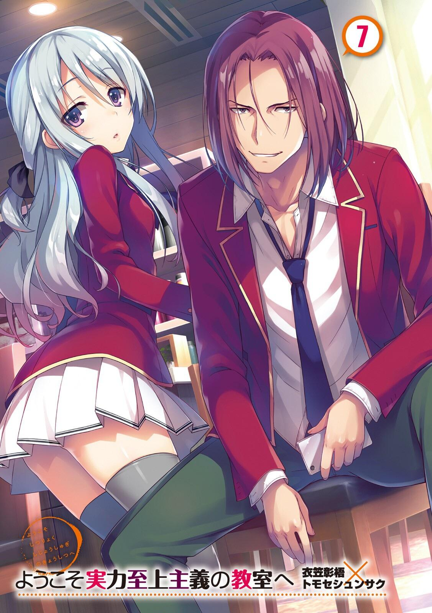
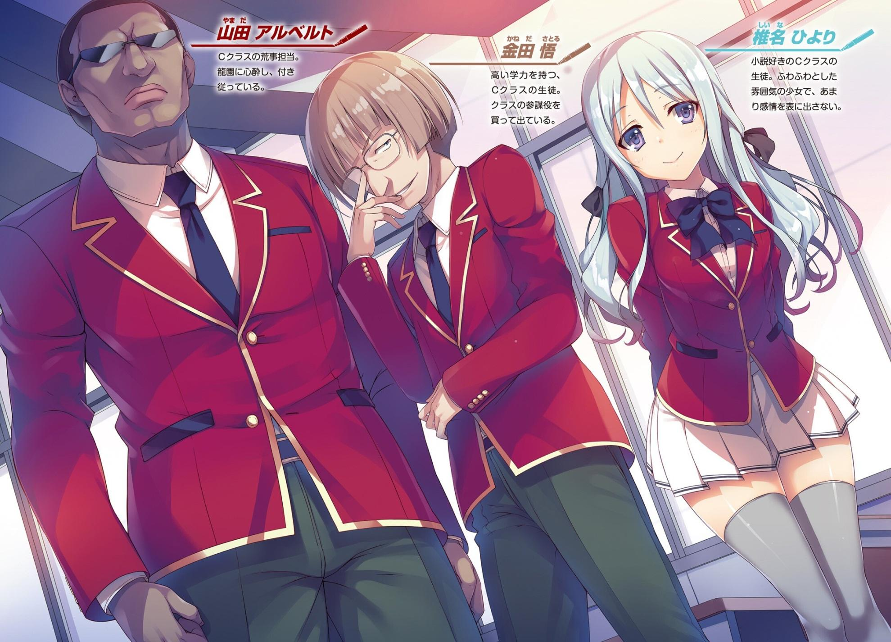
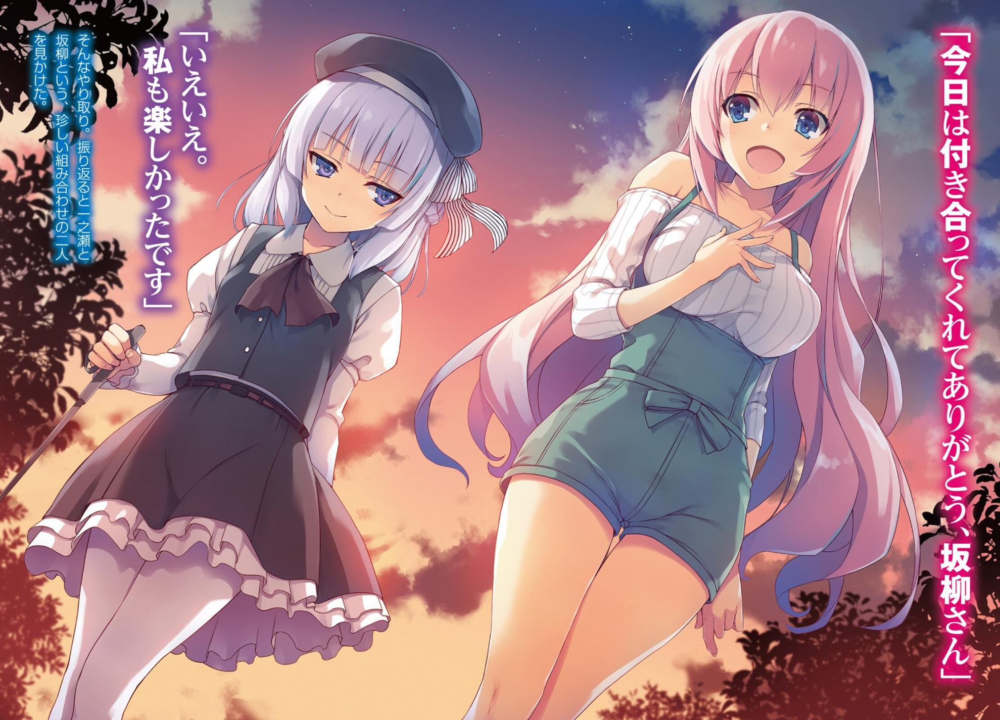
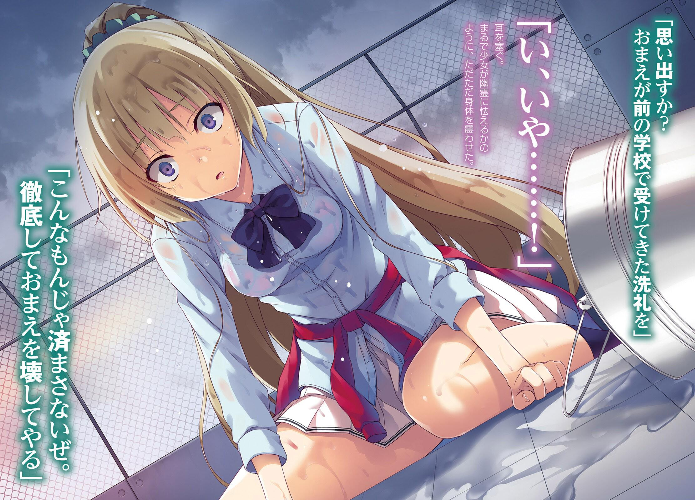
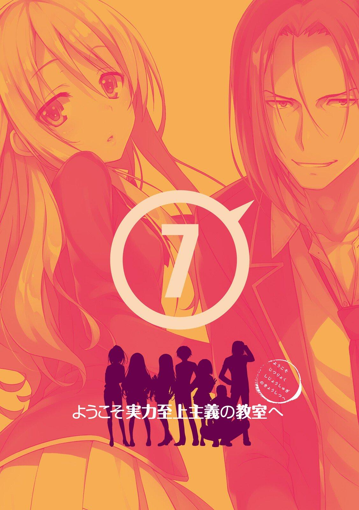
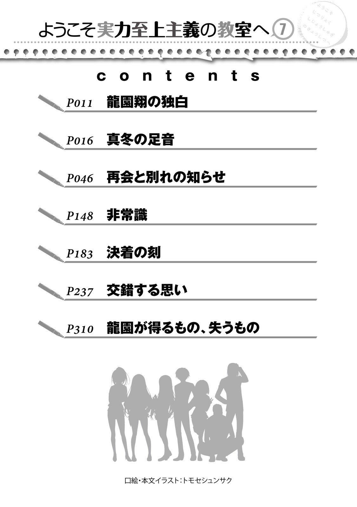
GLADHEIM
TRANSLATIONS
Youkoso Jitsuryoku Shijou Shugi no Kyoushitsu e - Volumen 7
EL MONÓLOGO DE RYUUEN KAKERU
Fue durante la primaria cuando me di cuenta de que no era normal. En una excursión, encontré una enorme serpiente cerca de nuestro campamento.
Recuerdo que mi clase estalló en un alboroto. Gente observando desde lejos, gente cercana entrando en pánico y personas que no estaban tan interesadas en eso. Hubo varias reacciones e incluso adultos que se suponía que eran maduros perdieron la calma y pidieron ayuda desesperadamente. Agarré una enorme roca que encontré cerca y la balanceé hacia la cabeza de la serpiente.
Ni siquiera sentí miedo de ser mordido. Hubo un grito y el pánico de los maestros lo siguió. Ni siquiera me di cuenta. No es como si quisiera ser un héroe o algo así. Estaba confundido del por qué había tanta necesidad de tener miedo.
Ese fue mi primer contacto con un lado oculto de mí. Y, al mismo tiempo, sabía que en el momento en que el enemigo caía a mis pies, podía sentir una gran cantidad de adrenalina corriendo por mi cerebro. Esta fue mi primera victoria.
“Miedo” y “alegría” son dos caras de la misma moneda. Esa verdad en este mundo es tan delgada como el papel. El mundo está gobernado por la
“violencia”. Tu “estatus” en este mundo está determinado por tu capacidad para la “violencia”. Vi el cadáver de la serpiente debajo de mí y mi corazón se llenó de alegría. Desde entonces, he tenido muchos enemigos tanto internos como externos.
A veces, cuando estaba rodeado de enemigos, seguí ejerciendo la “violencia”
para ganar. Y ante mi poder abrumador, todos cayeron a mis pies. Nunca tuve miedo. Siempre pensé en la venganza y en cambiar la situación de mis enemigos. Todos ellos finalmente se postraron ante mí. La verdadera “élite” es una persona cuya capacidad para la “violencia” no tiene paralelo, y un ser humano que nunca siente “miedo”. Pero aquí está el problema, con cada enemigo caído, cada día comenzó a ser aburrido para mí. Porque al final, no hay una sola persona capaz de golpearme. Si hay algo que finalmente podría vencerme, esa cosa solo puede describirse como la “muerte”.
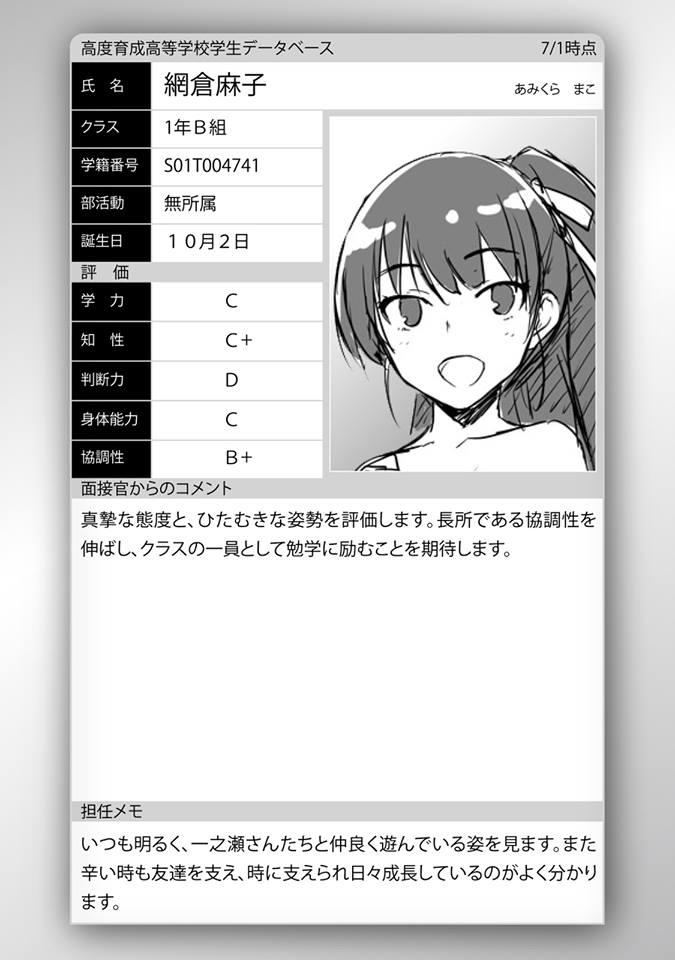
HUELLAS DEL INVIERNO
La mitad de diciembre ha llegado y pasado. El cambio de las estaciones sucedió rápidamente y se ha vuelto extremadamente frío. Los estudiantes, naturalmente, cada vez más han comenzado a usar bufandas, guantes y medias largas. El cielo de hoy es gris nublado, casi como si estuviese a punto de nevar.
Ahora que lo pienso, nunca he visto la nieve antes. Por supuesto, la he visto en televisión y en libros, pero nunca la he tenido en mis manos o sentido con mi piel.
No sé si nevará aquí este año, pero sí quiero experimentarlo. Después de la escuela, en una esquina del Centro Comercial Keyaki, cuatro personas se reunieron en el espacio donde los estudiantes descansan y se ocupan de sus asuntos.
Son miembros de la Clase D. Sakura Airi, Hasebe Haruka, Yukimura Keisei y yo.
El verdadero nombre de Keisei es Teruhiko, pero de acuerdo con su deseo, hemos empezado a llamarlo Keisei.
Me he acostumbrado a ver sus caras en estos días. Nos encontramos al azar dos o tres veces por semana para conversar sin motivos ocultos. El tiempo que pasamos juntos depende del día, pero a veces son unas dos horas y a veces nos separamos después de solo media hora. Si quieres irte antes, también puedes hacerlo. Lo que quiero decir es que estas no son personas con las que debes ser formal. A menudo pasamos más tiempo de lo normal juntos después de la escuela los viernes. La razón de eso es nuestro quinto miembro que actualmente está ausente, Miyake Akito, y las varias circunstancias que lo involucran.
— Al final, nadie de ninguna clase fue expulsado. Pensé que la Clase C
podría haber hecho un movimiento ahora. Las preguntas que hicimos tampoco fueron fáciles.
Como varias chicas de la Clase C casualmente pasaron junto a nosotros, Keisei dijo eso.
— Sin embargo, la clase C en realidad no parece ser mejor para estudiar que nosotros —Haruka respondió de inmediato mientras jugueteaba con su teléfono. Y después dijo algo—. Miyachi dice que estará aquí pronto.
Parece que acaba de irse de su club.
Aparentemente ha estado teniendo una conversación con la persona que estamos esperando. El único miembro de nuestro grupo que pertenece a un club, Akito, no puede reunirse con nosotros inmediatamente después de la escuela.
— Pero superamos el examen, ¿no es un alivio...? Además, tampoco son buenas noticias que alguien de otra clase sea expulsado.
Airi, que no se maneja bien con cosas tan duras como esta, dio una opinión honesta.
— Bueno, no hay nada mejor que poder llevarnos bien. Pero, ¿no será difícil con la forma en que es esta escuela? Aspirar a las clases superiores significa derribar a otra clase.
Suena duro, pero Haruka tiene razón. Al escuchar eso, Keisei quedó honestamente impresionado.
— Exactamente. Entiendo lo que Airi está tratando de decir, pero si no los derrotamos, nos estaremos saboteando nosotros mismos. Ser un ganador en esta escuela significa sacrificar a otras tres clases. No hay necesidad de ser los sacrificios.
— Supongo que sí.......
Airi respondió desanimada ante las duras palabras de Keisei.
— Por ejemplo, ¿realmente no hay ningún truco que podamos usar? Como que se puedan igualar todos los puntos de clase en el examen anterior. De esa forma, todos pueden estar felices y todos podemos graduarnos como la Clase A. Pero como si eso fuera a pasar.
— Creo que sería genial.
— Desafortunadamente, creo que eso es imposible.
Contraatacando la extraña idea de Haruka, Akito se unió a nosotros.
— ¿Cómo puedes decir eso?
— He escuchado a los superiores hablar de esto. Si resultamos empatados después del examen final, parece que se realizarán exámenes especiales adicionales para determinar nuestra clasificación.
— ¿Qué tipo de examen?
— No lo sé. Son solo rumores en el mejor de los casos. Al parecer, nunca hemos tenido una situación como esa, en la que diferentes clases terminen con los mismos puntos.
Supongo que los detalles son desconocidos incluso para Akito. Pero no se puede confundir el hecho de que esta es información valiosa.
— Supongo que no será tan simple. Aunque pensé que era una idea interesante.
— Al final, supongo que eso significa que solo puede haber una Clase A.
— Entonces, Miyachi, ¿cómo estuvo la práctica hoy?
Haruka le preguntó a Akito.
— ¿Cómo estuvo?
— Hmm. Como lo bien que manejaste tu arco, supongo.
— Normal. Nada particularmente sobresaliente o malo. No preguntes cuando ni siquiera tienes interés en eso.
— ¿No está bien? ¿Tener una conversación informal entre amigos?
— Entonces, supongo que eso significa que al menos estás un poco informada sobre la arquería.
Akito se sentó mientras abrigaba sus sospechas.
— No se trata de conocimiento ni nada, es solo una competencia donde se supone que debes golpear a los blancos con una flecha, ¿no?
— No, eso es lo esencial, sin embargo... no importa.
Akito trató de explicar en detalle, pero parece haber renunciado a eso.
— ¿Cómo debería decirlo? Nunca me interesó el tiro con arco desde el día en que nací. Por eso tengo curiosidad por saber qué errores se cometieron para empujarte en esa dirección.
Parece que Haruka piensa que andar por el camino del tiro con arco es un error.
Bueno, no es un deporte particularmente deslumbrante, pero en lo personal, estoy interesado. Pero supongo que hay muchos estudiantes que nunca han tenido un arco antes.
— Sí, ahora que lo pienso, ¿por qué tiro con arco? No es que esta escuela sea famosa o algo así, ¿verdad?
Escuchando su conversación, Keisei también hizo una pregunta.
— Durante la secundaria, una persona de último año que me cuidó pertenecía al club de tiro con arco. Por eso pensé que también podría hacerlo. Eso es todo, no hay una razón profunda detrás de ello.
— El catalizador para comenzar a hacer algo. Supongo que es justo ese tipo de cosas.
Airi también, reservadamente se unió a la conversación. Es algo que estoy viendo cada vez más en estos días y un espectáculo bienvenido. Y también es porque nadie se muestra sorprendido o se burla de ella por el hecho de que también pueda meterse en la conversación de forma natural.
— Airi tiene su cámara digital, ¿verdad? Supongo que es popular en estos días. Creo que puedo entender eso mejor.
— Instagram. Un hobby único para las chicas, ¿eh? Es realmente difícil de entender.
Tal vez Keisei es incapaz de comprenderlo, ya que está diciendo cosas bastante negativas al respecto.
— Oye, eso es discriminación sexual. También hay muchos chicos que lo hacen en estos días, ¿sabes?
— ... En realidad, no creo que sea una buena idea divulgar información personal acerca de ti de esa manera.
— Yo tampoco lo entiendo. ¿Qué hay de ti, Kiyotaka? ¿También lo haces?
— No, no estoy realmente bien informado sobre esas cosas.
Ya que esta escuela prohíbe cualquier contacto con el exterior, cosas como SNS
(Social Networking Services: en pocas palabras Redes Sociales) y otras
aplicaciones de mensajes de texto solo conectan a los alumnos entre sí. Si estás satisfecho con eso, entonces no hay razón para hablar.
— Kiyopon realmente no se parece al tipo de personas que hace esas cosas.
Por el contrario, si usaras Instagram entonces te sentirías patético. Alguna vez fuiste de fiesta a una piscina en la noche llevando un helado y luciendo lindo... ¿mmm?
— No.
Inmediatamente lo negué. Sería problemático si ese es el tipo de persona con el que ella viene a verme más tarde.
— ¿Qué hay de ti entonces, lo usas? Instagram, quiero decir.
— No, en absoluto. Es una molestia y realmente no me gusta mostrarme a los demás.
— Estoy completamente de acuerdo.
Keisei asintió, estando de acuerdo con las palabras de Haruka. Airi se mantuvo en silencio al escuchar eso, pero parece que recibió un daño crítico en este momento por ese golpe. Aparentemente dejó de hacerlo, pero solía tomar selfies y subirlas al SNS como hobby.
— Es bastante popular por ahí, así que no es raro.
La cubrí. No tiene sentido que se deprima por esto. Probablemente tenía la intención de esconderlo, pero es completamente obvio cómo se puso nerviosa por mis comentarios con solo una mirada de reojo.
Airi siempre reacciona expresivamente a una conversación como esta, así que Haruka y los demás lo captan de inmediato.
— Sé que estoy muy desactualizada y no estoy muy a la moda, así que no puedo objetar demasiado de esto. Me disculpo con cualquiera que le guste Instagram.
Haruka levantó sus manos y se disculpó.
— Solo porque personalmente no me gusta, rechazar algo que es demasiado popular es ciertamente algo estúpido. No lo pensé bien.
Y Keisei también se disculpó. Principalmente con Airi.
Airi palmeó su pecho aliviada.
— Perdón por cambiar el tema, pero hay algo de lo que siento curiosidad.
Ahora que la discusión se calmó un poco, Akito intervino.
Sonaba algo irritado y hablaba mientras miraba a su alrededor.
— ¿No parece extraña la Clase C estos días?
— ¿La Clase C? Aunque, siempre son un grupo extraño. ¿Qué quieres decir?
Haruka se inclinó curiosamente hacia delante con los ojos muy abiertos. Sé lo que Akito está tratando de señalar.
Se trata de las personas que nos han estado siguiendo estos últimos días.
Parece que Akito también se dio cuenta. Incluso ahora, hay un chico escondiéndose mientras nos mira. Es “Komiya”, un estudiante de la Clase C y uno de los secuaces de Ryuuen. No hay dudas de que debe vigilar a nuestro grupo.
Pero hay bastante distancia entre nosotros e, incluso si le preguntamos, realmente no hay evidencia que apunte hacia que nos vigila. Si él insiste en que se trata de una serie de coincidencias, entonces eso es todo lo que se necesitará para refutarnos.
Por el contrario, existe el riesgo de que podamos ser etiquetados como los malos por confrontarlo con eso. La razón por la que Akito no lo dijo en voz alta es probablemente porque todavía no tiene pruebas sólidas.
Más importante aún, el problema es que hay otra persona que “no es de la Clase C” que observa a este grupo. Akito no ha notado esa presencia.
— Durante nuestra sesión de estudio hace un tiempo, los chicos de la Clase C se pusieron en contacto con nosotros ¿verdad?
Fue cuando celebrábamos una sesión de estudio para prepararnos para el examen escrito “Paper Shuffle”. Los estudiantes de la Clase C se presentaron en un espacio público como la cafetería y de repente se acercaron a nuestro grupo.
Y desde entonces hasta hoy, esa interferencia ha continuado con alguien que nos sigue.
— Te refieres a Ryuuen-kun y Shiina-san, ¿verdad? ¿Podría ser que ellos también?
— Sí. Es una persona diferente esta vez. Hoy, Ishizaki y Komiya se presentaron en el club de tiro con arco. Dijeron que fueron a echar un vistazo, así que los superiores lo aceptaron, pero me miraban todo el tiempo, así que fue difícil hacer cualquier cosa.
Ya veo. En otras palabras, Komiya vino hasta aquí siguiendo a Akito. La razón por la que Ishizaki no está aquí es porque rastrear a un gran número de personas no es una tarea adecuada para él.
Parece que Akito es el más preocupado por la vigilancia de Ryuuen.
— ¿No es solo que estaban interesados en el club?
Airi, que tal vez no podía comprender el proceso de pensamiento de Ryuuen, dijo eso.
— Sería genial si fuera el caso. Pero no se sintió así.
Como si tratara de decirnos que tiene los hombros rígidos, Akito agita sus brazos. Todos los días, Ryuuen lo presiona repetidamente y el ritmo solo ha aumentado.
No es que estuviera hablando directamente con él, pero casi puedo escuchar la risa despiadada de Ryuuen. “Te aplastaré”. Pude sentir ese tipo de fuerte determinación por parte de Ryuuen.
— ¿Hicieron algo? ¿Se burlaron de ti o estornudaron para molestarte justo cuando estabas a punto de soltar la flecha? ¿O tal vez te tiraron piedras pequeñas?
— Por supuesto, no pueden hacer nada frente a los instructores y los superiores. Cuando la práctica terminó, se fueron.
Desde ese día, aunque yo mismo no cambié, es obvio que dieron en el blanco.
Debo suponer que también han marcado a Karuizawa.
Tal vez ya redujo sus objetivos a unos pocos que también me incluyen a mí. Si hago algo más decisivo, creo que incluso puede reducirlo solo a mí. Y la persona que tiene esa cosa decisiva es “Karuizawa Kei”.
Pero el hecho de que no esté actuando a la ligera es prueba de que lo ha pensado cuidadosamente. Incluso si trata de preguntarle a Karuizawa sobre mi existencia, hacerlo directamente no lo llevará a ninguna parte.
Ahora bien, me pregunto cómo Ryuuen va a completar esa última pieza del rompecabezas. Mirando el patrón de sus movimientos hasta ahora, no es tan difícil de imaginar.
La pregunta es “cuándo” va a suceder. Mientras pensaba en eso, Akito y los demás continuaron su conversación. Keisei llegó a su conclusión de por qué la Clase C nos molesta.
— ¿No creen que tiene algo que ver con el crecimiento de la Clase D?
Terminamos con 0 puntos casi después de inscribirnos, pero aquí estamos, casi lo suficientemente cerca como para arañar la espalda de la Clase C.
También hay que considerar los resultados del examen “Paper Shuffle”, por lo que en realidad podemos terminar convirtiéndonos en la Clase C
cuando llegue el tercer trimestre. Deben estar aterrados.
Keisei intenta discernir de manera lógica la razón detrás de las acciones de la Clase C.
— Ahora que lo mencionas, es cierto. Están a punto de ser superados por las mismas personas de las que se burlaron---
— Pero... no los hemos alcanzado, ¿verdad?
Airi, recordando el anuncio de los puntos de clase, preguntó eso, pero Keisei respondió.
— Sí. Los puntos de clase anunciados a principios de diciembre fueron 262
puntos para la Clase D y 542 puntos para la Clase C. Todavía hay una brecha de 280 puntos entre nosotros.
Durante el Paper Shuffle, luchamos directamente contra la Clase C y triunfamos.
Como resultado, logramos aumentar nuestros puntos de clase. 100 puntos de la Clase C se movieron a la Clase D y ganamos un total de 200 puntos.
La brecha ahora son míseros 80 puntos.
Aun así, la Clase C está a la cabeza en esta etapa. Sin embargo, un accidente completamente ajeno a los exámenes pasó en la Clase C.
— Parece que la Clase C cometió una violación grave a las reglas. No anunciaron los detalles, pero recibieron una penalización severa, y les quitaron 100 puntos.
El otro día, recuerdo haber recibido una explicación general de la escuela.
— Me pregunto qué hicieron exactamente para causar este gran escándalo.
Sin embargo, es realmente una cosa muy típica de la Clase C.
Haruka dijo exasperada, pero desafortunadamente, la Clase D no puede darse el lujo de reírse de otras clases. A pesar del examen, perdimos 1000 puntos de clase un mes después de inscribirnos.
— Independientemente de la razón, el efecto de su comportamiento autodestructivo es significativo. Si las cosas terminan así, después de las vacaciones de invierno hay una gran posibilidad de que nos asciendan a la Clase C.
Keisei concluyó esto sin mostrarse arrogante.
— ¿Es esa la razón por la que Miyachi se vio involucrado?
— No hay nada que diga que esa no es la razón.
Desde la perspectiva de Ryuuen, que gobierna sobre la Clase C, una reducción de rango no va a ser divertida. Encontrar algún tipo de debilidad en la clase D
para poder mantener su posición actual, es lo que está tratando de hacer ahora.
Si ese es el caso, entonces es consistente con sus acciones.
Todos aquí, a excepción de mí, concluyeron eso.
— Un cambio en las clases es un problema que esta escuela no puede evitar por completo, pero también creo que es algo que no sucede a menudo. En ese caso, el crecimiento de la Clase D después de su gran caída debe ser motivo suficiente para que la Clase C sea cautelosa y es natural intentarlo y descubrir la razón detrás de ese crecimiento.
— A pesar de actuar tan arrogante todo el tiempo, Ryuuen-kun sigue siendo un líder. Va a perder el respeto por completo.
— Ya veo. Supongo que su desesperación es comprensible.
Akito probablemente se sintió complacido al imaginar a un Ryuuen frustrado con su orgullo hecho trizas, así que estuvo de acuerdo con eso.
— Pero realmente no hemos cambiado tanto, ¿verdad? Parece que para cuando nos dimos cuenta, esa diferencia ya se había reducido. ¿Por qué es eso? ¿Es porque la Clase C bajó de nivel?
La mayoría de los estudiantes de nuestra clase no conocen las batallas que ocurren furtivamente y simplemente hacen los exámenes. Es comprensible que no puedan comprender por qué la brecha se ha reducido.
— Si solo hablamos de la Clase D, triunfamos sobre las otras clases durante el examen de la isla. Fuimos derrotados por Ryuuen durante el examen del zodíaco, pero hicimos un regreso durante el Paper Shuffle el otro día.
Comparado con eso, la Clase C ha estado descuidando sus puntos de clase, ¿no es así?
— Incluso en la isla, agotaron rápidamente todos los puntos que se les asignaron.
— En otras palabras... ¿la clase C se autodestruye?
— Podrían verlo de esa manera. La violación de las reglas esta vez es bastante autodestructiva.
Un examen especial realizado en una isla deshabitada justo cuando comenzaron las vacaciones de verano. A cada clase se le asignaron 300 puntos para su uso durante el examen y se supone que debíamos pasar el examen utilizando esos puntos en el transcurso de una semana. Y cualquier punto que quedara al final se agregaría a nuestros puntos de clase. Todas las clases, incluida la D, hicieron
todo lo posible para ahorrar tantos puntos como pudieron pero, como dijo Haruka, la Clase C agotó rápidamente los 300 puntos.
— ¿No es por eso que nuestra clase fue capaz de cerrar la diferencia tanto?
Hubo desvíos en el camino, pero la Clase D logró ahorrar 225 puntos.
— Es cierto, pero no sabemos si lo contrarrestaron o no. A pesar de todos sus gastos, la Clase C parece haber disfrutado de sus vacaciones. Estoy algo celosa de que no hayan tenido que pasar por todo eso.
— Tonterías. Que Ryuuen siempre sea imprudente... no, es un inmaduro que piensa que hacer cosas que la gente norma no haría, lo hace parecer genial. Por eso no significa nada si la clase pierde.
Ahorrar puntos de clase con el fin de ascender a la Clase A. Desde la perspectiva de Keisei, que posee una voluntad tan fuerte, tirar los puntos de clase de esa manera puede parecer una cosa absurda.
Pero tampoco es que Ryuuen simplemente desperdiciara los puntos que se le asignaron en la isla.
De hecho, a pesar de haber agotado todos sus puntos, entregó todos los artículos sobrantes, como inodoros y carpas, a la Clase A. No me imagino que los entregaría de forma gratuita.
En otras palabras, debe haber obtenido algo a cambio de la pérdida de los puntos. Por supuesto, no hay manera de que acepte algo intangible como la confianza o la amistad. Algo que puede obtener a cambio de puntos de clase.
Tiene que ser puntos privados. Hay solo unos pocos estudiantes que están conscientes de esto y Keisei no parece entender.
— Chicos, ustedes sí que lo tuvieron fácil. ¿No lo crees tú también, Airi?
— S-Sí. Así es. Había muchas chicas preocupadas por eso. Creo que un poco más y también podría haber estado en problemas...
Airi lo dijo mientras se sonrojaba. El examen de la isla sí tuvo en cuenta a las chicas hasta cierto punto, pero incluso así estoy seguro de que la pasaron mucho peor que los chicos.
— ¿Por qué hubieras estado en problemas si hubiera tardado un poco más?
Keisei, que no sabe nada sobre los problemas de una chica, miró a Airi extrañamente.
— Eso…
Airi, incapaz de decirle que se trataba del “día de las chicas”, desvió la mirada.
Haruka, al ver la situación, le dijo a Keisei unas duras palabras.
— ¿Cómo debo poner esto, Yukimu ~? Ese lado ignorante de tuyo puede ser lindo, pero cuando se trata de cosas como esta, necesitas leer el estado de ánimo. Ese tipo de cosas.
— ...¿Qué quieres decir?
Independientemente de si simplemente no tiene tacto o realmente no tiene idea, Akito golpeó suavemente el hombro de Keisei.
— La gente tiene sus propios problemas, es lo que significa.
— No tengo ni idea. ¿Qué quieres decir con “sus propios problemas”?
Keisei, incapaz de leer el estado de ánimo, intentó ahondar aún más en las circunstancias de una chica. Y entonces Akito cambió el tema.
— La clase D ganó porque Horikita anticipó la arriesgada estrategia de Ryuuen, ¿verdad? Si nadie se daba cuenta de eso, entonces hay una buena posibilidad de que el líder de la Clase D hubiera sido descubierto,
¿no?
Asentí con la cabeza y le di mi respuesta honesta a Akito, quien intentó confirmarlo.
— Si eso hubiera sucedido, la situación de este momento no habría ocurrido.
— Estuvieron divirtiéndose todo el tiempo y aun así querían obtener esa recompensa al final, ¿eh? Y parecía como si todos se hubieran retirado.
Pero ¿por qué Ryuuen-kun tenía que ser el que se quedara en la isla? El líder de la clase C. ¿No hubiera sido mejor dejar atrás a alguien que se notara menos?
Haruka no está completamente equivocada. Sin embargo, esto es algo que se aplica a todas las clases. Los que se destacan por ser los líderes es algo que todos considerarían primero, pero dado que literalmente cualquier persona podía ser nominada como líder, también era natural terminar dudando de ello. En primer lugar, nadie sería capaz de identificar a Ryuuen como el líder a menos que estuvieran absolutamente seguros de que se había quedado en la isla.
E incluso si confirmaban que se había quedado atrás, todavía había pocas posibilidades de que fuera identificado. Porque un estudiante discreto de la Clase C todavía podría estar escondido. Esa posibilidad no puede ser descartada.
Porque era un examen en el que el costo de cometer un error era mucho mayor que la recompensa de dar en el blanco. En última instancia, a menos que tuvieras una prueba sólida, nadie podía identificar a nadie.
— Oye, Kiyotaka. ¿Por qué no nos dices la información que obtuviste de Horikita?
Keisei preguntó con una expresión seria.
— ¿Qué quieres decir?
— Me gustaría saber qué piensa Ryuuen y qué planea hacer. Teniendo en cuenta lo que sucedió en el festival deportivo y durante el Paper Shuffle, necesitamos estar unidos como clase.
— También me resulta espeluznante tener a Ishizaki y a los suyos pegados a mí. También estoy de acuerdo.
Parece que están empezando a darse cuenta de que la cooperación se ha vuelto más importante que nunca. Incluso Akito y Haruka, que no prestan mucha atención a los problemas de la clase, parecen compartir la misma opinión.
— Son solo rumores, pero...
Antes de proponer llamar a Horikita, Keisei dijo esto.
— Estoy bien con eso. Por favor cuéntanos.
Los cuatro voltearon hacia mí a la vez. Siento una especie de extraña presión sobre mí.
— Está bien. No seré responsable de algún error.
Después de agregar eso, les expliqué desde el principio los eventos de la isla deshabitada que experimenté con Horikita. Por supuesto, todos esos eventos fueron movimientos que hice por mi cuenta, pero oficialmente es Horikita quien pensó en ellos.
Sobre cómo Ryuuen usó un radio mientras se escondía en la isla para comunicarse con la espía. Cómo Ibuki no era la única y también pudo haber espías en otras clases. Y luego sobre cómo Ryuuen comenzó a obsesionarse con Horikita desde el examen en el crucero. También les conté cómo Ryuuen descubrió una forma de superar el examen en el crucero.
Por supuesto, no les dije cómo era obvio que Ryuuen estaba planeando aplastar a Horikita durante el festival deportivo y también guardé silencio sobre la traición de Kushida.
— Creo que esa es la esencia. Más o menos lo que ustedes ya saben, Keisei.
Ahora que había obtenido alguna información nueva, Keisei se cruzó de brazos mientras se sumía en sus pensamientos.
— La pregunta es, como también dijo Haruka, ¿por qué Ryuuen se quedó en la isla?
— Según Horikita, es porque no confía en nadie. Parece lo más probable.
Reunir información sobre las otras clases e interferir a partir de eso parece una carga demasiado pesada para cualquier otro estudiante.
La capacidad de controlar al espía e interferir. La resistencia y la fuerza para permanecer en la isla durante al menos unos días con nada más que las necesidades básicas. No lo diré en voz alta aquí, pero esa persona también tenía que ser alguien conectado a la Clase A y que fuera capaz de trabajar con ellos.
Considerando todo eso, no sería una exageración tener a Ryuuen como el único que podría llevar a cabo esta estrategia.
Si los líderes tuvieran que haber sido nombrados una vez que todos los estudiantes se hubieran reunido, entonces no habría optado por esta estrategia.
Sin embargo, se supone que debíamos nombrarlos después del pase de lista en el penúltimo día del examen. En otras palabras, se hizo antes de que las clases se reunieran.
Esa debe ser la razón por la que eligió esa estrategia.
— Como se esperaba de Horikita... no hubiera podido pensar tanto. Había dejado de tratar de identificar a los otros líderes de las clases y también había dejado de intentar sondear la situación.
Keisei y los otros reflexionan sobre eso.
— ¿No es comprensible? Los problemas de comida y de higiene, el manual se quemó y se robaron la ropa interior. La clase D estaba hecha trizas. No podíamos darnos el lujo de sondear a las otras clases.
Akito recuerda los eventos que tuvieron lugar en la isla. Keisei también tiene recuerdos desagradables.
— En retrospectiva, realmente tuvimos un momento difícil.
— Pero Horikita-san es increíble. Pensar que vio todo eso en el examen.
Airi elogia a Horikita como si realmente la admirara.
— Puedo entender por qué Horikita-san está marcada. Después de todo, ella descifró la estrategia de Ryuuen-kun.
— De hecho, parece que todavía nos siguen molestando aún ahora.
No debería negar eso, sino que debería decirles la verdad. Y entonces agregué eso.
— Parece que inclusive durante el examen del zodíaco, hubo una disputa entre personas que estaban en el mismo grupo.
— Puedo entender la isla y el crucero, pero ¿por qué Ryuuen y sus hombres se han involucrado recientemente con otros estudiantes de la Clase D?
Incluso vinieron hasta el club de arquería para vigilarme. Eso no es normal,
¿verdad?
Aunque Horikita esté siendo atacada, estas preguntas son comprensibles.
— Es posible que estén tratando de descubrir una debilidad en la Clase D.
Debido a que Horikita no tiene debilidades en absoluto, entonces pueden estar tratando de destruir su entorno.
— Ya veo. Esa también es una posibilidad...
Me pregunto si esto significa que Keisei y los demás han logrado comprender el razonamiento detrás de las acciones de Ryuuen.
— Como se esperaba de la novia de Kiyopon.
Haruka, a pesar de estar impresionada, se burló de mí.
— No solo vayas y la hagas mi novia.
— E-Es cierto. Creo que estás siendo grosera con Kiyotaka-kun.
— Jajajaja. Lo siento, lo siento.
Voy a añadir esto, pero también está siendo grosero con Horikita. Hacerla pareja de alguien como yo.
Incluso si se trata de un malentendido, Sudou puede enojarse si se entera de esto.
— Aunque no sea tu novia, te gusta, ¿no? O tal vez estás con otra chica.
— No me gusta y tampoco tengo novia.
— Ya veo. Entonces eso significa que todos vamos a estar solos este año.
— ¿Te sientes sola?
— Date cuenta. Es casi Navidad.
Mientras estaba sentada en un banco situado frente a un restaurante en el Centro Comercial Keyaki, Haruka susurró eso.
Ciertamente, las decoraciones casi te hacen pensar que esto no es una instalación en el campus. Ocasionalmente, estudiantes que parecen pareja pasan de largo.
— No es como si fuera un día tan especial, ¿verdad? Es un día como cualquier otro.
— Eso puede ser para ti, Yukimu~. Pero es sorprendentemente difícil para nosotras las chicas.
— Pueden aparecer rumores......
— Sip, sí. Como quién está saliendo y quién no está saliendo con quién.
Como quiénes pasaron la noche juntos y quiénes no. Y a pesar de que estás soltera porque quieres estar solteraa terminan mirándote como a alguien patético.
— ... Somos estudiantes de primer año de preparatoria. Nuestros estudios son nuestra prioridad.
— ¿Pero fantaseaste con eso? Te estás sonrojando.
— Para.
— De todos modos, este jugo de mango es demasiado dulce. Así se hace.
Akito hizo un gesto de vomitar y empujó la taza hacia mí.
— ¿Pero está delicioso?
Haruka parecía realmente sorprendida, como si no pudiera creerle.
— Por cierto, personalmente creo que va a haber una variedad de cosas que le sucederán a la Clase D durante las vacaciones de invierno.
— ¿Eso es... refiriéndote a quién sale con quién?
Airi preguntó con curiosidad a Haruka.
— Probablemente. Si hay chicos y chicas saliendo juntos, entonces también habrá chicos y chicas que se separarán. Después de todo, muchas cosas pasan en Navidad.
Haruka asintió repetidamente como si hubiera visto tantas parejas así antes.
— Dejemos de lado a las parejas. ¿Crees que habrá rupturas? En este momento, la única pareja en la Clase D son Hirata y Karuizawa, ¿verdad?
Akito sostuvo su garganta mientras decía eso. Tal vez la dulzura del jugo de mango todavía está atrapada en su garganta. Por cierto, estoy bebiendo jugo de mango también y es ridículamente dulce.
— Ese no es necesariamente el caso. Parejas inesperadas pueden formarse sin que lo sepas, Miyachi. El romance no es algo restringido a los límites de nuestra clase. Si hay una chica que te gusta, debes actuar antes de que alguien te la robe.
— Desafortunadamente, la arquería es la única amante que necesito.
— Maldición. Ni siquiera es como si fueras tan apasionado por eso. No eres para nada genial---
— ...Cállate.
Akito desvió la mirada tímidamente, como si estuviera un poco avergonzado.
¿Es así? Ya estamos al borde de Navidad, ¿verdad? Como no estoy familiarizado con esto, todo me suena a algo de otro mundo.
— De todos modos, tengo mi club. No es como si estuviera tomando un descanso en las vacaciones de invierno. Podría ser una historia diferente si tuviera novia, pero actualmente no estoy planeando conseguir una.
— Con eso, ¿quieres decir que QUIERES tener una?
En un verdadero estilo de entrevista, mientras imitaba la acción de sostener un micrófono en la mano, Haruka interrogaba a Akito.
— No tengo intención de causar un alboroto como Ike y los demás, pero esto es igual para los chicos y las chicas, ¿verdad?
No hay muchas personas que no estén realmente interesadas en el romance, es lo que él está tratando de decir, eso parece.
— ... Bueno, no voy a negar eso siempre y cuando consiga a mi hombre ideal.
Yukimu~ parece rechazar el romance, pero ¿qué harás si conoces a una chica que te quiera, Yukimu ~?
— Lo que haré... dependerá de la relación entre esa persona y yo. Ese tipo de cosas.
— Hmm. Entonces no saldrás con ella incondicionalmente solo porque sea linda. Ya veo, ya veo. Eres un chico serio.
— Cállate.
Los dos chicos fueron golpeados por las burlas de Haruka.
— Kiyotaka-kun, ¿t-tienes algún plan para Navidad?
De repente, Airi, que estaba a mi lado me preguntó.
— Uwa. ¿Estás preguntando a Kiyopon, Airi? Qué atrevida~.
— N-No, eso no es lo que quiero decir, no es lo que quiero decir, ¿de acuerdo?
— Bueno, ¿no es eso? Kiyopon acaba de decir que no tiene novia hace un momento.
— No es eso, quiero decir, quería saber lo que planeas hacer. Cuando pasas la Navidad solo, tengo curiosidad por lo que haces.
Una pareja ciertamente iría por una cita o dos. Pero tengo curiosidad de cómo pasaría el día una persona sola.
— Ya veo, eso es verdad. Miyachi tiene su club, pero ¿qué va a hacer Yukimu?
— Voy a estar estudiando. Si somos promovidos a la Clase C antes del tercer trimestre, no solo perseguiremos a las otras clases, sino que también debemos mantener la posición, mientras haya muchos estudiantes en nuestra clase que no sean muy brillantes, me gustaría asegurarme de mantener la ventaja, incluso si solo es en los exámenes escritos.
La persona correcta en el lugar correcto. Parece querer contribuir en el área en la que brilla más fuerte. Parece que ha tenido más confianza en sí mismo al ayudar a Haruka y a Akito a estudiar.
— No creo que pueda poner tanto esfuerzo en estudiar. Te lo dejo, Keisei.
— Puedes dejármelo, pero aunque nos graduemos como Clase A, seguirás siendo ineficiente si no te esfuerzas en el camino que elijas andar.
Keisei lo regaña acerca de cómo solo llegar a la Clase A no es lo suficientemente bueno.
— Tienes razón, supongo. Si no mejoro, colapsaré justo después de eso.
— Pero, ¿no disminuiría eso el valor de graduarse como Clase A?
A pesar de su comprensión, desde la perspectiva de Akira, eso genera una cierta insatisfacción. Para el momento en que te gradúes como Clase A, todos
en ella ya poseerían habilidades acordes con el título. Me pregunto si esa es la suposición de que cómo funciona esta escuela.
Sin embargo, no puedo decir nada en este punto.
— ¿Y qué hay de Kiyopon, en quien Airi está interesada? ¿Vas a estar solo en Navidad?
— Sí. No tengo nada especial en mente. ¿Creo que me quedaré en mi habitación?
— La Navidad es solo otra festividad, ¿verdad?
La ceremonia de clausura será el 22 de diciembre. Navidad está casi a la vuelta de la esquina.
— Fu... fufu.
Observándonos, por alguna razón Airi comenzó a reír en silencio. Ella trató desesperadamente de reprimir su risa, pero no tuvo éxito.
— ¿Pasa algo?
— L-Lo siento. No, solo estoy... feliz, así que me reí.
— ¿Estás contenta, así que te reíste?
Haruka y los demás inclinaron la cabeza como si no lo entendieran del todo.
Para cuando me di cuenta, las lágrimas ya estaban brotando ligeramente de los ojos de Airi.
— Nunca antes me había divertido tanto. Estoy muy contenta ahora.
Airi expresó los honestos sentimientos que había mantenido embotellados dentro de ella.
— ¿Aunque sea una charla sin sentido?
— Estoy bien con eso. Porque quería hablar así con todos.
— Realmente no lo entiendo, pero está bien. También me estoy divirtiendo.
Haruka concluyó. Y luego el tema cambió una vez más.
— Ya estamos aquí. ¿Por qué no cenamos juntos?
No hubo objeciones, por lo que decidimos movernos juntos. Y fue entonces que hablé con todos.
— Voy al baño. ¿Por qué no continúan?
— Entonces esperaremos aquí.
— No, va a estar lleno a esta hora. Es más eficiente que sigan adelante y hagan fila. Les encargo que consigan los lugares.
Todo el mundo parecía convencido y se dirigieron al restaurante del Centro Comercial Keyaki. Esta es una situación que solo puede desarrollarse porque Airi se volvió capaz de actuar sin que yo esté allí.
Concluyendo que me fui al baño, Komiya siguió a Akito y los demás.
Después de ver irse al grupo además de Komiya, caminé en dirección opuesta al inodoro. Y me acerqué a una chica solitaria que estaba sentada donde habíamos estado charlando.
— ¿Me permites un momento?
Llamé a la chica sentada en una silla individual. Ella es de la clase A, Kamuro.
Está jugueteando con su teléfono y aparentemente no se da cuenta de mi presencia, se mantuvo rígida y no hizo ningún movimiento.
— Estoy hablando contigo.
Hablé con ella de nuevo.
— ...¿Yo? ¿qué?
Al levantar la vista, hizo que pareciera que acababa de notar mi presencia.
Avancé unos pasos y me senté en una silla diferente. Una especie de ambiente espinoso se instaló entre nosotros.
— Me has estado siguiendo recientemente. ¿Tienes asuntos conmigo?
— ¿Huh? ¿Qué diablos estás diciendo?
— En el camino de regreso después de la escuela ayer. Centro Comercial Keyaki hace dos días. Centro Comercial Keyaki hace cuatro días. Hace seis días. Hace siete días. Hay bastantes coincidencias, ¿no crees?
Giré la pantalla de mi teléfono hacia la chica y le enseñé una serie de fotografías.
— Eso, pero cuando......
En secreto, había tomado fotos de cuando me seguía.
— Como alguien que me está siguiendo, no puedes permitirte mirarme cuando estoy volteando en tu dirección. Es comprensible que no te des cuenta de que estoy fotografiando desde esa ventana.
— ¿Qué pasa si te estoy siguiendo? ¿Tienes un problema con eso?
— En realidad no. No es como si me estuvieras perjudicando directamente ni nada. Realmente no estoy planeando pedirte que te detengas.
— Exactamente, ¿verdad? Es solo una coincidencia.
— ¿Pero qué crees que pensará tu jefa si se entera de esto?
— ¿Jefa? ¿de qué diablos estás hablando? ¿Has visto demasiadas películas?
— Entonces supongo que informaré esto a Sakayanagi. Que no estás a la altura para seguirme.
— ...Espera un minuto.
Cuando puse mis manos en el reposabrazos y me moví para ponerme de pie, Kamuro me detuvo. Solo con esa actitud, puedo decir que no está particularmente feliz con esta situación.
— Eres bastante devota a Sakayanagi. Todos los días estás obligada a seguirme durante largos períodos de tiempo y haces tu trabajo correctamente. Ustedes dos deben ser cercanas.
— Debes estar bromeando. No hay manera de que realmente quiera obedecer a ese tipo de persona.
— No es necesario que mientas. De hecho, estás gastando tu preciosa vida estudiantil haciendo algo tan aburrido como seguir a alguien. Eso es algo que solo harías porque confías y respetas a Sakayanagi.
— Absolutamente no. Cortaría todos los vínculos con ella en este momento si pudiera.
Escupió eso intensamente, Kamuro parecía irritada.
— Entonces, ¿por qué obedeces a Sakayanagi?
— No importa por qué, ¿verdad?
— Si no lo haces por buena voluntad, eso significa que te ha atrapado porque conoce tu debilidad.
— ...¿Qué estás tratando de decir?
— Informaré de la naturaleza de tu torpe seguimiento a Sakayanagi. Si lo hago, tu inhabilidad para actuar como sus brazos y piernas quedará expuesta y esa debilidad por la que te tiene sujetada puede llegar a afectarte más tarde.
— Entonces me estás amenazando. También me estás amenazando.
“También”, ¿eh? Parece que Sakayanagi no solo está usando a Kamuro, también conoce alguna debilidad de ella. Le hice una pregunta dirigida, pero no creí que mordiera tanto el anzuelo.
— ¿Qué pasa contigo? ¿No es extraño que Sakayanagi te esté atacando?
— No lo sé. No tengo ni idea.
Parece que Kamuro tampoco sabe acerca de las verdaderas intenciones de Sakayanagi. He obtenido al menos una respuesta.
— Eres el estudiante de la clase D que Ryuuen está buscando, ¿verdad? Eso es lo único que se me viene a la mente.
— ¿Qué vas a hacer entonces?
No lo negué. En primer lugar, como Sakayanagi conoce mi pasado, no importa cómo trate de ocultarlo.
— Me estás amenazando, pero si alguna vez lo siento así, también puedo decirle a Ryuuen.
— Pensé que te amenazaría pero me estás amenazando a cambio, ¿eh?
Entonces hagámoslo.
Le hice a Kamuro una propuesta.
— Siéntete libre de seguirme en cualquier momento. No hablaré. Y tampoco se lo diré a Sakayanagi. Digamos que a cambio de eso, no le contarás a nadie más que a Sakayanagi.
— ¿Un intercambio de dar y recibir?
— No creo que sea un mal negocio.
— ... Eso es seguro. Tampoco estoy interesada en Ryuuen.
Parece que Kamuro está de acuerdo, ya que asintió y se levantó.
— Regresaré ahora. Estoy cansada.
Diciendo eso, Kamuro fue directo a la salida del Centro Comercial Keyaki.
— Debe ser una debilidad bastante problemática esa por la que la tienen sujeta.
Pero gracias a esto, ya no se producirán interrupciones descuidadas.
Supongo que por el momento, debería conformarme con esto. Mi identidad siendo filtrada a Ryuuen por una fuente inesperada. Esos recelos parecen haber sido puestos a descansar.
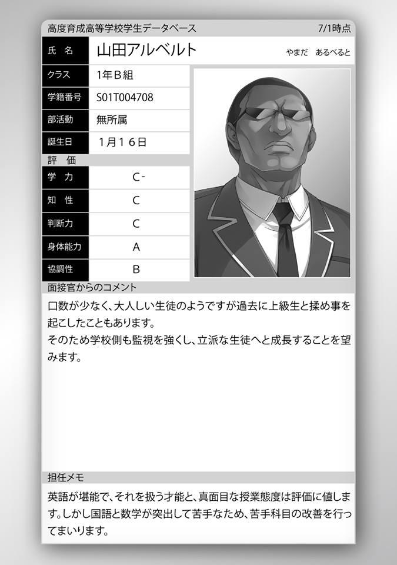
AVISO DE REUNIÓN Y DESPEDIDA
— Maldita sea, ¿quién diablos creen que son?
Sudou, entrando al aula mientras gruñía, pasó de largo por su asiento y se dirigió a Horikita. Podía decir que está furioso por esa expresión suya.
— Escucha, Suzune.
— ¿Qué pasa?
Horikita le siguió el juego, sin poder ignorarlo ahora que se acercó a ella.
— Son esos tipos de la Clase C o más bien, es Ryuuen. Me han estado siguiendo desde la mañana. Incluso bloquearon mi camino cuando estaba en el corredor. Realmente me estoy enfadando.
— No has usado ningún tipo de violencia física o verbal contra ellos, ¿verdad?
Cuando Horikita lo fulminó con la mirada, Sudou inmediatamente lo negó.
— Por supuesto que no. Ignore ese veneno y vine aquí.
— Ya veo. Parece que seguiste mis instrucciones al pie de la letra.
Lo más importante es que hasta ahora no ha causado ningún problema.
— Por cierto, ¿qué quieres decir con instrucciones?
Le pregunté a Sudou.
— Suzune me dijo que simplemente ignorara algo si sé que no podré manejarlo adecuadamente.
Ese es un buen consejo. Reprender a Sudou solo agregará más combustible al fuego. Es por eso que tener a Sudou conteniéndose incluso si termina estresándose es la mejor opción.
— Bueno, creo que tal vez choqué con sus hombros cuando me abría paso.
Los chicos de las otras clases deberían saber que no tuve alternativa, así que debería estar bien, ¿no?
— Así es, seguramente ni ellos usarán eso contra ti.
Después de todo, ya consiguieron que la escuela y el consejo estudiantil se involucraran una vez y causaron un alboroto. Sería una historia diferente si hubiera lanzado un golpe, pero solo abrirse camino debería estar bien.
— Entonces, ¿qué te dijeron?
— Me llamaron idiota y mono, cosas infantiles como esa. Estaban buscando pelea.
Bang. Se dio un puñetazo en la palma de la mano para desahogarse. Me pregunto si esto es un seguimiento de sus acciones en el club de tiro con arco de ayer.
— Akito también... Miyake también tenía a los chicos de la Clase C pegados a él durante las actividades de su club.
— ¿Miyake-kun también? Están siendo muy activos en estos días.
— ¿Cuál crees que es su objetivo? ¿Están tratando de causar otro incidente como el que usaron en mi contra?
— No lo sé. No puedo decir nada en este momento. Pero pensaré en alguna contramedida. Aunque se acerquen a ti de nuevo de esta manera, asegúrate de no ponerte violento físicamente.
— Lo entiendo. No romperé nuestra promesa. No haré nada, incluso si empiezan a lanzar puñetazos.
Las palabras de Sudou ahora tienen un peso considerable en comparación con la última vez que se peleó con la Clase C. Es precisamente porque ella entendió esto que Horikita honestamente las aceptó.
Después de concluir satisfactoriamente su informe, Sudou regresó a su asiento y casualmente entabló una conversación con Ike y los demás. Al ver eso, Horikita dijo.
— Me pregunto si Sudou-kun finalmente se convertirá en una persona madura y que controla sus emociones.
— Sí, su forma de hablar es aún algo áspera, pero debería estar dentro del rango aceptable.
— Parece que es necesario que él también dé el siguiente paso.
Después de decir eso, Horikita tomó una libreta en su mano y comenzó a escribir con un bolígrafo.
— ¿Qué quieres decir con el siguiente paso?
Traté de mirar pero Horikita inmediatamente cerró el cuaderno.
— Todavía es un tema muy lejano. En este momento, no deberíamos enfocarnos en Sudou-kun y sus problemas.
Silenciosamente agregó que no podemos permitirnos concentrarnos solo en él.
No sé lo que está pasando por su cabeza, pero no podría importarme menos.
Recientemente, Horikita ha estado actuando más y más después de pensar bien las cosas.
Es probable que gradualmente se haya vuelto capaz de comunicarse con Sudou, Hirata y los demás.
— Aun así, Ryuuen-kun está bastante activo. Acaba de terminar el Paper Shuffle y pensé que mantendría un perfil bajo por un poco más de tiempo.
Me pregunto si esto significa que está tramando algo de nuevo.
— ¿Pero no es extraño? No es que haya un examen especial en este momento ni nada por el estilo.
— Haciendo un recuento, los exámenes no son las únicas ocasiones en que está acostumbrado a atacarnos, como cuando atacó a Sudou-kun, y parece que también le ha hecho algo a Ichinose-san y a la Clase B sin relación con los exámenes. Parece que le gusta hacer cosas fuera de la norma y que no implican pelear por puntos.
“¿No lo sabes ya sin tener que preguntar todas y cada una de las veces?” Ella me mira como preguntándome eso. Por supuesto, me encogí de hombros haciéndome el tonto.
— Pero me pregunto qué está buscando esta vez.
— ¿Realmente no lo sabes o estás fingiendo?
— ¿Qué quieres decir? No entiendo.
— Está buscando a la mente maestra que controla a la Clase D desde las sombras. Y para hacer eso, ha comenzado a hacer movimientos sin preocuparse por las consecuencias.
— En otras palabras, ¿te está buscando?
Cuando dije eso, ella me dio una intensa mirada.
— Usarme como tu manto de invisibilidad ya no funcionará en Ryuuen-kun.
Horikita continuó en serio sin hacerme caso.
— ¿En qué te basas para decir eso?
— Si, como todos los demás, él todavía piensa que soy yo la que mueve las piezas, sería extraño si no se acercara a mí directamente. Pero esta vez, no me ha hecho nada.
Todo este tiempo, Ryuuen ha estado obsesionado con Horikita, pero parece que ya no es el caso.
— ¿No es eso una cuestión de perspectiva? ¿No significa eso que la estrategia que usaste durante el Paper Shuffle fue efectiva más allá de la imaginación? Podrías interpretar esto como que él está indeciso acerca de malograr sus ataques, ¿verdad? Puede estar tratando de eliminar primero los obstáculos hacia su objetivo.
— Eso me pregunto. Aunque no lo pienso así, debería decir que ha perdido interés en mí.
— ¿Esto significa que no eras tan infeliz con el interés de Ryuuen en ti?
— Eso no es lo que quiero decir. ¿Quieres que te patee?
— No quiero ser pateado.
Inmediatamente lo negué porque ella es del tipo que realmente te patea.
— ¿No es solo que el líder en las sombras de esta clase atrajo estúpidamente su atención?... siéntete libre de ignorarlo, pero ¿de verdad quieres que diga algo más aquí?
Incluso si es justo antes del comienzo de la clase cuando todos los estudiantes ya están sentados, incluida Kushida, y no hay nadie que escuche nuestra conversación, no es algo que deberíamos discutir aquí.
— Aun así, has llegado a entender bastante bien a Ryuuen. Ahh, no, esta vez no me estoy burlando de ti.
Ya que ella me miró de nuevo, me alteré y agregué eso.
— Su modus operandi es básicamente el mismo. Independientemente del éxito o el fracaso, usa métodos similares para combatir en repetidas ocasiones. Si me ataca una y otra vez, es natural que termine aprendiendo de eso incluso si no quiero hacerlo. Es por eso que ella... es por eso que predije que usaría a Kushida-san durante el Paper Shuffle. Por supuesto, ni siquiera necesito decir que sería ideal si eso no hubiera ocurrido...
Nadie quiere que un compañero de clase se vuelva traidor. Si Kushida no hubiera traicionado a la clase, entonces no habríamos tenido que luchar tanto en nuestros exámenes. Eso es lo que Horikita piensa.
Pero pensémoslo. Es precisamente porque hay una amenaza interna como Kushida entre nosotros que Ryuuen bajó la guardia. Si no tuviese un peón con el que pudiera actuar, probablemente habría pensado en una estrategia diferente.
Como resultado, para bien o para mal, Kushida ayudó a reducir el patrón de ataque del enemigo.
— No es el único error de cálculo, pero durante Paper Shuffle, tenía toda la intención de engañar a Ryuuen-kun.
— ¿No es eso lo que realmente sucedió?
— Sí. Pero quería que alguien de la Clase C pudiera ser expulsado al descuidar sus estudios. Eso pensé, pero supongo que fue ingenuo de mi parte.
Si puedes tener en tus manos todas las preguntas y respuestas, entonces no es necesario que estudies. Es por eso que no habría sido extraño que ocurrieran expulsiones dentro de la Clase C debido a que habían bajado la guardia. Eso es lo que ella quiso decir. Keisei y los demás también pensaron lo mismo. Como pensé, todos están en la misma página.
— Probablemente es porque la Clase C también tiene personas inteligentes.
Sería bueno asumir que jugaron un papel de apoyo a diferencia de Ryuuen.
— Supongo que sí. Si ponen esfuerzo sin que nadie se dé cuenta, eso es algo que digno elogio.
Después de todo, Ryuuen parece muy ansioso por llegar a la persona que acecha detrás de Horikita.
Si es por el bien de hacer eso, no retrocederá, incluso si eso significa atraer la atención de la escuela.
Sentí ese tipo de determinación en sus acciones.
— Supongo que sus persistentes ataques se intensificarán a partir de ahora.
— Esto no tiene nada que ver conmigo. Porque es tu función cargar con todo el peso.
— Lo sé. Ser arrastrada por la fuerza parece ser mi destino.
— Me sorprende que lo estés aceptando.
— Porque no hay más remedio que aceptarlo. No vas a retroceder ahora,
¿verdad?
El optimismo es algo bueno. En primer lugar, Horikita tiene potencial. Si solo pudiera lograr habilidades de comunicación a la par de Hirata, se convertirá en una existencia digna de su imagen actual.
— Entonces, ¿tienes una estrategia en mente?
— ¿Para qué?
— Te estoy preguntando si tienes o no una contramedida contra la búsqueda de Ryuuen-kun. Si no ejecutamos nuestra estrategia ahora, las cosas irán a un punto desde el cual no será posible regresar.
Entonces Horikita está preocupada de que mi verdadera identidad sea revelada.
Pero es una preocupación innecesaria.
— No tengo nada en mente.
— Ahí vas de nuevo... —Suspiró profundamente y se mostró abiertamente irritada al no decirle nada—. Entonces cambiaré un poco el tema.
¿Todavía participas en esas reuniones?
— ¿Esas? ¿Estás hablando de Keisei y los otros? ¿Hay algún problema con eso?
— No creo que sea un grupo muy útil. En primer lugar, fue formado porque Hasebe-san y Miyake-kun son malos y lo necesitaban, ¿verdad? Ahora que el examen ha terminado, ¿ese grupo se no vuelve innecesario?
— No estoy pensando en lo útil que es. Es muy cómodo y me gusta estar con ellos.
Horikita siempre ha tratado de aspirar a la Clase A y eso es todo lo que hay con ella. Como nunca tuve demasiado interés, realmente no tiene sentido mantenerme en contacto tanto con Horikita.
Si, por casualidad, Horikita renuncia al conflicto entre clases y después habla conmigo, entonces podría interactuar con ella de la misma manera en que interactúo con Keisei y los demás.
— ... Cooperarás conmigo, ¿no?
— Sí. Lo mejor que pueda.
Aunque ella no parece muy convencida.
PARTE 1
Las lecciones de la mañana han terminado y ahora es hora del almuerzo.
Mientras pensaba en invitar a Akito y Keisei a almorzar, mi vecina me miró.
— ¿Qué? No vas a continuar el tema de esta mañana, ¿verdad?
— No. Tengo que hacer una solicitud.
— No lo haré si es problemático.
— No voy a negar que es problemático, pero no llevará mucho tiempo.
Horikita dijo eso y luego sacó un libro del interior de su mochila.
— ¿No dijiste la semana pasada que querías leer esto?
Ella colocó el libro, que tenía el sello de la biblioteca, sobre el pupitre.
— “Adiós, muñeca”, ¿eh?
Una obra maestra de Raymond Chandler.
He estado interesado en él desde hace un tiempo y he ido a la biblioteca varias veces, pero por alguna razón, este libro parece ser muy popular, ya que siempre está prestado.
Casi me había rendido, sin ver otra opción que comprarlo.
— Estoy impresionado de que lo hayas conseguido prestado. Por casualidad,
¿me lo prestarás?
Me imagino que alguien más lo tomará prestado en el momento en que sea devuelto. Para asegurarme de tenerlo en mis manos, lo mejor es obtenerlo directamente de las manos de la última persona que lo pidió prestado aunque sea un poco furtivo.
— Si así lo quieres. Además, hoy es la fecha de entrega. Por eso sería genial si pudieras ir a la biblioteca, devolverlo y luego pedirlo prestado.
— ¿Me estás dejando esto porque devolverlo es una molestia?
— Aunque lo devuelva yo misma, vas a tener que ir a la biblioteca de todos modos, ¿no? Al contrario, creo que esta es la decisión correcta en términos de eficiencia.
Ella tiene un punto. Esto le quitaría a Horikita de la molestia de tener que devolverlo ella misma. Necesitas tu tarjeta de estudiante para pedir prestado un libro y me es imposible tomarlo prestado a nombre de otra persona. Por otro lado, no necesitas nada para devolver el libro.
— Por supuesto, si te niegas, tendré que ir a la biblioteca y devolverlo yo misma. Pero no sabré cuándo este libro tan popular y con tanta demanda caerá en tus manos otra vez. No me importa tener que perder el tiempo yendo a la biblioteca.
“Pero es ineficiente, ¿no?” Ese es el tipo de presión implacable que siento golpearme.
Me pregunto si esta es la amabilidad de Horikita hacia alguien como yo que quiere leer el libro.
— ... Está bien, felizmente lo aceptaré.
— Lo dejo en tus manos —Después de decir eso, Horikita me entregó el libro—. No me importa cuando vayas siempre que lo hagas hoy durante el almuerzo o después de la escuela. Pero asegúrate de hacerlo. Si recibo un aviso de retraso, serás responsable por ello.
— Ya lo sé.
Nunca antes he tomado prestado un libro de la biblioteca pero entiendo el proceso.
Los préstamos son gratuitos, pero se te quitarán puntos privados si se vence el plazo. Así es como funciona.
— Lo haré de inmediato. Ahora voy.
Esto también hará que Horikita esté tranquila y es mejor no prolongar este asunto problemático.
PARTE 2
La biblioteca al comienzo de la hora del almuerzo está sorprendentemente vacía.
Ya que la comida está prohibida dentro de la biblioteca, no podemos usarla como lugar para nuestras comidas. En este momento, solo unas pocas personas están presentes, así que parece que voy a poder devolver el libro sin problemas.
— Ya estoy aquí, así que también podría pedir prestado otro libro...
Ya sea que tome prestado un libro o dos libros, el problema de devolverlos será el mismo de todos modos. Antes de devolver el libro, supongo que buscaré un libro que me interese leer.
Mientras sostenía “Adiós, muñeca” con una mano, fui a la esquina de los libros de Misterio.
Como va a ser de esta manera, también podría pedir prestado uno o dos libros de temática de detectives.
Sería mejor si pudiera tomar prestado otro de Raymond Chandler. Al llegar a la esquina de los libros de Misterio, vi a una estudiante solitaria. Luchando para alcanzar con sus brazos un libro que está más allá de su alcance en la estantería. El libro está ubicado en esta extraña altura, donde en un momento parece que podría alcanzarlo y al siguiente que no.
Ya que parece que puede alcanzarlo, se nota reacia a usar el taburete que hay ahí.
Supongo que es así ya seas un chico o una chica.
El libro que está tratando de agarrar es “Cumbres Borrascosas” de Emily Bronte.
Es una novela escrita por las hermanas Bronte y es bien conocida en el mundo literario. No, mientras que la sinopsis puede hacer que parezca un misterio, el género real debería ser romántico, ¿no? Luego extendí la mano para agarrar el libro “Cumbres Borrascosas”, que la chica también estaba tratando de alcanzar.
— Pude haber hecho algo innecesario pero... —En ese momento, me di cuenta de que reconocía a la estudiante a mi lado—. Eres de la Clase C...
Shiina Hiyori.
Ella es una estudiante que apareció junto con Ryuuen ante nosotros hace un tiempo. Después de mirar tranquilamente mi rostro, parece que ella también me reconoció de manera similar.
— Si bien recuerdo eres... Ayanokouji-kun, ¿verdad? —ella preguntó.
Parece que recuerda mi nombre. Teniendo en cuenta la extraña forma de contacto que hemos creado entre nosotros, supongo que es inevitable.
— Sí. Por ahora, ten... —le di el libro.
— Muchas gracias.
— ¿Te gusta? Bronte.
— Personalmente, no me gusta ni me desagrada nada, pero el libro estaba en el lugar equivocado, en cuanto al género, así que solo pensé devolverlo a su posición correcta —respondió.
— Ya veo.
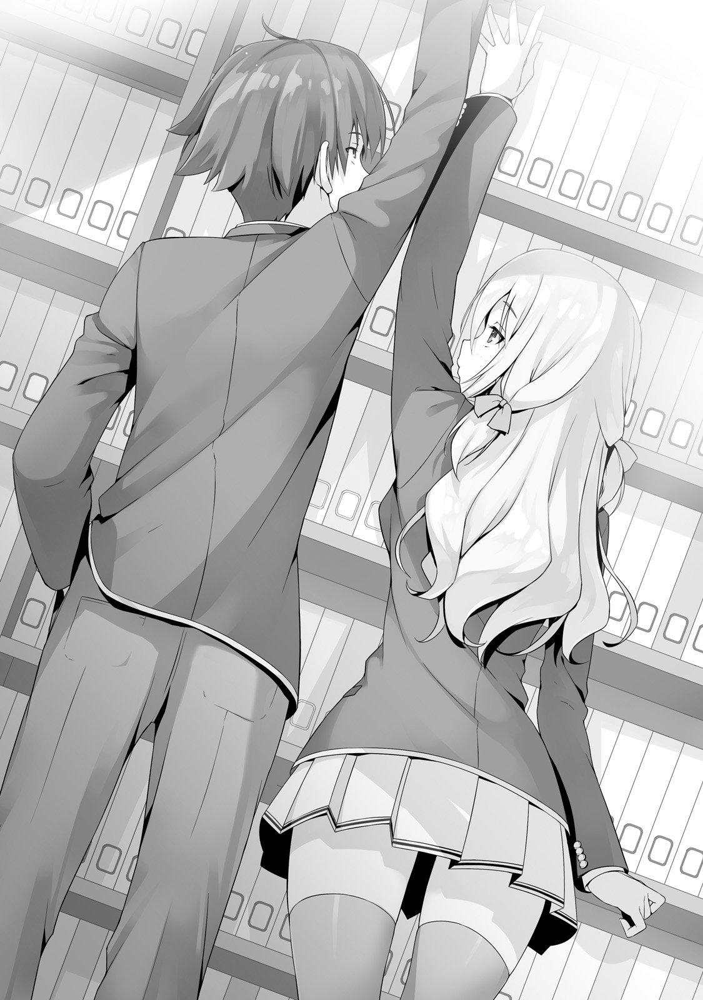
Parece que ella estaba tratando de hacer lo mismo que yo.
— Por cierto, el libro que tienes contigo... es “Adiós, muñeca” ¿verdad? Esa es una obra maestra —me dijo.
Y con eso, pareció que algo se iluminó en los ojos de Shiina.
— Me las arreglé para pedírselo prestado a un amigo hoy.
— Definitivamente estás de suerte, parece que Raymond Chandler es muy popular entre los estudiantes de segundo año y ha habido una batalla por este libro por ya algún tiempo. He estado queriendo leerlo, pero no estaba.
No pude encontrarlo hoy tampoco.
— Parece que he hecho algo malo. Monopolizarlo —le respondí.
— No me importa. Lo he leído antes. Después de todo, mientras buscaba ese libro, tuve la suerte de toparme con otro. Parece que la biblioteca de esta escuela tiene una gran colección de libros. Me graduaré antes de que pueda leerlos todos —dijo mientras sostenía el libro de Bronte en sus manos y sonreía ligeramente.
— Ya veo, podría ser así.
De hecho, hay una gran cantidad de libros almacenados aquí. Incluso si no lees un libro, puedes matar el tiempo fácilmente aquí.
— Perdón por molestarte.
Este es la valiosa hora del almuerzo. Ella vino aquí en lugar de almorzar, seguramente no está dispuesta a permitir que un estudiante de otra clase la moleste durante este momento. Y entonces decido irme.
— Umm... por casualidad, ¿estás buscando otro libro para pedir prestado? Si solo se trata de buscar un libro, me gustaría echarte una mano. Ya que estás aquí, ¿no prefieres pedir prestado otro libro? —Shiina me pregunta mientras me impide irme.
— Pensé que lo dejaría para otro momento- ¿qué estás haciendo? —le pregunté.
Shiina ya había quitado sus ojos de mí y estaba mirando en el rincón de los libros de misterio de la biblioteca.
— ¿Ya has leído la serie de Dorothy L. Sayers? —me pregunta.
— No. He leído a Christie, pero a Dorothy todavía no.
— Si es así, ¿qué hay de “Whose Body”? Lo recomiendo. También la serie Lord Peter, si lees uno de ellos seguramente también querrás completar la serie —diciendo eso, sacó los libros de los estantes y me los enseñó.
— Umm.
Este repentino desarrollo me dejó desconcertado. No estaba seguro de cómo responderle.
— Lo siento por hablar así, ¿te molesté? —me pregunta.
No estaba particularmente interesado, pero tampoco iba a rechazarla. Y, además, tomar prestado un libro es gratis, así que supongo que lo aceptaré.
— Lo siento. Estaba un poco sorprendido en este momento. Pero como ya estoy aquí, supongo que los tomaré prestados —le dije.
— Si gustas… —No sé a qué se refería con esto, pero Shiina me miró con expresión feliz y preguntó—. No creo que sea hora del almuerzo todavía.
Si estás bien conmigo... ¿te gustaría que comamos juntos? —me pregunta.
— ¿Eh?
Desde recomendar libros hasta un desarrollo que no esperaba. En lugar de un encuentro casual, debería asumir que recibió instrucciones de Ryuuen para hacer esto. Ya sea que me niegue o acepte su invitación, la impresión que Shiina ganaría de mí es la misma. Cualquiera que sea el camino que elija, inevitablemente seré marcado como gris por ella.
— No hay nadie en la clase C a quien le guste leer novelas, así que no tengo a nadie con quien hablar.
Quizás ella simplemente no podía soportar el silencio, pero Shiina me dijo eso.
— ¿Esto no será un problema? En este momento, la Clase C está bastante alterada buscando a alguien de la Clase D ¿verdad? Creo que soy uno de los sospechosos.
Shiina probablemente escuchó que yo soy el que está detrás de Karuizawa y Horikita y probablemente esté tratando de confirmarlo. Si no, las posibilidades de
encontrarme aquí son infinitamente bajas. Es muy probable que haya sido enviada para contactarme aquí. En cierto sentido, ella es una existencia aún más espeluznante que Ryuuen. Porque para mí, Shiina Hiyori es una cifra completamente desconocida. Ni siquiera me di cuenta de ella en los exámenes anteriores.
Estoy seguro de que podría obtener información sobre ella mediante el uso de Karuizawa, pero ahora que está siendo atacada por Ryuuen esa opción está fuera de discusión. Como solo tengo una pequeña cantidad de personas que puedo usar, no tengo los medios para investigar a Shiina en este momento.
Keisei y Haruka, por supuesto, no son útiles para reunir información sobre otras clases. Podría usar a Hirata, pero es más o menos neutral. Y como aún no sé cómo se siente Hirata hacia mí, o cómo me ve, no quiero confiar en él para esto.
Al menos no en este momento.
— Por favor, no te preocupes. Solo estaba haciendo un movimiento formal para Ryuuen-kun. Desde el principio, nunca me interesaron las cosas como el conflicto. ¿O es un problema para ti hablar conmigo?
— No. Si no hay ningún problema de tu parte, tampoco tengo ninguno.
— Es un alivio, odiaría que las clases se peleen entre sí por cosas tan triviales. Creo que hacer amigos es lo más importante.
No se puede evitar. Desde el principio, el sistema escolar está configurado así. Y
además, la mayoría de los estudiantes todavía interactúan entre ellos como de costumbre. Como Hirata y Kushida parecen ser especialmente populares, simplemente romperán sus paredes personales para hacer “amigos”.
— ¿Nos vamos entonces? Parece que el tiempo se nos está yendo.
Miré el reloj de la biblioteca.
— Por favor, primero déjame pedir prestado este libro.
¿Quién hubiera esperado que tuviera este tipo de encuentro en la biblioteca?
PARTE 3
Los dos nos dirigimos a la cafetería. Como ya han pasado 20 minutos desde el comienzo de la hora del almuerzo, ya está lleno de estudiantes. Pero muchos parecen haber terminado ya sus comidas, Así que no había muchos haciendo cola en la máquina expendedora.
Elegí el especial del día, pero este es el problema. Shiina parece ser incapaz de elegir, sus dedos ondeando frente a los botones.
— Por favor, espera......
Esperé pacientemente durante unos dos minutos después de que me lo dijera.
Parece que finalmente tomó una decisión y eligió la misma comida que yo.
— Me puse un poco indecisa allí.
— Está bien, no es que haya alguien haciendo fila detrás de nosotros.
Inmediatamente después, se colocaron dos comidas en el mostrador. Shiina parece tener problemas para sostener la bandeja con la comida, ya que trajo su mochila a la cafetería.
— ¿No te molesta la mochila? Voy a llevarla.
— No, no puedo pedirte que hagas algo tan problemático...
— Está bien, tropezar mientras sostienes esa bandeja sería mucho más problemático.
— Lo siento...
Mientras me entrega la mochila en tono de disculpa, la tomé con la mano y la encontré bastante pesada. Me pregunto si tiene libros de texto.
— Es pesada, ¿no? Gracias.
Evitando la multitud tanto como fue posible, encontramos asientos vacíos y nos sentamos uno frente al otro. Y luego, tardíamente comenzamos a comer nuestro almuerzo lentamente.
— ¿Usualmente comes aquí en la cafetería?
— No. Normalmente compro mi almuerzo en la tienda por la mañana y como en el aula. ¿Vienes aquí a menudo, Ayanokouji-kun?
— La comida de la tienda de conveniencia no es muy deliciosa. Supongo que nada supera a la comida recién salida del horno.
Le ahorra la molestia y además vale la pena el esfuerzo. Shiina cogió la comida con sus palillos y se la llevó a la boca de una manera muy digna.
Observé sus movimientos con admiración. La forma en que maneja sus palillos es extremadamente elegante.
— Hmm, ya veo... la comida de la cafetería de la escuela es verdaderamente deliciosa. Me aseguraré de tenerlo en cuenta.
— ¿Podría ser que esta es tu primera vez comiendo aquí?
— ¿Supongo que me descubrieron?
— Lo he estado pensando desde que estábamos en la máquina expendedora, quizás no hayas...
Ya estamos al final de nuestro segundo trimestre y los estudiantes que no han utilizado la cafetería son raros.
— He tenido curiosidad por eso desde hace un tiempo, pero una vez que pierdes esa oportunidad inicial, terminas postergándolo, ¿no? Pensé que esta era una buena oportunidad, así que reuní mi coraje para venir.
De alguna manera, entiendo sus sentimientos. Necesitas un poco de coraje para aparecer en un lugar al que normalmente no vas. No sabes cómo se supone que debes actuar allí, así que terminas dudando. Tus sentimientos de no querer mostrarles a las personas que van allí regularmente qué tan fuera de lugar estás terminarían por detenerte. También tenía mis reservas sobre la compra de café en la tienda de conveniencia al principio.
Porque no estaba seguro de poder hacer café sin problemas con una taza de café con nada más que hielo en ella. Pero en la mayoría de los casos, encontrarás que no es nada difícil una vez que lo pruebas.
— Entonces eso significa que esto podría ser el detonante para que vengas de aquí en adelante.
— Sí.
Después, hablamos un poco mientras terminamos nuestro almuerzo. Como somos los recién llegados, la mayoría de los estudiantes que almuerzan aquí ya han terminado y se fueron. Por supuesto, hay estudiantes por allí que se han quedado para charlar o tomarse su tiempo para comer.
— Me gustaría continuar donde lo dejamos en la biblioteca. Si no es una molestia, ¿podrías leer esto?
Diciendo eso, Shiina coloca algo sobre la mesa. Don. Un sonido pesado resonó.
el cual, a primera vista, no habrías esperado.
— ¿Has leído alguno de estos libros antes, Ayanokouji-kun?
Ella acaba de sacar cuatro libros de su mochila. No es de extrañar que sea tan pesada.
William Irish y Ellery Queen, así como Lawrence Block e Isaac Asimov.
— Tienes buen gusto...
Todas son novelas de misterio, obras maestras de la antigüedad.
— ¿Puedes decirlo?
— También soy un fanático del género de misterio.
— Ya veo.
Shiina felizmente se ríe mientras junta sus manos. Y fue entonces cuando me di cuenta de que algo estaba fuera de lugar con los libros.
— Estos no son de la biblioteca, ¿verdad?
— Son todos míos. Los llevo en caso de que algún día conozca a alguien que comparta mi interés en ellos para poder prestárselos. Al principio solo era un libro, pero antes de encontrar a alguien así, solo siguieron acumulándose.
— ¿Es así?
Esta chica tiene algunos tornillos sueltos.
— Por favor, no te contengas, toma el que te gustes.
— Entonces... supongo elegiré a Ellery Queen ya que aún no lo he leído.
— Por favor, hazlo.
Si esta es ella haciendo una actuación, entonces es una muy buena, pero realmente no siento eso. Solo puedo imaginar que está haciendo esto porque realmente ama los libros.
Pero he hecho una extraña conexión en un extraño lugar. Por supuesto, debería estar alerta por si esto es una trampa de la Clase C, pero creo que es seguro decir que este asunto es una completa coincidencia.
Prometí devolvérselo en una fecha posterior justo cuando sonó la campana que señalaba el final de nuestro almuerzo.
PARTE 4
Después de la escuela, me contactaron como siempre a través de nuestro chat grupal.
[Ven al centro comercial Keyaki si puedes. El lugar habitual.]
Un mensaje casual de Haruka. En el momento en que traté de responder con mi teléfono, una espada verbal de la vecina vino volando hacia mí.
— Esa cara sonriente tuya me está dando escalofríos.
— ¿De quién?
— La tuya. Tienes algo de autoconciencia, ¿verdad? ¿Incluso sin tener que señalarlo?
— Al menos puedo decir con confianza que no estaba sonriendo.
Porque no recuerdo las comisuras de mi boca curvadas hacia arriba.
— Es solo que eres aún más serio que yo o ¿quizás te estás haciendo el tonto...? Estoy hablando de tu ser interior.
Aparentemente Horikita puede decir que estoy muy feliz de tener una amiga que me envíe un mensaje de chat.
— Estás encajando, ¿no?
Y con un comentario banal como ese, Horikita tomó su mochila en la mano y se fue sola.
— Estaba sonriendo, ¿eh?
Por supuesto, admitiré que no está mal que un amigo te contacte así, pero si la conclusión que sacas de eso es que estaba “sonriendo”, entonces no es algo que Horikita debería estar celebrando.
¿Realmente quiere tanto permanecer solitaria...? Rápidamente arreglé mis cosas y salí del aula. Si fuésemos un grupo normal, podríamos habernos dirigido a nuestro destino mientras charlábamos durante todo el camino, pero para un grupo como el nuestro, que carecía de una fuerza impulsora, eso no es posible.
Solo nos reunimos cuando hay personas dispuestas a reunirse. Cuando llegué a nuestro lugar habitual en el Centro Comercial Keyaki, todos ya se habían reunido.
— Akito, ¿qué hay de las actividades de tu club?
— ... Me las estoy saltando el día de hoy.
— Parece que los chicos de la Clase C se presentaron nuevamente en el club de tiro con arco. Por lo que puedo decir, no han llegado a las manos con nadie...
Aparentemente hubo una pelea allí.
— Les dije a mis superiores que no me sentía del todo bien y que me tomaría un descanso. Nuestro club es bastante indulgente, ¿sabes?
Aunque se tome un descanso, esta declaración es demasiado honesta. Bueno, supongo que si usara la excusa de que no se siente bien, entonces no podría aparecer aquí.
— De verdad tenemos que ponerle fin a las acciones imprudentes de la Clase C. A este ritmo, incluso daña las actividades de nuestro club.
— ¿Qué hay de discutir esto con nuestra maestra?
Ofreció Haruka. Pero Akito negó con la cabeza.
— No hay nada que puedas hacer si lo único que vas a decir es que estás siendo observado por la Clase C. Sería una historia diferente si se inmiscuyeran en un área privada, pero son libres de visitar el club de tiro con arco.
Incluso si eso es más que nada una mentira, son libres de ir a echar un vistazo tantas veces como lo deseen.
— Supongo que sí. La Clase C realmente nos está causando preocupación,
¿no? Ahh, hablando de la Clase C, lo vi, lo vi. Qué detestable, Jefe.
Diciendo palabras anacrónicas como esas, Haruka me dio un codazo en las costillas.
— ¿Lo viste? ¿Qué?
— ¿Qué quieres decir con “qué”? Estoy hablando de Kiyopon comiendo junto a Shiina-san de la Clase C.
...Ya veo. Supongo que nos vio en la cafetería. A pesar de que es un área amplia, no quedaban muchas personas para entonces, así que no es realmente extraño.
— Te haré saber que Airi ha estado preocupada por eso hasta el punto en que ha estado salpicando su arroz por todas partes.
— ¡Wah! ¡Prometiste que no hablarías de eso, Haruka-chan!
— ¿De verdad? Entonces pretendamos que eso no sucedió.
Por supuesto, el cerebro no está configurado para olvidar las cosas tan fácilmente. Pero con esto, he logrado entender. Que la razón por la que nos hizo reunirnos aquí hoy es, sin duda, porque quería discutir esto.
— ¿Justo antes de Navidad? ¿Podría ser un romance de último minuto?
— En serio, Kiyotaka, aunque no te definía como del tipo mundano.
Como si estuviera ligeramente enojado por eso, Keisei lo dijo.
— Ingenuo. Eres demasiado ingenuo, Yukimu~. Todos los caminos llevan al romance para un chico y una chica. Además, el “tipo mundano” es una
cosa tan poco convincente. Los adolescentes en estos días van a un ritmo mucho más rápido del que te imaginas.
— ¿Qué quiere decir “más rápido”? Todavía estamos en nuestro primer año de preparatoria, ¿sabes?
— Mira, experimentar el romance por primera vez en tu primer año de preparatoria ya se considera demasiado tardío. Cuando estaba en la primaria, algunos de mis compañeros de clase ya estaban saliendo con estudiantes de secundaria y preparatoria.
Keisei se quedó boquiabierto ante la impactante declaración de Haruka y quedó estupefacto.
— Yo-yo nunca había escuchado eso antes.
— Eso solo significa que nunca prestaste atención a tus alrededores, Yukimu~. La mayoría de las chicas no están interesadas en un compañero de clases infantil.
No creo que puedas aplicar esta lógica a los estudiantes de primaria, pero eso podría ser tanto para Keisei como para el yo carente de experiencia en asuntos mundanos. Pero debo hacer una corrección donde se necesita hacer.
— Perdón por arruinar tu fiesta, pero no sucede eso conmigo.
— ¿De verdad? ¿Seguro que no estás tratando de evitar la vergüenza?
— ¿Ves? Te lo dije pero no me creías, Haruka-chan.
— Tenía algunos asuntos en la biblioteca durante el almuerzo. Me encontré por casualidad con Shiina allí. Creo que es probablemente lo mismo que Akito siendo vigilado por Ishizaki y los demás en su club. Me preguntó varias cosas también. No quería rechazarla y terminar atrayendo más atención no deseada...
Al aceptar el flujo de la conversación de esta manera, me hace parecer más creíble. Además, no es realmente una mentira.
Aunque nuestro encuentro fue una coincidencia, es muy posible que estuviera intentando sondearme.
— Así que finalmente has sido marcado también, Ayanokouji. ¿Ese tipo Ryuuen realmente odia tanto la idea de ser superado por la Clase D?
Akito dijo con resentimiento, consciente de que no era el único afectado por esto.
Pero Keisei comenzó a considerar este problema de que nos siguieran desde un ángulo diferente.
— No, ese puede no ser el caso. Has escuchado los recientes rumores de que hay una mente maestra detrás de la Clase D, ¿no? No le di mucha importancia hasta ahora, pero esa puede ser la razón por la que Ryuuen nos está siguiendo. Ayanokouji, ¿qué te preguntó exactamente Shiina?
— Tienes toda la razón, Keisei. Probablemente pensó que sería un blanco fácil para conversar ya que estaba solo. Habló sobre una variedad de temas diferentes, pero me cuestionó un poco sobre la mente maestra y eso.
— Ya-ya veo, así que es eso. Entonces no fue una cita ni nada.
Airi se palmea el pecho con alivio después de enterarse de que no tiene nada que ver con eso.
— Pero no tenía ni idea, así que no pude responder, no importa cuántas veces me lo pidiera. Para ser sincero, fue realmente difícil.
— Aun así, parecías estar divirtiéndote.
— No puedo simplemente actuar abiertamente disgustado, ¿verdad? Solo para que conste, ella todavía es una colega.
Haruka todavía parece sospechosa de mí, pero Keisei inmediatamente cambió el tema.
— Dejando de lado el romance del que habla Haruka, las cosas que la Clase C ha estado diciendo son preocupantes. Me siento mal por escucharlas a escondidas, pero parece que Sudou también quedó atrapado y le pidió consejo a Horikita.
Parece que escuchó la conversación con Sudou esta mañana.
— ¿Qué hay de ti? ¿Estás bien, Keisei?
Keisei parecía pensativo en respuesta a la preocupación de Akito.
— Hasta ahora, nada ha sucedido. Directamente, eso es. Pero mentiría si dijera que no hay nada por lo que esté preocupado.
Como si recordara algo, Keisei nos contó sobre lo que tenía en mente.
— En estos días, he estado cruzándome con estudiantes de la Clase C más de lo habitual. No le hice caso, pero todos son lacayos de Ryuuen. Puede ser que también me ataquen.
La probabilidad de que sea así es muy alta.
— Ya veo... pero ¿no me han hecho nada a mí?
Levantó la mano con reserva, como si no recordara nada.
— A mí tampoco.
Haruka también levantó la mano como lo hizo Airi. Uno normalmente no pensaría que lo están siguiendo. Sobre todo porque ninguno de ellos sobresale mucho.
— Tal vez no nos hemos dado cuenta como Keisei y alguien podría estar siguiéndonos.
— Ehh~ Eso es lo que llamarías un acosador, ¿no? Espeluznante.
Naturalmente, tener un chico siguiendo a una chica así llevaría a varios problemas. En este caso, Ryuuen puede estar haciendo uso de chicas si quiere perfeccionar su estrategia.
— Ser seguido, ¿eh? Ese puede ser el caso...
Al oír eso, Akito se cubrió la boca con la mano y dijo como si hubiera recordado algo.
— El momento en que termino con las actividades de mi club y me reúno con ustedes es a menudo tarde, ¿verdad?
— Sí. ¿Por lo general después de las 6 o 7?
— He estado sintiendo que había más estudiantes de Clase C de lo normal.
El otro día cuando nos encontramos en el Centro Comercial Keyaki, Komiya estaba allí. Él también está aquí.
Akito es el más agudo de nuestro grupo, tiene excelentes habilidades de observación.
Haruka trató de mirar alrededor, pero Akito la detuvo.
— Basta. No sabemos lo que buscan, es mejor no reaccionar.
Yo la habría detenido si Akito no lo hubiera hecho antes. Es mejor si evitamos agregar combustible a las llamas tanto como podamos.
— Repugnante.
Haruka dijo maliciosamente mientras miraba hacia la dirección de Komiya sin siquiera tratar de ocultarlo.
— Entonces, ¿es realmente cierto? ¿Que la Clase D tiene una mente maestra oculta?
Tal vez Haruka no lo está tomando en serio, parece que todavía tiene sus dudas.
— No tiene sentido pensar en eso, Haruka. Ryuuen no tiene reparos en mentir. No se sabe si tenemos a alguien así o no.
Akito dijo mientras negaba la premisa. Sin embargo, parece que Keisei está pensando en ello desde un ángulo diferente.
— Estoy seguro de que Ryuuen lo pensó. Nos está siguiendo exactamente porque cree que hay alguien así. Pero si es así, ¿quién podría ser?
— ¿Hmm? ¿Crees que hay alguien así?
— De lo contrario, ninguna de sus acciones tendría sentido.
Akito no parecía demasiado convencido.
— Eso es suponiendo que haya algún significado para las cosas que Ryuuen piensa.
Tal vez debido a sus embrollos hasta ahora, Akito parece dudar de eso.
— ¿Qué piensas, Kiyopon?
La pregunta que esperaba venir volando hacia mí, vino volando hacia mí.
— Independientemente de si existe o no una persona así, esa es la razón por la que nos están siguiendo.
Después de escuchar todas nuestras opiniones, Haruka se cruzó de brazos y habló.
— Así que estamos hablando de alguien que no es Horikita-san y cuyas acciones nos han ayudado en los exámenes hasta ahora, ¿verdad?
Alguien como Yukimu ¿quizás? Él es inteligente y, de hecho, él siempre encabeza nuestras pruebas.
— No hice tal cosa. Solo fui arrastrado durante el examen de la isla y el examen del zodíaco.
Keisei suspira como si el tema fuera algo patético.
— Entonces ¿tal vez Kouenji-kun? Ya sabes cómo es su personalidad, pero él es de primera clase cuando se trata de cerebro y músculos.
— De ninguna manera, Haruka. Su personalidad es exactamente como lo que dijiste. ¿De verdad crees que es el tipo de persona que haría un movimiento por la clase?
Su falta de trabajo en equipo está más allá del de Horikita, al punto que ya casi está fuera de las gráficas.
— ¿Tal vez sea todo falso?
— ¿Estás diciendo que su personalidad absurda es solo una fachada?
— Tal vez su verdadera personalidad es de un intrigante calmado y calculador... ¿no?
Todos sacudieron sus cabezas a la vez.
— De ninguna manera. Él simplemente es caprichoso.
Es precisamente porque lo conocen desde hace mucho tiempo que pueden decir con confianza que ese es el tipo de persona que es Kouenji.
— Incluso dejando a un lado el tema de la personalidad, que Kouenji sea el cerebro es muy poco probable.
Keisei agregó eso como si tuviera pruebas de eso.
— Se retiró el primer día del examen de la isla. En otras palabras, no habría podido evaluar la situación ni un poco. Si hay un cerebro además de Horikita durante el examen de la isla, eso no cuadraría con él.
— Ahh- Ya veo. Eres bastante persuasivo, Yukimu~.
— Pero esto es pura conjetura. Y basado en la premisa de que hay una mente maestra como Ryuuen supone. Además, es solo si la mente maestra hizo un movimiento en cada examen hasta el momento. Incluso si existe, es posible que no se haya involucrado durante el examen de la isla.
Todo es conjeturas, por supuesto.
— Ya veo. Eso suena bien.
— Pero creo que hay una mente maestra en nuestra clase.
— ¿Por qué piensas eso, Keisei?
Keisei continúa hablando en respuesta al dubitativo Akito.
— Solo una corazonada. Si tuviera que decirlo, es porque la Clase D ha progresado mucho hasta ahora, supongo.
— ¿Pero cómo podría Ryuuen-kun decir que la mente maestra no es Horikita-san?
Como nadie sabe el motivo, la conversación se estancó por un momento.
— ¿Tal vez es Hirata-kun? Si recuerdo, recibió algunos consejos de Horikita-san durante el examen de la isla.
— ¿Quieres decir que quizás es realmente Hirata emitiendo órdenes entre bastidores?
— Realmente no creo que sea ese tipo de persona, pero tampoco puedo descartarlo.
Al final, fue Hirata quien se convirtió en el principal sospechoso.
— Pero estoy seguro de que Hirata también ha sido marcado por Ryuuen.
— Eso suena difícil... ¿tal vez unas 10 personas más o menos han sido marcadas?
En términos generales, la vigilancia en manos de tanta gente lo dejaría sin espacio para descansar. Al igual que Ishizaki es quien vigila a Akito, es probable
que Hirata también esté siendo vigilado por otra persona. Pero la política de Hirata es la de no intervención.
Me imagino que sería considerado aún con los enemigos que necesitan ser derrotados. Y no he tenido mucho contacto con Hirata en estos días. Es un hecho que la libertad de movimiento es limitada mientras Ryuuen está en medio de su investigación.
No tiene sentido darles lo que quieren.
— U-Um, Kiyotaka-kun.
Después de escuchar a todos, Airi comenzó a hablar de manera reservada.
— ¿Hmm?
— Por favor, no te enojes, pero... ¿podría ser que la mente maestra es en realidad Kiyotaka-kun?
Ante esas palabras, los tres restantes se voltearon simultáneamente a mirarme.
— ¿Por qué piensas eso?
— Q-Quiero decir, umm... Kiyotaka-kun siempre es calmado e inteligente... y también confiable... también, pienso que le has dado muchos consejos a Horikita-san, así que...
— ¿Las calificaciones de las pruebas de Kiyopon fueron buenas?
— Si bien recuerdo, no fueron ni buenas ni malas.
Keisei levanta sus lentes.
Supongo que es por su naturaleza, esa observación de Airi probablemente no tiene ninguna mala intención ya que no sabe acerca de los asuntos ocultos de la clase.
— L-Lo siento. Solo, de alguna manera, pensé que... que tal vez por el consejo que diste sin darte cuenta, Ryuuen-kun puede estar atacándote y me sentí triste por eso...
— Desafortunadamente, yo soy el que siempre recibe consejos de Horikita.
— Bueno, quiero decir, Kiyopon tiene un lado misterioso en él. Agregando el hecho de que también está cerca de Horikita-san, no está fuera de lugar que parezca sospechoso.
— Ese... podría ser el caso. Quizás también sea por eso que Shiina lo enfrentó directamente.
Akito, que ha negado la existencia de una mente maestra hasta ahora, llegó a esa conclusión.
— Ciertamente hay razones para sospechar de Ayanokouji. Incluso si no hay una mente maestra, solo por estar cerca de Horikita, puede generar dudas de que realmente exista, ¿no?
— Si es así, es desastroso para ti, Kiyopon.
— ... Puedes estar completamente segura.
— Un marcaje completo de Ryuuen basado en un malentendido, ¿eh? Es molesto solo pensar en ello. Si hay algo que te preocupe, no dudes en consultarnos, ¿de acuerdo?
Akito dijo eso mientras me ponía una mano en el hombro.
— Sí. Haré eso.
Pero no hay forma de que esta vigilancia continúe para siempre. Cuando haya una buena oportunidad para hacerlo, Ryuuen definitivamente atacará.
PARTE 5
Al día siguiente, después de la escuela, suspiré discretamente mientras relajaba mis rígidos hombros. La razón por la que tengo los hombros rígidos es por las acciones de cierto compañero de clase las cuales no entiendo del todo.
Una visitante inesperada se acercó a mí sin saber nada de mis preocupaciones.
Su falda se balanceaba ligeramente con la brisa, se detuvo frente a mí.
— Hey, Ayanokouji-kun, ¿estás libre hoy? —La chica que me habla es Satou de la Clase D—. Si estás de acuerdo con eso, ¿por qué no tomamos un té juntos mientras regresamos?
Dijo eso mientras le daba vueltas al cabello como si fuera pasta con un dedo de su mano izquierda.
Cómo debería decirlo... una estudiante bastante audaz y agresiva es cómo tendría que describirla. Esta estudiante, Satou, está actuando casi como si se me hubiera confesado antes. En otras palabras, como una invitación a una cita.
La residente a mi lado, Horikita, no hizo caso y, después de guardar sus pertenencias, abandonó el salón de clases. Pero de alguna manera puedo sentir a los miembros del Grupo Ayanokouji observando la situación.
¿Por qué una chica popular como Satou está hablando con Ayanokouji? Es probablemente lo que están pensando. Haruka, en particular, está interesada en las circunstancias de las otras chicas.
— Bueno---
No tengo ningún plan en mente para hoy. Nuestras reuniones grupales tampoco son obligatorias, así que eso también es bueno. Las miradas de los miembros del grupo son preocupantes, pero eso es trivial.
— ¿Es mal momento?
Como no respondí afirmativamente de inmediato, Satou me preguntó ansiosamente.
— Lo siento, Satou. Hoy no puedo.
Dudé un poco, pero al final, la rechacé. La razón de esto es porque mis hombros se sienten rígidos.
Desde la mañana hasta el final de la escuela, no me he sentido bien por la mirada que recibía de vez en cuando. Incluso ahora, mientras hablo con Satou, esa mirada permanece fija en mí.
Chabashira-sensei se quedó en el aula una vez terminada la clase. Finge completar el papeleo, pero es obvio que me ha estado mirando de vez en cuando.
Como si quisiera acercarse a mí.
— Y-Ya veo. Hasta luego, Ayanokouji-kun.
Me siento mal por la decepción de Satou, pero solo es mala suerte. Como si fuera a ver a Satou marcharse, salí al corredor para irme. Y con esto, el problema se resolverá... o más bien, un peligro inminente se acercó de inmediato.
Casi al mismo tiempo, Chabashira-sensei salió del salón de clases y se me acercó. Como sospechaba, ella debe tener algunos asuntos conmigo. Parece que tomé la decisión correcta rechazando a Satou.
Evité el pasillo concurrido y de manera indirecta me dirigí hacia una escalera que conduce a la entrada.
— ... Ayanokouji.
Como la multitud se ha reducido, Chabashira cerró la distancia y me llamó.
— ¿Tiene algún asunto conmigo?
— Sí. Sígueme. Hay algo que necesito decirte.
— Es una tarea difícil. Tengo una reunión con Horikita ahora.
Inventé una excusa para salir de esta situación.
— No quiero actuar descuidadamente como profesor, pero las circunstancias son las circunstancias.
Chabashira-sensei, que a menudo no muestra emociones, ahora tiene una expresión inusualmente vulnerable en su rostro.
— Tengo un mal presentimiento sobre esto.
— Desafortunadamente para ti, no puedes negarte. Es un asunto extremadamente urgente.
Realmente no quiero seguirla, pero tampoco puedo permitirme desobedecer a un profesor. La poca resistencia que puse resultó ser inútil, así que terminé siguiendo a Chabashira-sensei.
Dejamos el área estudiantil y finalmente llegamos a este lugar.
— ¿La oficina de recepción? ¿De qué necesita hablar que me trajo hasta aquí?
Todavía es demasiado pronto para una consulta para la carrera, ¿verdad?
— Lo entenderás pronto.
Traté de hacer una broma, pero parece que no va a responder la pregunta de un alumno. Pero en lugar de lo que está más allá de la puerta, siento más curiosidad por Chabashira-sensei.
Aparte de la calma, parece casi agitada. Incluso si la persona detrás de esa puerta es la persona que creo que es, su descarada actuación fuera de lo normal todavía es extraña.
Sería una historia diferente si fuera una maestra que suele ser así, pero Chabashira-sensei no pertenece a esa categoría. Y sin siquiera darme cuenta de las dudas que estoy albergando, Chabashira-sensei golpeó la puerta de la habitación.
— Director, traje a Ayanokouji Kiyotaka-kun.
Director, ¿eh? Debería ser alguien con el que un estudiante como yo no tenga motivos para interactuar desde la inscripción hasta la graduación.
— Por favor, entren.
Oí una voz amable, pero digna acorde con su edad. Y Chabashira-sensei abrió la puerta de la oficina.
Un hombre aproximadamente de 60 años estaba sentado en un sofá. Lo he visto varias veces en la ceremonia de entrada y en la ceremonia de fin de trimestre, este hombre es, sin duda, el director de esta escuela. Pero su expresión no es relajada sino que pude ver gotas de sudor en su frente.
Y hay una persona más frente a él. Estoy seguro de eso ahora. De por qué me llamaron hasta aquí.
— Ahora bien, ustedes dos pueden tener una conversación... no les importa,
¿verdad?
— Por supuesto que no.
— Me iré, así que no dude en tomarse su tiempo. Si me disculpan.
El hombre sentado frente al director tiene unos 40 años. A pesar de que claramente tiene el doble de la edad de este hombre, el director actuó de una manera extremadamente cortés y educada, y abandonó su territorio como si huyera.
— Entonces, también me excusaré...
Chabashira-sensei también se inclinó ante el hombre y se fue junto con el director.
No pasé por alto el hecho de que en la última mirada que me dio, parecía preocupada.
Cuando la puerta se cerró, el único sonido que puedo escuchar es el débil sonido del sistema de calefacción. Mientras me quedaba quieto sin decir nada, el hombre dijo en voz baja.
— ¿Qué tal si te sientas. Me reúno contigo porque así lo quiero.
Ha pasado un a-, no... un año y medio desde que escuché la voz de este hombre.
Su forma de hablar y tono no ha cambiado en absoluto.
No es que específicamente lo quisiera de todos modos.
— No estoy planeando mantener una larga conversación que me obligue a sentarme, voy a encontrarme con unos amigos más tarde.
— ¿Amigos? No me hagas reír. No eres capaz de esas cosas.
Ni siquiera ha visto cómo vivo, pero juzga que su aseveración es verdadera.
Creer que tiene la razón, es típico de él.
— Ya hablemos o no, no significará nada.
— Entonces, ¿puedo suponer que obtuve una respuesta favorable? Si es así, ya no hay necesidad de hablar. También estoy ocupado y conseguí algo de tiempo para venir.
No me prestó ninguna atención y llegó a su conclusión.
— No sé cuál es la respuesta que quieres.
— He preparado los papeles para que dejes la escuela. Estuve hablando de eso con el director. Solo tienes que decir “sí”, entonces podemos terminar con esto.
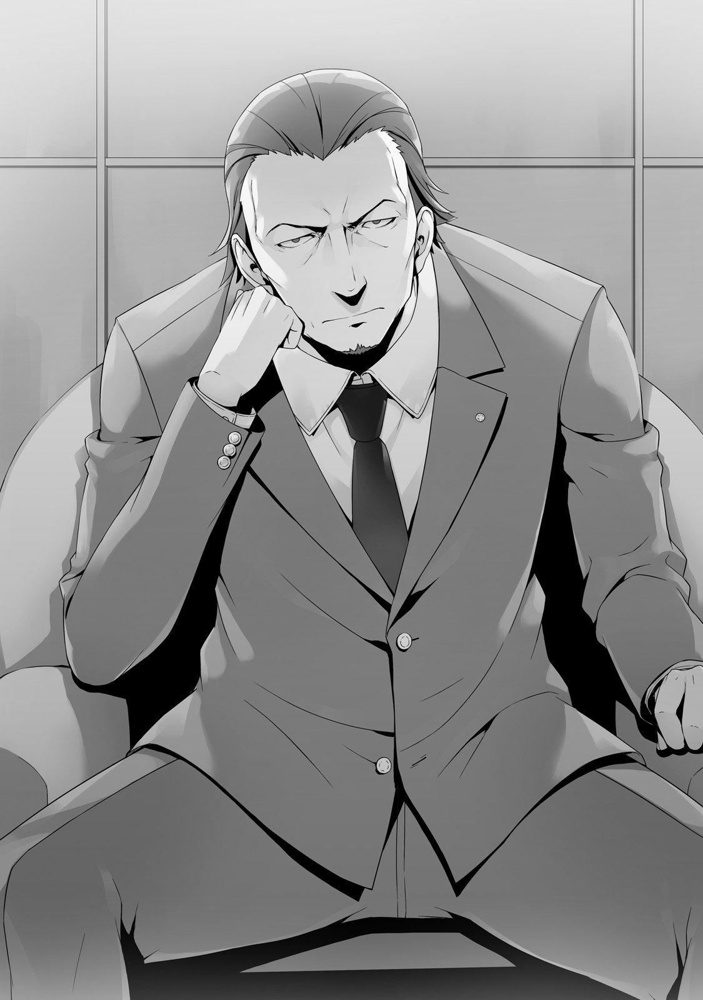
Él vio mi intención de pasarlo por alto y fue directamente al tema principal.
— No veo ninguna razón por la que debería.
— Eso puede ser así para ti, pero yo tengo algunas.
Me miró por primera vez.
Esa mirada aguda no se ha marchitado, de hecho, aparentemente ha aumentado con su edad.
Pupilas como bordes afilados de cuchillas, como si pudiera ver minuciosamente hasta el mismo núcleo. Muchas personas se han sentido golpeadas por ellas.
Las tomé en serio.
— ¿Quieres decir que un padre, por ahora, planea torcer los deseos del hijo?
— ¿Padre dices? Nunca me has reconocido como padre.
— En efecto.
Es dudoso si este hombre alguna vez me ha considerado un hijo. Es probable que solo nos reconozcamos como padre e hijo en papel. No importa si hay una relación de sangre o no.
— El punto es que estas actuando por tu propia cuenta. Te ordené que permanecieras en espera —Escupió, olvidándose de instarme a sentarme.
Luego continuó—. Desafiaste mis órdenes y entraste a esta escuela. Te ordeno que la abandones inmediatamente sin cuestionamientos.
— Tus órdenes solo eran válidas dentro de la Habitación Blanca. En este momento, ya no necesito escucharlas.
Era simple lógica. Pero, por supuesto, no estaría satisfecho con eso.
— Te has vuelto bastante hablador desde la última vez que te vi, Influenciado por esta escuela sin valor que yo veo.
Apoyando su mejilla en su mano, el hombre me miró como viendo excremento.
— De todos modos, déjame escuchar tu respuesta a mi última pregunta.
— ¿El que no tiene sentido sobre ti y no necesitas escucharme más? Eres de mi propiedad. El propietario tiene todo el derecho de usarte como quiera.
No necesito decirte esto. Si vives o mueres lo decido yo.
Para poder decir honestamente eso en este país en el que prevalece la ley, qué persona tan malvada.
— No importa cuántos problemas tengas, no planeo dejar esta escuela.
No importa lo que diga, solo vamos en círculos.
Odia perder el tiempo en conversaciones inútiles, por lo que debería saber esto.
Entonces, ¿qué sigue? Por supuesto, sacará su próxima carta.
— ¿No tienes curiosidad por saber qué pasó con Matsuo quien te contó sobre esta escuela y te dio la idea de inscribirte?
— Realmente no.
Ese es un nombre que recuerdo, su cara aparece en mi mente.
— Te estuvo cuidando como mayordomo por un año. Al final, fue en contra de las órdenes de su empleador.
Habla sin parar, luego se detuvo de repente. Al hacer esto, puede esculpir lo que dice y hacer que el que escucha sea consciente del grave asunto que contiene esta conversación. Usando un tono pesado y una mirada profunda, el oyente asumirá que la conversación está a punto de ir en una dirección negativa, preguntándose qué tan malo puede ser.
— Te enseño cómo huir de mí, sobre la existencia de esta escuela. Y luego ignorándome, las intenciones de tus verdaderos padres, envió los documentos para tu inscripción. Verdaderamente hizo una tontería —
Cogió la taza de té que la escuela preparó para él y tomó un sorbo—. Es un acto inexcusable e imperdonable. Por supuesto que tuvo que ser castigado.
No era una amenaza, solo estaba diciendo los hechos sin mezclar sus sentimientos sobre el asunto.
— Puede que ya lo hayas imaginado. Fue despedido por mí.
— Ya que eras su empleador, esa es una razón válida.
El hombre que era mi mayordomo tenía cerca de 60 años. Era extraordinariamente bueno atendiendo a las personas, y te encariñabas
fácilmente con él. Un hombre muy querido por todos los niños. Se casó joven, pero no fue bendecido con hijos. Tuvo su primer hijo cuando tenía más de 40
años, pero tristemente perdió a su esposa a cambio. Su hijo tenía aproximadamente la misma edad que yo. Recuerdo que alardeaba de su hijo todo el tiempo. Nunca conocí a su hijo, pero Matsuo dijo que estaba estudiando muy duro para retribuirle a su padre. La sonrisa que tenía todavía está grabada en mis recuerdos.
— Debes haber sabido de él. El amado hijo de Matsuo.
Debe haberme visto recordando sobre ellos, antes de que agregara eso.
— Mientras te inscribías en esta escuela, el hijo de Matsuo también logró aprobar el difícil examen de ingreso y se inscribió en una famosa preparatoria privada. Sin duda, trabajó muy duro.
Agregó una pausa, luego continuó.
— Pero, ahora ha sido expulsado.
Sus palabras fueron simples, el significado claro.
Evitaba decirlo directamente, pero se había asegurado de que la escuela se retractara de la inscripción de su hijo para castigarlo.
Porque este hombre tenía poder para hacerlo.
— ¿Y entonces? ¿Acaso un hombre como tú solo lo terminó con eso? Eres tan amable.
— Su hijo es un chico fuerte. Incluso después de la expulsión de la escuela que deseaba, no titubeó. Comenzó a matricularse en otras escuelas. Pero hice mi movimiento con todas ellas. Detuve todos sus intentos ingresar a la preparatoria y lo hice darse por vencido. Lo mismo para Matsuo. Difundir su mala reputación resultó en que no encontrara ningún trabajo. El resultado, su hijo perdió su rumbo y quedó desempleado.
Fue un discurso sobre cómo mis actos dieron como resultado que Matsuo y su hijo perdieran todo. No es historia inventada, es la verdad. Si solo quería informar sobre esta pequeña cosa, fue una decepción.
— Probablemente no estés sorprendido en este punto. Ya que fueron en contra de las órdenes de su empleador, se debe hacer alguna forma de compensación. Pero parece que no esperaba una hasta tal grado. Fue un hombre responsable y amable desde el principio. Perdiendo a su esposa pronto, criando solo a su hijo, lamentando que sus descuidadas acciones lo hayan llevado a robar a su hijo su futuro. Encontró una sola forma de salvar a su hijo. Para las reparaciones, me suplicó que no tocara a su hijo, luego, el mes pasado, se quemó hasta la muerte.
Este era el punto que quería decir después de su largo discurso. Que mis acciones egoístas estaban conectadas con la tragedia de los demás.
— Su hijo ahora está trabajando medio tiempo sin ninguna garantía de si puede sobrevivir hasta el día siguiente. Sin sueños, sin esperanza. Su familia cayendo en ruinas es tu culpa. Su hijo debe odiarte. No hay perdón incluso después de la muerte.
Cuando estaba a punto de preguntar “Y qué”, las comisuras de su boca se curvaron levemente.
— El hombre que te cuidó, el hombre que te salvó ha muerto y no pareces prestarle atención. Matsuo se revolcará en su tumba al ver tu actitud.
Aquel por el que apostó su vida.
Correcto o incorrecto, la razón de la caída de Matsuo y su hijo a las ruinas recae en este hombre. No hay necesidad de sentir remordimiento por las personas muertas. Pero este hombre no estaba tratando de despertar mis sentimientos de culpa. Tampoco quería que mostrara empatía. Él solo quería decirlo. Que no mostraremos misericordia a los que lo enfurecen. Nada más que eso.
— Para empezar, no tengo ninguna evidencia de que lo que me dijiste sea cierto.
— El informe de la muerte de Matsuo ha sido confirmado. De ser necesario, te traeré sus registros.
Así que pregúntame en cualquier momento, insinuó fuertemente.
— Si realmente está muerto, entonces razón de más para que no me vaya de esta escuela. Como Matsuo me ayudó a inscribirme a pesar de conocer las consecuencias, tengo que responder a su voluntad.
Una respuesta de broma a una tontería como esta.
— Seguro que has cambiado, Kiyotaka.
Puedo entender por qué quería decir eso. Siempre había seguido sus... No, más precisamente, las órdenes de la Habitación Blanca. Eso era el mundo entero para mí. Su mayor fracaso es probablemente este período desconocido de un año en blanco.
— ¿Qué te sucedió durante este año? ¿Qué te hizo decidirte por esta escuela?
Y como él ya sabía, siguió con el tema.
— Ciertamente, nos has proporcionado la mejor educación posible. Puedes haber usado métodos que el público nunca reconocerá, pero aun así, no rechazaré la Habitación Blanca. Por eso no estoy planeando hablar con nadie, acerca del pasado, ni intentar ponerte en una posición difícil. Sin embargo, estás persiguiendo excesivamente un ideal. El resultado de eso soy yo, eso es todo.
Soy un estudiante de primer año de preparatoria. 16 años de edad. Sin embargo, mi conocimiento supera con creces la cantidad de aprendizaje en una vida. Me di cuenta, lo hice para darme cuenta. Que los humanos tienen una cantidad infinita de curiosidad.
— Nos enseñaste muchas cosas. No solo las artes y las ciencias habituales, artes marciales y defensa personal, sabiduría y mucho más. Es por eso que quería aprender sobre el “mundo” que desechaste.
— ¿La conclusión, la respuesta a eso tiene algo que ver con por qué huiste?
— ¿Podré aprender las mismas cosas en esta escuela que si permanezco en la habitación blanca? ¿Qué es la libertad? ¿Cómo se siente no estar obligado por nada? No podría haber aprendido eso en ese lugar.
Este es un hecho que incluso él no puede negar. La Habitación Blanca era quizás el lugar más eficiente del mundo para criar a un ser humano, pero no se
podía aprender todo. Era una institución que arrojaba todo lo innecesario a los extremos.
— Matsuo me dijo que el único lugar en Japón al que no podías llegar era esta escuela.
Si no hubiera escogido esta escuela y me hubiera quedado esperando según las órdenes, o si hubiera tomado una decisión diferente, lo más probable es que me hubieran devuelto a la Habitación Blanca.
Por lo tanto, rechazo firmemente retirarme de la escuela.
— Hay algunas partes que no puedo entender, pero parece que tengo que aceptar que así es la situación. Ahora veo que el cierre temporal de la institución esa vez, antes de que se completara el plan fue un error.
Pensar que solo un año podría retrasar un plan que había estado en marcha durante más de 16. Y problemáticamente, lograste escapar fuera de mi alcance a esta escuela.
Sé que este cierre temporal es un recuerdo desgarrador para él. Es por eso que tan fuertemente me quiere de vuelta. Pero que hiciera contacto después de medio año, debe haber algo más sucediendo a mis espaldas. ¿Hay alguien grande detrás de esta escuela?
— Ahora entiendo por qué viniste aquí, pero no creas que esto es el final. Al igual que con el hijo de Matsuo, puedo obligarte a abandonar esta escuela por la fuerza, ¿sabes?
— No creo que puedas interferir con esta escuela como es ahora, ya que cuenta con el respaldo del gobierno.
— ¿Qué te hace pensar eso? Eso es algo que no puedes decir sin pruebas para respaldarlo.
— Primero, los guardaespaldas con los que siempre te rodeas no se ven por ningún lado. Estás creando rencores por todos lados, por lo que no deberías estar tan dispuesto a separarte de ellos. Pero no están en esta habitación ni en el pasillo hasta donde puedo ver.
El hombre agarró la taza y bebió el té ahora tibio.
— ¿Por qué debería necesitar guardaespaldas solo para visitar una preparatoria?
— Eso es descuidado teniendo en cuenta que siempre los tienes en guardia cuando vas al baño. Me parece que no podrías traerlos contigo aunque quisieras. Las autoridades detrás de esta escuela no lo permitieron, es lo que creo.
Y si no acepta, no se le permite entrar.
— Todavía te faltan pruebas.
— Siguiente, si tuvieras el poder para hacer que me rindiera, lo habrías hecho antes de contar hasta 3. Pero no lo hiciste, en cambio hiciste todo lo posible por hablar conmigo cara a cara y convencerme de renunciar. Algo es extraño.
Para el hijo de Matsuo, no necesitaba encontrarlo personalmente, simplemente lo llevó a juicio, eso creo.
— Y hay otra cosa. Si hicieras tu movimiento en un territorio enemigo como esta escuela y se hiciera público, tus ambiciones... tu regreso sería siempre un sueño débil, ¿no es así?
— ... ¿Es eso lo que Matsuo puso en tu cabeza? Así que incluso después de la muerte todavía me molesta.
— No puedo saber eso solo por sus murmullos.
No escuché nada detallado de él, pero puedo inferir los detalles por mi cuenta.
Este hombre no puede ser detenido a medias, y Matsuo también debería haberlo sabido.
— Dejando de lado el cierre temporal y tu influencia, noté un problema más: no importa cuán perfecta sea la disciplina, el tan adecuado período de rebelión ocurrirá en todos los humanos.
Tan solo 15 años de educación no pueden conquistar el ADN, tallado desde la antigüedad.
— Como premisa, vamos a explicar por qué una persona como tú se ha salido de la carretera. Sabes muy bien que no hay sentido detrás de aprender acerca de estas cosas innecesarias, así que ¿por qué?
— Saciar la curiosidad, y decidir mi propio camino. Eso es todo.
— Tonterías. No hay otro camino en la vida que no sea el que planeé para ti.
Tú eres el que un día me superará y gobernarás Japón. ¿Por qué no te das cuenta de eso?
— Esa es la historia que tú inventaste.
— Parece que no puedo llegar a ti.
— Supongo que tenemos la misma opinión.
No importa cuán lejos, siempre estamos en paralelo. Nunca podremos comprometer nuestra comprensión.
— La Habitación Blanca ha sido reiniciada. Esta vez será perfecto. También he hecho preparativos para recuperar el tiempo perdido.
— En ese caso, deberías tener varios sucesores para tu voluntad. ¿Por qué molestarse conmigo?
— Ciertamente, es como dices, pero todavía no hay nadie con el mismo talento que tú.
— No puedes mentir ni siquiera a tus hijos, ¿es lo que quieres decir?
— ¿Crees que una mentira tan inútil funcionará contigo?
Es verdad.
— Estas son mis últimas palabras, Kiyotaka. Considera cuidadosamente tu respuesta antes de responder. ¿Qué deseas? ¿Dejar esta escuela por tu propia voluntad o dejar que tu padre te obligue a irte por la fuerza?
Parece que realmente quiere arrastrarme de regreso sin importar qué. No sé qué cartas utilizaremos para eso, pero simplemente no vale la pena escuchar.
— ... No tengo planes de regresar —Como si cortara el silencio, rápidamente le dije mi decisión—. No sé si hay salvación para ti o no, pero no tengo planes de dejar de aprender. Los métodos pueden ser diferentes, pero es verdad que esta escuela está generando talentos. Ahí están mis expectativas.
— Qué palabras. No entiendes qué clase de lugar es esta escuela. Esto no es más que una choza para las multitudes. Seguramente habrá algunos en tu clase. Basuras sin ninguna posibilidad de salvación.
— ¿Basuras? Eso no es cierto. Este es un lugar donde puedo averiguar si las personas son iguales o no. Creo que es una política bastante interesante.
— ¿Entonces crees que incluso las personas sin valor pueden crecer para estar en el mismo círculo que los genios?
— Ese es mi deseo.
— ¿Cuánto más quieres desviarte de mis políticas?
— Deberíamos terminar esta conversación, sabes que esto no va a ningún lado.
Mientras le mostraba mi voluntad de terminar, un golpeteo resonó dentro de la sala de recepción.
— Disculpe.
Después de que se abrió la puerta, un hombre, aparentemente en los 40, apareció por la puerta. Su expresión se volvió algo cautelosa cuando notó al visitante inesperado.
— Ha pasado mucho tiempo, Ayanokouji-sensei.
El hombre se inclinó profundamente. La escena era como la de un subordinado y su jefe.
— ... Sakayanagi. Qué cara tan nostálgica. Han pasado 7 u 8 años, supongo.
— Creo que ha pasado ese tiempo desde que tomé la posición de mi padre como presidente de la junta. El tiempo seguro que vuela.
¿Sakayanagi? Tuve una pequeña sensación de incongruencia con el nombre con el que el presidente de la junta se presentó.
No se puede evitar asociar ese nombre con Sakayanagi Arisu de la Clase A.
— Debes ser de Ayanokouji-sensei... Supongo que eres Kiyotaka-kun. Es un placer conocerte.
Mientras hablaba con el que estaba parado, inclinó levemente la cabeza hacia un lado.
— Gracias por todo. Hemos terminado de hablar, así que me disculpo.
— Ah, ¿podrías esperar un poco? Solo quiero hablarles un poco a los dos.
No podía rechazar eso de esta tercera persona, al menos no del presidente de la junta de esta escuela.
— Bueno, entonces, toma asiento.
Me senté después de su invitación. El presidente de la junta se sentó a mi lado.
— He tenido noticias del director. Parece que quiere que se retire de la escuela.
Si el presidente de la junta cediera en autoridad, quizás estaría arrinconado.
— Eso es cierto. Como su padre lo dice, deberías ponerlo en acción.
Me pregunto cómo devolverá esas palabras el presidente de la junta Sakayanagi.
Tras tener sus preocupaciones en otro lado, Sakayanagi se encontró con los ojos del hombre y respondió.
— Está equivocado. Es cierto que los padres tienen mucho que decir sobre sus hijos. Si los padres lo desean, hay casos en los que no tenemos que considerar los deseos del alumno. Sin embargo, eso es al considerar todos los hechos y razones: como ejemplo, si fueran víctimas de intimidación despiadada, etc., valdría la pena considerarlo. ¿Esto es verdad para ti, Kiyotaka-kun?
— Para nada.
— Qué farsa. Ese no es mi problema. Solo quiero que abandone la escuela a la que se inscribió sin mi permiso.
— Ir a la preparatoria no es obligatorio. A qué escuela se puede inscribir depende del estudiante. Naturalmente, si los padres pagaron los gastos como matrícula o similares, sería otra historia. Esta escuela tiene todos los gastos cubiertos por el gobierno. Así que el dinero y los materiales no son un problema. Por lo tanto, vamos a poner la autonomía de los estudiantes como nuestra máxima prioridad.
Se esperaba, pero me sentí agradecido por esas palabras.
Y al mismo tiempo, lo entendí. Matsuo dijo una vez que “esta escuela te permitirá escapar de la Habitación Blanca”. Dijo debido a la existencia de este hombre. Está conversando con mi padre sin el más mínimo asomo de miedo. Y
también está demostrando ser efectivo.
Completamente diferente al director que se inclinó inmediatamente ante la autoridad, este hombre parece confiable.
— También has cambiado. ¿Qué pasó con el tú que solía estar de acuerdo conmigo?
— Aún ahora, lo admiro, Ayanokouji-sensei. Pero es precisamente porque estoy de acuerdo con los ideales de esta escuela que mi padre fundó que tengo la intención de sucederlo. Estoy seguro de que lo sabe mejor, Ayanokouji-sensei. Ninguna de las políticas han cambiado desde la época de mi padre.
— No voy a rechazar tu forma de hacer las cosas. Eres libre de ser el sucesor de la voluntad de tu padre. Pero si vas a hacer eso, ¿por qué permitiste que Kiyotaka se matriculara en esta escuela?
Ese hombre parece albergar algunas dudas y entonces comenzó a interrogar al presidente Sakayanagi.
— ¿Por qué, es lo que pregunta? Después de evaluar los resultados de su entrevista y exámenes, llegué a la conclusión de que califica para la inscripción
— No evadas la pregunta. Soy consciente de que esta escuela funciona de manera diferente a la ordinaria. En primer lugar, Kiyotaka ni siquiera debería haber sido un candidato para la admisión. Sé que las entrevistas y los exámenes son una farsa.
En esas palabras, la expresión del presidente Sakayanagi cambió a pesar de que tenía una sonrisa agradable en su rostro hasta ahora.
— ... A pesar de que ya se ha retirado de las líneas de frente, eso es muy impresionante, Ayanokouji-sensei. Está bien informado.
— Su recomendación a esta escuela debería haber sido presentada en secreto. Y en el momento en que se hizo, su admisión a esta escuela ya había sido decidida. En pocas palabras, sin una recomendación, incluso el estudiante más excelente hubiera sido descalificado para ingresar. ¿Me equivoco?
Parece ser un hecho que están hablando de cosas que un estudiante como yo nunca escucharía de otra manera.
— No hay forma de que Kiyotaka haya podido ser parte de la selección. En otras palabras, es extraño que no haya sido descalificado.
— Sí. Es cierto. Su nombre no estaba en la lista de estudiantes que íbamos a admitir. Normalmente, cuando hay una solicitud imprevista de un estudiante que no está en la lista, todos son rechazados. Como un camuflaje para eso, he implementado las entrevistas y los exámenes, pero él es el único cuya admisión he aprobado en base a mi propio juicio.
Puede que esté aquí para llevarlo de vuelta con usted, pero por ahora, es un valioso estudiante que nos ha sido confiado. Tengo la obligación de proteger a los estudiantes de esta escuela. Incluso si es su pedido, Sensei, hay cosas que debo rechazar, siempre y cuando él mismo no desee irse.
No bromees, ese hombre escupió esas palabras y se apartó del presidente Sakayanagi para enfrentarme.
Sin embargo, el presidente Sakayanagi continuó.
— Por supuesto, vamos a tener en cuenta la opinión de los padres. Si usted desea su expulsión, entonces junto con Kiyotaka-kun y la escuela, llevaremos a cabo una discusión con las tres partes hasta llegar a un consenso.
Que es otra forma de decir no a la expulsión.
Es seguro asumir que el hombre ya no tiene cartas.
— Ciertamente no puedo forzar lo imposible en tu territorio. Sin embargo, si esa es tu respuesta, todo lo que tengo que hacer es cambiar mi enfoque.
— ¿Qué estás planeando hacer? Si pretendes hacer algo extremo---
— Entiendo. No tengo intención de presionarte.
El hecho de que este hombre, que se especializa en ese aspecto, no lo haga, muestra que no puede hacerlo.
— No debería haber ningún problema si la expulsión de Kiyotaka ocurre usando las reglas de la escuela como base.
— Sí, le puedo prometer eso. No le daré un tratamiento especial solo porque es su hijo, Sensei.
— Entonces eso será todo. Me voy.
Ese hombre se levantó del sofá.
— ¿Cuándo nos volveremos a encontrar?
— Por lo menos, nunca nos volveremos a encontrar aquí.
— Iré a despedirlo entonces.
— Innecesario.
Como ese hombre se negó a ser acompañado, hablé con él.
— Si te llamas a ti mismo padre, ¿por qué no vienes a esta escuela un par de veces?
— ¿Un lugar como este? Una vez es más que suficiente.
Dejando esas palabras atrás, ese hombre salió de la oficina.
— Whew. Como de costumbre, cada vez que Sensei está presente siempre es tenso, ¿no? También debes haber pasado un mal momento, ¿verdad?
— No, en realidad no.
Lo único que salió fue ese “como de costumbre”. Ya que estamos solos, el presidente Sakayanagi se calmó un poco y me miró con cariño.
— Verás, te conozco desde hace mucho tiempo. Nunca hemos hablado directamente, pero siempre te he estado vigilando desde detrás del cristal.
Sensei siempre te ha elogiado, ¿sabes?
— ¿Es así? Entonces así es como es.
— ¿Qué? ... qué quieres decir con eso.
— No, lo que es más importante, presidente Sakayanagi, sobre la estudiante asignada a la clase A-
— ¿Estás hablando de Arisu? Ella es mi hija.
— Entonces así es como es.
— Ahh, pero no es porque sea mi hija que esté en la clase A, ¿bien? Yo juego limpio.
— No es eso. Solo quería preguntarle.
Y con esto, el misterio detrás de cómo ella me conoce ha sido resuelto. No es extraño si ella es la hija de este hombre.
— Estoy bien solo con lo que sea capaz de explicar, pero… tengo curiosidad por lo que dijo ese hombre antes.
— ¿Podría ser, sobre la historia detrás de tu admisión?
— Sí.
— Sí. Como dijo Ayanokouji-sensei, esta escuela solo admite a estudiantes de secundaria de todo el país a los que ya realizó un reconocimiento preliminar y los señaló como calificados. Todos los años trabajamos junto con los administradores de cada secundaria. Esos son los estudiantes que se han reunido aquí. Las entrevistas y exámenes son solo una formalidad.
Incluso si mientes durante la entrevista o sacas cero en tus exámenes, tu admisión ya ha sido determinada. Por supuesto, estudiantes de todo el país solicitan su admisión para que los exámenes estén ahí como una excusa para sacrificarlos.
Entonces, incluso si obtienes 100 en tu examen o eres magistral en la entrevista, serás rechazado. No hay forma de que un estudiante rechazado descubra la verdad.
Esto es lo suficientemente convincente. Los estudiantes como Sudou, Ike y los demás que no son académicamente los más brillantes, así como los estudiantes como Hirata y Karuizawa que tienen problemas en el pasado, pudieron inscribirse debido a ello.
Cosas como el sentido común y la capacidad académica son preocupaciones secundarias para esta escuela.
— En tu caso, en el momento en que decidí admitirte, lo que hiciste ya no tuvo ningún efecto. Sacar 50% en todos los exámenes escritos no influyó en tus posibilidades de éxito o fracaso.
Esta es realmente una escuela única.
Con toda probabilidad, esta es la primera escuela de este tipo en Japón.
— Tanto tú como Ayanokouji-sensei deben estar preguntándose por qué esta escuela, regulada por el gobierno, no admite estudiantes en función de su capacidad general. Pero eso es algo que seguramente comprenderás en el futuro. Cuáles son las políticas de educación que esperamos lograr así como los resultados de la misma.
El presidente Sakayanagi rebosa confianza.
— ... Terminé diciendo demasiado. Pero no puedo decirte nada más. Porque eres un estudiante matriculado en esta escuela y yo soy el que la maneja.
El hecho de que me haya dicho todo esto debe ser porque estoy en la posición especial de ser el blanco de ese hombre.
— Como la persona a cargo de esta escuela, protegeré a sus estudiantes en la medida en que las reglas lo permitan. ¿Entiendes a qué me refiero?
Si no sigo las reglas, tampoco podrá ayudarme.
— Por supuesto, también me puedo imaginar lo que hará ese hombre a partir de ahora.
Sus opciones son muy limitadas si quiere sacarme de esta escuela.
— Entonces, discúlpeme.
— Bien, resiste.
Después de que me dio ese aliento, salí de la oficina. Cuando salí de la oficina, vi a Chabashira-sensei esperando a que la conversación terminara a una pequeña distancia.
Le hice una reverencia y traté de pasar junto a ella, pero comenzó a caminar mientras igualaba mi paso.
— ¿Cómo te fue en tu enfrentamiento con tu padre?
— No tiene sentido intentar investigar tan torpemente. Ya lo entiendo todo.
— ... ¿Qué quieres decir con que te has dado cuenta de todo?
— Chabashira-sensei. Estoy diciendo que todo lo que me has dicho básicamente es mentira.
— ¿De qué estás hablando?
— Quiere tratar de ocultar su inquietud, pero no es muy sutil.
La forma en que me mira, su discurso y la forma en que elige sus palabras. Está solo un poco fuera de lugar, pero es diferente de lo habitual. Ella está tratando de ocultar sus emociones a lo mejor de su capacidad, pero no puede ocultar su malestar por completo.
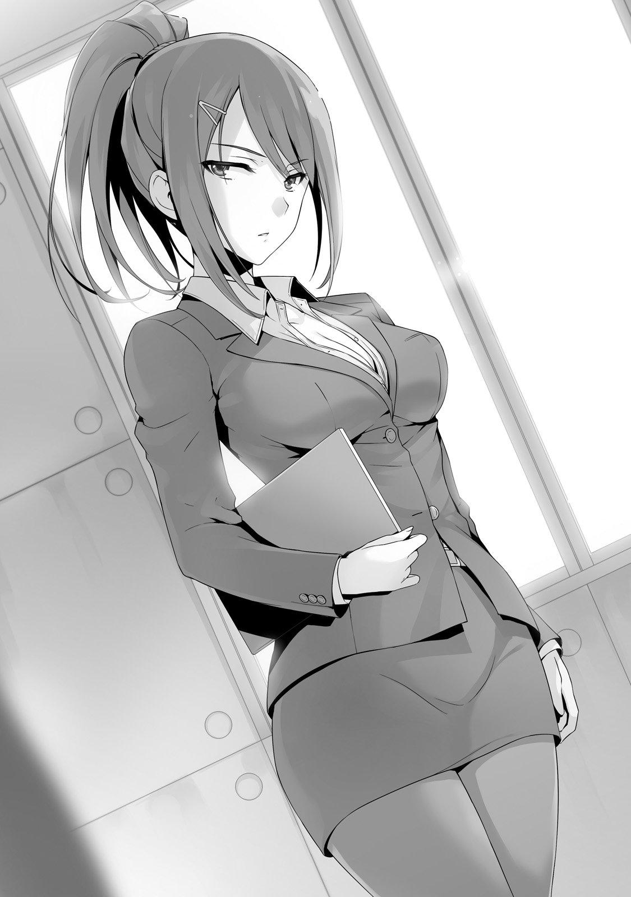
— Ese hombre nunca la contactó, Chabashira-sensei. Por supuesto, él tampoco la obligó a hacer que yo dejara la escuela.
— No, tu padre me pidió ayuda. De hecho, al igual que lo que te dije, constantemente he intentado expulsarte.
Mi padre ciertamente me está presionando para que deje la escuela. Pero a juzgar por su actitud, es evidente que es la primera vez que pone un pie en esta escuela. Como no tengo pruebas sólidas, tampoco puedo ofrecer una objeción, pero el hecho de que contacte con un maestro es simplemente una historia irrisoria.
— Deje de tratar de engañarnos a los dos. El presidente Sakayanagi le ha contado todo, le contó mi situación en cuanto se decidió mi inscripción.
— ... ¿El presidente te dijo todo?
Me reí débilmente.
En ese momento, Chabashira-sensei se dio cuenta de que había cometido un error.
— Ayanokouji, ¿me estabas sondeando......?
— Sí. El presidente nunca me dijo nada sobre Chabashira-sensei. Pero estaba seguro de que estaba relacionado con usted, y ahora esto se ha vuelto muy claro.
Me convencí de ello después de ver al presidente Sakayanagi, que sabía que tenía una calificación del 50% en todas las pruebas.
— Explicaré mi razonamiento ahora. Primero solicité la admisión a esta escuela y el presidente Sakayanagi, que me conocía desde hace mucho tiempo, actuó por su propia cuenta. Y en el momento en que mi ingreso fue confirmado, mi asignación a la Clase D también fue confirmada. La razón por la que fue la Clase D y no otra clase es porque usted, Chabashira-sensei, es una maestra que no muestra mucho interés en el conflicto de clases. Los maestros de clase que he visto hasta ahora han mostrado una gran ambición por conseguir que sus clases sean promocionadas, ¿sabe?
Si me asignan a una clase en la que me destaque, las posibilidades de atraer la atención aumentarían proporcionalmente.
— Por cierto, el presidente Sakayanagi también cometió un error de cálculo: es que la maestra de la Clase D que no siente ningún amor por su clase y no la guía, es la que secretamente más quiere ascender a la Clase A.
— ..........
Chabashira-sensei no pudo responder y permaneció en silencio. Porque sabía que por mis palabras desenfrenadas, terminaría por revelarlo. Es por eso que no me contuve y seguí con mis palabras.
Para confirmar una cosa más.
— Está obsesionada con la idea de subir a la Clase A. Pero no tenía tanta suerte con los estudiantes que tuvo hasta ahora. Es por eso que no fue capaz de poner esos sentimientos en primer plano e indiferentemente pasaba sus días. ¿Me equivoco?
A diferencia de antes, Chabashira-sensei ya no me miraba a los ojos.
— Esa es solo tu teoría, Ayanokouji.
Las palabras negándolo de Chabashira-sensei ya no tienen ningún poder, sino que sonaban débiles.
— Por pura casualidad, la irregularidad que es mi existencia se presentó este año y la situación se volvió diferente de su año habitual. Aunque hay muchos estudiantes con personalidades problemáticas, la crema y nata también se reunió. Horikita y Kouenji, así como Hirata y Kushida. Son todos estudiantes que, si son guiados adecuadamente, pueden aspirar a las clases superiores. Es por eso que terminó teniendo expectativas. En ese caso, no sería extraño si la ambición que mantuvo reprimida surgiera de nuevo. Es muy fácil saber si piensa en las palabras que Hoshinomiya-sensei le dijo no mucho después de la inscripción.
Hoshinomiya-sensei, que era una vieja amiga de ella, sabía de su deseo de ascender a la Clase A.
“Quieres a suplantarlos”. Esas palabras suyas fueron muy reveladoras.
— Y ahora, no importa cuán groseramente actúe o qué insolentes palabras diga, la única opción que tiene es aceptarlo todo. El hecho de que el presidente se ofreció a protegerme y considerando cómo quiere usarme como su arma para llegar a la clase A, la única opción que tiene disponible es cerrar los ojos a todo el abuso que está ocurriendo aquí.
Como dije, todo lo que Chabashira-sensei podía hacer es escuchar todo esto.
— Para alguien como usted, que desea llegar a la Clase A y está obligada a enseñar a la Clase D todos los años, esta es una oportunidad que no puede permitirse perder. Incluso usó la mentira de que mi padre se puso en contacto con usted para tratar de usar mi existencia. Esa es la razón por la que se acercó a mí y Horikita era solo un peón que usó para ese propósito. Por cierto, las cosas no son tan simples.
Nunca tuve mucha ambición y no tenía ningún interés en la Clase A. Sin saber cómo controlarme, nunca tomó muchas acciones, terminó haciendo el primer disparo durante nuestro primer examen especial en esa isla deshabitada.
— Si, para el momento en que comienzan los exámenes especiales, todavía no nos compararnos con las otras clases, entonces nunca podremos alcanzarlas. Es por eso que se alteró y terminó usando lo que el presidente le dijo que mantuviera en secreto. Supongo que podría llamarlo medidas desesperadas.
Después de eso, las cosas fueron favorablemente para la Clase D hasta cierto punto.
Sin embargo, ocurrió un error de cálculo. Eso es mi padre por fin haciendo contacto con esta escuela. Y hoy en este mismo momento, todas las verdades y mentiras se ponen al descubierto.
— Probablemente pretendió suprimirme, pero por el contrario, es usted la que está siendo suprimida ahora.
— ... Ya veo. Seguramente el presidente te está dando una consideración especial. Tus habilidades están más allá de las de un estudiante de primer
año de preparatoria. Eres más sabio más allá de tus años, ¿así cómo es, eh?
Tomó aliento, asintió y lo admitió.
— ... Confesaré. No conozco a tu padre.
La actitud que tanto trató de mantener hasta ahora colapsó.
— Sin embargo, ¿qué vas a hacer con el hecho de que si alguna vez tengo ganas, realmente puedo conseguir que te expulsen? Puedo decir que cometiste una violación grave de las reglas e informar a la escuela sobre ello. La expulsión es lo que más quieres evitar, ¿cierto?
Pensar que llegó tan lejos solo para amenazarme ahora.
— Independientemente del proceso, el resultado no cambiará, es a lo que se refiere.
— Exactamente.
— Qué desafortunado, ya estoy seguro de eso. Que no puede hacer que me expulsen.
— ... Permíteme preguntarte qué te llevó a esa conclusión.
Me calmé de ese tono agitado.
Por supuesto, en primer lugar, en realidad no estaba agitado. Solo había actuado con agitación para extraer las verdaderas intenciones de Chabashira-sensei.
— La situación actual habla por sí misma. En este momento, la Clase D se desempeñó mejor que en la mayoría de los años. Horikita y los otros estudiantes lentamente también están comenzando a usar sus fortalezas.
Incluso si ya no los ayudo, no es como que ya no llegarán a la Clase A.
Hasta ahora, la Clase D está alcanzando a las clases superiores y está a punto de superar a la Clase C. No, en este momento, nuestras posiciones ya han sido invertidas internamente.
Pero si ocurriera una expulsión, naturalmente el objetivo se volverá distante. Lo que significa que Chabashira-sensei está atrapada en una situación en la que no puede hacer nada.
— Incluso después de que baje del escenario, la pelea continuará mientras Chabashira-sensei tenga esperanzas.
Es imposible que la gente descarte sus esperanzas con sus propias manos.
— Y con eso, haré que me libere.
— Ahora que sabes todo, ¿vas a dejar de aspirar a la Clase A?
Por supuesto que voy a parar. La maestra que intentó usarme para llegar a la Clase A fingiendo estar asociado a mi padre ya no tendrá ningún control. En otras palabras, ya no es necesario.
— Por lo menos, creo que mi turno ha terminado.
Pero no lo negué del todo.
La gente continuará mientras haya esperanza. Incluso si saben que la posibilidad esté cerca de cero, aún querrán creer en esa posibilidad.
Chabashira-sensei dejó de caminar.
— Por ahora, por favor, solo observe pacientemente. Si sigue acercándose a mí más de lo que ya lo ha hecho en base a sus sentimientos personales, solo será un obstáculo para los estudiantes.
Enfaticé eso.
— Si aún me niego a liberarte a pesar de ser imprudente, ¿qué vas a hacer?
— Entonces morirá aferrada a esas ambiciones suyas, es a lo que llevará esa elección. No es una elección muy sabia.
— Permíteme cambiar la pregunta entonces. ¿No crees que no hay garantía de que no te arrastraré conmigo si alguna vez pierdo la esperanza?
— Sí, existe la posibilidad de que los puntos de clase se desplomen en el futuro. De ser así, perderá toda esperanza. En ese caso, no me importa. Si va a atacar en ese momento, por favor siéntase libre de hacerlo.
Ella no se detendrá solo porque yo le pedí hiciera lo que quisiera.
— Pero también me gustaría recordarle que su posición como docente tampoco está garantizada.
Es solo una amenaza pero, al menos, afectará a Chabashira-sensei, que conoce los detalles hasta cierto punto.
Parece que ya no tiene nada más que decirme mientras me alejo. No hay nada feliz con mi reunión con mi padre, pero gané mucho hoy.
Ya no necesito ayudar a llegar a la Clase A, es lo que significa. Sea lo que sea lo que Ryuuen haga a partir de ahora, ya no necesito involucrarme por la Clase D.
Además de eso, no tendré ninguna reacción, sin importar lo que le pase a Karuizawa.
Por supuesto, si Karuizawa es atrapada o si decide traicionarme, mi identidad será revelada, pero eso es todo. Incluso si Ryuuen decide venir a buscarme, siempre que no haga nada por el bien de la Clase D de ahora en adelante, terminará con una decisión cerrada y ambigua.
PARTE 6
Una calle arbolada al atardecer. Levanté la cabeza y exhalé. El vapor blanco se perdió en el cielo y desapareció.
— Hace frío.
Cada vez que exhalo de mi boca o nariz, sale vapor blanco, desaparece y vuelve a salir, bastante curioso. Es fácil de olvidar porque hay fluctuaciones extremas de temperatura durante el día, pero ya es invierno.
El año pasado en esta época, siempre estaba en interiores...
Una chica me pasó, no la conocía y que parece que tiene mucho frío.
Sostenía un teléfono y se veía feliz de hablar con alguien.
— De verdad, desde que Miyabi se convirtió en el presidente del consejo estudiantil, nuestra relación ha empeorado. Jajaja, estoy bromeando, bromeando. No es que esté enojada, pero prepárate para invitarme muchas cosas.
Sus muslos que estaban expuestos en este clima parecían estar muy fríos.
De su cabello largo me llegó la fragancia de su champú.
— ¿El consejo estudiantil? Lo siento, tendré que negarme. No estoy interesada en esas cosas. Y Miyabi aún no ha resuelto las cosas con el ex presidente del consejo estudiantil, ¿verdad? Eh, ¿por qué de repente te me confiesas? Sé que ya has puesto tus manos en muchas chicas.
No tenía la intención de escuchar a escondidas, pero hablando con voz tan alta aunque no quiera, terminé escuchando todo. Por el contenido de la conversación, puedo especular que es una chica de segundo año.
— Pero... si ganas contra el presidente Horikita, entonces lo pensaré. Te veré más tarde.
Cuando la chica terminó la llamada, exhaló un aliento blanco.
Luego se detuvo y devolvió su teléfono a su bolsillo.
— Ese tipo Miyabi, creyéndose muy importante. Sin embargo, el presidente Horikita realmente es inútil. Esperaba que detuviera a Miyabi. Al final, el juego terminará con la victoria de Miyabi.
A pesar de que estaba hablando tan felizmente hasta ahora, inmediatamente bajó el tono cuando terminó la llamada.
No estaba claro si ella me había notado cuando pasó a mi lado, simplemente se fue así.
— ¿¡Uwa!?
Sin embargo, ocurrió un incidente menor.
Probablemente se enredó, y en el camino que divide el dormitorio de cada año cayó magníficamente.
— Duele...
Inmediatamente se puso de pie y miró a su alrededor con una cara ligeramente roja.
Y luego pareció que notó mi existencia por primera vez caminando detrás de ella.
Forzó una sonrisa. Un poco avergonzada.
Parece que no está herida.
La chica se escapó y desapareció en dirección al dormitorio de los estudiantes de segundo año.
— Entonces era realmente una estudiante de segundo año.
En esta escuela, no tienes mucha oportunidad de mezclarte con otros años escolares fuera del consejo estudiantil o las actividades del club. Es por eso que tampoco tuve la oportunidad de familiarizarme con sus caras.
— Las chicas deben sentir frío también.
De vez en cuando en nuestro salón de clases, hay estudiantes que dicen que quieren algo para cubrirse debajo de sus faldas. Creo que debería estar bien si lo hacen, pero parece que está prohibido por las normas de la escuela.
Las chicas también lo tienen difícil.
El primer “invierno” que experimento. Es así de frío y en el fondo, nunca pensé que sería capaz de ver este punto de vista. Hay una canción sobre un perro que vio nieve y corrió emocionado. Puedo simpatizar con él.
Si alguna vez nieva, me pregunto si estaré tan emocionado.
Exhalé y recordé los eventos que ocurrieron hoy. Reunión con mi padre, la existencia del presidente Sakayanagi y que las políticas de la escuela no significan nada.
También logré mucho al descubrir la mentira de Chabashira-sensei.
Porque solo con esto, podré avanzar significativamente.
— ... ¿Voy a poner fin a eso?
Hasta ahora lo he mantenido casi todo en segundo plano, pero por la forma en que se anuncian los resultados del examen, cuanto más prospera la Clase D, se atraerá atención maliciosa.
Inevitablemente, la vigilancia se intensificará y podrías investigar quién es el que está en el centro de todo. De hecho, aunque usé a Horikita como esa persona, Ryuuen se dio cuenta de que es falso.
Sakayanagi también conoce mi pasado y es solo cuestión de tiempo antes de que Ichinose comience a dudarlo también.
Si quiero regresar, ahora es mi única oportunidad. Por supuesto, las decisiones precipitadas conducirán a la ruina, así que tendré que considerar ambas opciones, las de avanzar o retroceder.
Y con eso, ahora el problema es cómo lidiar con Ryuuen.
Saqué mi teléfono de mi bolsillo y escribí la dirección manualmente. Y luego envié un mensaje a cierta persona. Pidiéndole que me llamen cuando puedan.
Cuando lo hice, el mensaje se marcó inmediatamente como “leído”.
Parece que esa persona generalmente no pasa el rato con sus amigos, sino que regresa al dormitorio temprano.
Luego marqué manualmente el número de 11 dígitos e hice la llamada.
— ¿Hola?
La persona detrás de esta lánguida voz es Karuizawa Kei de la Clase D de primer año.
Todavía no lo sabe, pero es una de las personas marcadas por Ryuuen. Ella es alguien que sabe que yo soy el que maneja la Clase D desde la oscuridad, incluso más que Horikita.
Por supuesto, ella no sabe mucho acerca de cuán profundamente estoy involucrado y lo que he hecho en detalle. Si hay algo que se pueda decir de mí
en este momento, es que Karuizawa probablemente me vea como una persona extremadamente misteriosa.
— Me preguntaba qué estabas haciendo.
— Estás bromeando, ¿no? No hay forma de que llames sin una razón.
Pensé que primero haría una pequeña charla, pero Karuizawa no entendió.
— ¿No tienes ganas de disfrutar más de nuestra conversación?
— Es imposible si tú mismo no tienes ganas de disfrutarlo, ¿verdad?
— ... Supongo que estás en lo cierto.
No es la líder de las chicas de clase D por nada. Entiende a la gente muy bien.
— ¿Hicieron Manabe y las demás algún tipo de contacto contigo?
— No. Eso no es un problema en este momento... ¿me llamaste para asegurarte?
En lugar de sorpresa, una reacción exasperada fue lo que obtuve.
— Ha pasado un tiempo desde entonces, pero nada hasta el momento, ¿eh?
Parece que ya no hay necesidad de preocuparse por eso.
— Eso sería lo mejor, pero no se sabe qué pasará ni cuando, ¿verdad?
Mirándolo desde la perspectiva de Karuizawa, realmente no se sentirá segura hasta la graduación. El viento sopló y me golpeó fríamente la cara.
— Todavía estás afuera.
Tal vez es escuchó el sonido del viento en el teléfono y Karuizawa dijo eso.
— Estoy regresando. Hoy regresaste bastante rápido. Usualmente llegas tarde.
— Incluso yo tengo días en los que quiero volver temprano.
Una espinosa respuesta.
— Ahh.
Encontré algo y mi voz salió.
— ¿Qué?
Karuizawa reaccionó, pensando que estaba dirigido a ella.
— No, nada.
En el punto donde el camino se bifurca, un amuleto rojo había caído al suelo donde esa estudiante de segundo cayó antes.
Me pregunto si es algo que la estudiante dejó caer. Tal vez sea mejor dejarlo ahí, pero como caerá nieve hoy según el pronóstico, se mojará todo si lo dejo.
Como no hay señales de que se haya dado cuenta y haya regresado, supongo que se lo entregaré al administrador del dormitorio.
— Oye, hay algo que quería verificar contigo sin importar qué. Ya estamos hablando, ¿puedo preguntar?
— ¿Qué quieres verificar?
Recogiendo el amuleto, reanudé mi conversación con Karuizawa mientras caminaba hacia el dormitorio de segundo año.
— Eres inteligente y todo así que por qué no dejas que otros se enteren, o mejor dicho, ¿por qué no se los dices? La Clase D está llena de idiotas, así que si das un paso al frente como Yousuke-kun, podrías dar órdenes, ¿no?
No es difícil imaginar por qué ella preguntaría algo así.
— ¿Soy inteligente? ¿En qué te basas para pensar eso?
— ¿Qué.....?
— Mis calificaciones en las pruebas son promedio. Nunca he dicho nada sobresalientemente útil en clase. No hay nada en lo que puedas basar esa evaluación, ¿verdad?
— Eso no es a lo que me refiero.
Por supuesto, estoy al tanto de a lo que Karuizawa está tratando de llegar.
Hasta ahora, le he pedido a Karuizawa su cooperación en muchas actividades furtivas. Por ejemplo, sabotear cuando querían espiar y el asunto con Kushida durante el Paper Shuffle.
No es extraño que, en general, ella piense que es un misterio.
— Cosas así, si solo las hubieras pregonado antes, tu evaluación en clase habría aumentado, ¿verdad? Lejos de eso, incluso podrías terminar atrayendo la atención de la escuela. Al igual que lo hiciste durante el festival deportivo.
A pesar de que es algo que no tiene nada que ver con ella, Karuizawa dijo eso con entusiasmo.
— Sabes que no soy del tipo que desea esas cosas, ¿verdad?
— Entonces, ¿por qué haces todo esto? Si lo hubieras querido, podrías no haber hecho nada desde el principio.
— Ese es un buen análisis.
— La razón principal por la que te llamé hoy, Karuizawa, es para disculparme contigo.
— ¿Disculparte?
— Como antes tenía mis razones, estaba ayudando a la Clase D a subir a la cima. Pero esa razón simplemente ha desaparecido.
— Entonces, ¿ahora vas a desaparecer?
— Sí, voy a dejar que Horikita y Hirata lleven la clase. No quiero involucrarme con Ryuuen y exponerme. Fuiste de gran ayuda para mí en el karaoke y en muchas otras cosas. Te he causado muchos problemas.
— ¿Así que finalmente dejaremos de hacer esto y seré libre?
— Sí. Así es como es.
Hasta ahora, Karuizawa me ha obedecido sin dudar más allá de mi imaginación, es por eso que ahora puedo soltarla sin dudarlo.
— Esta será la última vez que te contacte.
Claramente le dije eso a ella.
— ¿Eh? —Sin embargo, Karuizawa dio una respuesta tardía—. Lo siento...
no entendí eso.
¿Va a decir que no escuchó eso a pesar de que ahora el viento no sopla?
— Esta será la última vez que te contacte.
Dije lo mismo claramente otra vez. Esta vez debería haberme escuchado sin problemas.
— Es el curso natural de acción ya que no hay nada más que necesite que hagas. Quiero decir, nadie sabe que tú y yo estamos conectados, Karuizawa. Si continuamos haciendo contacto sin sentido, parecería sospechoso.
— Bueno... eso es verdad... supongo.
Karuizawa no pudo decir una respuesta adecuada. Parece confundida pero yo seguí hablando con ella.
— Por supuesto, si algo te sucede, aún te protegeré. Esa promesa pretendo cumplirla hasta el final. Si tienes una situación de emergencia, te daré la dirección para contactarme. Pero todo lo que no sea emergencia, por favor borra todos nuestros chats hasta ahora para no dejar evidencia. Ya he borrado todos tus mensajes y número de contacto.
— Espera un momento... ¿por qué dices todo esto tan de repente?
— ¿Por qué preguntas?
— Porque... es demasiado frío... incluso para ti...
— No es frío ni nada parecido, solo ese es el alcance de nuestra relación.
La protegí de Manabe y su grupo, y si no fuera por eso, nunca nos hubiéramos conocido así. La diferencia entre un estudiante sombrío y una chica popular es como la de los cielos y la tierra.
— También odiaste ser utilizada por mí, ¿no?
— Eso es verdad, pero......
Karuizawa seguía sin saber qué decir. Y lo que es más, sus silencios se hicieron más largos.
— He dicho todo lo que quería decir. ¿Tienes algo que quieras decirme?
No debería alargar esto. Presioné a la confusa Karuizawa para que dijera algo.
— ...Bien.
Una respuesta tensa que está lejos de ser convincente, pero una respuesta es una respuesta. Tal vez finalmente se dio cuenta de que no hay nada que pueda hacer al respecto, mientras ella continuaba hablando.
— ¿Es esta la última vez que puedo hablar con Kiyotaka de esta manera?
— ¿No te gusta eso?
— Por supuesto que no.
— Entonces no hay problema.
Continué indiferente y silenciosamente. Nunca dejo entrar la más mínima emoción. No hay forma de que haya alguna allí tampoco.
— Entonces voy a terminar la llamada...
Karuizawa también sintió eso fuertemente por el teléfono. Cuando terminé la llamada, dije esto.
— Nos vemos.
— Ahh...........
Karuizawa dijo algo al final, pero no siguió. Esperé unos segundos y corté la llamada. Luego borré el historial de llamadas y volví a guardar el teléfono en mi bolsillo.
Karuizawa debe haberse sentido en paz conmigo, como un parásito. Y si tengo que irme repentinamente, su corazón se conmocionará fuertemente. La ansiedad y la soledad se acumularán gradualmente en su diario vivir. Y si Ryuuen fuera a atacarla mientras está en su punto más débil. Estoy seguro de que el corazón de Karuizawa Kei colapsará por completo.
— Supongo que esto significa que puedo regresar al camino que comencé cuando vine por primera vez a esta escuela.
Ya no me preocuparé por Horikita, Karuizawa, Ryuuen o Sakayanagi. Ya no participaré activamente en los exámenes. Si hay un problema, no es mío Pero si hay problemas, los que “cooperan” siguen siendo necesarios.
Le di al administrador del dormitorio el amuleto que parece pertenecer a la chica de segundo año y luego regresé a mi dormitorio.
PARTE 7
Retiré la sábana mojada que envolvía los desperdicios desde la parte superior y la arrojé a la basura. Cuando me senté en la cama después de lavarme las manos, el sonido de un resorte reverberó débilmente.
Como se acerca el final del año, decidí limpiar mi habitación los fines de semana.
Nunca tuve nada en esta habitación, así que fue todo lo que se necesitó para envolverlos.
— Una habitación limpia es algo agradable.
Me pregunto si he tenido éxito en devolverle ese brillo que tenía la habitación cuando puse un pie por primera vez en ella. Encendí la tetera y busqué un breve respiro. Estoy un poco indeciso sobre el uso de la copa recién pulida y brillante, pero no hay forma de evitarlo.
Saqué mi teléfono e intenté acceder a la aplicación de la escuela. Los puntos de la clase y los balances personales y esas cosas se muestran allí y los miré distraído. Decidiendo que lo haré hasta que hierva el agua, traté de resolver mi futuro en este momento.
Comencemos desde el principio.
¿Por qué me inscribí en esta escuela en primer lugar? Es para no tener que volver al lugar de donde vengo. No es que particularmente me disguste mi vida en la Habitación Blanca ni nada.
En términos de derechos humanos, es un lugar muy problemático pero, al menos, es cierto que la mejor educación que pueda recibir se encuentra allí.
Gracias a eso, pude formar mi personalidad única y adquirir un conjunto de habilidades bastante convenientes. Sin embargo, sentí un descontento indescriptible al ser aclamado como la mejor obra maestra de mi padre.
Incluso si soy el ser humano supremo... ¿es realmente algo de lo que debería alegrarme?
Es precisamente porque siempre he vivido mi vida creyendo que hay algo que debe aprenderse que el estudio se volvió significativo. ¿Pero qué sucede cuando no queda nada por aprender?
Eso sería insoportablemente aburrido.
Pero supongo que no me podría importar menos eso. Debería pensar en lo que planeo hacer a continuación. Sabía que mi padre se pondría en contacto conmigo algún día. Eso era algo que ya sabía desde el momento en que Chabashira-sensei me amenazó con la expulsión durante el verano.
Por supuesto, incluso en aquel entonces, tenía mis dudas. Porque si mi padre se contacta conmigo, el asunto de que Chabashira-sensei me proteja o no desaparece por completo.
No es el tipo de hombre con el que un simple maestro pueda lidiar. Pero, conociendo a mi padre, tampoco podría descartarlo por completo como una mentira. Debido a eso, decidí ayudar y ejecuté varias estrategias por el bien del ascenso a la Clase A.
Comencé a oír el sonido del agua hirviendo en la tetera.
Sin embargo, al llegar tan lejos, pude determinar que las afirmaciones de Chabashira-sensei se basan en una mentira. Por extraño que parezca, fue porque mi padre hizo acto de presencia.
Lo más importante aquí no es el hecho de que ella no tenga conexión con mi padre.
Es que pude determinar que su amenaza de “expulsarme a menos que dé mi todo” es mentira. Chabashira Sae tiene un profundo trauma de su pasado y desea ascender a la Clase A.
Al igual que Horikita y Keisei. No, ella probablemente está más obsesionada con la Clase A que cualquiera de ellos.
Una persona así no tendrá el coraje de expulsar a alguien de su clase. No, al principio consideré la posibilidad de que realizara un ataque suicida porque
hasta el examen de la isla, la Clase D estaba en una posición extremadamente desventajosa.
No era una situación en la que uno pudiera aferrarse a la esperanza.
Probablemente sintió ganas de hacerlo si no podía hacer uso de mí. Es por eso que pude ver a través de las mentiras tejidas dentro de esas palabras de verdad.
Ahora que todo está al descubierto, su capacidad de darme órdenes se está desvaneciendo rápidamente.
No importa si es la Clase A o la Clase D, siempre y cuando solo tenga como objetivo lograr 3 años de una vida escolar ordinaria, involucrarme más profundamente con la clase que esto es una molestia.
De hecho, personas como Ichinose y Sakayanagi ya están empezando a interesarse en mí. Sin embargo, si puedo desvanecerme exitosamente ahora, deberían perder el interés en mí de inmediato.
Si queda un problema, ese debería ser Ryuuen.
Si hace su camino hasta mí, entonces puede usar ese hecho como un medio para estimular nuestro entorno. Por eso es mejor evitar que se revele mi identidad. Pero eso probablemente ya no sea posible.
Incluso si termino mi relación con Karuizawa Kei, ese “hilo” invisible entre nosotros permanece.
Si lo dejo hacer lo que quiera, Ryuuen definitivamente agarrará ese hilo un día.
¿Una semana después? ¿O tal vez un mes después? ¿O tal vez un año después?
Ese incierto “algún día” es un problema para mí. Cuando el agua comenzó a hervir y el sonido de notificación se escuchó, la tetera se apagó automáticamente.
— ... supongo que haré un poco de té.
Como solía tener muchos visitantes, mis armarios están repletos de bolsitas de té, café y té negro, así como té verde. Tengo una gran variedad de ellos.
Coloqué la bolsa de té negro en la taza justo cuando me llegó una llamada del primer piso.
— ¿El primer piso?
Si son compañeros de clase, simplemente habrían tocado mi timbre directamente. Sin otra alternativa. Fui a ver y allí vi una cara inesperada. Podría haber fingido estar fuera, pero me gustaría mantener las cosas honestas.
Porque el hombre al que tenía pensando ir a buscar vino él mismo.
— Me gustaría tomar un poco de tu tiempo, ¿o debería volver más tarde?
— ..... En realidad no. Ahora es un momento tan bueno como cualquier otro.
Pensar que este tipo de visitante poco común vendría. El que pude ver a través del monitor es el hermano de Horikita, que había sido presidente del consejo estudiantil hasta hace un tiempo.
Abrí la cerradura automática y lo recibí en el dormitorio. Mientras tanto, vertí el agua hirviendo en la taza con la bolsita de té en ella.
No mucho después de eso, sonó el timbre.
— Preferiría no hablar parado, así que por favor entra.
— Igualmente.
Si Horikita ve esto, definitivamente se quejará. Además, me gustaría evitar ser visto con el ex presidente del consejo estudiantil por otros estudiantes tanto como sea posible.
Invité al Horikita mayor a mi habitación.
Al entrar en la habitación, el Horikita mayor notó la presencia del té negro inmediatamente.
— Estaba pensando en beber algo.
— Para alguien de primer año, seguro eres ordenado.
— Simplemente no tengo ninguna pertenencia personal.
No hay necesidad de decirle que lo acabo de arreglar hoy. Lamentablemente, mirando las hojas húmedas que salen de la basura, él será capaz de decir que limpié la habitación, ya sea hoy o ayer.
— Viniendo todo el camino al dormitorio de primer año. ¿Tienes asuntos conmigo, ex presidente del consejo estudiantil?
— El segundo trimestre terminará la próxima semana. No me queda mucho tiempo en esta escuela.
El tiempo real que asistirá a la escuela, después de restar los fines de semana, será de aproximadamente dos meses más. Pasará en un abrir y cerrar de ojos.
— Hay algo de lo que quiero informarte antes de irme de esta escuela. Se trata de Nagumo Miyabi.
Nagumo Miyabi. No creo que necesite una explicación, pero él es el actual presidente del consejo estudiantil de la Clase A de segundo año. Sólo lo conozco del festival deportivo y de la ceremonia de bienvenida a los recién llegados pero parece una persona bastante oscura para mí.
Pero independientemente de lo que sea Nagumo, eso no tiene nada que ver conmigo.
— Dudo que tengas algo que decir a un simple estudiante de primer año como yo. Tampoco soy parte del consejo estudiantil como Ichinose.
Lo expliqué, pero el Horikita mayor continuó sin hacerme caso.
— No tenía intención de discutir esto con nadie más, pero las circunstancias han cambiado un poco.
Las circunstancias han cambiado, ¿eh?
— Mantuve las tradiciones en las que se fundó esta escuela porque creía en las reglas del sistema y sentía que este era el camino correcto. Sin embargo, Nagumo está tratando de anularlo todo. Con toda probabilidad, el próximo año te enfrentarás a una cantidad sin precedentes de expulsiones.
Todavía tiene que actuar abiertamente como parte del consejo estudiantil, pero supongo que es solo cuestión de tiempo.
— Cuando Nagumo todavía era de primer año, ya eras el presidente del consejo estudiantil, ¿no? Si es así, ¿no eres tú el responsable de reclutarlo?
— Ese puede ser el caso.
El mayor de los Horikita lo aceptó sin negarlo.
— Después de unirme al consejo estudiantil, cometí un solo error. Fueron mis repetidos fracasos en el entrenamiento de mi sucesor. El único en el que noté talento fue Nagumo pero terminó desarrollando ideales diferentes a los míos. También están todos bajo el control de Nagumo.
— Es extraño, puedo entender que Nagumo controle la Clase A de segundo año, pero las otras clases deberían ser sus enemigos, ¿verdad?
— Ya ha conquistado a todo el año escolar.
No sé qué estrategias ha estado ejecutando, pero parece que realmente está haciendo algo tan absurdo.
— Este año, entre los de primer año, dos solicitaron un puesto en el consejo estudiantil: Katsuragi e Ichinose. Ambos son estudiantes prometedores y talentosos, pero terminé por no dejarlos ingresar. Es precisamente porque sus talentos son tan puros que temía que Nagumo terminara influyéndolos, pero Nagumo reunió información a mis espaldas e hizo contacto con Ichinose y, como resultado, invitó por la fuerza a Ichinose al consejo estudiantil.
— ¿Qué estás planeando al contarme todo esto?
— Si no quieres destacar, utiliza Suzune. Al igual que has hecho en tus exámenes hasta ahora, manipula a Suzune por detrás del telón. Seré el puente entre tú y el consejo estudiantil.
— Esa es una petición bastante irracional. Si estás en el consejo, tu hermana se uniría con gusto, pero ahora que has renunciado, ya no tiene ningún interés en el consejo. Además, independientemente de si tu hermana se une al consejo o no, no haré nada —Después de un breve intervalo, tomé un sorbo de té—. Esa tradición que tú y tus predecesores han protegido.
Cualquier cambio sería el cambio de tiempos o el destino, ¿no crees?
Ni siquiera necesito decir eso. Este hombre ya debería entender eso.
— Eso es correcto. Puede ser acertado.
Todavía hay cosas que no entiendo de esta conversación, pero también hay cosas que comencé a comprender. Como un estudiante inscrito aquí, el Horikita mayor desea detener las acciones del consejo estudiantil que se realizarán el próximo año.
Como tal, él piensa que podrá usarme. Es por eso que vino a verme hasta el dormitorio de primer año.
— Parece que te he molestado.
A pesar de que sabe que no podrá atraerme sin herramientas propias. Puede ser que ya no tenga espacio para preocuparse por cosas como esas.
— Para que conste, ¿te importaría darme tu número de contacto?
— ¿Qué?
Desconecté mi teléfono del cargador y lo tomé en mis manos.
— Me gustaría algo de tiempo para pensar en poner a tu hermana en el consejo estudiantil y manipularla furtivamente.
— ¿Entonces lo considerarás?
— Así que esperabas que te rechazara. Me veré mal si al menos no lo pienso.
Al mostrarle esta inesperada reacción positiva, el mayor de los Horikita sintió incredulidad. Sin embargo, me dijo su número de contacto sin ninguna duda. Tal vez sea una prueba de que es tan cauteloso con el consejo estudiantil de Nagumo Miyabi.
— Si alguna vez considero ayudarte, me pondré en contacto contigo.
— Estaré esperando sin ninguna expectativa.
Al final, el Horikita mayor nunca se sentó y nunca tomó un sorbo de té antes de salir de mi habitación.
— No creo que haya necesidad de estar tan obsesionado con el consejo estudiantil.
No tiene sentido preocuparse por una persona que está a punto de graduarse en unos meses, pero sentía cierta preocupación.
PARTE 8
Tarde en la noche del sábado, noticias de que la nieve cayendo se ha observado en esta región por primera vez. Parece que la nieve, que solo había caído ligeramente, se derritió por la mañana, pero restos de ella quedaron atrás como charcos de agua sobre el concreto.
Además, a pesar de que había nevado el día anterior, la temperatura más alta del día fue de solo 24 grados Celsius, aproximadamente la temperatura de un día de verano.
Este tipo de clima te permitía salir con mangas cortas sin que sea un problema.
— El segundo trimestre finalmente termina la semana que viene, ¿eh?
Realmente no tengo mucha conciencia del tiempo.
El domingo, fui a ver a Akito por la mañana mientras estaba en medio de las actividades de su club. Y en el camino de regreso, invité a Akito y junto con el Grupo Ayanokouji, estuvimos en el centro comercial Keyaki hasta la noche.
Fuimos de compras, hablamos sin hacer nada en el café. Luego almorzamos y nos divertimos en el karaoke.
Fue un día en el que me divertí haciendo lo que hacen los estudiantes normales.
— Por cierto... ejem. Ahh--- me duele la garganta.
— Cinco canciones consecutivas son una exageración, Yukimu~. Sin embargo, fuiste sorprendentemente bueno.
— ... Aunque la razón por la que me duele la garganta es el juego de castigo.
Señalando la razón de su dolor de garganta, Keisei miró a Haruka con amargura.
El menú de karaoke ofrece una variedad de alimentos, pero algunos de ellos siempre fueron destinados a ser comidos en un juego de castigo.
Es fácil detectarlos cuando de seis variaciones de takoyaki, solo una de ellas es picante. Es un juego donde el que lo saca tiene que comer todo el takoyaki picante y luego cantar inmediatamente después.
Pero la regla es que no puedes beber agua hasta después de haber cantado. No sé el significado detrás de esto, pero como nos divertimos, supongo que cumplió su propósito como un juego.
Pero creo que es demasiado duro para ser llamado un juego. Llamarlo un “juego de castigo” sería más apropiado. Como Keisei continuó sacando el takoyaki picante, lo encontramos interesante y tratamos de ver cuántos seguiría sacando consecutivamente. El resultado fue cinco veces.
Ese número suena como nada fuera de lo normal, pero la probabilidad de que eso ocurra es en realidad 1 en 7776.
— Esta desgracia...
— Por el contrario, ¿no estás de suerte? Has logrado pasar todas tus desgracias del año de una sola vez. Seguro que tienes muchas cosas buenas esperándote este año.
— No hay tal cosa, el final de este año es en aproximadamente dos semanas... lo dijiste a propósito, Haruka.
Haruka se ríe tontamente pero se disculpó con el infortunado Keisei.
— Lo siento, lo siento. ¿Fue tan malo?
— Por un momento pensé que estaba respirando fuego... incluso el picante debe tener un límite.
Keisei sacó su lengua, tal vez todavía siente el picor.
— Por cierto, también la pasé realmente mal ya que intenté protegerlo sacando el último.
El que evitó que Keisei obtuviera seis éxitos consecutivos fue Akito.
— Entonces hagámoslo nuevamente la próxima vez que vayamos al karaoke.
Ante esta propuesta, los tres, incluida Airi, parecían horrorizados.
— Estoy bien con eso, pero también tendrás que comerlo apropiadamente si te toca.
— Está bien, está bien. No hay forma de que la que lo está proponiendo se desanime.
Ella claramente no tiene miedo de sacar el picante. Por supuesto, estoy seguro de que piensa que hay la posibilidad de que lo saque.
— Parece que tienes un poco de confianza en el manejo de cosas difíciles.
Traté de llegar a la raíz de la confianza que Haruka seguía mostrando.
— Ahh, ¿me descubrieron?
— Ni siquiera estabas tratando de ocultarlo...
— Incluso puedo manejar fácilmente ramen súper picante. Al contrario, así es como me gusta, ¿no?
Siento que el juego de castigo ni siquiera se aplica a ella, aunque......
— Me pregunto si puedo comerlo todo...
Airi lo dijo, sintiéndose ansiosa desde antes de que comenzara el juego.
— Está bien, está bien. Si es demasiado, puedes escupirlo. Los chicos probablemente tampoco quieran forzar a Airi a pasar por algo que no sea razonable.
Eso es exactamente cierto. Ni Akito ni Keisei insistirán en esa petición irracional.
— Esto también se aplica a Yukimu~ pero Airi es una gran cantante. ¿Es realmente tu primera vez en el karaoke?
— S-Sí. Fue realmente embarazoso...
— Si tuvieras un poco más de poder detrás de tu voz, hubiera sido perfecto.
A pesar de su timidez, Airi lo dio todo.
— ¿Entonces regresamos?
PARTE 9
Estábamos en nuestro camino de regreso de esa satisfactoria sesión de karaoke.
Aún no son las 5 de la tarde, pero el sol ya comenzó a ponerse.
— Todo el día fue muy cálido, por lo que hay mucha gente con ropa ligera,
¿no?
— Incluso puedes ir con mangas cortas durante la tarde. Así que supongo que es comprensible.
Hoy es bastante cálido y todos llevan ropa liviana. Pero probablemente se enfríe en alrededor de una hora.
— No manejo el frío muy bien.
Mirando al cielo, Haruka lo dijo tan tristemente. Si es posible, me gustaría que el clima siga siendo como hoy.
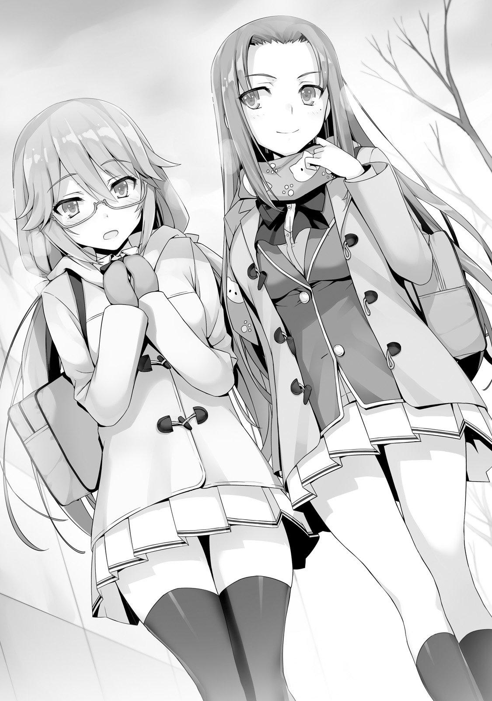
— Tampoco lo manejo bien...
— Para mí, el frío es un poco mejor porque eso significa que no voy a sudar tanto durante las actividades del club.
Entre nosotros, Akito es probablemente el único que prefiera el invierno.
— Parece que va a hacer frío otra vez a partir de mañana.
— Ya veo. Eso significa que tendré que hacer varias preparaciones. Creo que mis gastos van a aumentar.
Cuanto más nos acercamos al final del año, básicamente comenzará a nevar más y más. Como estábamos charlando, el ritmo de nuestro grupo disminuyó y pudimos escuchar una voz detrás de nosotros.
— Gracias por acompañarme hoy, Sakayanagi-san.
— No, no. El placer es todo mío.
Esa pequeña conversación. Cuando volteé, vi a un dúo inusual: Ichinose y Sakayanagi.
Al darse cuenta de nuestro grupo, Ichinose levantó la mano y nos saludó.
Sakayanagi no me miró en particular sino que simplemente reconoció a nuestro grupo como un todo. A pesar de hacer algo parecido a declararme la guerra, todavía no ha dado señales de hacer un movimiento desde el festival deportivo.
Sin embargo, pase lo que pase, el deseo de Sakayanagi tampoco se hará realidad en el futuro.
— Ese es un grupo bastante inusual, Ayanokouji-kun.
— ...¿De Verdad?
Esa es mi línea, no importa cómo lo mires.
Clase A y Clase B. Pensar que las líderes de clases opuestas estarían juntas en un fin de semana.
— Por lo que veo, estás mayormente con Horikita-san, así que todo esto me parece un poco nuevo.
Ichinose dijo eso mientras miraba a los miembros del grupo.
— Hablando de eso, ganaron a la Clase C en el examen el otro día, ¿no?
Felicitaciones.
Los resultados del Paper Shuffle se anuncian a todas las clases.
Por supuesto, eso también se aplica a los resultados del enfrentamiento entre la Clase A y la Clase B.
— Aunque perdimos---
— Hubo solo una diferencia de dos puntos entre nosotros. Creo que estábamos igualados.
En respuesta a esos resultados, Sakayanagi agregó eso. Las dos clases superiores tuvieron un magnífico enfrentamiento, pero parece que la Clase B no pudo alcanzar a la Clase A, por lo que la Clase A acaparó el primer puesto.
Definitivamente ampliaron la distancia.
El hecho de que ganó la Clase D significa que puede convertirse en la Clase C
a partir del tercer trimestre.
— También tenemos que estar en guardia, o la Clase B también podría ser superada.
— Por supuesto, tenemos la intención superarlos.
En respuesta a la risa burlona de Ichinose, Keisei intervino seriamente.
— Y, finalmente, nos convertiremos en la Clase A.
Cuando Keisei dijo esas palabras, Sakayanagi cerró los ojos y se rió débilmente.
Keisei no pensó mucho en este comportamiento, pero todavía somos la Clase D
en este momento. Debería saber que actuar duro aquí es algo sin sentido.
Sin embargo, debería decir que la alineación no es muy buena porque ninguno de nosotros es particularmente amigable con Ichinose. Además de eso, dado que no somos del tipo de hacer charlas o sonrisas forzadas, la conversación terminó por detenerse. Ichinose se dio cuenta de que no son bienvenidas aquí.
— Jajaja, ¿podríamos estar molestándolos? Nos vemos luego.
— Por favor, discúlpenos.
Sakayanagi, sin hablarme ni mirarme una vez, siguió a Ichinose y se fue. Parece que ella no se equivocará y dejará pistas.
— Son rivales, ¿no? Esas dos, quiero decir.
— Dejando de lado si esa es la forma adecuada de describirlas, no hay duda de que son enemigas.
Keisei levantó sospechosamente sus gafas y miró sus espaldas.
— Como se esperaba de Ichinose, ¿no creen?
Ya es un hecho bien conocido que Ichinose es alguien que puede hacerse amiga de cualquier estudiante.
— Cómo debería decirlo, Ichinose-san realmente es estupenda.......
Airi murmuró.
— Como compañera, no me gusta.
— Haruka, ¿odias a Ichinose?
— No la odio particularmente. Por supuesto, tampoco me agrada. Es solo, cómo debería decirlo, ella es demasiado perfecta en todo y demasiado ideal. No hay encanto en eso a menos que haya un par de debilidades,
¿no creen? Supongo que debería decir que espero que esté realmente podrida por dentro......
— Tienes un punto. No tener debilidades en absoluto la hace parecer espeluznante. Pero creo que esperar que esté realmente podrida por dentro es ir demasiado lejos.
Akito asintió, como si estuviera de acuerdo con los puntos que Haruka mencionó.
— Eso es cierto, pero lo que estoy diciendo es que ser perfecto e impecable es patético, incluso en los mangas.
Metiendo sus manos dentro de su bolsillo, Haruka miró la espalda de Ichinose.
— Realmente... podría querer que una persona así exista. Porque si Ichinose-san es realmente una mala persona, como dijo Haruka-chan hace un momento, nadie lo creería.
Como si prefiriese que no fuera así, Airi parecía ansiosa.
— Supongo que sí. Probablemente haya una persona increíblemente perfecta y amable en algún lugar del mundo. Es posible que no seamos conscientes de que está cerca.
Haruka agregó eso.
— Vamos a ser la Clase C pronto. Cuando eso suceda, Ichinose se convertirá en nuestro próximo enemigo. Y cuando eso ocurra, se convertirá en un enemigo que debemos vencer sin importar nada. Creo que es mejor no defenderla demasiado.
Keisei tiene razón. Si Ichinose es una persona honrada, eso haría que la lucha sea mucho más difícil para nosotros.
Si eres alguien abiertamente malvado, como Ryuuen, entonces nadie se molestaría en sentir algo innecesario por ti. Sin embargo, en el caso de Ichinose, me pregunto si nuestra clase puede ir en contra de ella sin contenerse.
— ... Hay muchas dificultades por delante, ¿eh?
Si somos promovidos a las clases superiores, inevitablemente enfrentaremos esa pelea. Probablemente también nos ataquen por detrás Ryuuen y los demás, que tratarían de recuperar su posición.
Todavía no está claro qué sucederá en el futuro con la relación de cooperación entre Horikita e Ichinose.
Idealmente hablando, mantendríamos nuestra alianza con Ichinose y los demás y pondríamos bajo asedio a la Clase A. Y luego terminaremos la alianza cuando nuestra clase e Ichinose hayan ascendido a la Clase B y Clase A, respectivamente.
Por supuesto, dudo que las cosas sean así de simples.
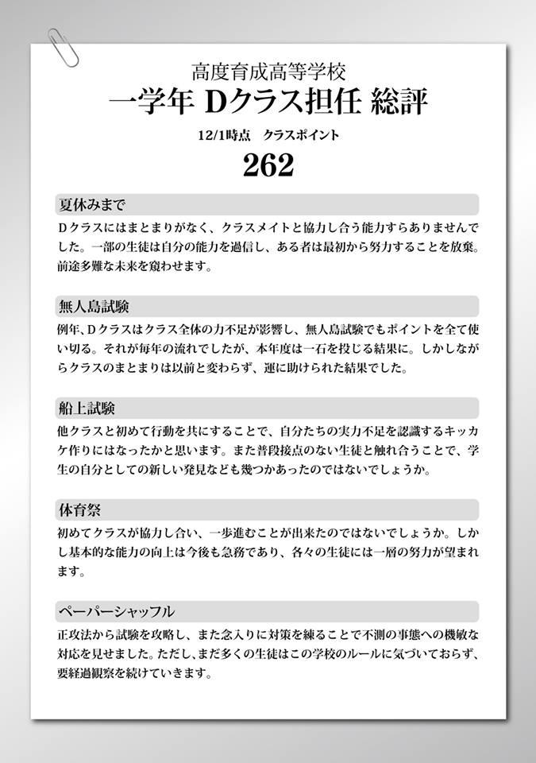
DISPARATE
En cierto día antes del comienzo de nuestras vacaciones de invierno.
Un gran huracán cayó sobre la Clase D. Sucedió justo después de que Chabashira-sensei dio la señal de que la clase había terminado. Las puertas de nuestro salón de clases se abrieron y los estudiantes de la Clase C aparecieron, incluido Ryuuen.
La clase estaba bastante alborotada por esta visita inesperada. Chabashira-sensei los miró brevemente, pero inmediatamente abandonó el salón. Sería una historia diferente si una pelea estuviera a punto de estallar, pero no hay nada de malo en que estudiantes de una clase diferente hagan una visita.
Después de haber estado atentos a la Clase D mediante la utilización de esas medidas indirectas, y aún sin haber obtenido las respuestas que buscaban, Ryuuen y los demás finalmente se han mostrado.
¿O tal vez una estrategia más allá de mi comprensión está en marcha desde las sombras? De todos modos, no se puede negar el hecho de que han optado por ir con una estrategia de ataque frontal. Horikita, que estaba a punto de irse, se detuvo y miró a los estudiantes de la Clase C.
Los que se presentaron eran Ryuuen, Ishizaki y Yamada Albert. También Komiya y Kondou.
Es comprensible que la clase esté tensa con todos estos luchadores reunidos.
— ¿Qué demonios? Esto es la Clase D.
El primero en reaccionar a Ryuuen fue Sudou. Su tendencia a buscar pelea puede haber sido un factor, pero también puede ser una reacción puramente defensiva evitar que jueguen con él como antes.
Y lo más importante, tiene que proteger a Horikita. Esos sentimientos puede que tengan prioridad. Sudou inmediatamente se levantó y se acercó a Ryuuen. Al ver eso, Hirata entró en pánico y se interpuso entre ellos temiendo un conflicto.
— ¿Tienes algún asunto con nuestra clase, Ryuuen-kun?
Como Hirata era incapaz de comprender la situación y le preguntó eso, Ryuuen respondió extravagantemente.
— ¿Hay alguna razón por la que no pueda pasar por la clase de un colega?
Es algo que sucede en todas las escuelas, ¿no? Ir a una clase que no es la tuya para visitar a un amigo. ¿Por qué tienen tanto miedo?
Las primeras palabras que pronunció sonaron como provocación, pero Hirata respondió con calma a esa actitud de alta presión.
— Normalmente hablando, sí. Pero ¿no crees que las circunstancias en esta escuela son algo diferentes? Al menos, nunca antes has visitado la Clase D.
Hirata intentó suavizar las cosas al tratar esto como una emergencia a lo mucho.
— Hemos estado distanciados hasta ahora. Pensé que este era un buen momento para actuar más agresivamente.
Puso una mano sobre el pupitre de una chica cercana y sonrió, mostrando sus blancos dientes.
— De verdad que ustedes estuvieron bien durante el examen Paper Shuffle.
Gracias a eso, la Clase C perdió. El resultado aún no se ha decidido, por supuesto, pero ustedes pueden convertirse en la Clase C a partir del tercer trimestre. Muy impresionante.
— Heh. Eso solo significa que eres un incompetente jefe simio, ¿verdad?
Baja a la clase D.
Hirata detiene asustado a Sudou cuando dispara aleatoriamente desde el costado.
— Nos esforzamos por hacer un progreso constante.
— Esfuerzo, ¿eh? Sudou, que parece completamente ignorante de ese concepto, aún parece estar por aquí, así que es un poco desconcertante.
Pensé que sería el primero en abandonar la escuela.
— ¿Así que finalmente has recordado mi nombre?
Sus ojos se encontraron y se miraron. Varios de nuestros compañeros de clase que estaban a punto de irse también se congelaron con esta situación.
— ¿Podrías decirnos qué es lo que realmente buscas?
Desde la perspectiva de Hirata, él quiere resolver esto lo más rápido posible, así que quiere evitar estar atrapado en el ritmo de Ryuuen. Sin embargo, es mejor asumir que actúa deliberadamente de esa manera.
— Les estoy dando una advertencia total a los muchachos de la Clase D.
— ¿Advertencia? ¿Qué quieres decir?
— No tengo intención de explicárselo a alguien que no lo entiende. ¿O
simplemente estás fingiendo no entender?
A primera vista, parece una provocación para Hirata, pero eso no es realmente lo que es. Ryuuen apenas mira a Hirata, había estado mirando a toda la clase.
Si esas palabras no fueron pensadas para Hirata, entonces quizás sean para Keisei o para mí, o quizás para Akito y los demás. Pero él solo estaba mirando ligeramente a su alrededor.
En última instancia, fue una persona inesperada que llamó la atención de Ryuuen.
Esa persona ni siquiera se dio cuenta de que lo estaban mirando, o más bien, no le importaba en lo más mínimo e hizo los preparativos para irse. Y luego se movió para dejar el aula.
Incluso cuando nadie más podía moverse en presencia de Ryuuen, actuó como si fuera solo otro día normal. Riendo débilmente, Ryuuen miró ligeramente a sus hombres detrás de él y les dio la señal mientras salían del aula de inmediato.
Parece que ese estudiante es su objetivo.
Cuando Ryuuen y los demás cerraron la puerta detrás de ellos, la atmósfera tensa se disipó y nuestros compañeros de clase una vez más se alteraron.
— Oye, oye, ese tipo Ryuuen parecía que estaba a punto de hacer algo increíble. Es como si no lo pudiera creer, ¿verdad?
— Más bien, probablemente le harán algo a Kouenji, ¿o no?
Es verdad. Al que buscaba Ryuuen es Kouenji Rokusuke, el individuo poco convencional de la Clase D. Y con Ike y Yamauchi en el centro de todo, varias teorías comenzaron a desarrollarse.
Pero en estos días, Kushida realmente está manteniendo un perfil bajo. Sé que se debe a su derrota contra Horikita, pero ha dejado de tomar un papel activo.
Por supuesto, no es que ella se haya quedado en completo silencio. Incluso ahora, está hablando de Ryuuen con las otras chicas, pero no se involucró ni un poco. Y Horikita es Horikita, no dijo nada acerca de Kushida.
— ¿Qué pasó justo ahora? ¿No es esto malo?
Horikita me preguntó eso mientras pensaba en algo que no estaba relacionado con Ryuuen. Incluso para Horikita, que desea evitar cualquier relación con la Clase C al máximo, parece ser un asunto urgente.
— Tal vez.
Parece que Ryuuen tiene asuntos con Kouenji, pero eso también es desconcertante.
Kouenji emite una vibra misteriosa. Sin embargo, aún desde el exterior, no debería parecer que Kouenji esté haciendo un movimiento dentro de la Clase D.
Puede que haya una razón detrás del por qué está yendo descaradamente detrás de Kouenji mientras vigila a tanta gente.
— Kiyotaka, ¿por qué no vamos a verificar la situación?
Akito es quien dijo eso.
— Esto de ahora, eran demasiada gente. Tal vez estén planeando hacer algo.
— Supongo que sí... aunque haya gente alrededor no es una garantía absoluta.
Si, en caso de que Kouenji fuera agredido, la Clase D terminará asumiendo la responsabilidad de no haberlo evitado. Y ser penalizada por la escuela no es el único problema.
Lamentarás no estar allí para ayudar. Cuando salí al pasillo con Akito, Keisei también me acompañó.
— Yo también iré. Cuantas menos personas haya, más peligroso será.
Después de un ligero retraso, Horikita también nos siguió y Sudou también se unió a la persecución. Hirata también salió del aula con expresión preocupada.
Aparentemente, hoy va a ser un día tormentoso. Le pedí a Keisei y Akito que esperaran y luego hablé con Hirata.
— Hirata, ¿no deberías quedarte? Si estudiantes más enérgicos como Ike y Yamauchi acaban siguiéndonos, puede terminar causando un alboroto más grande.
— ... Tienes razón. Pero, me pregunto si Kouenji-kun estará bien......
— Horikita también se dirige hacia allí. Keisei y Akito están conmigo. En el peor de los casos, si está a punto de estallar la violencia, me pondré en contacto contigo.
— ¿Keisei-kun? Bien, entiendo. Por favor, asegúrate no sobrepasarte.
Hirata se sintió confundido por el nombre “Keisei”, pero no siguió con el asunto.
Regresó de inmediato a la inquieta aula de la Clase D.
— Esa fue la decisión correcta, Kiyotaka. Cuanta más gente, más problemático será. Además, en el caso de Hirata, es más adecuado para calmar a la clase.
Keisei asintió con la cabeza como si estuviera seguro de eso, tal vez él es el tipo de persona que va en contra de la corriente.
Ahora el problema es hacia dónde se fue Kouenji. Dentro del edificio de la escuela, Ryuuen y sus hombres no pueden actuar descuidadamente. Si van a atacar, será después de que salga, pero no puedo imaginar a dónde iría Kouenji.
— ¿Qué hace Kouenji generalmente después de la escuela?
— ...Ni idea.
— Yo tampoco lo sé.
Tanto Akito como Keisei inclinaron la cabeza, no tenían la menor idea.
— ¿No hay nadie familiarizado con los patrones de comportamiento de Kouenji?
Ninguno de nuestros compañeros de clase le han hablado mucho.
— En su mayoría se dirige directamente al dormitorio.
— ¿Cómo puedes saberlo?
— Veo que regresa con bastante frecuencia. De cualquier manera, será problemático si deja el edificio de la escuela. Antes que nada, debemos dirigirnos a la entrada.
Diciendo eso, nos dirigimos a la entrada.
Si sus zapatos todavía están allí, significa que todavía está dentro del edificio, y en ese caso podremos ganar tiempo.
Para no quedarnos atrás, mantuvimos nuestro ritmo.
— Algo grave como una pugna real podría estallar.
Sudou le dijo eso a Horikita mientras apretaba el puño.
— Deja de bromear. La violencia a gran escala entre la clase D y la clase C
no es cosa de risa. Más importante aún, ¿por qué me seguiste?
— ¿No es obvio? Porque estoy preocupado por Suzune. He oído rumores de que Ryuuen ataca incluso a las mujeres.
— No soy tan frágil como para necesitar tu protección.
— No digas eso.
Horikita no cambió su postura llena de optimismo de poder protegerse a sí misma. Como es competente en artes marciales, no necesita de un hombre. La muestra de masculinidad de Sudou también es en vano.
Pero Sudou es Sudou después de todo, así que probablemente ni siquiera considera la idea de que Horikita sea fuerte en lo más mínimo.
— Además, esto puede ser innecesario, pero hay una cosa más que tengo que agregar. ¿Qué hay de enfocar esas preocupaciones en las actividades de tu club?
— Está bien, te lo estoy diciendo. Todavía queda tiempo para la práctica.
Busquemos a Kouenji ya.
Incluso cuando ella trató de ahuyentarlo, Sudou se quedó pegado a Horikita.
— Dios mío... es difícil tener que moverse mientras llevas las semillas de problemas.
Ella le soltó un insulto sigiloso.
Si Horikita se lastima mientras está sola, Sudou definitivamente se enfurecerá.
Si eso sucede, se convertirá en un gran alboroto que hará que este parezca una broma.
Si las mismas personas pelean nuevamente, entonces ni la escuela ni el consejo estudiantil mostrarán misericordia. En ese sentido, hacer que Sudou nos acompañe debe ser la mejor opción.
PARTE 1
Al salir de la escuela, me dirigí hacia el camino arbolado que conduce al dormitorio. Como las clases acaban de terminar no hace mucho tiempo, apenas hay estudiantes a la vista. Sin embargo, había varios chicos de la Clase C a la vista. No la vi en el aula, pero parece que Ibuki de la Clase C también está con ellos.
Además de eso, pude ver la espalda de Kouenji desde lejos mientras se dirigía a al dormitorio solo. Aparentemente, van en serio acerca de atacar a Kouenji.
Cuando Ryuuen cerró la distancia, le dio órdenes a Ishizaki y lo hizo bloquear el camino de Kouenji.
— Parece que están aquí, al igual que lo pensó Suzune. Vamos a detenerlos.
Al verlos, Sudou le pidió a Horikita que emitiera su orden.
— Esperemos y veamos. Todavía no sabemos qué quiere Ryuuen-kun.
Al igual que el propio Ryuuen dijo antes, no existe una norma que prohíba a los estudiantes interactuar con otras clases y es común hacerlo. No hay nada que podamos ganar al interrumpirlos en esta etapa.
Mientras nos acercamos a ellos, observamos la situación.
— Oye, detente ahí mismo, Kouenji. Agrácianos un poco.
— ¿Qué pasa con ustedes? No recuerdo haber hecho nada para que me estorben así.
Como Ishizaki está en el camino, no puedo ver la cara de Kouenji, pero el tono de su voz es el siempre.
— No puedes decidir eso.
— Hmph. Definitivamente no eres tú quien lo hace.
Kouenji miró a su alrededor, el séquito de la clase C de Ryuuen. No hay un solo rastro de ansiedad o pánico reflejado en sus ojos.
— Me recuerdas, ¿verdad?
Con ambas manos en su bolsillo, Ryuuen se movió para pararse frente a Kouenji.
— Por supuesto que te recuerdo. Eres Delincuente-kun de la Clase C,
¿verdad?
— Me hice de la vista gorda en ese momento, pero hoy vienes conmigo, fenómeno.
— Disculpas, pero estaba bastante ocupado ese día —Se disculpó mientras cepillaba su cabello hacia atrás. No parecía una gran disculpa—. Pero no puedo fingir que no escuché eso. Por “fenómeno”, ¿quizás te estás refiriendo a mí?
— ¿A quién más se supone que se debe referir?
— Sin duda es una afirmación incomprensible, pero eso ya es cosa olvidada.
Porque soy una persona tolerante, ¿entiendes? Tengo una cita después de esto, así que terminemos esto rápidamente, ¿de acuerdo?
— Es una pena. Pero vas a tener que reprogramar eso.
— ¿Entonces no te retirarás?
— ¿Qué harás si no lo hacemos?
Kouenji se cruzó de brazos por un momento, como si lo estuviera pensando, pero luego los enfrentó de nuevo.
— Entonces tendremos que terminar nuestro asunto allí.
Kouenji señaló hacia un área de descanso a una pequeña distancia, tal vez determinó que no había escapatoria de esto o quizás no quería bloquear el camino para otros.
— No me podría importar menos dónde sea.
— Entonces puedes seguirme.
Y con Kouenji dirigiéndolos, se encaminaron al área de descanso al costado del camino. Sería una historia diferente si estuvieran en medio de un camino, pero si han ido a un área aislada, será difícil vigilarlos.
— Parece que deberíamos ir allí también.
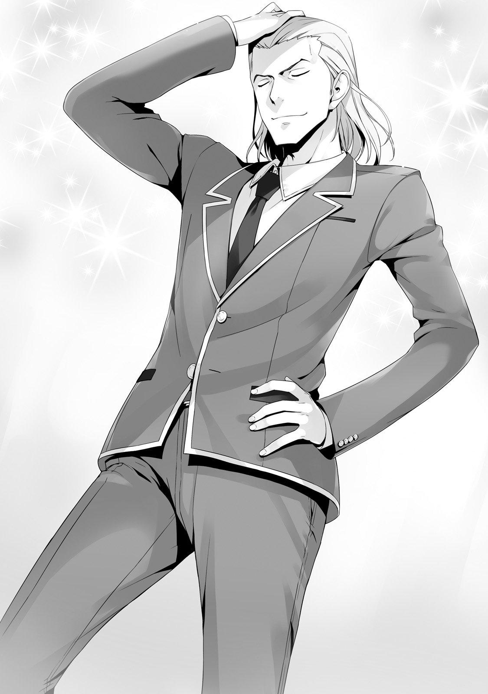
Después de escuchar eso, Sudou intentó atacar pero Horikita lo detuvo.
— Evita actuar violentamente y sin cuidado. ¿Entiendes?
— S-sí.
Sudou, habiendo sido advertido de nuevo, tomó la delantera junto a Horikita y se dirigió a Ryuuen y su séquito. Y un poco después, también no pusimos a la par de ellos.
Horikita inmediatamente comenzó a hablar con Ryuuen.
— ¿Qué planeas hacer aquí, Ryuuen-kun? Se convertirá en un gran problema si esto se sale de control.
— Kuku. Así que mordiste el anzuelo de venir aquí, ¿eh?
Se rió como si supiera desde el principio que alguien los seguiría. Luego, lentamente, miró a todos y cada uno de nosotros. Es cierto que atacaba a Kouenji, pero con toda probabilidad, esta es también una trampa destinada a reducir el número de personas para encontrar a la que está buscando.
Si eso no es así, entonces no hay razón para que marche la Clase C con sus lacayos siguiéndolo.
Su intención es similar a la de desenmascarar a su objetivo.
— Ayanokouji y Miyake, además de Yukimura, ¿eh? Bueno, por seguridad, supongo.
— También estoy aquí, Ryuuen.
Ryuuen ignoró a Sudou, quien estaba tronando sus nudillos.
— ¿Qué le pasó a Hirata?
— No tengo idea. No estás interesado en él, ¿verdad?
— Oh, por favor, ese tipo rebosa justicia, así que no sería extraño que estuviera aquí.
— Lo que estoy tratando de decir es que no debes asumir que todo saldrá de la forma en que lo pronostiques.
— Bueno, está bien. Por ahora, eso es.
Con la señal de Ryuuen, Ishizaki y los demás rodean a Kouenji. Viendo eso, Akito murmuró sin siquiera intentar ocultar su disgusto.
— Es como si fuera un emperador. Ordenar a sus compañeros de clase con una señal como esa.
— Lo siento, Miyake. Pero crecí así.
Poniéndose las manos en los bolsillos, Ryuuen se acercó a Kouenji.
— Espera.
— ¿Esperar?, ¿esperar qué? Como puedes ver, no estamos haciendo nada.
Por ahora, todavía tienen que poner un dedo sobre Kouenji.
— No me importa que causes líos, pero en ese caso, mi presencia no es necesaria, ¿me equivoco?
Kouenji se lo señaló a Ryuuen, quien no solo se interpuso en su camino, sino que ahora está hablando con otra persona. Ryuuen ignoró la advertencia de Horikita y se giró para mirar a Kouenji.
— Hablando de eso, hoy tienes el papel principal, Kouenji. Después de todo, me debes una.
— ¿Te debo una? No recuerdo tal cosa.
— Perdí algunos puntos, gracias a tus acciones cuando superaste el examen del zodíaco.
Él está bien informado. Me pregunto exactamente dónde escuchó eso.
— Ahh, te refieres a ese juego de mentirosos. Me disculpo si me he cruzado en tu camino.
A pesar de disculparse, Kouenji no parece sentirse en lo más mínimo arrepentido. Audazmente sacó un espejo de mano.
Seguramente es una acción incomprensible para la gente de Clase C. Cuando la Clase C lo miró con desconfianza, Kouenji cortésmente se los dijo.
— Hoy hace un poco de viento. Simplemente me estoy asegurando de que mi estilo agradable y genial no se vea afectado.
Volteó la cara hacia la derecha y hacia la izquierda varias veces para comprobar su apariencia.
— Hmm... está un poco desordenado y falto de gracia. Disculpa, pero ¿te importaría sostener el espejo un rato?
Diciendo eso, Kouenji le presentó su mano con el espejo al hombre parado frente a él, Ryuuen. Ryuuen aceptó el espejo con una sonrisa en su rostro.
— Puedes dirigir ese espejo hacia mí.
Kouenji dijo eso y sacó un kit gel para el cabello de tamaño compacto de su mochila antes de frotarse un poco con los dedos y usar ambas manos para peinar su cabello.
Desconcertada ante esta visión absurda, la Clase C ni siquiera podía interponerse. Sin embargo, un sonido intenso reverberó al siguiente instante.
Fue Ryuuen quien arrojó al suelo el espejo que recibió de Kouenji.
Y con la sonrisa habitual en su rostro, agarró el brazo de Kouenji.
— Ese acto de fenómeno, me pregunto cuánto tiempo puedes seguir así.
Mientras aún arreglaba su cabello con ambas manos, Kouenji dejó escapar un suspiro.
— Seguro que actúas como un delincuente. Ese espejo portátil es bastante caro, ¿sabes?
— Lo siento, se resbaló de mis manos.
— Fufu. Entonces no se puede evitar. En ese caso, suelta mi brazo. No puedo peinar mi cabello correctamente así. Por supuesto, soy un hombre que está bien incluso con su cabello desordenado.
En esta situación tensa, Ryuuen soltó lentamente el brazo de Kouenji. Este es un lugar donde actuar llamativamente conlleva un riesgo demasiado grande.
Pero este es el modus operandi habitual de Ryuuen, el de cazar a sus enemigos hasta el límite.
— Basta ya, Ryuuen-kun.
— Cállate, Suzune. Kouenji es mi compañero de juegos en este momento.
— ¿No estás atacándolo solo porque quieres? Él no quiere ser parte de esto.
Mientras recogía los fragmentos del espejo, Horikita miró a Ryuuen.
— Yo lo haré. Tus manos podrían lastimarse.
— Realmente no me importa. Sería más problemático si te lastimas porque tienes las actividades de club.
Al decir eso, Horikita rechazó la oferta de Sudou.
— No seas estúpida. No puedo dejar que lastime a una chica.
A la fuerza empujando a Horikita a un lado, Sudou comenzó a recoger los fragmentos.
— No te atenderé aunque te lastimes.
A pesar de que Horikita lo señaló, Sudou siguió recogiendo los fragmentos sin prestarle atención.
— Me preguntaba de qué se trata este alboroto, pero esta es realmente una alineación bastante interesante.
Y este incidente no terminó con solo la Clase D y la Clase C. Como si se sintiera atraída por el conflicto, Sakayanagi de la Clase A y su séquito aparecieron. Vi a Kamuro Masumi entre ellos, pero no sé los nombres de los dos chicos restantes, solo sus rostros.
— Sakayanagi, ¿eh?... es casi como si ella se hubiera sincronizado.
Se detuvo y golpeó ligeramente su bastón en el suelo. Ciertamente nos hemos convertido en una gran multitud.
Incluyendo a Kouenji, somos seis de la Clase D y cinco de la Clase C. Y cuatro de la Clase A. Un total de quince personas en esta multitud.
— Mi presencia aquí es pura coincidencia.
— No me hagas reír.
Es obvio incluso para Ryuuen que esto no es una coincidencia.
— Aun así, pensar que los principales miembros de la Clase C y los estudiantes de la Clase D estarían aquí. ¿Están manteniendo una discusión con respecto a su fiesta de Navidad?
— Retrocede, todavía no tengo ningún asunto contigo.
— No tienes que llegar tan lejos, ¿verdad? Si es una fiesta lo que estás planeando, cuantos más mejor, ¿no lo crees? Así que quizás me dejes unirme.
Pero Ryuuen no mostró signos de caer ante la provocación de Sakayanagi.
— Si te vas a quedar, no te metas en mi camino.
— Por supuesto, no haré nada para avergonzar al organizador de la fiesta.
Sakayanagi tomó su distancia y se sentó en un banco situado en el área de descanso. Y los tres estudiantes de la Clase A la rodearon por todos lados como si la protegieran.
Bueno, supongo que es poco probable que estalle la violencia en esta situación, pero... no hay cámaras de vigilancia en esta área.
Aun así, si miras a tu alrededor verás a estudiantes en su camino de regreso. No se sabe cuándo va a pasar gente por este lugar. Es difícil imaginar que ocurra una pelea a golpes aquí.
Hasta el momento, la persona en el centro de todo esto ha estado sonriendo sin miedo, Kouenji Rokusuke, abrió la boca.
— No me importa la multitud, pero ¿debemos ir terminando con esto? Si no planeas hacerlo, entonces me voy a ir.
— Espera un momento, Kouenji. Ryuuen-san acaba de decir que no te dejará ir esta vez.
— Lo siento, muchas cosas se pusieron en nuestro camino y nuestra pequeña conversación se estancó. Vayamos al grano.
Kouenji sonrió débilmente.
— Concluyo de esta situación que... estás obsesionado con derrotar a una persona que está causando problemas a la Clase C o una persona que ha formado una alianza con otra clase. ¿Estoy equivocado?
— Veamos, cualquier monstruosidad que no me guste es un enemigo a vencer.
— Y parece que una persona dentro de la Clase D te obstaculiza. Por lo tanto, estás intentando desentrañar la identidad de esa persona.
Kouenji parece entender lo esencial sin siquiera necesitar una explicación de Ryuuen. Algo inesperado del hombre que no lo le importa nada en lo que no esté interesado personalmente.
— Eso es completamente acertado.
— Entonces siento decepcionarme, pero no tengo ningún interés en el futuro de la Clase D ni en el futuro de ninguna otra clase. No he hecho nada notable en los exámenes previos y tampoco tengo ninguna intención de hacerlo en el futuro. ¿Es realmente divertido perder el tiempo con una persona así?
— Es gracioso, ¿te importaría explicar lo del examen del zodíaco? Los rumores se han extendido, ¿sabes?
— Bueno, bueno, eres bastante conocedor.
Durante el examen del zodíaco, Kouenji logró identificar brillantemente al
“objetivo” del grupo “Mono” al que había sido asignado. Pero incluso si uno se da cuenta de que la Clase D ganó únicamente con los resultados, es difícil identificar al alumno.
Él seguro hizo su tarea. O tal vez simplemente está adivinando que Kouenji había sido asignado al grupo “Mono”. Puede haber estado seguro de eso después de que Kouenji no negó su reclamo.
— Esa es solo mi forma de matar el tiempo. No podía soportar asistir a todas esas reuniones aburridas, así que decidí que acabar con todo eso sería el atajo hacia la libertad. Eso es todo.
Kouenji sacó su teléfono y lo cambió al modo de cámara para poder verse a sí mismo. Aparentemente, tiene la intención de usarlo como un espejo improvisado.
— Entonces eso significa que no podemos descartar la posibilidad de que hayas jugado un papel en los otros exámenes. En otras palabras, no hay garantía de que no seas el cerebro de la Clase D. ¿Verdad?
— Eso es cierto, pero si esa es la conclusión que sacaste, simplemente significa que eres un idiota cuyo cerebro solo da para esto.
Ishizaki intentó ponerse violento, pero Ryuuen se rió y lo detuvo.
Sin embargo, ese brillante contraataque es admirable. Si sigues insistiendo en que una persona no relacionada es la mente maestra, entonces eso no te convierte en nada más que un imbécil.
— Kuku, claro. Si dices la verdad, eso significa que eres una existencia completamente inofensiva.
— Sí. Me gusta cómo captas las cosas rápidamente, Dragon Boy.
Sakayanagi estalló en carcajadas ante la mención de Dragon Boy. Pero Ryuuen lo ignoró y cambió el tema por completo.
— Entonces, ¿qué harás si les digo a estos tipos que te linchen aquí mismo?
Como recompensa por el examen del zodíaco, simplemente porque sí.
¿Qué harás si intento someterte a una violencia sin sentido?
Horikita trató de reaccionar ante esta inquietante situación, pero antes de que pudiera hacerlo, Kouenji se rió.
— Justo ahora, esa es una pregunta sin sentido. No elegirán esa opción aquí.
No hay mucho que ganar del uso de la violencia en un lugar público como este, ¿no?
— Desafortunadamente, no me molesta mucho volverme loco incluso en un lugar inconveniente como este. Dejando a un lado los beneficios.
— Ya veo. Entonces déjame darte mi respuesta. Si escoges esa opción, eliminaré a todos los que vengan hacia a mí para proteger mi orgullo.
— ¿Estás diciendo que puedes hacer eso por tu cuenta?
— Para mí, es más difícil imaginar por qué no puedo.
Habiendo escuchado ese interesante intercambio, Sakayanagi sonrió desde lejos.
— Parece que hemos perdido nuestro blanco. No parece ser que Kouenji sea X. Es una locura a su manera. Parece que eso es todo lo que hay con él.
— Lo más importante es que hemos aclarado este malentendido.
— Déjame preguntarte algo, Kouenji. Los puntos de la Clase D están subiendo constantemente. Definitivamente hay alguien agudo detrás de todo esto. Si no eres tú, ¿quién diablos es? ¿Es alguien de esta chusma que nos siguió aquí como un montón de idiotas?
Por primera vez, Kouenji se volteó para mirarnos, solo una vez. Pero se burló, se encogió de hombros e inmediatamente perdió el interés.
— No me importa responder esa pregunta, pero---
— ¿Puedo hablar un momento?
Sakayanagi habló mientras todavía estaba sentada en el banco, cortando a Kouenji.
— Ese es un tema interesante del que hablas. Algo sobre un estudiante de la Clase D metiéndose en el camino de la Clase C. He escuchado rumores de que Dragon Boy-san está buscando a esa persona, pero entonces ¿los rumores son ciertos?
— Te dije que te callaras, Sakayanagi. Y también, si vuelves a llamarme así, te mataré, ¿entiendes?
— Fufu. ¿No te gusta? Creo que es un nombre maravilloso. Mis disculpas, simplemente parecía que algo que no podía comprender estaba sucediendo.
Una leve risa siguió. Y Sakayanagi continuó hablando sin prestar atención a eso.
— ¿No es solo que tu plan fue destrozado por alguien de la Clase D? Esta es una de las piedras angulares del conflicto entre las clases en esta escuela.
Tampoco es raro que te interpongas en el camino otras clases, ¿o no? De hecho, tanto tú como yo hemos luchado exactamente así varias veces. No sé quién es esta persona, pero ¿no crees que ocultar su identidad mientras pone en marcha las estrategias es una manera brillante de luchar?
¿De verdad te estás desviando tanto para interrogar de esta manera a un estudiante que no está relacionado? Para ser sincera, desde mi punto de vista, esto es simplemente patético.
— Admitiré que mi plan fue destrozado por X, pero ese no es el problema aquí. Solo hago esto para atraer a esa persona que se escabulle en las sombras. Ese es el tipo de juego que es.
— Ya veo. Entonces, ¿cometer actos de extorsión como este también es parte de tu plan?
— Así es, si es necesario voy a usar la violencia. Disfruto mi manera de hacer las cosas.
— En ese caso, no solo estás actuando patéticamente sino también revelando el alcance de tu incompetencia. He escuchado bastante de Masumi-san y Hashimoto-kun. Acerca de cómo tu estrategia en la isla deshabitada fue demolida. Si hubieras investigado apropiadamente, claramente deberías saber que Kouenji-kun no está relacionado. Lo primero es lo primero, me enteré que la que está detrás de los eventos de la isla deshabitada es Horikita Suzune-san. Me pregunto si esta misteriosa persona que estás buscando realmente existe.
Los ojos agudos y las palabras de Sakayanagi atacaron a Ryuuen.
— ... ¿Seguro que esto no es solo una excusa porque tu plan falló...?
Siguendo las palabras de Sakayanagi, uno de los estudiantes de la Clase A murmuró eso en voz baja.
— Eso es ir demasiado lejos, Kitou. Incluso Ryuuen no es tan estúpido.
El que siguió fue Hashimoto, creo que se llama así. Pero Ryuuen no mostró signos de estar alterado ante Sakayanagi y las provocaciones de su séquito.
Porque eso es algo que Ryuuen entiende mejor.
— Debes estar bromeando, Sakayanagi. Manipulé a Katsuragi para que firmara un contrato.
En lugar de refutar esa afirmación, cambió el tema. Es como si quisiera decir que ahora es su turno de atacar.
— ¿Contrato, dices? Sí, si mal no recuerdo, decía: “a cambio de la ayuda de la Clase C en la isla, puntos privados se pagarán como compensación”.
Para ser más específicos, existía la cláusula: “20,000 puntos cada mes hasta la graduación”, eso creo.
Sakayanagi también respondió sin vacilación a eso.
— ¿Eh? ¿Qué significa eso? ¿Qué han estado haciendo ustedes de manera furtiva? ¿¡Están bien con eso!?
Sudou ladró sus quejas.
— No hay problema por las reglas en general. Es algo en lo que nuestras clases estuvieron de acuerdo. Recibiríamos los puntos de clase que habrían sido de la Clase C y a cambio los compensaríamos... en otras palabras, solo le estamos devolviendo la Clase C los puntos privados.
Sabía que la Clase A y la Clase C se habían aliado durante el examen de la isla, pero no sabía qué trato habían alcanzado. Esto ciertamente es un trato que vale la pena. Utilizando todos sus puntos y dejando a la Clase A con 270 puntos que podrían usarse en la isla (menos los 30 puntos debido a la ausencia de Sakayanagi) mientras se demandan 20,000 puntos privados a cambio.
A primera vista, puede parecer que ganó la Clase C, pero lo importante es el liderazgo en los puntos de clase al final del examen. Porque lo que determina la clasificación de la clase es, después de todo, tus puntos de clase. Se puede decir que los puntos privados se te asignan como bonificación. Como resultado, Katsuragi puede haber perdido puntos, pero si no lo hubiera hecho, el resultado pudo haber sido el mismo, si no es que peor para la Clase A. Lo que quiero decir con esto es que la diferencia entre los puntos de clase es muy importante.
Si hubieran realizado el examen de la isla de la manera normal, entonces apenas les hubieran quedado puntos de clase y la diferencia entre ellos y la Clase B se habría reducido proporcionalmente.
Pero ¿por qué están revelándolo todo en un momento como este cuando lo han mantenido en secreto todo este tiempo? Seguramente es algo parecido a Sakayanagi intimidando a Ryuuen. Primero Ryuuen se burló de Sakayanagi y ahora es Sakayanagi devolviéndole el favor, es probable que deba interpretar esto así.
— No soy yo el que se meterá en problemas después de revelar esto, son ustedes. Otras clases sabrán que les hemos quitado 20,000 puntos cada mes sin excepción.
— Se extenderá lo suficientemente pronto si alguna vez quieres hacerlo. No tiene sentido preocuparse por ello. En primer lugar, quien concibió la idea del contrato fue Katsuragi-kun.
Como ella no estaba allí en la isla, no está relacionada con esto, Sakayanagi no tiene por qué preocuparse de que se filtre.
No, existe la posibilidad de que le dijera a la clase A de antemano no hacer nada innecesario, pero teniendo en cuenta cómo los dos estaban enzarzados en una lucha en aquel momento, tal vez deliberadamente los dejó esperando.
Es un hecho de que Katsuragi ahora está manteniendo perfil bajo, mientras que Sakayanagi domina la clase.
— Mierda, eso significa que la Clase C tiene subsidios mensuales garantizados.
— No caigas en eso, Sudou-kun. Son todos los puntos de clase que la Clase C debería haber recibido pero a los que decidió renunciar. No es como si hubieran obtenido algo de eso.
— ¿Eso es realmente así, Suzune? También podríamos haber ganado 200
puntos de clase en el examen de la isla, ¿sabes? Además de eso, la Clase A está pagando la factura y continuará haciéndolo para siempre a menos que pierda su posición.
— Estás equivocado. Es similar, pero lo que obtienes de ellos son puntos privados. Son fundamentalmente diferentes de los puntos de clase.
Si su objetivo es la Clase A, todavía tiene que ganar algo. En ese sentido, podrías decir que la observación de Horikita es correcta. Pero el hecho de que aproximadamente 800,000 puntos, dinero dicho en otras palabras, fluye de la Clase A a la Clase C es algo significativo.
Aunque la Clase C continúe perdiendo puntos de clase y terminen sin ninguno, por lo menos se les garantiza un subsidio mínimo. A pesar de ser perseguido por la facción Sakayanagi, la facción Katsuragi realmente les dio una ganga.
— ¿Ya terminaste de hablar? Parece que te gusta entrometerte demasiado.
No tengo intención de negarte eso, pero haré que dejes de molestarme más. Sería muy desagradable desperdiciar más tiempo escuchando tus opiniones sin sentido. Espera ahí, Kouenji. Todavía no me has dado tu respuesta.
Como si acabara de recordarlo, Kouenji miró hacia el cielo por un momento.
— Algo sobre una persona aguda en la Clase D, ¿no? Para ser honesto, no lo he pensado en absoluto... de cualquier forma, será mejor si no respondo.
Estás buscando esa respuesta incluso a riesgo de ti mismo. No estaría bien robarte ese placer. Simplemente estoy disfrutando de mi juventud en esta escuela. Eso es todo. Si esta escuela puede hacer que me emocione verdaderamente, sería una historia diferente, pero no creo que pueda esperar a que suceda. En ese caso, me enamoraré de las chicas guapas y aspiraré a mayores alturas. Y continuaré cultivando mi belleza. Eso es todo lo que hay.
— ¿Entonces estás diciendo que no participarás en el conflicto entre clases?
— Nunca lo hice y nunca lo haré. Eso es lo que te he estado diciendo desde el principio. Desde mi punto de vista, tanto la Clase C como la Clase A podrían ser lo mismo. La gente que está aquí ahora me aburre.
— ¿Qué demonios acabas de decir? ¡Ryuuen-san, este tipo se burla de nosotros desde hace tiempo! ¡Disciplinémoslo!
Después de haber sido menospreciado, Ishizaki levanta su puño contra Kouenji.
Pero el que actuó para corregir las palabras de Kouenji incluso antes de que Ryuuen pudiera hacerlo fue Sakayanagi, que no había hecho otra cosa que sonreír y burlarse hasta el momento. Parece que hay algo acerca de las palabras de Kouenji que no podía ignorar.
— No puedo fingir que no escuché eso. Dragon Boy-san es una cosa pero-Justo después de decir esas palabras, Ryuuen rápidamente cerró la distancia entre ellos y lanzó una patada sin contenerse.
— ¿¡Woah-!?
Hashimoto entró en pánico y se interpuso entre Sakayanagi y Ryuuen y bloqueó la patada con su brazo izquierdo.
Pero debido al poderoso impacto, Hashimoto salió volando y cayó sobre el concreto.
Si Hashimoto no se hubiera metido entre ellos, es muy probable que a Sakayanagi realmente le patearan la cara. Tanto Hashimoto como ese otro estudiante llamado Kitou se pusieron guantes blancos y asumieron una posición de combate contra Ryuuen.
— ¿Golpeé un nervio?
— Te dije que te mataría si volvieras a llamarme así.
— Ya basta. Su comportamiento ahora es un gran problema.
Después de presenciar el asalto, Horikita les dio una advertencia, pero Sakayanagi fue quien la detuvo.
— ¿Hubo un problema ahora, Hashimoto-kun?
— No, simplemente me caí solo.
Mientras sacudía la suciedad de su ropa, Hashimoto se levantó lentamente.
— Es lo que dice, Horikita-san.
— ... Estás loca, tú y Ryuuen-kun.
La clase A, bajo el liderazgo de Sakayanagi, no expresó una sola queja contra este acto de violencia.
Por el contrario, estaban más que dispuestos a echar tierra sobre esto.
— Debo disculparme, Ryuuen-kun. Te he molestado demasiado.
Después de disculparse, miró hacia Kouenji.
— Volviendo a nuestro tema inicial, ¿qué quieres decir con que toda la gente aquí, incluida yo, te aburre?
Para Sakayanagi, ese comentario hecho por Kouenji es más preocupante que Ryuuen que está frente a ella. Ryuuen también, habiéndose vuelto apático, se distanció de Sakayanagi.
— Lo juro, esta gente...
La agitación y exasperación de Horikita son comprensibles. Estas personas tienen algunas peculiaridades propias de cada quien.
— ¿Realmente no te gustó lo que dije, Little Girl?
Dirigiéndose hacia el banco donde Sakayanagi estaba sentada, Kouenji abrió la palma de su mano y la señaló.
— Kuku. Little Girl, ¿eh? Creo que es un nombre maravilloso.
Como si fuera una recompensa para Dragon Boy, Ryuuen se burló.
— Kouenji-san, ¿no? Estás equivocado en tu uso del inglés. No soy una Little Girl.
— Fu. Fu. Fu. Yo soy el que decide eso. No tú. No me he equivocado de acuerdo con las reglas de uso. El uso de las palabras “Little Girl” son apropiadas para tu edad y constitución, significa que te llamaré así.
— Ahí es precisamente donde te equivocas. De acuerdo con las reglas de uso, “Little Girl” es lo que usarías para referirte a niñas de primaria y a nadie más. Este mundo no existe solo por el hecho de permitirte hacer lo que quieras en él.
— Mi política es no ir de acuerdo al sentido común.
Se echó el pelo hacia atrás.
— ... Ya basta, Kouenji.
Kitou dio un paso adelante. Se movió para quitarse sus guantes blancos. Al principio pensé que era algo que usaba para protegerse del frío, pero ese no parece ser el caso.
— ¿Qué pasa con él? ¿Cree que un demonio saltará si se quita esos guantes?
— ¿Qué quieres decir?
Debido a que Sudou de repente dijo la palabra “demonio” terminé preguntándole acerca de eso.
— No lo sabes, es de un manga que solía ser popular en el pasado. Es ese manga donde se quitan un guante blanco, aparece un demonio y luchan contra los demonios.
Nunca había oído hablar de eso antes, pero de nuevo, nunca antes había leído manga.
— No tengo ningún asunto con la Clase A. Retrocede.
— Por favor, al menos permíteme corregir su tono.
— Fufufu, no es exactamente malo que todos peleen por mí, pero desafortunadamente cuando se trata de hombres y mujeres, solo me interesan aquellos mayores que yo.
Kouenji juega con los representantes de clase Sakayanagi y Ryuuen.
En cierto sentido de la palabra, el solo hecho de que el sentido común no se aplique a él lo convierte en el más fuerte. La “locura” también puede contar como una fortaleza junto a la violencia y la mentira.
— Me alegro de haberme encargado de ti hoy. Piérdete ya.
Incluso para Ryuuen, tener que lidiar con Kouenji debe ser agotador.
Sabiendo que no obtendrá más información de él, instó a Kouenji a que se fuera.
— Está bien entonces. Nos vemos.
Quizás el tifón resultó ser Kouenji en lugar de Ryuuen.
El incidente llegó a su fin y el silencio cayó sobre nosotros.
— Aparentemente el tiempo de visitas ha terminado. ¿Regresamos?
— Es mejor esperar al tercer trimestre, Sakayanagi.
— Si estás seguro de que te has ocupado de la Clase D, seré tu oponente en cualquier momento.
Dejando esas palabras atrás, los estudiantes de Clase A se fueron.
— ¿Nos vamos también, Horikita?
— Sí... tampoco puedo molestarme en lidiar con esto.
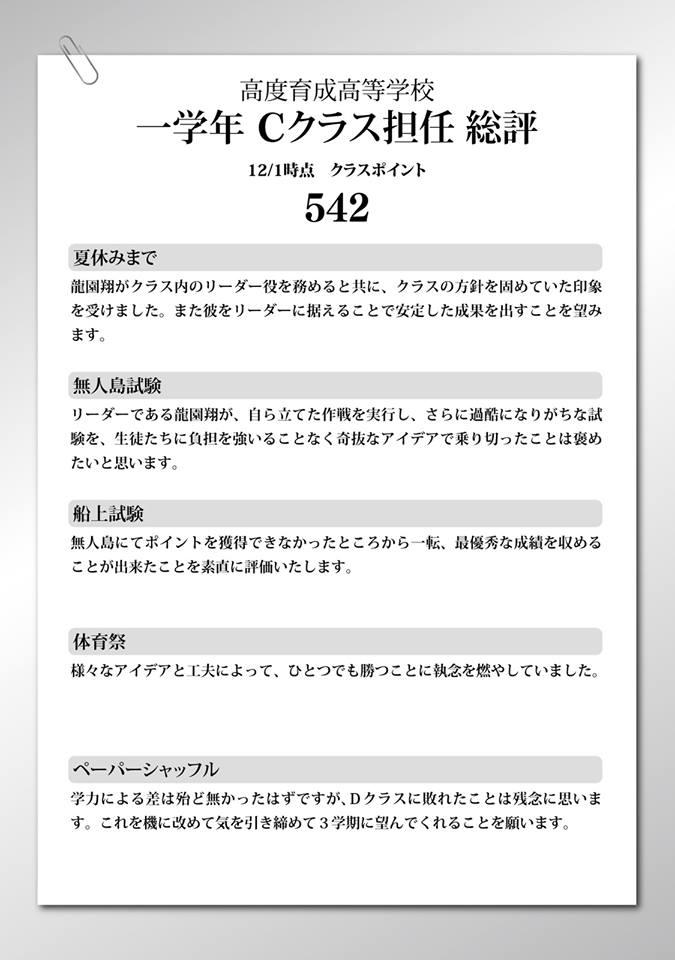
Sudou recogió la mayoría de los fragmentos del espejo y por ahora podemos decir que las cosas han vuelto a la normalidad.
— Pero parecía menos interesado en Kouenji de lo que esperaba...
Horikita detuvo a Sudou con una mirada.
— Ryuuen-kun, estás actuando fuera de lugar. Es un hecho que esto es bastante difícil de digerir.
— Entonces eso significa que estoy haciendo algo bien.
A pesar de que está siendo reprendido, Ryuuen no le prestó atención. Por el contrario, parece estar disfrutando cada vez más de la situación.
— Pude reducir bastante los candidatos hoy, Suzune. Con respecto a esa existencia que se arrastra detrás de ti.
— No tengo intención de escuchar lo que sea que tengas que decir. Es una pérdida de tiempo solo hacerte caso. Más importante aún, me gustaría que evites acercarte a nuestros compañeros de clase en el futuro.
— Soy libre de elegir acercarme o alejarme. No estoy rompiendo ninguna regla.
La persona que es la primera en romper las reglas usa dichas reglas como su escudo.
— Pero este juego terminará pronto. Estoy deseando que llegue el final.
Poniendo término a esto, Ryuuen miró a Sakayanagi y su séquito y luego se fue.
— Finalmente se fue. Regresemos. Por ahora, deberíamos poner a Hirata-kun al día.
— Pero ¿qué pasa con ese tipo Ryuuen? ¿Crees que quería probar algo?
— No tengo idea. No creo que haya nadie capaz de entender lo que quiere hacer.
Parece que los preparativos están completos en el extremo de Ryuuen. Muy consciente de eso, lo vi irse.
HORA DE UN ARREGLO
— Con esto concluye nuestra clase de hoy. Les hago un recordatorio, actúen como estudiantes dignos de esta escuela durante las vacaciones de invierno y no se excedan. Eso es todo.
Las palabras de Sakagami son bastante apreciadas sin importar cuán insignificantes sean. Saqué mi teléfono.
Finalmente ha llegado el día de mi ataque.
Hoy es la ceremonia de clausura del segundo trimestre. Todas las clases terminarán en la mañana y estaremos libres a partir de ahí. Tampoco habrá actividades de club y la escuela está incitando a los estudiantes a regresar temprano.
En otras palabras, no quedarán muchos estudiantes dentro del edificio de la escuela.
— He descartado aquellos que puedo descartar, pero aún quedan alrededor de 10 posibles candidatos.
Hay algunos de los que nunca he oído hablar antes, pero supongo que no hay nada de eso. Idealmente, no tendré que usar Karuizawa, pero como era de esperar, no pude seguir el rastro de X.
— Bueno, supongo que, por el contrario, esto significa que disfrutaré más.
Para ser sincero, ya tengo un blanco en mente, pero no tiene sentido reducirlo a eso en este momento. Más bien, sería mucho más emocionante confrontar a X
sin ninguna idea preconcebida. Hice cierto movimiento después del Paper Shuffle.
Utilicé hasta la última persona de la Clase C que pude y les di objetivos para que vigilaran.
Pero no es como si fuera capaz de descubrir la identidad de X solo haciendo que los sigan. Teniendo en cuenta el riesgo de que ocurriera otro problema a gran
escala, no hice que siguieran a los chicos y chicas más frágiles. Los que había que vigilar debían ser, como máximo, los delincuentes como Sudou o Miyake.
O alguien conservador como Hirata que por encima de todo teme que ocurra un problema. Pero eso predispuso a la gente de la Clase D a la amenaza que representaban mis acciones. Sin embargo, en el caso de Sudou, es más estúpido de lo que había imaginado, así que me forzó a provocarlo directamente.
De todos modos, el punto es hacerlos estar siempre conscientes de que estoy
“tras de ellos”.
Probablemente esa persona esté temblando de miedo todos los días.
Por el temor de que “su identidad sea expuesta”.
Hasta el momento, esa persona se ha escondido detrás de Suzune y obstinadamente sigue ocultando su identidad. En otras palabras, esa persona está aterrorizada de que salga a la luz el hecho de que es el titiritero en las sombras de la Clase D.
En ese caso, seguiré persiguiéndolo y luego lo arrinconaré. No hay forma de que no sienta miedo por eso. Y una cosa más, incluso le dije que atacaré a Karuizawa, sin embargo, no hizo ningún movimiento.
Esa persona debe haber estado al límite durante las últimas dos semanas más o menos. Sobre cómo exactamente voy a hacer contacto con Karuizawa. O sobre cómo voy a interrogarla. Probablemente hizo que Karuizawa le informara diariamente para verificar si ocurrieron eventos fuera de lo común. Se preguntará qué acciones tomaré para descubrir su identidad.
Ese debe ser, sin lugar de duda, el único pensamiento que pasa por su mente.
Es mucho más agotador de lo que suena y es una invitación a la confusión.
Será incapaz de sacar una conclusión racional sobre lo cerca que he estado.
Esa duda lo debe haber sacudido.
Y entonces--- hoy es el mejor día para arrinconar a X, ya que a estas alturas ya debe estar aterrado.
En el lapso de algunos minutos, más de la mitad de la clase se fue. El reloj del aula parece ir más despacio de lo normal.
Estudiantes yéndose uno tras otro.
— Kuku...
Sentí los latidos de mi corazón acelerarse. Han pasado muchos años desde la última vez que sentí este tipo de euforia.
Recordé la pregunta que Ibuki me hizo hace unos días.
Me preguntó por qué me tomaba tantas molestias, arriesgándome solo por encontrar a X. Ibuki dijo que no tiene sentido, incluso si encuentro a X. Sin duda tiene razón en que no hay nada más allá de descubrir su identidad.
Oh, ¿entonces fuiste tú todo el tiempo? Ella piensa que así es como va a terminar. Pero eso es cierto solo para las personas normales. He estado luchando contra la Clase D todo este tiempo pensando en una variedad de estrategias. Sé mejor que nadie que X posee una mentalidad similar a la mía.
Nunca antes había visto a una persona como yo.
Esa fascinación me ha hecho trabajar así.
Me pregunto cómo cambiaré cuando me encuentre cara a cara con X. Quiero saber qué es lo que desearé entonces. Podré ver a X que me mantuvo entretenido todo este tiempo.
Ese pensamiento hizo palpitar mi corazón, casi como la sensación que se siente al pensar en tu primer amor.
Haré cualquier cosa por esto.
El texto que envié a X esta mañana ya ha sido marcado como leído. No hay duda de que le llegó. Ahora que sabe lo que sucederá hoy, me pregunto qué tipo de estrategia tiene en mente X.
— Ryuuen-kun.
La que dijo mi nombre es Shiina Hiyori, quien lo hizo a mi lado.
— ¿Qué?
— Todo el mundo parece bastante inquieto hoy.
Dijo eso mientras miraba alrededor. Los estudiantes que se quedaron atrás se están moviendo cada vez más cerca de mí.
— ¿Qué piensas hacer después de esto?
— Voy a ver a la persona que me mantuvo entretenido durante los últimos meses. ¿Quieres acompañarme?
— No. Debo negarme. No veo lo divertido en eso......
Luego agregó como si se le hubiera ocurrido en el último momento.
— ¿Realmente tienes que cazarlo?
— ¿Eh?
— ... No, supongo que es algo que Ryuuen-kun decide como líder de esta clase.
Luego Hiyori comenzó a alejarse. Tal vez porque dijo lo que tenía que decir.
— Estaré en la biblioteca. Si tienes algún problema, contácteme.
— No es como si fuera de alguna utilidad.
— Supongo que sí. Felices vacaciones de invierno.
Hiyori, sin ninguna timidez, llevó la conversación a su propio ritmo y se fue.
Hiyori es aguda pero odia las peleas.
Pensé que podía manipularla, pero como sospechaba, no me sirve como peón.
Comparado con ella, los que obedientemente me siguen son mucho más útiles.
Terminé de hacer los preparativos y reuní a mis peones.
— Es hora, Ryuuen-san.
Ishizaki dijo eso bastante inquieto.
— Asegúrate de disfrutar esto.
Le entregué a Ishizaki una bolsa. Dentro están los artículos que necesitaremos.
También Ibuki y Albert se pusieron de pie. La cantidad no es importante aquí.
Solo traeré conmigo a los que necesito. Y a los que pueden mantener la boca cerrada.
Lo que estoy a punto de hacer es algo fuera de lugar en una escuela refinada como esta.
PARTE 1
Casi no queda nadie dentro del edificio de la escuela treinta minutos después de que terminara nuestra clase, ya que nuestras vacaciones de invierno acaban de comenzar. Tal como lo hicieron durante las vacaciones de verano, todos los estudiantes se fueron enseguida.
Casi nadie nos notó porque todos están ocupados yéndose.
— Así que... ¿a dónde vamos? Solo dinos ya qué es lo que vamos a hacer.
No dije una palabra de nuestro plan a nadie, incluida Ibuki. Ella y los demás solo saben que le ordené al grupo de Ishizaki que vigilara a Miyake y a los de su clase.
Es por eso que no tienen idea de por qué exactamente me acerqué a Kouenji.
La razón por la que mantuve mi silencio es porque quiero evitar que los espías dentro de la Clase C se involucren como Manabe y su grupo.
No hay duda de que esa persona también está haciendo todo lo posible para mantener oculta su identidad. Por eso guardé silencio sobre mi verdadero plan para acorralar a X con certeza absoluta.
— ¿Tienes curiosidad, Ibuki?
— Siempre me estás arrastrando. Y siempre estoy nerviosa por tus acciones imprudentes.
Ishizaki también hizo lo mismo y se me acercó. Quizás también tenga curiosidad sobre mis verdaderas intenciones.
— Recuerdas lo que te dije sobre Karuizawa, ¿verdad? Ella es la mujer que inició la cadena de eventos que llevó a Manabe y su grupo a convertirse en espías.
— Estás hablando de esa ruidosa mujer de la Clase D, ¿verdad? Al menos sé eso.
Como Ibuki se infiltró en la Clase D durante el examen de la isla, probablemente sabe más.
— Llamaré a Karuizawa a la azotea hoy. Una mujer que intercambió números con ella me dio su dirección de correo electrónico. Por supuesto, me aseguré de que ella supiera que soy yo quien le ha enviado ese correo.
Una mujer que intercambió números con ella... No fui tan lejos como para decir su nombre. Porque decidí que todavía no había necesidad de contarle a nadie sobre “Kushida”.
— ¿Eh? ¿En la azotea? No hay forma de que Karuizawa venga si tú eres el que la llama.
— Definitivamente vendrá. Si no lo hace, le dije que expondré su pasado.
Si el patético hecho de que ella fue intimidada en el pasado saliera a la luz, causará un gran escándalo. Si entiende que esto puede poner en riesgo su estatus social actual, entonces no tiene más remedio que aceptar el peligro y venir.
— Aunque Karuizawa llegue, ¿crees que te dirá la identidad de X?
— Supongo que lo normal sería que no lo hiciera.
X seguramente prometió proteger a Karuizawa de sus enemigos, incluidas Manabe y su grupo.
— Envié un correo a X también. Le dije que hoy llamaría a Karuizawa y le sacaría su identidad. Que usaría cualquier medio disponible para hacerlo.
Al hacerlo, no solo estoy amenazando Karuizawa sino también X.
— Pero... esa amenaza por correo que enviaste llegó a Karuizawa, ¿verdad?
¿Qué vas a hacer si ella solo informa eso a la escuela? X puede sugerir que haga exactamente eso.
¿Estás pensando hasta ese punto? Ibuki me miró como si intentara provocarme con eso.
— No lo hará. Si lo hace, entonces todo lo que tengo que hacer es revelar el pasado de Karuizawa. No importa lo que elija hacer, Karuizawa no tiene manera de voltear las cosas.
La única contramedida que pueden tomar es que Karuizawa o X me enfrenten directamente y me persuadan para que me detenga.
— El peor de los casos sería que X apareciera en lugar de Karuizawa. Pero eso también es emocionante. Ver lo que hará Karuizawa.
— Aunque no creo que el riesgo valga la pena...
— De ninguna manera. Destruir a Karuizawa significa destruir uno de los peones de X. Porque parece que ha estado haciendo buen uso de Karuizawa en sus astutos planes.
— ¿Cómo puedes saberlo? Entiendo que X amenazó a Manabe y su grupo para proteger a Karuizawa pero...
Aún yo, solo me di cuenta de que Karuizawa es un peón no hace mucho tiempo.
Solo llegué a esa conclusión porque me di cuenta de cuán desconcertantes eran ciertos aspectos del Paper Shuffle.
— Kuku. De todos modos, lo espero con ansias. Aparte de X, definitivamente verás a Karuizawa aterrorizada ante la perspectiva de que su pasado sea revelado.
— Si Karuizawa aparece en la azotea como dijiste... ¿qué vamos a hacer exactamente con ella? Como dije antes, ¿qué pasa si no podemos arrancarle la identidad a X?
Tanto Ibuki como Ishizaki parecen estar preocupados por eso, pero...
— De acuerdo con Manabe y su grupo, Karuizawa sufrió un acoso bastante severo en el pasado. Las personas que han sufrido un trauma severo tienden a perder todo control sobre su racionalidad cuando vuelven a estar en una situación similar. En ese caso, ¿por qué no simplemente reproducimos ese tipo de escenario para ella?: vamos a ir con todo y la
haremos sentir bienvenida. La seguiremos presionando hasta que nos dé el nombre de X.
— De ninguna manera... ¿realmente vamos a hacerle algo a Karuizawa? Esto es una locura.
— Esto es demasiado, Ryuuen-san. Ya tuvimos problemas con el caso de Sudou, así que si nos unimos para intimidar a una chica... quiero decir,
¡hay cámaras en la azotea y todo!
— Soy plenamente consciente de eso. Por eso he pensado en un plan.
Subí las escaleras que conducen a la azotea. A mitad del camino, volteé a mirar a Ibuki e Ishizaki que estaban unos pasos detrás de mí.
— Siéntete libre de correr si estás en contra.
— Yo-yo no correré. Te seguiré, Ryuuen-san.
— ¿Y tú, Ibuki?
— Voy a seguir tu estrategia de aquí en adelante. Pero si alguna vez siento que se está poniendo peligroso, me iré.
Después de todo, ella también siente curiosidad por X desde hace algún tiempo.
Hice que Ibuki e Ishizaki esperaran en la puerta que conducía a la azotea y tomé la bolsa de Ishizaki. Agarré las herramientas que necesitaba del interior de la bolsa y se la devolví a Ishizaki.
— ¿¡Esto es.....!?
— Espera.
Abrí la puerta de la azotea.
No hay muchas escuelas en las que se pueda acceder a la azotea durante todo el año, pero aquí hay una razón para eso. No solo hay cercas bien hechas, sino que también hay cámaras de vigilancia. Si alguien se involucra en un hecho problemático, definitivamente es grabado.
Por supuesto, los estudiantes son muy conscientes de esto y por eso se comportan en la azotea. Sin embargo, cada año esta azotea no es en una atracción muy popular. Esta escuela tiene cafés y centros comerciales, así como una gran variedad de otras atracciones populares.
Soy prácticamente el único que haría todo lo posible para venir aquí. Pero hay un límite en la cantidad de lugares donde pueden poner cámaras. Por encima de la puerta que conduce a la azotea. Eso es todo lo que hay.
Debido a que no hay muchos puntos ciegos en la azotea, una cámara es más que suficiente. Pero eso significa que si esa cámara deja de funcionar, estaremos libres de cualquier vigilancia.
Me puse de pie justamente debajo de la cámara de vigilancia y miré directamente a la lente. Luego apunté con un aerosol negro que había preparado de antemano y le disparé el spray.
La cámara en la azotea es el mismo tipo de cámara que las que están dentro del edificio de la escuela. Una cámara domo antivandalismo. La cubierta de la lente es de policarbonato flexible y un cuerpo de acero la protege contra actos de vandalismo.
Pero la violencia no es la única forma de desactivar una cámara de seguridad.
Una lata de aerosol es más que suficiente.
El spray se adherirá a la superficie de la cámara y ocultará su campo de visión.
No importa cuán resistente a los golpes pueda ser la cámara, no se podrá ver nada a través de ella.
— Ahora no hay nada que nos mire.
Había hecho una investigación anteriormente sobre qué tipo de sistema de monitoreo ha establecido la escuela.
De los cientos de cámaras instaladas dentro de la escuela, solo algunas de las instaladas en lugares vitales muestran imágenes en tiempo real. No hay manera de que puedan saber de esta situación anormal de inmediato.
Ya había pintado sobre una cámara de vigilancia en algún otro lugar hace un tiempo, se lo reporté a Sakagami y me penalizaron por ello.
Como resultado, me quitaron puntos para pagar el costo de limpiar la cámara y recibí una advertencia. Entonces pregunté si las imágenes se están observando constantemente o no.
Especialmente en un día como este donde todos los estudiantes se han ido. La escuela se verá obligada a bajar la guardia.
— Albert. Te quedas esperando abajo de nosotros. Deja pasar a Karuizawa cuando venga. Y si alguien inesperado... como los profesores vienen, entonces llama a mi teléfono de inmediato.
Albert asintió en silencio y bajó las escaleras.
Hice que montara guardia por si acaso, de modo que pudiera responder a cualquier desarrollo imprevisto.
— Así que pintaste sobre las cámaras... ¿no es eso motivo de castigo?
— Sólo es una broma. No es gran cosa.
— Solo espero que Karuizawa venga como dijiste que lo hará.
— Vendrá. Es una cuestión de vida o muerte para ella. Definitivamente no lo dejará al azar.
Ahora solo tenemos que esperar hasta que llegue el momento.
PARTE 2
Alrededor de las 2 de la tarde. Poco antes de la hora señalada, se abrió la puerta de la azotea y apareció una estudiante solitaria Apareció nuestra actriz principal del día, su cuerpo rígido después de bañarse con el frío aire.
— Kuku. Sabía que vendrías, Karuizawa.
Apagué mi teléfono y volví a meterlo en mi bolsillo. Ibuki e Ishizaki, que parecían ligeramente nerviosos, voltearon para mirar a Karuizawa.
— ... El correo que me enviaste esta mañana. ¿Qué quieres decir con eso?
— Llegados a este punto, seguramente no hay necesidad de preguntar. Es precisamente porque entendiste lo que significa que viniste.
Esto es lo que estaba en el correo que envié a Karuizawa.
[Manabe y su grupo me contaron todo sobre tu pasado. Ven sola a la azotea cuando acaben las clases. Si le cuentas a alguien acerca de esto, toda la escuela sabrá sobre tu pasado mañana.]
Al mencionar a Manabe y su grupo, Karuizawa comprendió el significado de esto.
No tiene otra opción que entender.
— ¿Supongo que te mantuviste callada acerca de esto como prometiste? No, no tenías otra opción que callar. Después de todo, no puedes permitirte el lujo de que alguien sepa sobre tu pasado.
Puede que se haya asustado e informado a X de su situación ya que él ya sabe de su pasado, pero eso no me importa. Como le dije a Ibuki e Ishizaki antes, ya le envié un correo a X.
Que hoy le daré sentencia a Karuizawa. Y que descubriré su identidad. Entonces no importa si Karuizawa le pidió ayuda o no.
— Pero pensar que en realidad viniste sola.
— Me dijiste que viniera sola, ¿verdad...?
— Kuku. Supongo que lo hice.
Por otra parte, no hay manera de que esa persona hubiera aparecido porque ha llegado a tal extremo para ocultar su identidad. Y Karuizawa no puede pedir ayuda a nadie más que a X.
Porque si lo hace, su pasado se revelará. Y lo mismo aplica para X, quien también mantuvo su identidad en secreto. En otras palabras, sus opciones son limitadas.
— Mira, no sé de qué se trata todo esto... pero hace frío, así que quiero terminar esto rápidamente.
Karuizawa se frota las manos. Pero no tiene sentido fingir que no sabe cuál es la situación.
— Entonces, ¿por qué viniste aquí? Podrías haberme ignorado.
— Eso es- porque no quería rumores infundados que comiencen a extenderse.
Está haciendo todo lo posible para parecer tranquila, pero es obvio que está mintiendo.
— ¿Rumores infundados?, aunque aquí todos lo saben, que antes, en tus días de secundaria solías ser víctima de intimidación.
— .......
Aunque trate de ocultarlo, se producirá un cambio en su comportamiento cuando se presente la verdad.
— Fue un golpe de mala suerte que Manabe y su grupo se enteraran. Si quieres culpar a alguien, entonces cúlpate a ti misma por no comportarte correctamente.
— ... ¿Qué estás buscando? ¿Estás diciendo que puedes ganar algo amenazándome?
— ¿Qué harás si te digo que solo estoy matando el tiempo?
A pesar de que tengo influencia sobre ella, Karuizawa ya perdió toda la ventaja que tenía.
— Si me haces algo... lo reportaré inmediatamente a la escuela.
— Vamos, viniste aquí porque eso no es una opción, ¿no? Sin pedirle ayuda a nadie.
— ... Ryuuen, ¿está realmente bien actuar de manera arrogante? Puede tener un as bajo la manga.
Ibuki parece sospechar que algo sucede sin que lo sepamos después de que ella apareció aquí sola.
— Karuizawa no puede hacer otra cosa que confiar en X. No es necesario ser tan cauto. Aunque grabe la conversación conmigo o la filme, no puede usarla como carta de triunfo. Porque más que nada, teme que su pasado sea revelado. Mientras nos aferremos a eso, no puede resistírsenos en absoluto.
— Pero---
— Es suficiente, solo cállate.
Ya sé lo que Ibuki está tratando de decir. Manabe y su grupo fueron amenazadas por la evidencia de su acoso a Karuizawa. Fueron forzadas a dejar de intimidarla y dar su palabra de que no dirán una palabra de eso a nadie.
Entonces fueron usadas. Obligadas a estrangularse, fueron manipuladas para dar información sobre la Clase C. En otras palabras, Ibuki teme que podamos ser amenazados a causa de pruebas.
Pero eso no sucederá
“El pasado en el que Karuizawa fue intimidada.”
Mientras sepa cómo usar esa arma, no hay nada que temer. En este caso, arrinconarnos significa también arrinconar a Karuizawa. Pero es un hecho que hay peligro en esto.
Una espada de doble filo. Si solo quisiera difundir el pasado de Karuizawa, entonces no hay necesidad de amenazarla así. Al usar la información que tengo en este momento para agitar las cosas, podré obtener cierto grado de logro.
Pero si lo revelo, entonces eso es todo.
Ya no podré usar esta espada de doble filo. Karuizawa sería destruida pero no llegaré a X. Lo que quiero es sacar de su escondite a la persona detrás de Karuizawa.
Como hice mi movimiento hoy, tengo que descubrir la identidad de X hoy. Para hacer eso, necesito averiguar qué tan profunda es la conexión entre Karuizawa y X.
— Vamos a dejar de andarnos por las ramas. Quieres ser liberada rápidamente. Entonces dime quién se esconde detrás de ti. Si lo haces, me mantendré callado sobre tu pasado.
— No sé a qué te refieres.
Pero Karuizawa está claramente más agitada que nunca. Karuizawa también sabe que estoy buscando a esa persona escondida en la Clase D. Aun así, probablemente no sabe que hemos descubierto su conexión con esa persona.
— X te salvó de Manabe y su grupo cuando te intimidaban, ¿verdad?
— ¿H-Huh? Eso no es verdad.
— No tiene sentido esconderlo ahora. También tengo algunas pruebas.
— ... ¿Pruebas?
Al parecer, X ha estado manteniendo a Karuizawa en la oscuridad más de lo que esperaba. Lentamente, presionaré a Karuizawa poco a poco sin dejar espacio para un error.
— ¿Cómo crees que X fue capaz de protegerte de Manabe desde la oscuridad?
— No sé. No estaba siendo intimidada aunque digas cosas como X......
— Bien, bien. Si no lo admites, entonces seguiré adelante y te diré mi conclusión.
Porque si no lo hago, Karuizawa no admitirá nada.
— X tomó ventaja de la debilidad del grupo de Manabe y les dijo que se comportarán si no querían que la verdad de su acoso saliera a la luz. Así es como las mantuvo en silencio.
Karuizawa solo me miraba sin decir nada.
— Kuku, ya veo... entonces sabes cómo X acabó con el grupo de Manabe.
— Yo-yo no he dicho nada.
— Ni una palabra, no. Pero tus ojos cuentan una historia diferente.
Continué.
— Si eso es todo, entonces es de esperar. Pero X no se detuvo allí, incluso hizo que Manabe y su grupo me traicionaran durante el festival deportivo,
¿sabes? Se volvieron sus espías y le dieron información. Por supuesto, con la amenaza de que expondría sus actos intimidación si no lo hacían.
— ¿Qué estás diciendo? En serio, no tengo idea de qué estás hablando...
— ¿Estás mintiendo? Parece que ya sabes lo que sucedió durante el festival deportivo.
No puede ser, ¿pero quizás existe la posibilidad de que Karuizawa no sepa la identidad de X? Si siempre usaban una dirección anónima para contactarla y le daban órdenes así, entonces...
No, no me imagino que Karuizawa obedezca las órdenes de alguien que le esconda su cara. Si realmente no sabe, entonces hubiera sido mejor para Karuizawa admitir la verdad hasta cierto punto y luego afirmar que no tiene conocimiento de su identidad.
Si va a negar todo, entonces es extraño, a menos de que haya una razón detrás.
— Lo único que quiero saber es la identidad de ese X quien me atacó. No me importa tu pasado. ¿No crees que lo más inteligente que puedes hacer es decirme su identidad?
— Mi respuesta es la misma sin importar lo que me preguntes. No sé nada. Y
hace mucho frío aquí...
Está usando ropa extremadamente ligera. Quizás porque no tenía la intención de quedarse aquí por mucho tiempo.
— Por supuesto, hace frío. ¿No quieres terminar las cosas aquí y volver ya?
— No tengo nada que decirte.
— Ya veo. Si vas a cubrir a X, entonces no hay forma de evitarlo. ¿Asumo que significa que estás bien con que tu pasado sea revelado?
— ........
Karuizawa está realmente atrapada entre la espada y la pared. Si la ataco, no tiene más remedio que guardar silencio. No importa lo que elija hacer, terminará convirtiéndose en enemiga de alguien. Podría profundizar en eso, pero es una pérdida de tiempo.
— No tiene sentido pensarlo. Esta no es una situación de la que podrás salir.
Está claro que tus opciones son limitadas. Y la opción correcta a elegir es darme el nombre de esa persona. Eso es todo lo que hay que hacer.
Al hacerlo, Karuizawa por lo menos podría proteger su secreto. En esta situación, la única forma en que puede salvarse es sacrificar a X.
— ... Si, si hay alguien detrás de mí como dices, no hay garantía de que el nombre que te digo ahora sea en realidad esa persona, ¿verdad? ¿Puedes confirmar la verdad?
Ishizaki intervino sin permiso, tal vez porque también está preocupado por eso.
— No hay forma de que podamos confirmar eso, Ryuuen-san. Es justo como dijo Karuizawa......
Al interponerse ahora solo dará como resultado una salida para Karuizawa.
Ordené a Ishizaki que se callara con una mirada. Ishizaki, dándose cuenta de que se interpone en mi camino, cerró la boca con una mirada de disculpa.
— ¿Qué harás si decido revelar tu pasado más tarde, después de descubrir que me mentiste?
— Eso---
— La única forma de salvarte es decírmelo todo.
Me reí, pero Karuizawa me miró con ojos firmes y objetó a eso.
— No soy estúpida. No importa si es mentira o verdad, eventualmente me amenazarás otra vez. Prefiero no ser tu herramienta cada vez que necesites hacer algo.
— Kuku. Supongo que sí. No hay garantía de que no te use como X usó al grupo de Manabe. Pero si es así, ¿qué vas a hacer?
— No diré que hay alguien detrás de mí y tampoco diré que no hay nadie.
Tampoco te daré algún nombre que se me ocurra. En otras palabras, no te diré nada.
Parece que Karuizawa concluyó que el silencio es la respuesta correcta. No es una mala opción pero difícilmente la mejor.
— ¿Y si te digo que expondré tu pasado si no dices nada?
— Piensas que hay alguien detrás de mí. Pero como no puedes llegar a la identidad de esa persona, y eliges acercarte a mí. Entonces dudo que tengas demasiadas ganas de desechar esta posibilidad tan fácilmente.
— Ya veo. Si revelo tu pasado antes de que pueda sacarte la respuesta, entonces no habrá ningún incentivo para que me digas algo, y mi búsqueda de X puede retrasarse.
Eso es lo que significa, Karuizawa está diciéndome eso mientras aparta los ojos.
— Personalmente, no tengo ningún problema contigo al no darme la identidad de X. Puedo tomarme mi tiempo. No tomaste en cuenta que todavía hay muchas oportunidades en el futuro para que pueda descubrir su identidad.
— Suponiendo que lance un ataque contra ti en el futuro, eso es. Si él sabe que estás tras su pista, seguramente se encargará de no dejar que se filtre su identidad, ¿no?
Ella es mejor de lo que esperaba. Una mujer ingeniosa y de lengua afilada.
Si la línea de pensamiento de X es similar a la mía, debo asumir que salvó a Karuizawa porque notó su utilidad debido a su alto estatus social dentro de la Clase D. Es una persona que no mira a los demás. En otras palabras, estaría bien incluso arrojando a Karuizawa a los lobos.
Por supuesto, no hay duda de que X está actuando para elevar a la Clase D, pero puede priorizar la seguridad de su identidad por encima de eso.
Si solo revelo el problema de la intimidación, entonces existe la posibilidad de que su identidad quede intacta justo como dijo Karuizawa. En la remota posibilidad de que X logre ocultar su identidad aún más, significa que mi diversión sería significativamente corta, ¿eh?
— No solo pensaste en una buena medida de defensa, sino que también has llegado tan lejos, ¿eh?
No puedo imaginar que Karuizawa haya venido aquí sin haber pensado en nada.
Existe la posibilidad de que haya recibido consejos de X pero... esa posibilidad es débil.
— ¿Lo entiendes ahora? ¿No crees que es mejor si me dejas ir?
Revisé la pantalla de mi teléfono. Pero no hay contacto de nadie. ¿El correo que envié a X falló? Por supuesto, sé que no será tan fácil desenmascararlo.
Supongo que llevaré las cosas al próximo nivel mientras me preparo para tomar algunos riesgos.
— Básicamente, solo necesito hacerte escupir el nombre de X, ¿verdad? Con toda probabilidad, si conoces su identidad, la mejor opción para mí sería sacártelo aquí.
Es tu culpa, X. Esto es el resultado de sopesar en una balanza tus opciones de salvar a Karuizawa u ocultar tu identidad.
— ... Si tu amenaza ha fallado, ¿cómo vas a hacer que hable?
— ¿No es obvio? La tortura es la forma tradicional de hacer que alguien hable.
— Ryuuen-san, ¿hablas en serio...?
— Ibuki, sujeta a Karuizawa.
— ¿Por qué yo? Podrías hacerlo tú mismo, ¿no?
Ibuki, que no está muy interesada en lo que vamos a hacer, desobedeció las instrucciones.
— Hazlo.
— No seré cómplice de esto. No importa cómo lo mires, esta apuesta es demasiado arriesgada.
— Eso es patético, Ibuki. Retroceder después de tantos fracasos. Lo importante es cómo puedes recuperar nuestra confianza.
Agarré el brazo de Ibuki y lo tiré firmemente.
— No te preocupes, me haré responsable de todo. Es por eso que no necesitas contenerte. Hazlo.
— Tch......
Una vez más le di órdenes a una Ibuki rebelde y le pedí que las llevara a cabo.
Mientras chasqueaba la lengua, Ibuki se acercó a Karuizawa.
— ¿Q-Qué?
— Tengo mis propios problemas aquí. Lo siento.
Ibuki maniobró rápidamente detrás de Karuizawa y sometió sus dos manos.
— ¡Ay!
Karuizawa gritó. A pesar de su renuencia, Ibuki sofocó completamente cualquier resistencia de Karuizawa. Al ser suprimida por alguien con experiencia en artes marciales como Ibuki, no hay nada que Karuizawa pueda hacer.
— Ishizaki, ve a llenar los cubos con agua. Comencemos con dos cubos. En este momento no debe haber nadie usando el inodoro un piso debajo de nosotros. Hay dos cubos que se usan para limpiar en el baño de los hombres.
— ¿Ehh? ¿Agua? ¿Para qué vamos a usarla?
— ¿También vas a desobedecerme?
— N-No, iré a buscar algunos de inmediato.
Ishizaki entró en pánico y pasó junto a Ibuki a pesar de que parecía estar a punto de caerse.
— Charlemos un poco más hasta que Ishizaki regrese, ¿de acuerdo?
— ¡No, déjame ir!
Karuizawa se resistió con todas sus fuerzas pero no pudo escapar del agarre de Ibuki. La razón por la que la estamos sujetando no es para evitar que escape, es una forma de amplificar su miedo por lo que está a punto suceder.
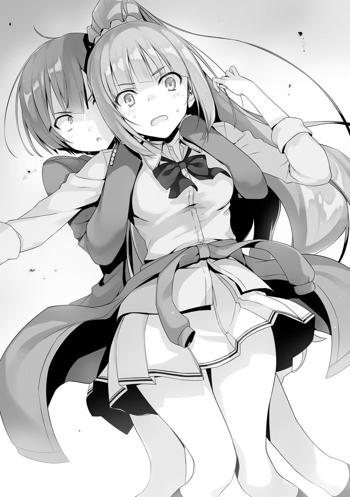
De hecho, Karuizawa está resistiendo desesperadamente y luchando hasta el final, quizá porque se dio cuenta de lo que está a punto de sucederle.
— ¡De verdad te reportaré si me pones un dedo encima!
— Kukuku. Eres bastante feroz, a pesar de haber venido hasta aquí. ¿Crees que X también te protegerá esta vez?
No importa cuántas veces le pregunte, ella me da la misma respuesta.
Obstinadamente se niega a reconocer la existencia de esa persona.
— Ésta solo es una hipótesis hecha por mí, pero ¿quizás X, que está ocultándose en las sombras de la Clase D, prometió protegerte en caso de una emergencia?
Los ojos de Karuizawa la delataron. A pesar de tratar de ocultarlo, no es tan fácil de hacerlo.
— Porque si ese no es el caso, entonces no tiene sentido. Tu personalidad arrogante hace que también le desagrades a las chicas de otras clases, así que existe la posibilidad de que seas objetivo de otras chicas además del grupo de Manabe.
Ibuki apartó sus ojos de Karuizawa para mirarme.
— Debes haber vivido todos los días aterrada de aquellos que sabían la verdad. Pero hasta el día de hoy, has logrado evitar que alguien descubra la verdad y has llegado hasta aquí sin haber sido intimidada. ¿A qué se debe eso? solo se debe a que la persona detrás de ti, siempre te cubre y te salva.
— ¿Y estás diciendo que ese es X?
Ibuki me preguntó.
— Por ahora pero, ese no fue siempre el caso, ¿verdad? Porque X solo se dio cuenta de la verdad cuando el grupo de Manabe hizo contacto con Karuizawa. Creo que... hiciste a Hirata tu novio para protegerte, ¿verdad?
Karuizawa abrió los ojos.
— N-No.....
— Eso es exactamente lo que pasó, ¿no? No me subestimes tanto, Karuizawa.
La miré a los ojos. Y sacó a relucir la oscuridad que acecha en su interior.
Seguramente X hizo lo mismo.
— ¡Ahh...!
Ella finalmente comenzó a mostrarme su lado lindo.
— ... Ryuuen, ¿cómo sabes todo eso?
Karuizawa no es la única sorprendida por mis palabras. Ibuki tampoco pudo resistirse a preguntar sobre ese misterio.
— Viene con la experiencia. Después de todo, he visto un montón de personas podridas a lo largo de mi vida.
— Huff, huff. L-Lo siento por hacerte esperar.
Ishizaki, quien corrió aterrado a buscar agua, regresó unos minutos después.
Cubos que estaban llenos al 80% de agua. Al ver eso, Ibuki me golpeó una vez más con una pregunta.
— Dijiste que había dos cubos, ¿no? ¿Cómo lo supiste?
— Ustedes ni siquiera saben cuántas cámaras de vigilancia están instaladas en esta escuela, ¿verdad?
— ¿Eh? No hay manera de que lo sepamos
— No sabrás si no las miras. Pero si has investigado, serás capaz de entender cualquier cosa con la que te encuentres.
Poco a poco, día a día, observaba dónde estaban las cámaras de vigilancia instaladas dentro de la escuela. Como resultado, también llegué a saber que hay dos cubos guardados dentro del baño.
— Una de las medidas que tomé para confirmar eso fue que Ishizaki y los demás atacaran a Sudou. Sin embargo, curiosamente, parece que hubo un testigo de la Clase D en ese momento.
La cara de Ishizaki se volvió compungida.
Si no hubiera habido testigos, la Clase C habría sido capaz de ganar más en ese incidente.
— Te lo dije, ¿verdad, Ishizaki? Que pase lo que pase nunca admitas que estás equivocado.
— S-sí... me acobardé por un momento en ese entonces y.....
Pero como resultado, Ishizaki y los demás fueron engañados por la cámara de vigilancia falsa y terminaron confesando.
— A primera vista, esta escuela parece funcionar con disciplina. Pero eso no es del todo cierto. Dependiendo de cómo lo manejes, también se puede permitir el uso de la fuerza.
Hay pistas diseminadas a lo largo de la vida cotidiana, dando a entender eso.
— Ustedes probablemente no lo entiendan, pero los más inteligentes están constantemente haciendo prueba y error.
Lo primero que hice después de inscribirme fue estudiar las “reglas” de esta misteriosa escuela y cómo “vencerlas”.
Una cosa más que hice después de inscribirme además de comprender el sistema fue medir la utilidad de los puntos privados.
— Por ejemplo, ¿alguna vez han sentido que el diseño de los exámenes es extraño? Independientemente de si se trata del examen de la isla o el examen en el barco o el Paper Shuffle. Si lo consultas con un alumno de último año, podrás descubrir qué se trata. A primera vista, uno pensaría eso. Pero aunque se lo preguntes, no hay un solo alumno capaz de contestar de manera satisfactoria. ¿Por qué cree que es así?
— ... Cada año, los exámenes son diferentes, por lo que existe la posibilidad de que las reglas sean diferentes.
— Sí. No es que los exámenes sean iguales todos los años. Pero estrictamente hablando, las reglas para cada “año escolar” son diferentes.
— ¿Qué quieres decir, Ryuuen-san?
Si puedes pasar el examen simplemente verificando con los alumnos mayores, entonces no es digno de ser un examen en absoluto. Simplemente se convertiría
en una carrera estúpida para ver quién puede adular más a los estudiantes mayores.
Para evitar que eso suceda, debes establecer reglas sólidas.
— ¿Qué pasa si hay una regla como “los estudiantes de segundo año y tercer año serán expulsados inmediatamente si dan a conocer el contenido de los exámenes”?
Independientemente de si el contenido del examen es el mismo o no, ¿qué pasaría si se preparan grilletes como esos?
— Eso significaría que nunca hablarán.
— Es cierto. Incluso si estudiantes menores les preguntan, no podrían responder. No hay manera de que esos tipos que pelearon durante todo un año mientras se arriesgaban a la expulsión corran el riesgo de ser expulsados por hacer comentario descuidado. De hecho, traté de negociar con algunos estudiantes de segundo año de la Clase D al ofrecerles puntos privados, pero nunca lo he logrado. Es una prueba de que hablar conlleva un riesgo considerable.
— Pero... quizás tengas razón. Komimya y Kondou también lo dijeron hace un tiempo. Cuando trataron de obtener pistas de sus superiores, nunca obtuvieron nada de ellos. Por el contrario, se sentía como si no debieran preguntar.
Es precisamente porque todos lo piensan que se siente como territorio prohibido.
Estrictamente hablando, existe la posibilidad de que haya reglas aún más detalladas pero eventualmente las comprenderemos.
— Justo como ahora, siempre he estado al límite de la legalidad.
Las cámaras de vigilancia, sobornar a estudiantes de último año, hacer un trato secreto con la Clase A. He trazado en detalle la línea entre lo que puedo hacer y lo que no puedo hacer.
— Hoy, lo que estamos a punto de hacerle a Karuizawa también es uno de esos experimentos.
Karuizawa comenzó a temblar por el frío.
— Un trauma es mejor evocado al experimentarlo en lugar de extraerlo a través de las palabras.
Según los testimonios del grupo de Manabe, incluso la feroz Karuizawa se callará inmediatamente. Señalé a Ishizaki con mis ojos. Ishizaki debe haber entendido lo que quiero que haga solo con eso.
Ibuki empujó a Karuizawa hacia adelante y luego se distanció. Y de acuerdo con mi orden, Ishizaki arrojó agua del cubo sobre la cabeza de Karuizawa.
— ¿¡…!?
Debajo del frío cielo invernal, el agua helada llegará incluso al núcleo de su corazón.
Karuizawa se derrumbó enseguida por la abrumadora conmoción y tembló.
Se abrazó con ambos brazos. Su anterior fiereza ha desaparecido por completo después de solo un cubo de agua.
— ¿Esto te hace recordar? El bautismo que recibiste en tu escuela anterior.
— ¡N-No.......!
Se tapó las orejas.
Como una niña pequeña asustada de un fantasma, seguía temblando.
— No me conformaré con esto. Voy a romperte por completo.
Saqué mi teléfono y comencé a grabar, luego agarré el flequillo de Karuizawa y lo levanté. Noté un líquido saliendo de sus ojos. En este momento, Karuizawa está reviviendo internamente cómo la intimidaban en el pasado.
— Esta es una grabación tuya siendo intimidada. Si no me dices algo, lo difundiré por toda la escuela.
Por supuesto que es mentira, pero Karuizawa ya no es capaz de tener pensamientos racionales.
— Vamos, llora. Grita. Muéstrame cómo pides perdón.
— ¡¡¡No, no!!!
No hay nada como excavar heridas profundamente esculpidas.
— No puedo ver esto... No debería haberte ayudado...
Ibuki desvió la mirada para escapar.
— Intimidar a los débiles es bastante divertido, no hay nada como esto para despertar tu corazón.
Recordaba a un grupo de personas que me atacaron hace mucho tiempo.
Hubo un tipo que lloró como un bebé cuando su arrogancia se volvió contra él.
Pero en el caso de Karuizawa, las cosas son un poco diferentes.
— A pesar de la intimidación abrumadora que recibiste en el pasado, lograste sobresalir valientemente en la clase D. Te felicito por eso.
A pesar de su debilidad, se destacó por sí misma al crearse una nueva personalidad. Mantuvo su posición hasta el momento al usar Hirata y al recibir la protección de X.
— Es más fácil decirlo que hacerlo, ¿sabes?
Si una víctima de acoso escolar se rompe una vez, esas raíces corren lo suficientemente profundo como para que pueda repetirse.
No se puede evitar porque esa es la clase de lección que el acoso te inculca.
— En cierto modo, puedes ser una mujer con el coraje suficiente para no perder contra mí.
Me agaché y continué burlándome de la temblorosa Karuizawa.
— Pero verás, no puedes cambiar la naturaleza humana tan fácilmente. No cambia. Eres el tipo de persona condicionada para recibir acoso escolar, no para hacer el acoso. Recuérdalo bien.
Recogí el otro cubo cerca de los pies de Ishizaki y esta vez, lo tiré en Karuizawa.
— ¿¡…!?
Conteniendo un grito, Karuizawa se acurrucó lo mejor que pudo.
— Ishizaki. Ve a buscar un poco más.
— S-sí.
Recogió los dos cubos del suelo y, una vez más, descendió de la azotea.
— ¿Quién es el que te protege suprimiendo al grupo de Manabe?
— ¡No existe esa persona...! ¡No existe esa persona, no existe esa persona, no existe esa persona!
Sacudiendo la cabeza, lo negó una y otra vez como si estuviera escapando.
— Kuku. Así que todavía lo estás escondiendo. Realmente eres valiente. No,
¿tal vez solo estás acostumbrada a la intimidación? Para ti, esto podría ni siquiera ser considerado como intimidación.
Agarré el brazo de Karuizawa y la levanté a la fuerza.
— ... No puedo ver esto.
— Aquí es donde comienza la diversión, ¿sabes?
— Esto es completamente desagradable.
Ibuki no se fue, sino que solo se apoyó en la puerta de la azotea mientras se negaba a participar en esto.
— Me iré después de confirmar la identidad de X.
— Eso está bien.
No estoy haciendo esto para entretenerte.
Voy a romper a Karuizawa para mi propio deleite.
PARTE 3
Me heló hasta lo más profundo.
El frío del agua que gotea de mi cabello. Me han arrojado agua cuatro veces. No solo mi uniforme sino incluso ahora mi ropa interior está empapada. Pero no es el hecho de que mi cuerpo tiemble por el frío lo que me aterroriza.
Es el frío lo que envuelve mi corazón.
Una oscuridad profunda y lo suficientemente negra como para hacerte aborrecer al mundo.
¿Por qué estoy siendo intimidada? Esos sentimientos cambiaron gradualmente.
¿Por qué sigo viva?
¿Qué hice mal?
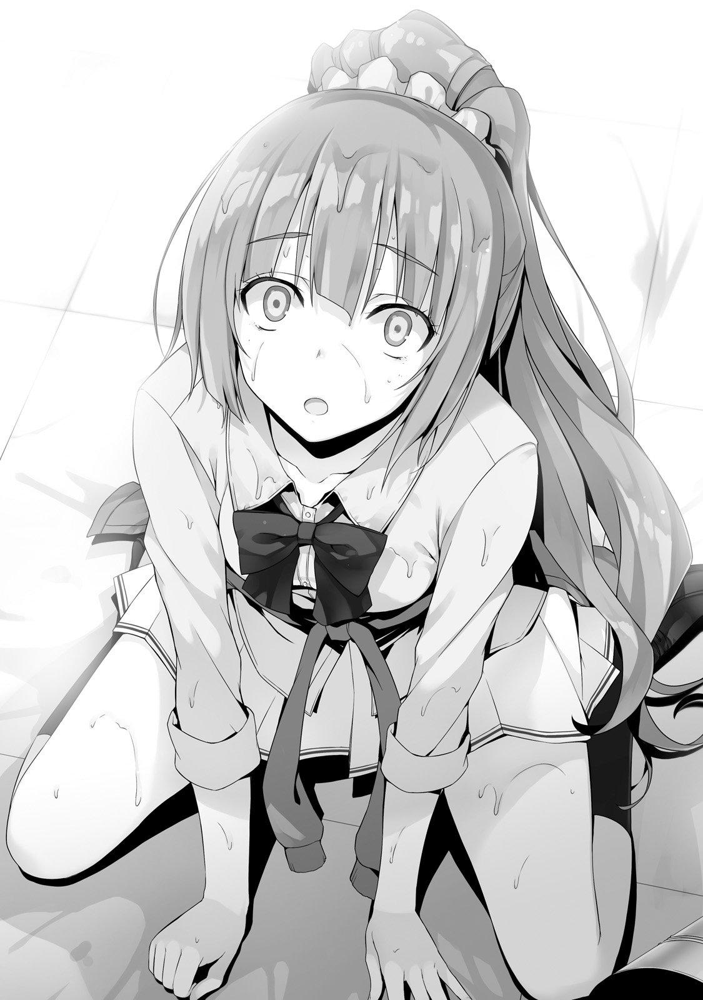
Empecé a culparme. Mi corazón congelado comenzó a devorar mi cuerpo.
Las cicatrices que corren profundamente comenzaron a doler nuevamente.
— Oye, sálvate, Karuizawa. No hay necesidad de sufrir más.
Delante de mí, Ryuuen se reía mientras me presionaba para que confesara.
Pero es un camino sin salida. Ya no puedo responder nada. Si le cuento sobre Kiyotaka, puede que me salve por un tiempo. Pero eso no significa que haya escapado para siempre.
No hay garantía de que Ryuuen no vuelva a usar la misma amenaza conmigo.
Puede aparecer nuevamente y ordenarme que venda a la Clase D. Es el peor de los casos, como los que se ven frecuentemente en los dramas.
Solo hay desdicha al final del camino para las personas que continúan traicionando a otros.
Si es así, pondré mi fe en las palabras de Kiyotaka, su promesa de que me protegerá.
Es... es la última línea de defensa que me protege de ser tragada por la oscuridad.
— Sé lo que estás pensando. Si revelas la identidad de X, perderás incluso la posibilidad de que siga protegiéndote. Una pérdida total de esperanza.
Podía escuchar el sonido de mis dientes castañeteando por el frío y el miedo.
Toqué desesperadamente el suelo para detenerlo, pero hace mucho que mi corazón dejó de escuchar.
Un recuerdo horrible me vino a la mente.
El pasado y el presente se superponen.
— ¿Quieres morir abrazando la esperanza? Para volver a cómo estaban las cosas, ¿estás realmente bien con eso?
Sus palabras me asaltaron implacablemente.
— X no es quien te va a salvar. Puedo salvarte si escupes su nombre.
Estoy asustada.
— Pero si te vas a oponer a mí, no tengo más remedio que atacar tu debilidad.
Sálvame.
— Voy a hacer una lista de todas las cosas acerca de ti y difundirla por la escuela.
Estoy asustada.
— Cuando eso suceda, ¿podrás mantener la calma y tu posición actual en tu clase?
Sálvame.
— No, no hay forma de que eso suceda. Simplemente volverás a esos días.
Volverás a la patética tú que sufría acoso. Volverás a tu yo original.
El acoso que recibí en el pasado continuamente se repetía sin parar en mi cabeza.
— No, no, no, no, no, NO, NO.....
No quiero volver a ese mundo oscuro y miserable donde deseé la muerte.
— Entonces termínalo. Termínalo y protégete.
— ¡Por favor, perdóname, por favor, por favor...!
Mi orgullo ya ha sido hecho trizas.
No, eso no es verdad. Solo lo había pegado con cinta adhesiva. Mi orgullo ya había sido destrozado.
La Karuizawa Kei que había estado aguantando, murió. Esa divertida vida escolar se desmoronó.
— No soy tan misericordioso como Manabe y su grupo. Conocemos tu secreto. Incluso si haces que me expulsen, no son solo una o dos las personas que conocen la verdad. Los rumores se extenderán de inmediato.
Cuando eso suceda, incluso tus serviles compañeras pueden intimidarte.
— No, no, no.....
— Entonces haz un viaje por la carretera de tus recuerdos. Recuerda lo doloroso que será volver a esos días.
--- No hay forma de que no termine recordando.
Por un momento, un mundo blanco puro se extendió por mi mente.
Y luego llegó la oscuridad.
Durante la secundaria, terminé creando mi propio infierno a partir de algo trivial.
Siempre fui del tipo testaruda y competitiva, así que terminé siendo enemiga de chicas similares.
Todos los días después de eso, fue lo más alejado de llegar a tener una vida escolar feliz.
Escribían en mis libros de texto y me robaban mis notas. Sin embargo, eso era lindo. Como si fuera lo más obvio, me arrojaron agua mientras usaba el inodoro muchas veces.
Me daban puñetazos, me pateaban y lo filmaban para que pudieran difundirlo entre risas.
Ponían tachuelas en mis zapatos y cadáveres de animales en mi escritorio. Lo recuerdo todo. Incluso una vez me bajaron la falda enfrente de la clase.
Después de la clase de natación, escondían mi ropa interior y, a veces, mi uniforme.
También hicieron que me confesara a chicos que ni siquiera me gustaban.
Hubo momentos en que me obligaban a recoger basura del suelo con mi boca y comérmela. A veces, me hacían lamer zapatos.
Soporté humillación tras humillación.
Sí, es cierto
Terminé recordándolo.
En un momento como este, la última medida que los humanos toman como defensa es aceptarlo todo.
Acepte la realidad de que Ryuuen y su grupo me están intimidando.
Si hago eso, será más fácil.
Ahh, me pregunto si volveré a esos días. Sé que si eso sucede, mi corazón no podrá soportarlo. Los que fueron amables conmigo, los que se hicieron amigos míos, terminarán cambiando.
No podré soportar esos crueles días de nuevo. Lo único que hizo por mí la escuela que me abandonó fue informarme sobre esta escuela.
Me ofrecieron la salvación al hacer que desaparecieran todos los estudiantes que saben de mí.
Si se han ido, entonces voy a-----
Miré hacia el cielo.
Las lágrimas que había estado reteniendo se desbordaron y cayeron.
¿Por qué tengo que pasar por esto?
..............
--- No quiero.
Esos sentimientos brotaron dentro de mí.
Acabo de aceptarlo, que no quiero volver a esos días.
Según Ryuuen, solo quiere encontrar a la persona que ha estado buscando.
En otras palabras, si le doy el nombre de Kiyotaka, seré libre.
Pero no hay garantía de que no revelará mi pasado de todos modos.
Todos pueden saberlo al día siguiente.
Si eso sucede, el resultado sigue siendo el mismo.
No solo perdería la confianza de Kiyotaka sino también a todos mis amigos.
Pero---
La salvación todavía está al alcance.
Si le doy el nombre, puede ser posible poner fin a este sufrimiento.
No se puede evitar, ¿verdad?
Te salvaré.
Kiyotaka, quien me prometió eso, no vino corriendo a salvarme.
Si continúo creyendo en él y esperándolo, esta situación no cambiará ni un poco.
¿No notó el correo que le envié?
Pero también le di una señal al mirarlo.
Y nuestros ojos de verdad se encontraron y él reaccionó.
Diciéndome que me protegería para que pudiera relajarme. O eso pensé. ¿Me estoy engañando? Ya no lo sé.
No hay forma de que pueda confirmar eso ahora. La relación que Kiyotaka y yo compartimos es muy superficial.
Él cortó nuestra relación sin siquiera una garantía de que Manabe y su grupo no intentarán nada. Usando una razón egoísta como “ya no es necesario que esté en el escenario”.
Solo fui una idea de último momento.
¿Me traicionaron? ¿Me abandonó?
— Albert, ¿apareció alguien?... Ya veo, volveré a llamar.
Delante de mí, Ryuuen silenciosamente suspiró.
— Probablemente esperabas algo, pero parece que nadie viene por ti.
Ahh, entonces fui abandonada. Bueno, ¿qué más se supone que debo hacer si no es creer? Kiyotaka me dijo que me salvaría.
Él me protegió del grupo de Manabe.
— Parece que confías bastante en X, Karuizawa.
Ryuuen suspiró exasperado.
— Fuiste engañada.
— Eso no......
— Es la verdad. Te contaré la verdad sobre el examen en el barco que X
nunca te contó.
— ¿Verdad......?
En algún momento, Ryuuen había dejado de sonreír.
— Manabe quería intimidarte como venganza por Morofuji, pero no pudo encontrar una oportunidad para hacerlo. Aunque te invitara a un lugar aislado, no es como si simplemente la obedecieras. Por cierto, por alguna razón fuiste debajo de la cubierta sola. ¿Por qué fue eso?
— Eso es......
Eso es porque Yousuke-kun me pidió que fuera allí. En aquel entonces, yo estaba emocionalmente inestable y no tenía más remedio que confiar en Yousuke-kun, la persona que estaba parasitando.
Es por eso que fui allí... y el grupo de Manabe también llegó por casualidad...
— ¿De verdad crees que fue solo una coincidencia?
Una vez más, Ryuuen vio lo que estaba pensando.
— No hay forma de que puedan seguirte durante todo el día en un barco tan grande. En ese caso, el grupo de Manabe que apareció allí no fue una coincidencia, era inevitable.
¿Eso significa que Yousuke-kun me mintió? No, no es eso.
Entendí enseguida que ese no era el caso.
Pero por un momento, intenté culpar a Yousuke-kun.
— Ya lo entiendes, ¿no? X se puso en contacto con Manabe y la ayudó a atraerte allí actuando como alguien que también odiaba a Karuizawa y la convenció de hacer equipo. Todo lo que puedo decir es que eres una tonta por morder el anzuelo. Esa es la verdad.
Recuerdo lo extraño que fue ese incidente. Yousuke-kun, quien me pidió que fuera allí, nunca apareció.
Ahora lo entiendo porque conozco a Kiyotaka. Le dio instrucciones a Yousuke-kun para aislarme......
— X estableció deliberadamente el escenario para tu intimidación para obtener pruebas de eso. ¿No crees que es simplemente inhumano?
No, no quiero creer eso.
Pero lo que él está diciendo... no es algo tan simple.
¿Entonces que Kiyotaka haya aparecido allí y que me haya salvado no fue una coincidencia?
— No fuiste rescatada. Estabas en una trampa. Qué estúpido, ¿no crees?
¿Me engañaron......?
— Mira a tu alrededor. ¿Está X aquí ahora? ¿Te están salvando en este momento?
Kiyotaka... ¿me ha estado engañando desde el principio?
— Es seguro asumir que cortó el vínculo contigo cuando su identidad estaba a punto de ser expuesta.
No, eso no puede ser......
Eso simplemente no puede ser......
Yo--- no fui salvada. A pesar de que estoy pasando por tanto sufrimiento...
Terminé cayendo en la trampa de Kiyotaka y pensé que en realidad podría ser salvada. Me hizo ayudarlo con muchas cosas.
Pero en un momento crucial como este, él me abandonó.
Porque eso significaría...
— También te has dado cuenta, ¿no? Es solo que eres malvadamente
“intimidada” de nuevo.
La oscuridad me envolvió.
Al final, no pude escapar del bucle de Möbius del acoso.
— Bueno, todavía hay una forma de salvarte.
El nombre.
Decirle a Ryuuen sobre Kiyotaka.
— Es cierto.
Si le digo el nombre, ¿terminará esto...?
— Sí. Se terminará.
Como si leyera mi mente, Ryuuen se rió de nuevo.
— Si me dices el nombre, prometo no volver a involucrarte nunca más.
Ahh, entonces estaré a salvo.
Solo tengo que decir las palabras Ayanokouji Kiyotaka.
No sé si puedo confiar en él o no. Pero si escucha las palabras que vienen desde fondo de mi corazón, este hombre frente a mí seguramente lo entenderá.
Solo de eso, estoy segura.
En contra de mi voluntad, mis labios comenzaron a moverse mientras aún temblaba.
La desesperación y la rabia al ser traicionada y mi corazón deseando ser salvado. Pero mi voz todavía no está saliendo.
No puedo sacar la voz, no cuando hace tanto frío.
— Tómalo con calma. Dame el nombre.
— ---ta.....
Está saliendo.
Temblé y temblé y me encogí de miedo.
Entonces, salió una palabra.
— ¿Ta?
Ryuuen me está escuchando.
— Ta........ ka.......
Lo exprimí muy lentamente. Seré libre después de esto.
— Una vez más. Dime, lentamente, una vez más.
El rostro de Ryuuen se acercó a mí.
— No importa......
Las palabras están saliendo. No, no es eso. Desde el principio, no tenía intención de decirlo.......
Porque yo soy---
— No importa cuántas veces me preguntes..... NUNCA, JAMAS... te lo diré.
— .............
Y con eso, la sonrisa de Ryuuen se congeló.
Sentí como si un rayo de luz atravesara los cielos nublados.
Un mundo que, en realidad, no ha cambiado ni un poco. Y la conclusión a la que llegué.
— Incluso si a partir de mañana pierdo mi lugar en esta escuela... incluso si continúo sufriendo...
Algo en lo que necesito poner mi fe sin importar nada.
No son ni las palabras de Ryuuen ni la existencia de Kiyotaka.
— Nunca te daré el nombre...
Una cálida luz emana de mi pecho.
— ¿Estás segura de eso, Karuizawa?
Sí.
Estoy bien con esto
Puedo llegar a arrepentirme.
¡Pero estoy bien con esto...!
— Aunque sabes que X solo te estaba utilizando, ¿por qué sigues cubriéndole?
— No lo sé......
Esa es mi línea.
Pero --- hay una cosa que sé.
— ¡Incluso yo quiero actuar genial hasta el final......!
Mi campo de visión que se había nublado, se aclaró por un momento.
— Ya veo. Es una pena, Karuizawa. Después de hoy, ya no tendrás un lugar en esta escuela. Personalmente, no quiero hacer nada extremo, pero no tengo otra opción. Pero, eres digna de respeto. A pesar del trauma de tu pasado, a pesar de haber sido traicionada por el único en el que podías confiar, no lo vendiste. Te concederé eso.
Esto está bien.
Estoy bien con esto
Me dije repetidamente eso. Seré rota aquí. Pero por alguna razón, me siento un poco orgullosa de mí misma.
Que a pesar de haber sido traicionada, no traicioné y eso significa que él estará a salvo.
Si pudiera ayudarlo a obtener la paz que desea, entonces esto no es tan malo.
Es eso entonces. De alguna manera, ¿no soy genial?
Nunca sucedió nada interesante en mi vida, pero al ayudar a Kiyotaka, las cosas se pusieron emocionantes y eso no fue tan malo.
Me divertí.
¿Cómo debería decirlo, casi como la heroína que apoya a su héroe desde las sombras?
Aunque no entendía mucho de lo que él hacía, era extrañamente divertido.
Además, no importa cómo sucedió, sigue siendo un hecho que fui salvada.
Por eso no me arrepiento de nada.
No tengo excusas.
Pero ¿sabes? La verdad es que, en el fondo, tenía la esperanza de que él viniera y me salvara. Supongo que esos sentimientos fugaces--- también existen.
Ahh, soy tan tonta.
Solo estaba bailando en la palma de su mano.
Supongo que me lo he buscado. Hice que Yousuke-kun me protegiera y luego hice que Kiyotaka me protegiera. Realmente soy una mujer incapaz de hacer nada por su cuenta.
Debajo del frío cielo invernal.
De alguna manera terminé sintiéndome cómoda.
Adiós a la falsa “yo”.
Bienvenida otra vez, mi “yo” vacía del pasado.
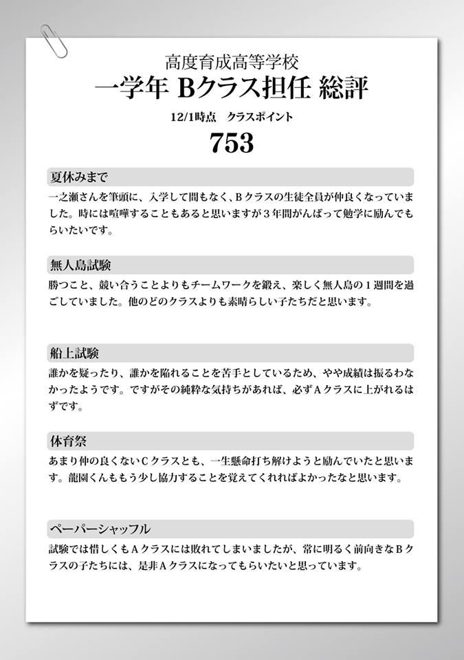
PENSAMIENTOS CRUZADOS
Aproximadamente dos horas antes de que Karuizawa cayera ante Ryuuen.
Chabashira-sensei le dio a la Clase D una explicación sobre lo esencial de las vacaciones de invierno.
— Durante las vacaciones de invierno, está programado que una parte de la escuela esté en renovación, por no podrán ir allí. Asegúrense de tener esto en cuenta. Y también, todas las actividades de los clubs se suspenderán después de la ceremonia de clausura de hoy. Asegúrense de irse tan pronto como puedan.
Nuestra maestra nos explicó lo mínimo. Pero por alguna razón, silenciosamente miró a la clase. Y no importa cuánto esperáramos, no señalaba el final de la clase.
Sintiéndose entumecido en este punto, Ike levantó la mano.
— ¿Qué pasa, sensei?
— Estoy segura de que hay estudiantes que ya lo saben, pero pueden asumir que su promoción a la Clase C está casi garantizada. Bien hecho.
— W-Woah, en realidad nos ha elogiado sinceramente. ¿No es esto algo muy raro?
No es solo Ike, estoy seguro de que el resto de la clase siente lo mismo.
— No se sientan satisfechos. Si causan problemas durante las vacaciones de invierno, puede tener un efecto en sus puntos de clase. Asegúrense de actuar como estudiantes aun en estas largas vacaciones.
Después de decir eso, Chabashira-sensei concluyó nuestro segundo trimestre.
— Esto realmente es un espectáculo inusual, quiero decir, Chabashira-sensei regañándonos gentilmente.
— Tal vez sea así.
No hay duda de que agregó la advertencia de no causar problemas para rematar.
Mientras volvía a poner mi libro de texto en mi mochila, miré en dirección a Karuizawa.
Y cuando lo hice, se giró para mirarme mientras estaba en medio de una conversación con las otras chicas.
Esta mañana, recibí un correo de Karuizawa en la dirección que le di para emergencias.
Ese algo surgió con respecto al incidente con el grupo de Manabe y que la habían llamado a la azotea a las 2 pm de hoy.
No me sorprendió y tampoco contesté. Después de todo, Ryuuen ya me había informado de ello.
No podía importarle menos a Ryuuen si Karuizawa le informaba a alguien más o no. Fue un acto destinado a engañarme.
Pero tal vez Karuizawa sintió por nuestro contacto visual que ya había visto su correo, porque salió del salón de clases con sus amigas mientras parecía satisfecha.
Tal vez tiene la intención de irse y volver más tarde.
Una hora después de que terminara la clase, la mayoría de los estudiantes ya habían abandonado la escuela.
— Estamos hablando de ir al Centro Comercial Keyaki después de esto, ¿qué harás?
Yukimura, listo para partir, me preguntó mientras se acercaba a mí.
— Claro. No tengo planeado nada particular para hoy. Después de que termine de arreglar mis cosas, iré.
— Entonces estaré esperando en el pasillo.
Por si acaso, debería traer algunos de los libros de texto, ya que existe la posibilidad de que los necesite más tarde.
— Umm... ¿podría ser que no estés libre ahora?
La que me llamó con esa voz apagada no era otra que Satou.
— Sí, estoy planeando salir con Yukimura y los demás...
— Yo... ya veo. Es una pena.
Los hombros de Satou caen decepcionados. Me pregunto si estaba planeando invitarme a salir como la última vez. Si es así...
— ... Hoy puede ser problemático, pero ¿estarías bien si es en las vacaciones de invierno?
— ¿Eeeh?
— Quiero decir, me siento mal al rechazarte dos veces seguidas, así que si estás de acuerdo con eso, entonces...
— ¿De verdad?
— S-sí
Me sentí un poco abrumado porque Satou está presionando su cuerpo felizmente contra mí.
— ¡E-entonces es una promesa!
Dijo sonrojada mientras saltaba alegremente. Me pregunto por qué está tan interesada en mí...
Por supuesto, no tengo nada en contra de esto, pero como todavía quedan personas en el aula, me sentí un poco avergonzado.
— En cualquier caso, a partir de mañana está bien, te enviaré los detalles por correo.
— ¡Entendido! ¡Hasta luego Ayanokouji-kun!
Después, Satou se unió al grupo de Shinohara con una mirada complacida en su rostro.
El grupo de Shinohara me miró con suspicacia antes de salir del aula.
Ahora bien, supongo que me reuniré con Keisei y los demás. Parece que ya se han reunido en el pasillo, y están charlando mientras esperan mi llegada.
Inmediatamente comprendí la situación por la sonrisa espeluznante de Haruka y la expresión abatida de Airi. Cuando comenzamos a caminar, Haruka parecía querer interrumpir y tomé la iniciativa.
— No hay un significado profundo detrás de eso.
— Ni siquiera te he preguntado nada, ¿qué te pasa?
— No pasa nada, estabas a punto de preguntarme, ¿verdad?
— Quiero decir, solo mira cómo estaba actuando Satou-san, no es tan difícil imaginar lo que pasa, ¿no?
— Qué adúltero, Kiyotaka. Horikita y ahora Satou, no tienes integridad.
Por alguna razón, incluso Keisei está enojado. Bueno, supongo que me disculparé.
— Me acaban de invitar a pasar el rato.
— Sin embargo, debe ser extraordinario que una chica invite a un chico a salir.
— ¿Seguramente no crees que S-S-S-Satou-san esté interesada en Kiyotaka-kun?
Hubo una disputa de esa naturaleza hace un tiempo, pero Airi lo dijo frenéticamente.
— ... Realmente no hay nada que pueda decir, incluso si me preguntas.
— ¿Tal vez una hermosa Navidad de último minuto? Es un desarrollo increíble.
Haruka es Haruka, imaginando su propio escenario egoístamente.
— Más importante, ¿a dónde vamos? Creo que el día de hoy va a estar lleno.
Como mañana comienzan unas largas vacaciones, es probable que haya muchos estudiantes que se la pasarán divirtiéndose hasta la noche.
Keisei concluyó que lo mejor para nosotros es decidir un curso de acción.
— Bueno, ¿no podemos simplemente, como, vagabundear? No hay prisa.
Mientras teníamos esa conversación, Akito caminaba en silencio sin dejar que la mirada dura en su rostro vacilara.
La concentración de Akito no está en nosotros sino más bien, detrás de nosotros.
Mientras nos movíamos, verificaba si había alguien detrás de nosotros o no.
— No hay rastro de que alguien nos siga.....
Akito susurró silenciosamente eso aliviado. Ryuuen quiere arreglar las cosas hoy.
Debe haber llegado a la conclusión de que ya no es necesario que nos sigan.
— Pero sabes, a pesar de que el Centro Comercial Keyaki lo tiene todo, me gustaría salir a la calle.
Haruka dijo eso y miró hacia la puerta principal, lejos de aquí.
— Me gustaría ir a Shibuya o Harajuku, o ir a ver las luces en Omotesando.
— Dejando de lado al Centro Comercial Keyaki, supongo que los caminos de la escuela no serán un sustituto de eso.
Ya que no hay preparaciones especiales de ningún tipo, el exterior es como siempre ha sido.
— Aunque estoy bastante satisfecha con la forma en que están las cosas ahora. Lo esencial también está aquí. ¿Te sientes igual que todos los demás, Kiyotaka-kun? ¿Acerca de querer salir?
A diferencia de Haruka, Airi no parece ser del tipo extrovertido.
Bueno, supongo que no tengo que obligarme a estar de acuerdo.
— Estoy satisfecho con esto también, como tú, Airi. Pero creo que también puedo entender la sensación de querer salir.
— No sé si lo están haciendo para respetar las reglas, pero creo que prohibir cualquier contacto incluso con tu familia va demasiado lejos. ¿Una familia normalmente no estaría preocupada por su hijo?
Cierto, no es normal no poder ver a tus hijos durante tres años. Tal vez eso hizo eco con Akito, porque su expresión se volvió sombría.
— Verán, mi madre se preocupa con facilidad, así que tal vez ella sienta algo de ansiedad por esto.
— Parece que la escuela también se encarga de eso. Aparentemente, informan regularmente tu progreso a partir de tu boleta de calificaciones o algo así.
— Eso... en realidad hace que me preocupe aún más. Creo que estudiaré más duro...
— Los padres se preocupan más por las chicas que por los chicos, ¿verdad?
— Ahh--- estoy bien, porque ese no es el caso para mí.
Haruka lo esquivó suavemente. Porque parece que hay algo de lo que no quiere hablar, tampoco insistimos en el asunto.
PARTE 1
— Entonces, ¿seguimos con el karaoke? Puede que esté un poco lleno.
— De ninguna manera, no vamos a jugar ese juego de castigo otra vez,
¿verdad...?
— Por supuesto que vamos a jugar. Por el bien de la venganza de Yukimu~.
Dejé de caminar mientras todos estaban en medio de la discusión de qué íbamos a hacer a continuación.
— ¿Qué pasa, Kiyotaka-kun?
— Lo siento, pero voy a regresar.
— ¿Aunque todavía no son las 2?
Akito dijo eso mientras comprobaba la hora en su teléfono.
— La verdad es que ayer me quedé despierto toda la noche, así que me siento con mucho sueño. Por favor, invítenme otra vez durante las vacaciones.
Airi parecía decepcionada por eso, pero ahora no habrá ningún inconveniente para ella, incluso si me voy.
Haruka también se encargará de eso, así que supongo que puedo estar tranquilo. Me despedí del grupo y les di la espalda.
Saqué mi teléfono y llamé a mi maestra, Chabashira-sensei.
— Soy yo.
— Hola. Tengo algo que discutir con usted. ¿Está libre ahora?
— ¿Qué quieres? ¿No habías dejado de relacionarte conmigo?
— Sí, es cierto. Pero acabo de recordar que aún quedan cosas por resolver.
Si es posible, me gustaría reunirme con usted cara a cara en lugar de hablar por teléfono. ¿Podemos encontrarnos en la escuela?
— ... Te estaré esperando en el aula.
— Entendido. Estaré allí en unos minutos.
Después de esta conversación, inmediatamente me dirigí de regreso al aula de la Clase D. No quedan estudiantes y cerca de mi asiento, Chabashira-sensei solo miraba por la ventana.
— Suponiendo que este año también sea uno promedio, entonces nevará un poco.
— ¿Le gusta la nieve?
— Solía hacerlo. Pero cuando me convertí en adulta, llegué a odiarla.
Chabashira-sensei cerró las cortinas y lentamente se dio la vuelta.
— Así que tienes algo que discutir conmigo. ¿Qué es?
— Pensé que todavía no he escuchado su respuesta. ¿Por qué quiere subir a la Clase A tan desesperadamente que incluso me utilizaría?
A menos que haya una buena razón detrás de esto, un maestro no usará una mentira para manipular a un estudiante.
— Esta escuela hace que no solo los estudiantes, sino también los maestros compitan. Si uno considera su posición, es obvio que querrán aspirar a las clases superiores.
— No creo que esa sea la verdadera razón. Si hubiera aspirado a la Clase A desde el principio, no habría hecho comentarios que podrían haber puesto a los estudiantes de la Clase D en desventaja.
Durante el examen parcial de nuestro primer trimestre, Chabashira-sensei retuvo intencionalmente información para poner a la Clase D en desventaja.
— ... Eso es algo diferente de las reglas de la escuela. Es un asunto personal.
No tengo nada que decirte.
— No estaba segura en ese momento, a pesar de haber hecho preparativos silenciosos para ascender a la Clase A ¿no es así? Si esta clase realmente tiene lo que se necesita para convertirse en la Clase A o si incluso debería aspirar a ella.
No me importan particularmente los sentimientos que esta profesora mantiene encerrados. Lo importante es si vale la pena usarla o no.
— Parece que esto ha sido una pérdida de tiempo. Regresaré al trabajo.
Volví a hablar con la maestra que me había dado la espalda como si estuviera huyendo.
— Si no responde, por favor deje de usarme.
— Así es como es. No hay necesidad de enfatizar eso. Ya dejaste de relacionarte conmigo, ¿no?
— Esta es la parte importante. Si deja que este día se desperdicie, la Clase D
nunca pasará a la Clase A. Por el contrario, es posible que ni siquiera podamos ascender a la Clase C.
— ¿De qué estás hablando?
Miré explícitamente el reloj de la clase.
— Son las 2 en punto. En este momento, Ryuuen probablemente está dando un interesante espectáculo en la azotea después de llamar a Karuizawa.
— ... ¿Ryuuen lo está haciendo? ¿A Karuizawa?
— Entonces, incluso usted no es consciente de ello, sensei. El hecho de que Karuizawa solía ser víctima de acoso brutal en el pasado.
— Es la primera vez que escucho eso...
Es difícil imaginar que Karuizawa normalmente sea la víctima de intimidación.
— Y con toda probabilidad, las noticias de esto se esparcirán por toda la escuela mañana. Una vez que eso suceda, Karuizawa puede optar por retirarse y abandonar la escuela. Si podemos probar que la Clase C está
involucrada podríamos contraatacar, pero el daño que nos haríamos mutuamente sería inconmensurable.
Todavía no está claro el tipo de sanción conlleva una expulsión, pero debe ser muy grande. Eso queda claro al ver el rostro de Chabashira-sensei.
Pero luego, de inmediato, recuperó la compostura y me miró con su habitual y feroz mirada.
— Ya veo. Tengo la esencia de tu plan. Por lo que entiendo, sería difícil para ti resolver este asunto tú solo. Pero sería totalmente diferente para un maestro de la escuela como yo. No solo se resolverá el problema, sino que tu identidad se mantendrá en secreto. No podría ser mejor, ¿verdad?
— ¿Me daría una mano si le pidiera su colaboración?
— No seas tan arrogante, Ayanokouji. No tengo ninguna intención de ayudarte.
— Por supuesto que no.
— Esta escuela no ve favorablemente a los maestros que intervienen en los problemas de los estudiantes.
Eso es verdad. Un maestro que sube solo a la azotea no solo para detener el acoso de Ryuuen, sino también para sellar sus labios con respecto al pasado de Karuizawa. Ese tipo de resultado favorable es imposible.
También es natural que Chabashira-sensei se niegue.
— ¿Pero puede permitirse rechazar esto tan fácilmente? No hay garantía de que no sabotearé a la Clase D en el futuro, ¿verdad? Puedo asegurarme hábilmente de que no lleguemos a ascender a las clases superiores.
— ... Pensar que un estudiante amenazaría a un maestro. Debería ser al revés.
— Si devuelve el favor y restaura nuestra relación como un estudiante-maestra, por lo menos puedo decir que no voy a sabotear a la clase. Creo que solo eso conlleva una gran ventaja, ¿no?
— Si al rechazarlo aquí significa que ascender a la Clase A se vuelve imposible, entonces es lo mismo.
Chabashira-sensei se negó obstinadamente a echar una mano.
— Por favor, tenga la seguridad de que no tenía intención de pedirle ayuda.
— ¿Qué?
La idea de confiar en esta maestra nunca estuvo en mis cálculos.
— Solo la estaba molestando un poco. ¿Por qué no observa desde la distancia? La conclusión de este incidente.
Después de decir eso, invité a Chabashira-sensei a jugar el papel de observadora de esta historia.
PARTE 2
Si todo va según lo programado, ha pasado media hora desde que Karuizawa subió a la azotea.
Justo cuando pensé que Ishizaki había entrado en pánico y bajado las escaleras, resultó que fue para poder llenar los baldes con una gran cantidad de agua y luego volvió a subir.
A juzgar por las gotitas de agua en el piso, ya lo ha hecho varias veces.
El escenario más probable es que Ryuuen está obligando a Karuizawa a revivir el acoso de su pasado para obtener una confesión.
Pero entonces significa que Karuizawa no lo escupió de inmediato porque ni la gente de la Clase C ni la propia Karuizawa bajaron de la azotea.
Existe la posibilidad de que haya habido una ligera divergencia en el escenario que visualicé.
Pero es una divergencia positiva de mis suposiciones iniciales.
— ¿Qué estás haciendo, Ayanokouji? ¿Cuánto tiempo vas a esperar aquí?
Después de salir del aula con Chabashira-sensei, observé la situación mientras mantenía mi distancia de las escaleras que Yamada Albert está vigilando.
Solo un poco más.
Como ya llegué hasta aquí, no hay necesidad de que me apresure a la acción.
Cuanto más me demore, más irán las cosas como lo he planeado. Por supuesto, llegar tarde conlleva sus riesgos, pero es un riesgo necesario que estoy teniendo después de considerar las ventajas de hacerlo.
— ¿Platicamos un poco?
— ¿Platicar en una situación como esta?
Ignoré las dudas de Chabashira-sensei y comencé la conversación.
— Es algo que sucedió no mucho después de la inscripción, pero recuerdo que Sudou quería comprar un punto durante el examen.
— ... Sí, lo recuerdo. Tú y Horikita pagaron 100 000 puntos en total.
Creo que ha pasado medio año desde entonces, el tiempo vuela.
— No hay nada que no puedas comprar con puntos privados. Eso es lo que dijo, ¿no?
— Es la verdad. ¿No se anuló la expulsión de Sudou?
— Sí, si es solo la compra de puntos de calificaciones, entonces sigue basándose en la lógica, pero si eso siempre está permitido, entonces no habría expulsiones, ¿verdad? Cada vez que alguien reprueba, otra persona solo necesita cubrirla de la misma manera. Al hacerlo, podrían evitar al menos la expulsión.
— Pero no es fácil conseguir puntos privados. Esta Clase D mantiene milagrosamente una gran cantidad de puntos, pero una Clase D promedio solo tendría la mitad. Además, no es que todos tus compañeros de clase sean amables contigo. No es extraño que un estudiante prefiera sus puntos privados, incluso si eso significa perder puntos de clase.
— Es cierto. Pero el sistema en sí mismo es defectuoso, ¿no es así? Mientras la salvación a través de puntos sea posible, el peligro de expulsión en un examen cae drásticamente.
— Ese podría ser el caso.
No lo negó, pero Chabashira-sensei tampoco me miró a los ojos.
— El problema es que cuando le pedí que me vendiera puntos, le agrego precio, Chabashira-sensei.
— ¿Estás tratando de decir que es demasiado caro después de todo este tiempo?
— No es eso. Lo que estoy tratando de preguntar es si 100,000 puntos por punto es algo que inventó o si hay una base para ello. Parecía que estaba improvisando ahí mismo, pero es difícil imaginar que pueda decidir arbitrariamente el precio de un punto por su cuenta.
— ¿Qué estás tratando de decir, Ayanokouji?
— Esta escuela ya ha establecido los detalles finos con respecto a los puntos,
¿no es así? Naturalmente, debe haber un manual para consultar cuando se solicite la compra de puntos. Si ese es el caso, entonces es convincente.
— En otras palabras, ¿estás diciendo que el precio que te di por punto en el caso de Sudou fue algo preparado anteriormente por la escuela?
— Exactamente. Si pudiera responderme, por favor.
Hubo silencio. Chabashira-sensei, que había estado respondiendo de inmediato, se atragantó con sus palabras.
— No es como si fuera a responder todo lo que me preguntas.
— ¿Asumo que eso significa que no puede responder?
— Haz lo que quieras.
— Entonces voy hacer una hipótesis. La escuela tiene un manual para todas las ocasiones y, en el caso de la compra de puntos, 100.000 puntos privados por un punto de calificación es algo que ya habían determinado por adelantado. Asumiendo que todo esto sea verdad, da lugar a otra pregunta. Es si podemos o no comprar un punto por 100,000 puntos cada vez que haya un examen.
— Eres libre de pensar lo que quieras, pero qué significado hay detrás de esta charla. Ahora mismo, Karuizawa---
Evadí esas palabras y continué.
— ¿Son 100,000 puntos por punto solo durante un período de tiempo limitado después de la inscripción? ¿O tal vez aumenta cada vez que se realiza una compra? ¿O tal vez ni siquiera podemos hacer ese tipo de compra de
nuevo? Pregunta tras pregunta siguen apareciendo. Por favor dígame cuál de ellas es la verdad.
— Ya basta. ¿Crees que realmente puedo responder una pregunta así?
Incluso si tuviera que responder, no hay forma de que puedas confirmar su veracidad.
— La hay. Solo tengo que preguntarle directamente, sensei.
Hice contacto visual con ella mientras trataba de desviar sus ojos.
— En este momento, ¿cuánto costaría un punto para el siguiente examen parcial?
— .........
Chabashira-sensei dejó de hablar por completo.
— Como maestra, está obligada a responder, ¿no es así? Si no responde, le haré la misma pregunta a otro maestro. Y si responde, entonces puedo informar a la escuela que la maestra de la Clase D nos discrimina. Tenga en cuenta que tengo esa opción disponible.
Por supuesto, es muy posible que los otros maestros tampoco puedan responder. En ese caso, varias posibilidades vienen a la mente. Puede ser que solo se pueda comprar un punto o que no se les permita responder a menos que alguien haya reprobado, etc.
Pero ser incapaz de responder es otra respuesta en sí misma. Esto significa que hay un manual preparado para cuando las calificaciones de un estudiante son insuficientes.
— ¿Estás planeando profundizar en las reglas?
— Por lo menos, hay estudiantes que hacen eso. Ichinose, que se rumorea que está ahorrando puntos y luego está Ryuuen quien está adherido a los puntos privados. Es obvio cuando los considera.
Todos intentan descubrir una estrategia que pueda beneficiar a su clase a través de prueba y error, cosas que realizan repetidamente todos los días.
— Muy bien. Responderé a tu pregunta. Es cierto que la clave para vencer al sistema escolar radica en descubrir las reglas con respecto a los puntos privados. Naturalmente, los estudiantes de años anteriores han intentado este enfoque desde una gran variedad de ángulos, muy parecidos a lo que estás haciendo ahora. Incluso la defectuosa clase D no es una excepción.
Sin embargo, algunos fueron más rápidos que otros. Y la escuela también ha establecido los detalles de las reglas con anticipación para responder a las preguntas que tienen los estudiantes. Compra de puntos, borrar actos violentos de tu registro previniendo la expulsión. Los puntos necesarios para todo eso ya están determinados. Pero un maestro tiene limitaciones en la cantidad de cosas que puede decir. En cuanto a por qué, es porque la mayoría está prohibida. No, ni siquiera eso, probablemente hay muchas cosas de las que los profesores no están al tanto.
— Entonces, ¿estaba en lo cierto al suponer que “no puede responder” a mi pregunta?
— Es verdad.
Esto resuelve un misterio. Eso es que hay muchas cosas en las que no pueden respondernos sobre el uso especial de puntos privados a menos que se cumplan las condiciones para dicho uso.
El precio de un punto para el próximo examen parcial ya se ha decidido y diciéndonoslo sería posible encontrar una contramedida. Pero si no lo sabemos, no podemos hacer nada imprudente.
Porque si nos dicen que un punto de calificación cuesta 100,000 puntos privados, eso sería el final.
— ... ¿Esto tiene algo que ver con el asunto en cuestión?
— No. Solo estaba conversando. Nada más, nada menos. Por supuesto, no tiene nada que ver con el asunto en cuestión.
Chabashira-sensei es incapaz de comprender mis verdaderas intenciones.
— Bien, entonces... supongo que es hora. Se acabó el momento de jugar al escondite.
Confirmé que son más de las 2:40 en mi teléfono.
Le envié un correo a cierta persona.
Le pedí que se dirigieran a este lugar de inmediato.
— No conozco los detalles, pero el sufrimiento de Karuizawa está en manos de la Clase C. Al menos, eso ya lo sé. Si no tienes intención de dar un paso al frente, deberías llamar a alguien más para pedir ayuda.
— Me dirigiré a la azotea.
Chabashira-sensei no pudo ocultar su sorpresa ante esas palabras.
— ... ¿Estás loco? Si haces eso, toda la escuela lo sabrá.
— Aunque Ryuuen se dé cuenta que soy el único detrás de todas las estrategias, no lo beneficiará de ninguna manera. Por el contrario, podría leer demasiado en ello la próxima vez y autodestruirse, todo mientras piensa que estoy involucrado.
— Si haces eso, serás famoso en un abrir y cerrar de ojos. Perderás tu vida tranquila en la escuela.
Debe haber cierto pensamiento ardiendo dentro de Chabashira-sensei. Que mientras mi identidad se mantenga oculta, todavía tiene una manera de hacerme ayudar a la Clase D.
Pero si me pongo en contacto con la Clase C, Ryuuen sabrá con certeza que soy X.
No, incluso si él no puede averiguarlo, todavía queda en el momento en que me convierta en su sospechoso número uno.
Aunque he mantenido un perfil bajo hasta ahora, mi existencia terminará haciéndose de conocimiento común.
Chabashira-sensei desvió sus ojos sin decir palabra.
— Puede que tenga un malentendido.
— ¿Malentendido?
— El presidente Sakayanagi me habló de ti justo antes de la inscripción. Que eres un estudiante muy especial. Y que tienes talento. Y que eres un estudiante al que debemos proteger. Y también que fuiste criado en un
ambiente sin amor. Teniendo todo en cuenta, llegamos a una conclusión a lo largo de mi discusión con el Presidente. Que te apegues a esta escuela y que desees permanecer aquí. Y luego te conté sobre tu padre y cómo desea tu expulsión. Por supuesto, eso fue mentira, pero parece que se ha convertido por fin en realidad.
— Ya veo. No se equivoca en que es más fácil hacer que las personas se apeguen a algo al darles un objetivo por el que luchar. Pero desafortunadamente, no soy el tipo de persona que se preocupa. No importa lo que alguien más desee, elegiré continuar en esta escuela. Por lo menos, no tengo intención de volver bajo el control de ese hombre en este momento.
— Así que el simple hecho de tratar de hacer uso de ti fue mi error, ¿eh? Que la Clase D aspire a la Clase A. Perseguir un sueño así fue un error, ¿eh?
Chabashira-sensei lo escupió resignada.
¿Pero no es cómico cómo se ha rendido tan rápidamente?
— No es un sueño imposible. De hecho, en este momento la Clase D está a punto de subir a la Clase C. En el futuro cercano, Horikita unirá a esta clase. Definitivamente lo hará.
— Sí, tienes razón. Lograrán cosas que nunca se han logrado antes.
Supongo que cuenta como una victoria. ¿Pero lo dices en serio? Acerca de que Horikita una a la clase.
— Esa es una frase que no quiero escuchar de mi maestra. Por lo menos, creo que Horikita es más que capaz de liderar a la Clase D.
Aunque en lo que respecta a Chabashira-sensei, Horikita era solo un medio a través del cual podía hacer uso de mí.
— Al final, Horikita está empezando a madurar. La mayoría de mis compañeros también son iguales. Lo único que queda es que los guíe como maestra y aseguren su posición como Clase C... tal vez incluso se acerquen a la clase A.
Por supuesto, se requiere un tipo diferente de habilidad para poder llegar allí.
— ¿Realmente te estás haciendo a un lado?
— Eso es lo que pretendo hacer en este momento.
Hablando normalmente, a un maestro no se le permite torcer los sentimientos de un estudiante usando los suyos. Chabashira-sensei también es consciente de eso.
No es por simple seguro que he traído a Chabashira-sensei aquí.
Es para que pueda demostrarle definitivamente que estoy abandonando la pelea entre clases.
— Volvamos al tema en cuestión. Eres libre de hacer tu entrada con audacia.
¿Pero el problema realmente se resolverá solo con eso?
— No puedo garantizarlo. Solo voy a lidiar con esto en base a la personalidad y patrones de comportamiento de Ryuuen. Muy bien, muchas gracias por acompañarme.
Cuando apareció la persona que había estado esperando, le agradecí a Chabashira-sensei.
Ahora no hay problema, incluso si ella decide irse.
— Perdón por hacerte esperar, Ayanokouji.
Chabashira-sensei expresó su sorpresa al ver a quien acaba de hablar conmigo, Horikita Manabu, el ex presidente del consejo estudiantil.
— ¿Qué significa esto.....?
— Él será un testigo cuando arregle las cosas con Ryuuen. Después de todo, es del tipo que usa cualquier medio que sea necesario. Y me gustaría evitar que las cosas se pongan feas.
Entiendo que tener un maestro que desempeñe el papel de testigo es ideal, pero esa opción está fuera de la mesa.
Si es así, lo más inteligente es ir con la siguiente mejor opción.
— ¿Estás planeando que Horikita resuelva las cosas haciendo lo que dije antes?
— ¿Parece el ex presidente del consejo estudiantil la clase de persona que haría eso?
Chabashira-sensei miró al Horikita mayor una vez e inmediatamente concluyó que estaba fuera de discusión.
Al igual que ella, el Horikita mayor tampoco se involucrará innecesariamente.
— Habrá testigos de lo que sucederá en la azotea. Mientras permanezcan los hechos, todo está bien.
Es por esa razón que hice un trato con el Horikita mayor. Bueno, supongo que en este momento es irrelevante.
— Unos minutos después de que haya subido a la azotea, me gustaría que te detengas a mitad de las escaleras que llevan hacia ahí. No es necesario hablar con los estudiantes que bajen ni es necesario castigarlos. Solo asegúrate que cuando bajen estén conscientes de tu presencia.
El ex presidente del consejo estudiantil ha sido testigo de los estudiantes que bajan de la azotea. Solo eso sería extremadamente efectivo contra Ryuuen y su grupo.
— Muy bien. Pero no olvides esa promesa, Ayanokouji.
— Por supuesto que no. Porque si renuncio a ella, puedes elegir olvidarte completamente de este incidente.
— Mientras lo entiendas. Hazlo rápido.
El Horikita mayor me envió en marcha y me dirigí al corredor que conduce a la azotea.
— Espera, Ayanokouji. ¿Qué habrías hecho si no hubieras podido obtener la ayuda de Horikita?
— Me pregunto qué habría hecho entonces.
Mientras decía eso, lo pensé. Probablemente hubiera usado a la que sabe de mí, Sakayanagi.
Y si eso no funcionaba, entonces, no, no tiene sentido considerar planes que ya no son necesarios.
— Ya sean 10 o 20 minutos. Planeo regresar para entonces.
PARTE 3
Subí las escaleras.
Paso… a... paso.
A medida que avanzaba lentamente, una sombra negra apareció ante mí. El vigilante de la puerta custodiando el camino a la azotea.
En silencio me está mirando con una pose desalentadora.
Es Yamada Albert de la Clase C. Todavía no ha hecho un solo movimiento. El perro guardián perfecto.
No conozco los detalles, pero seguramente también sea uno de los subordinados de Ryuuen.
Me mira como si me estuviese evaluando.
— ¿Puedo pasar?
Ni siquiera sé si entiende japonés, pero intentaré hablar con él.
Albert permaneció completamente inmóvil y siguió observándome.
¿Se supone que su silencio implica rechazo? ¿O una falta de comprensión? Es frustrante cómo es de difícil saberlo.
Sacó su teléfono con sus grandes manos y trató de hacer una llamada hábilmente.
— [Don't panic. I'm the one you are seeking for.] (No hay necesidad de alterarse. Soy ese al que todos han estado buscando).
Como dije eso en inglés, Albert dejó de moverse.
Pero no hubo una respuesta.
— [Today I'll solve the trouble by myself, and no one interferes.] (Hoy resolveré este problema yo solo. Y nadie interferirá.) Cuando volví a explicarme en inglés, Albert lo pensó un poco antes de cerrar su teléfono.
Y entonces se apartó de mi camino. Señalándome que podía pasar sin decir nada. Parece me ha reconocido.
Pero que se quede en las escaleras interferirá con mi plan.
— Voy a aplastar a Ryuuen. No tiene ninguna oportunidad sin tu ayuda.
Lo provoqué en japonés. Albert miró las escaleras una vez y, después de confirmar que no había nadie más, abrió la puerta de la azotea.
Después de salir a la azotea, Albert se paró junto a la puerta y me miró desde atrás.
Por este cielo nublado, parece como si fuera a llover en cualquier momento.
Miré a Karuizawa, encogiéndose junto a la cerca, lejos de la puerta. Y luego Ishizaki e Ibuki, notando que la puerta se abría y se cerraba me miraron, y Ryuuen siguió su ejemplo.
Miré a mi alrededor, a izquierda y derecha, para comprobar la presencia de cámaras de vigilancia.
La lente de la cámara ha sido pintada de negro y ya no es capaz de llevar a cabo su función.
Ya veo. Así que simplemente la cegó con un spray.
Después de comprender la situación, inmediatamente me volteé para enfrentar al grupo de Ryuuen.
— ¿Ayano... kouji...?
Ibuki fue la primera en decir algo.
Al escuchar mi nombre, Karuizawa también notó mi presencia.
No dijo nada de inmediato, pero puedo decir por sus ojos que está sorprendida de mi presencia aquí.
— Lo siento, llego tarde.
Le dije eso a Karuizawa.
— ¿Por qué...... por qué viniste...?
Karuizawa me miró mientras forzaba a salir esa débil voz.
— No hay necesidad de preguntar, ¿verdad? Hice una promesa. Te salvaré si algo te pasa.
— R-Ryuuen-san, ¿significa esto que Ayanokouji es X?
— Eso no es posible. Definitivamente no es él.
Ishizaki se puso nervioso, pero Ibuki lo negó antes de que Ryuuen pudiera.
— Ryuuen, seguramente X solo está manipulando a Ayanokouji. No te dejes engañar. Definitivamente antes le dijeron a Karuizawa que enviarían a alguien más a salvarla-
— Cállate, Ibuki.
Riendo, Ryuuen se distanció de Karuizawa y se acercó un poco más a mí.
Pero aún entonces, se detuvo cuando todavía había unos cinco metros de distancia entre nosotros. Puedo decir que Ryuuen desconfía bastante de mí.
— Bueno, bueno, ¿qué tenemos aquí? ¿no es simplemente el que está dando vueltas alrededor de Suzune, Ayanokouji? ¿Qué asuntos tienes en un lugar tan impopular como esta azotea en las vacaciones de invierno?
— Karuizawa me envió un correo. Pidiéndome que la salve.
No entré en detalles y tampoco mencioné que Ryuuen también se había puesto en contacto conmigo.
En cuanto a por qué, es porque Ryuuen me había invitado tontamente al terreno de caza, una presa perseguida por el cazador.
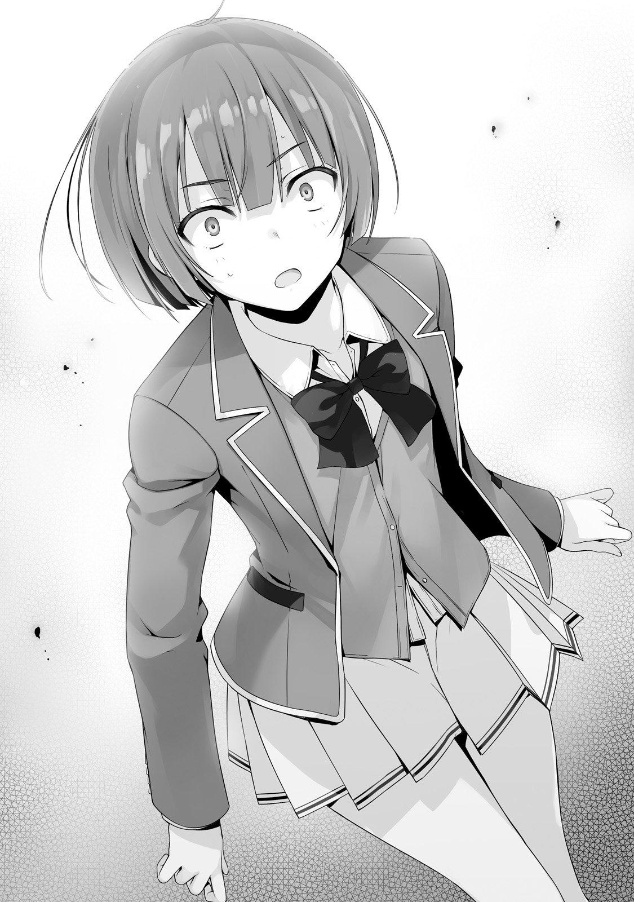
— ¿Hmm?
— Obviamente es una mentira. Acabas de recibir órdenes. Te dijeron que vinieras a salvar a Karuizawa.
A Ibuki le acaban de decir que se calle, pero por alguna razón, está haciendo todo lo posible para negar que soy X.
— ¿Qué pasa, Ibuki? Parece que no quieres creer que Ayanokouji sea X.
— No es lo que quiero creer, te digo que no es verdad. Este tipo... este tipo es solo un tonto de buen corazón. No creo que ni siquiera sea consciente de la situación de Karuizawa con X, ¿no?
— ¿De buen corazón, dices? ¿Tienes razones para creer que eso es verdad?
Ryuuen le pregunto a Ibuki.
— Cuando estábamos en la isla, escondí la ropa interior de Karuizawa dentro de la maleta de un chico para sabotear a la Clase D. Obviamente, sospecharías que alguien como yo, que es de la Clase C, es el culpable.
Pero nunca dudó de mí. Estúpidamente, me dijo en mi cara que no creía que yo fuera culpable.
— Y eso te hizo feliz, ¿verdad?
— Deja de bromear. No hay manera de que me sintiera feliz cuando era la culpable. Pero es cierto que es un estudiante incompetente que ni siquiera duda de una persona completamente sospechosa. Eso es de lo que me di cuenta.
Entonces, eso significa que no puede imaginarse a una persona así manipulando a la Clase D desde las sombras.
— ¿Lo crees, Ryuuen-san? ¿Qué Ayanokouji es X?
— Siempre he sospechado de Ayanokouji. Ya que siempre está con Horikita, quien se dice que es excepcional y todo eso.
— Pero, ¿no es eso demasiado descarado o más bien... demasiado obvio para alguien que intenta ocultar su identidad?
— Es cierto. Entiendo lo que intentas decir, Ishizaki. Es por eso que también me aseguré de eliminar todas las demás posibilidades. Y luego de enterarme del incidente con el grupo de Manabe, volví a profundizar en
ello. Teniendo en cuenta la manera en que manejaron el asunto con el acoso de Karuizawa, pensé que debía ser Ayanokouji o Hirata.
— Deja de hacerte el listo. Ni siquiera marcaste a Ayanokouji o Hirata como objetivos después de eso, ¿verdad?
Las opiniones se dividen dentro de la Clase C.
Una situación en donde lo admito, mientras que Ibuki y los demás se niegan a reconocerlo.
— Es precisamente porque soy el más sospechoso que hice las cosas de esa manera a propósito. ¿O tal vez no tuve otra opción que usar Horikita?
— ¡Pero---!
Elegí plantear una pregunta vaga pero tranquila.
— No hay necesidad de preocuparse, soy el que todos han estado buscando.
— Hah. ¿No es esto sospechoso? ¿Realmente lo admitirás? Esto es demasiado extraño.
Su rechazo es comprensible, sobre todo porque me he mantenido oculto todo este tiempo.
— También creo que es sospechoso. Le pueden haber ordenado que se nombre como el cerebro para servir como señuelo para la verdadera mente maestra...
Ibuki e Ishizaki instaron a Ryuuen a reconsiderar justo cuando estaba a punto de reconocerlo.
— Seguramente también predijiste que X no aparecería, ¿no?
— Sí, normalmente sería ridículo asumir que alguien que se ha estado escondiendo detrás de Horikita todo este tiempo caiga tranquilamente en una trampa tan obvia.
Supongo que es natural que haya algunas dudas al respecto.
— Me parece un movimiento pobre, Ayanokouji. En este caso, el mejor movimiento para ti habría sido abandonar a Karuizawa Kei. No saltar a la
refriega tan imprudentemente. No puedo culpar a Ibuki e Ishizaki por dudar de ti. Si eres realmente X, dime cómo planeas superar esta situación.
Esa es la única forma de probarlo. Fue lo que añadió Ryuuen.
— Esta puede ser una pregunta tonta, pero ¿estoy realmente en una situación difícil?
Por un momento, Ryuuen y los demás parecieron desconcertados por mi tonta pregunta.
— Vine aquí porque Karuizawa pidió ayuda. No hay ningún examen en este momento, así que no hay pruebas que pueda mostrar en este momento,
¿verdad? Si quieres una prueba de que soy X, puedes esperar hasta el próximo examen.
— Eso no es cierto en absoluto. En este momento, somos conscientes de tu identidad. Además, también somos conscientes del secreto de Karuizawa.
Sabes que mañana sucederán cosas terribles si te vas sin decir nada.
— ¿Cosas terribles?
— Deja de hacerte el tonto. Ahora, muéstrame tu próximo movimiento.
— No hay ningún movimiento. No haré nada.
— Ahora lo entiendo, Ryuuen-san. Seguramente Sudou y los demás están cerca esperando órdenes, ¿no crees?
Ishizaki miró la puerta entreabierta.
— Realmente no.
Pero Ryuuen lo acalló.
— ¿E-es así?
— Si un gran número de sus compañeros ven esta desastrosa escena de Karuizawa, perderá su posición sin la necesidad de que extienda la verdad.
Usa tu cabeza un poco.
Si él no estuviera seguro de eso, Ryuuen no actuaría tan imprudentemente.
— Ya-ya veo......
— Pero eres impresionante si vas te vas a hacer el tonto.
— Ya es suficiente, Ryuuen. No hay forma de que X venga hacia nosotros tan audazmente él solo.
Ibuki aconsejó a Ryuuen.
— Dios mío, esto es un problema. Ibuki e Ishizaki no creen que seas X.
Ryuuen se encogió de hombros y miró con exasperación a Ibuki e Ishizaki.
— Dijiste que no harías nada, ¿verdad, Ayanokouji? Pero necesito averiguar si esto es verdad o no. Para hacer eso, no tengo más remedio que hacer esto del conocimiento de todos. ¿Estás bien con eso?
Dijo eso y me miró con una sonrisa.
— Ya lo he admitido desde el principio, pero si todavía no me crees, permíteme revelar más información. Ibuki.
Hablé con Ibuki, quien simplemente no dejaba de dudar de mí.
— Durante el examen en la isla, te indicaron que filmaras la tarjeta del líder con tu cámara digital. Pero por alguna razón, en el momento crítico, tu cámara digital no funcionaba y no pudiste usarla. ¿Me equivoco?
— ¿C-Cómo lo sabes?
— Yo fui quien estropeó la cámara que escondiste dentro de tu maleta. Para asegurarme de no dejar rastro, usé agua.
No debe haber tantas personas, incluso dentro de la Clase C, que estén conscientes del hecho de que habían comprado una cámara digital.
— Por cierto, cuando encontramos a Ibuki, las yemas de sus dedos estaban cubiertas de tierra. Además, había rastros de tierra que había sido removida alrededor de donde estaba sentada. Cuando fui a mirar por la noche, encontré un radio enterrado allí. Eso era para que pudieras comunicarte con Ryuuen, ¿no?
Si revelo todo esto, seguramente lo entenderán aunque no quieran hacerlo.
Los únicos que vieron a Ibuki con sus manos sucias en ese entonces seríamos Yamauchi, Airi y yo. En otras palabras, es una prueba definitiva de que soy alguien que se ha dado cuenta incluso de eso.
— Tienes que admitirlo ahora, Ibuki. Ayanokouji es X.
— Espera, espera un minuto. Solo porque sea un poco inteligente no significa que sea X, ¿verdad?
— ¿Existe siquiera la necesidad de dudar más de él?
Ryuuen parecía más exasperado que antes.
— ¿Pero no es extraño? Aunque Ayanokouji realmente sea X ¿¡por qué aparecería obedientemente aquí!? ¡Ha demolido todos nuestros planes hasta ahora!, ¿no?
— Probablemente tiene algún tipo de truco bajo la manga. Un milagro que excede incluso nuestra imaginación. Si no... entonces será un idiota.
— ¿Truco? No hay ningún truco que pueda usar en una situación como esta.
Ya has comprendido el gran secreto de Karuizawa con respecto a su pasado. Sé lo que sucederá si actúo descuidadamente. Es decir, esta situación es el resultado de tus preparativos para asegurarte de que no puedo hacer nada, ¿me equivoco?
— Ja. ¿Qué vas a hacer entonces? Ahora podemos revelar tu existencia cuando queramos, ¿sabes? Ahora que te has expuesto, ya no tenemos ningún incentivo para revelar el acoso pasado de Karuizawa. Si nos mantenemos en silencio sobre eso, entonces tampoco serás capaz de actuar descuidadamente. Un punto muerto perfecto.
— Parece que informar lo que le hicieron a Karuizawa aquí a la escuela tampoco es una opción.
A diferencia de cómo es en los exámenes, actos violentos entre los estudiantes que ocurren en días normales no conllevan una expulsión inmediata.
Incluso si somos capaces de proporcionar una prueba de todo lo que hicieron, es poco probable que podamos hacer un daño significativo.
— Si hablas sobre nosotros, en represalia, arruinaremos a Karuizawa.
Está bien. Si intento castigar a Ryuuen por esto, terminaré perdiendo por completo a Karuizawa.
Es muy posible que gane la batalla pero pierda la guerra. Habiendo usado el pasado de Karuizawa como un medio de ataque, Ryuuen ahora cambió a defensa.
— No importa cómo lo mires, tengo una ventaja abrumadora.
— ¿Estás satisfecho ahora que conoces la situación? Me llevaré a Karuizawa conmigo.
— No digas algo tan anticlimático. Finalmente estás aquí, así que mejor tómalo con calma.
Ryuuen agarró el brazo de Karuizawa y la arrastró por la fuerza.
— ¡Ahh!
— No hay forma de que reveles tu identidad sin una razón. ¿Qué truco tienes bajo la manga? Muéstrame.
Extendió la palma de su mano hacia mí e hizo un gesto provocativo con ella varias veces.
— Lo siento, Ryuuen. Pero creo que no puedo responder a tus expectativas.
— ¿Huh......?
— Solo estaba bailando en la palma de tu mano. Eso es todo.
Nadie aquí esperaba que X dijera algo así.
El cruel X que protegía su identidad incluso si eso significaba abandonar a Karuizawa.
O tal vez un estudiante astuto que salvaría a Karuizawa mientras ocultaba su identidad. Pensaron que sería algo así.
Una grieta finalmente apareció en la sonrisa que Ryuuen había estado usando todo este tiempo.
— Si el X por el que hemos hecho tantas cosas para encontrarlo es un tonto como éste, entonces es probable que no lo hayamos encontrado.
Seguramente lo que pasó con la cámara digital fue una casualidad o algo así.
A pesar de estar aliada con él, Ibuki siempre desconfía de Ryuuen.
Es precisamente porque realmente se siente así, y no está actuando, que lo cuestiona tan abiertamente.
Al ver una oportunidad, hice mi siguiente movimiento.
— De hecho, he revelado mi identidad. Pero eso no me dañará de inmediato.
Las únicas que saben que he estado manipulando a la Clase D desde las sombras son Horikita y Karuizawa. Si las otras clases se enteran esto, significa que uno de ustedes lo expuso.
— ¿Y cuál es el problema con eso?
— Si vas a revelar mi existencia, informaré a la escuela todo lo que sucedió en este tejado.
— Estás acorralado porque no eres capaz de hacer eso.
— Puedo hacerlo. Solo tengo que sacrificar a Karuizawa.
— ... ¿Eh?
— Supusiste que abandonaría a Karuizawa. Pero cuando aparecí, comenzaste a hablar sobre la suposición de que no era así. ¿Me equivoco?
— Eso no cuadra. Si la hubieras abandonado desde el principio, es posible que hubieras podido ocultar tu identidad. Viniste porque esa no es una opción. No trates de engañarnos.
— Está bien... si saben de Kiyotaka, también pueden revelar mi secreto.
Mientras se levantaba lentamente del suelo, Karuizawa me miró.
Inmediatamente desvié mis ojos hacia Ryuuen.
— O eso dice ella. Depende de ti si lo crees o no, pero será la pelea de tu vida si eso sucede.
— Umm... ya que descubrimos la identidad de X, ¿no es suficiente por ahora?
— Estoy de acuerdo. Él podría realmente sacrificarla.
Todo esto se hizo originalmente por el simple hecho hacer salir a X. Ishizaki e Ibuki no quieren ir más lejos.
— ... Kuku.
Por alguna razón, Ryuuen se agarró la cabeza y comenzó a reírse mientras temblaba.
— Ciertamente, tienes razón en que la guerra puede estallar una vez que cualquiera de los dos revele su secreto. Lo admito.
Profundas o leves, ambos lados quedarán con cicatrices.
Además, dependiendo de cómo lo consideres, no hay garantía de que Karuizawa reciba un golpe letal.
Se formaría la imagen de una chica que se puso de pie a pesar del brutal acoso que recibió en el pasado.
Si Ryuuen renuncia aquí, acabaría con todo esto.
Sin embargo---
Este hombre nunca elegirá esa opción.
— Para ser honesto, hasta el momento ha sido una decepción. No solo revelar tu identidad tan fácilmente, sino que también, para protegerte, no tienes más remedio que dejar tu destino en manos de tus enemigos. Pero incluso entonces, no hay nada más. Dudo que Ayanokouji sea el X que me mantuvo entretenido. Entonces perderé si no te hago entretenerme hasta el final. ¿Verdad, Ishizaki?
— S-sí.
— Para mí, todo es un juego. No solo llegar a la Clase A sino aplastar a Ichinose, aplastar a Suzune, para mí, todo eso es una extensión de este juego. Aplastar a la Clase D o aplastar a la Clase B e incluso a Sakayanagi, a quien he guardado para el final, no es más que un medio para matar el tiempo.
Mientras se ríe, Ryuuen agarró el flequillo de Karuizawa. La cara de Karuizawa se contrajo de dolor.
Pero ya no hay miedo en sus ojos.
— Kuku... aunque desesperaste tanto, ahora es como si nunca hubieras tenido miedo. Me siento estúpido por dudar si Ayanokouji es X o no. Tus ojos me dicen que tienes fe absoluta en Ayanokouji. Casi se siente como si tú misma fueras a revelar tu pasado si yo revelara la identidad de Ayanokouji. Puedes relajarte. Tu papel aquí ha terminado.
Habiendo perdido interés en Karuizawa, soltó su cabello y la empujó por el hombro.
— Seguro que me entretuviste, Ayanokouji. A pesar de ser un producto defectuoso de la Clase D, descifraste de mis estrategias una y otra vez. No solo eso, tu modus operandi es similar al mío. Era imposible que no me interesara en ti. Sacar a la mente maestra de su escondite. Eso se convirtió en un placer para mí. No he pensado más allá de eso. Pensé que lo consideraría después de conocerte.
Desbordó su corazón muy placenteramente.
— Y luego me decidí.
— ... ¿Qué planeas hacer con Ayanokouji?
— ¿Por qué estás tan enojada, Ibuki?
Ibuki se alejó de mí y sin temor se acercó a Ryuuen hasta que estuvo justo enfrente de él.
— Lo que estás a punto de hacer es algo que pone en riesgo a la Clase C.
— Kuku. Siempre fuiste una loba solitaria, nunca cooperaste con tus compañeros y, sin embargo, aquí estás, diciendo algo como “esto pone en riesgo a la Clase C”. No me hagas reír.
— Te seguí hasta aquí porque pensé que la clase se beneficiaba de tu imprudencia. Pero esto está fuera de lugar. Ayanokouji claramente no tiene nada bajo la manga.
Mientras escupía todo el resentimiento almacenado en su interior, Ibuki continuó.
— Por eso no puedo aprobar lo que vas a hacer.
— ¿Sabes lo que voy a hacer?
— Puedo decirlo porque te conozco desde abril. Lo harás ceder a través de la violencia, ¿verdad?
Habiendo oído eso, Ishizaki se congeló un poco.
— A Ishizaki, Komiya, Kondou e incluso Albert los has hecho inclinarse ante ti a través de la violencia.
— Lo mejor es demostrar la diferencia de poder entre nosotros.
— ¿Esa diferencia no es ya obvia?
— Es cierto que Ayanokouji nos ha ayudado muchas veces. Necesitamos devolver el favor.
— ¡Por eso te digo que ese tipo de pensamiento va a significar problemas para la clase!
¡Bang! Un sonido agudo reverberó.
La causa de ese sonido fue que Ryuuen golpeó la mejilla de Ibuki con la palma de su mano.
Ibuki se quedó en silencio inmediatamente después.
— No podría importarme menos mientras lo disfrute. La violencia, en particular, es fácil de entender.
Al igual que lo que pasó ahora. Parecía como si estuviera tratando de transmitir ese punto. Como sospechaba, esa es la conclusión a la que ha llegado.
Ahora que ya no es posible llamarlo malentendido y restándole importancia, se ha convertido en algo inevitable.
— Escuchen, lo importante aquí es lo que hacemos con la información que hemos obtenido. Ayanokouji quiere mantener en secreto lo que sucedió aquí, así como su identidad y la cuestión de Karuizawa. También es cierto que chantajeamos a Karuizawa y arrojamos agua helada sobre ella. Si, por casualidad, esto se sabe, es seguro que seamos castigados severamente.
En resumen, mientras todos sigan guardando en secreto lo que sucede aquí, nadie más lo sabrá que no importa qué más pase.
Considerando el desarrollo hasta ahora, no es tan difícil hacer esa deducción. Al usar el pasado de Karuizawa y mi identidad como escudo, se asegura de que lo que sucede aquí nunca se sepa.
— Pase lo que pase, ambas partes no tienen más remedio que aceptarlo obedientemente.
A pesar de eso, la clase C quiere pelear.
— Creo que entiendo por qué revelaste tu identidad hasta ahora. Esto hace imposible que luchemos fuera de los límites. Cierra la puerta, Albert.
Después de recibir la orden de Ryuuen, Albert cerró la puerta que conduce a la escuela.
— Pero sigue siendo una mala jugada. Puede que hayas pensado que todo terminaría aquí, pero no permitiré que eso suceda.
Todos aquí ya pueden decir qué va a pasar a continuación.
Ryuuen no cambiará sus métodos.
— Supongo que mi retirada ha sido bloqueada. Ahora eres libre de llevar esto en la dirección que desees.
— Primero pondré miedo en esa cara apática de la tuya. ¿Me estás subestimando? Pensabas que no haría nada imprudente.
— ¿De verdad vas a recurrir a la violencia?
— El conflicto no siempre es un asunto mental. La violencia es la fuerza más poderosa en este mundo. Esto se aplica a un general que lidera sus fuerzas y también es un medio brillante para asesinar a ambos generales.
No importa lo astuto que seas, serás forzado a inclinarte ante la violencia.
Incluso ahora, como parece que una pelea está a punto de estallar, miré a Ryuuen, Ibuki, Ishizaki y Albert uno por uno por un momento.
— Encomendaré tu patética apariencia a la memoria y luego la borraré.
Porque me moveré hacia Ichinose en el tercer trimestre.
— La gente se inclina ante la violencia, eso es seguro. Tu lógica es buena allí.
Pero para llevar a cabo esa lógica, necesitas ser más fuerte que el otro tipo. ¿Entiendes eso?
— ¿Eh?
— Ustedes cuatro no serán suficientes para detenerme.
— ¿......?
Incapaz de entender, Ibuki levantó una ceja.
— Kukukukukukukukukukukuku.
Parece que lo encontró sumamente divertido, porque Ryuuen se estaba riendo de corazón.
— Lo que Ayanokouji está tratando de decir es lo siguiente: los tipos como ustedes no me harán inclinar con el uso de la violencia. Entonces muéstrame ese grado de confianza tuya. Ishizaki.
— ¿E-está realmente bien?
Inesperadamente, Ishizaki vaciló al recibir la orden de atacar. Sería algo completamente diferente contra alguien bien conocido por meterse en peleas como Sudou, pero solo soy un estudiante normal.
Su vacilación es comprensible aun cuando le dieron esas órdenes.
— No te contengas, atrápalo.
— Pero.....
— No habrá ningún problema aunque le demos una paliza a Ayanokouji.
— ¡Espera!
Cuando Ishizaki se me acercó, fue el grito de Karuizawa fue lo que lo detuvo.
— ¿¡Por qué estás haciendo algo tan estúpido!? No ganarás nada con golpear a Kiyotaka, ¿verdad?
— Oye, no te metas en esto, Karuizawa. Tu papel ha terminado. Puedes relajarte, tu pasado no será revelado gracias al sacrificio de este tipo.
Agradécele.
Agarró el cabello de Karuizawa una vez más, de la misma manera que lo hizo cuando arrojó agua sobre ella.
— ¡…!
Y luego empujó a Karuizawa hacia atrás.
— Es por eso que te digo que te mantengas fuera de esto.
Sin embargo, por mi bien, Karuizawa le mostró sus colmillos a Ryuuen.
Intentó levantarse y saltar sobre él.
— No te preocupes, Karuizawa.
La llamé y la hice detenerse.
— P-pero.
— No hay de qué preocuparse.
— Es cierto, guarda esa preocupación para ti misma.
Ishizaki dio un paso adelante.
— No pienses mal de mí, Ayanokouji. Es solo otra orden de Ryuuen-san.
— De cualquier modo, no me importa.
Ahora que hemos llegado a esto, todo va según lo planeado.
Ishizaki movió casualmente su puño, como si quisiera aplastar a un bebé desobediente.
Un movimiento torpe, incluso un estudiante de primaria o un estudiante de secundaria habrían podido esquivarlo. Tomé su puño derecho, el cual me había lanzado con fuerza, con mi mano derecha.
— ¿Ahh.......?
— Ishizaki, si vas a hacer esto, deberías tomarlo en serio.
Le advertí una sola vez. Pero Ishizaki no parece entender aun después de detener su puño.
Porque inevitablemente habría sido detenido. Porque la fuerza que lo detuvo no es nada fuera de lo común.
Usé la fuerza de agarre de mi mano izquierda para apretar el puño derecho de Ishizaki.
— ¿Oh? ¿¡Ahh, uuu, ehh......!?
La expresión de Ishizaki cambió poco a poco y sus rodillas comenzaron a temblar.
— Espera un minuto, ¿Ishizaki?
Al darse cuenta de que esto es evidentemente extraño, Ibuki miró hacia atrás.
— ¡Ahh, uuuu, ahh! ¡No puedo, detente!
Ya no podía mantenerse erguido, sus rodillas se doblaron y cayó sobre sus rodillas al frío suelo del tejado.
Ya no podía soportarlo, Ishizaki agarró mi brazo con desesperación con su mano izquierda y trató de rasgarlo, pero fue en vano.
El primero que entendió esta situación no fue Ibuki ni Ryuuen, sino el que estaba detrás de mí, Albert.
Una sombra negra se acerca.
Antes de siquiera obtener el permiso de su jefe, Albert agitó sus gruesos brazos como palos y los balanceó.
La razón por la que me atacó desde mi lado izquierdo es porque anticipó que tomaría una postura defensiva después de que Ishizaki se libere.
Sin embargo, esa es una preocupación innecesaria. Podría haber esquivado, pero en cambio recibí su golpe con la palma de mi mano izquierda, todo el tiempo preparado para sufrir algo de daño.
Bash. Un sonido sordo resonó.
Una poderosa fuerza atravesó mi codo hasta la punta de mi hombro.
— ... Como se esperaba, duele...
Es difícil discernir la expresión de Albert debajo de sus gafas de sol, pero también ha captado la situación lo suficiente.
— Tienes que estar bromeando... ¿están jugando, Albert? ¿Ishizaki?
Quizás desde la distancia, Ibuki no podía decir que Albert había golpeado con todas sus fuerzas e Ishizaki está realmente adolorido.
O quizás este es un espectáculo que no quiere creer que sea verdad.
Cuando lo liberé de la presión de mi mano derecha, Ishizaki se agachó y se agarró su brazo derecho.
— Hazlo, Albert.
Las órdenes vinieron de Ryuuen.
Albert arremetió con su robusto cuerpo mientras balanceaba sus enormes brazos.
Acumularé el daño si continúo recibiendo esos poderosos ataques que van más allá de lo que el cuerpo humano está diseñado para soportar.
Le permití que conectara un golpe la primera vez a propósito, pero no puedo permitirme ser golpeado más que eso.
Después de evadir el gancho de izquierda que lanzó, contragolpeé con un ataque frontal.
Metí mi puño en el abdomen de Albert. Podría haberme contenido, pero no puedo darme el lujo de hacerlo contra un oponente cuya habilidad aún no está determinada. Se produjo un ligero cambio en el rostro inexpresivo de Albert, pero solo uno ligero.
A juzgar por la fuerte sensación que sentí al golpearlo directamente con mi puño, el daño es superficial.
Podía decir que no solo está bendecido con un cuerpo que una persona japonesa pura nunca podría tener, sino que también lo ha entrenado en gran medida.
En ese caso, todo lo que significa es que me tomará más esfuerzo romper ese cuerpo similar al acero.
Los seres humanos tienen innumerables lugares que pueden denominarse puntos débiles. Por ejemplo, el plexo solar es un área que no se puede entrenar.
Por supuesto, no debería asumir que un golpe supondrá un tiro de gracia instantáneo. En el mejor de los casos, es solo un área que no puedes entrenar.
Es posible soportar el dolor.
Albert también parece haberse dado cuenta de que estoy apuntando a su plexo solar, porque torció su gran cuerpo para evadirlo.
Pero lo vi venir y usé la punta de mi mano para golpear su garganta.
— ¡Guh!
Albert soltó un gorjeo.
— ¡Ayanokouji!
Desde atrás, Ishizaki gritó y cargó contra mí.
— ... Si vas a atacarme, entonces no grites...
Exasperado con Ishizaki por ahorrarme el problema, le di una patada a su rodilla izquierda que estaba usando para apoyarse.
Él es demasiado obvio.
Después de confirmar que Albert se había desplomado por completo, giré y le di una patada en la cara.
Y luego golpeé a Ishizaki en la mandíbula con mi mano izquierda.
Ishizaki se derrumbó y el silencio se extendió sobre el techo.
Todo lo que Ryuuen, Ibuki y Karuizawa pudieron hacer fue grabar esta increíble visión en sus recuerdos.
— Parece que es más de lo que esperábamos. La razón por la que actuaba con tanta arrogancia es porque tiene confianza en sus habilidades, ¿eh?
Esto seguro es inesperado.
— ¿Entonces estás diciendo que el escenario que preparamos terminó favoreciendo a Ayanokouji? ¿Qué significa eso...?
— ¿Hablas en serio, Ibuki?
— ¿Ehh.......?
— Has sabido por mucho tiempo que Ryuuen es el tipo de persona que usa la violencia para dominar a sus enemigos. Además, ¿no crees que preparar una situación en la que cualquier cantidad de violencia no cause problemas es demasiado conveniente para la Clase C?
— ¿Eh?
Cuando Ibuki inclinó su cabeza, una duda parece haber surgido dentro de Ryuuen también.
— Espera un momento, Ayanokouji. Incluso yo no entiendo esto. Esta es una situación que preparé yo mismo.
— Aunque estoy actuando así de diplomático, ¿todavía no ves la situación real?
Después de suspirar, decidí contarle todo.
— Nuestra confrontación aquí ha sido predeterminada desde hace mucho tiempo. Y también está el hecho de que en una situación en la que ninguno de nosotros pueda hablar del otro, Ryuuen Kakeru recurrirá a la violencia para resolver las cosas.
Ryuuen piensa que todo lo que sucedió hasta ahora es el resultado de su meticulosa planificación.
Pero eso es un gran error.
— Si nunca hubiera tenido la intención de revelar mi identidad, entonces no habría usado a Manabe. Es claro como el día que la búsqueda del
culpable comenzaría tan pronto como la convirtiera en espía y le pidiera que me enviara la grabación. Y como un verdadero dictador, llegarías al grupo de Manabe. Y de ahí lo escuchaste, ¿verdad? Que fueron chantajeadas después de atacar a Karuizawa y que no tenían otra opción.
Hasta ahora, Ryuuen no puede negar nada. Por supuesto.
— Confirmaste que Karuizawa está conectada conmigo. Todo lo que quedaba es cómo ibas a ejecutarlo. Por esa razón, pensaste que estrangularnos sería lo más efectivo. Hiciste que Ishizaki, Komiya y los demás siguieran a la Clase D y te acercaste abiertamente a Kouenji para poner presión sobre X. Bueno, supongo que realmente te divertías, pero es posible que me hayas dado tiempo para pensar.
— Kukuku. Estás diciendo algunas cosas interesantes. ¿Entonces estás diciendo que solo hiciste que pareciera que estabas bailando en la palma de mi mano?
— Para ser más preciso, hice que pareciera que estaba bailando en la palma de tu mano cuando, en realidad, has estado bailando en la mía.
— Entonces permíteme pedirte disculpas, Ayanokouji. Realmente eres muy listo. La ventaja que tenía hasta hace un tiempo se ha desvanecido por completo y ahora soy el que está en un gran aprieto. ¿Qué vamos a hacer, Ibuki?
Después de escuchar mi historia completa, Ryuuen todavía se reía feliz incluso después de ver de lo que soy capaz.
— ¿Qué te pasa?... ¡tanto tú como Ayanokouji......!
Como si me golpeara con sus frustraciones, Ibuki me lanzó una patada voladora.
No parece preocupada por el hecho de que su ropa interior sea visible.
No, para ser precisos, puede que ya no posea la racionalidad para cuidar esas cosas. Retrocedí y con calma evadí su patada.
El interruptor de Ibuki también se ha activado.
Dio varios pasos para disminuir la distancia entre nosotros y atacó con una patada que dejaba poco espacio para esquivar.
Qué movimiento tan brillante.
A pesar de que Horikita estaba enferma en ese entonces, es cierto que es lo suficientemente fuerte como para vencerla.
— Tch.
Cuando evadí todas sus patadas en el último momento, Ibuki dejó de atacar por un momento y chasqueó la lengua con irritación.
— ¿Qué eres realmente......?
— ¿Realmente no puedes creerlo incluso después de ver todo esto?
— Me haces enojar. No sé por qué, pero me haces enojar.
Ibuki saltó hacia mí otra vez e inmediatamente cerré la distancia entre nosotros.
— ¿¡…!?
No me importa seguir jugando, pero no es una buena idea alargar esto.
No le di a Ibuki la oportunidad de esquivar o bloquear antes de agarrar su cuello y golpearla contra el suelo.
Los ojos de Ibuki se ensancharon antes de que perdiera el conocimiento y dejara de moverse.
Golpear su cabeza me hubiera dado más certeza, pero no es como si esto fuera una lucha a muerte.
— La violencia no es algo que Ryuuen y su grupo hayan monopolizado.
Ibuki, Ishizaki y Albert. Ahora que los estudiantes a los que podría denominarse la mano derecha de Ryuuen se han derrumbado, solo queda una persona en pie.
Al ver toda esta representación frente a ella, Karuizawa se quedó sin poder decir una palabra.
— Supongo que es encomiable que aún puedas mantener tu racionalidad aun después de ver esta situación.
— Así que no solo eres agudo, sino también de primera clase cuando se trata de violencia. Te subestimé.
Aplaudiendo para expresar un respeto genuino, Ryuuen se me acercó.
— ¿Sabes qué más quiero decir, Ayanokouji?
— Ni idea.
Sin sentir la gravedad de la situación ni un poco, Ryuuen comienza a hacer un análisis con calma.
Su comportamiento indiferente no es simplemente un engaño. Es una característica de Ryuuen y solo Ryuuen sobresale en ello.
Esa es la razón por la que puede continuar actuando tan audazmente.
— La fuerza física por sí sola no decide la victoria o la derrota cuando se trata de violencia. Se trata de cuán fuerte es tu corazón.
Ryuuen baja su postura mientras extiende su puño izquierdo.
No apunta a mi cara, apunta a mi abdomen.
Salté hacia atrás para evadirlo. Ryuuen inmediatamente cierra la distancia persiguiéndome y, esta vez, extiende su puño derecho.
— Lo siento, pero no tengo ninguna intención de recibir tus ataques.
Después de evadir eso, lancé mi ataque.
Extendí mi brazo derecho para agarrar el flequillo de Ryuuen. Reaccionó de inmediato y golpeó mi brazo con su mano izquierda, justo después, mi patada conectó sus costillas.
— ¿¡…!?
En el momento en que se distrajo con mi brazo derecho, lancé mi ataque.
Se distanció de mí para evitar una serie consecutiva de ataques.
— No está mal, Ryuuen.
No hace falta decir que su fuerza está mucho más allá de la de Ishizaki. Estoy sinceramente impresionado.
A pesar de que ha recibido un golpe bastante fuerte, no hay señales de que se desplome.
— Esto es divertido~.
Dijo eso y se echó a reír.
Pero no creo que su talento sea lo suficientemente bueno como para vencer a Albert.
— Este regreso después de haber sido llevado al borde de la desesperación.
No puedo tener suficiente de ello, Ayanokouji.
Su sonrisa es más amplia que nunca y continúa atacando sin contenerse un poco.
Sus movimientos no son los de un arte marcial que haya aprendido.
Es un estilo autodidacta que aprendió de los diversos campos de batalla que ha superado.
No puedo permitirme seguir esquivando perfectamente todos sus ataques.
Es fácil contraatacar, pero acepté sus golpes mientras mantenía mi guardia.
Después de que recibí el cuarto golpe, Ryuuen habló.
— ¿Por qué no te defiendes? Seguramente puedes hacerlo valientemente.
— Tengo mis propias circunstancias.
— ¿En serio? Entonces las escucharé después de vencerte.
— ¿Crees que puedes ganar?
— Kuku. ¿Crees que eres invencible?
— ... Lo siento, pero difícilmente puedo imaginarme perdiendo.
Lo que Ryuuen ve que yo no veo.
— Probablemente ganarás aquí. ¿Pero qué pasará mañana? ¿Qué pasará el día siguiente?
— Entonces, ¿estás diciendo que no es seguro si lo repetimos?
— ¿Qué pasará cuando estés en el baño? ¿Mientras estés cagando? Te atacaré desde todos los ángulos.
— ¿No tienes miedo de perder?
— Nunca he sentido miedo. Ni una vez.
— Sin miedo, ¿eh?
Eso es interesante.
Con toda probabilidad, esta es la fuente de la confianza de Ryuuen.
— Lo entenderás una vez que sientas dolor. Uno conoce el miedo lentamente después de eso.
— Entonces enséñame ese mentado dolor tuyo.
— ¡Tanto como desees y más!
Cuando Ryuuen me agarró por los hombros, me golpeó con una rápida patada en el abdomen.
— ¡Kiyotaka---!
Karuizawa gritó de preocupación.
Pero fue un ataque que pretendía recibir, nada de lo que preocuparme.
— ¡Lo entenderás si te golpean dos veces o tres veces! ¡Hah!
Apuntando al mismo lugar, Ryuuen pisoteó con su pierna izquierda.
A medida que baja su centro de gravedad, cierra la distancia entre nosotros, me protegí la cara con el brazo izquierdo.
Extendió su brazo derecho y golpeó mi rodilla derecha con él. El golpe más crítico de hoy.
Caigo de espaldas mientras siento dolor corriendo por mi cuerpo.
— ¿Cómo es? ¿Entiendes ahora?
— ... Desafortunadamente no entiendo nada. Es solo dolor que se extiende por mi cuerpo.
— ¿Estás tratando de decir que eres como yo, que no sientes miedo?
— No es eso, Ryuuen. Eso no es lo que quiero decir.
Sé que el miedo es causado por el dolor.
Sé lo miserable y aterrador que se siente ser derrotado.
He visto gente derrumbarse frente a mis ojos innumerables veces.
Pero después de un tiempo, dejó de ser miedo.
Simplemente sentí frío.
Porque me di cuenta de que no importa cuánto sufrimiento y desesperación pasen los demás, yo nunca tendré que experimentar lo mismo.
Mientras posea los medios para protegerme, todo está bien. Mientras esté a salvo, significa que soy el vencedor.
— ¡Juguemos un poco más!
Ryuuen gritó y concentró su fuego en mi abdomen varias veces.
Al bajar un poco la rodilla, pude interceptar la patada de Ryuuen.
— ¡Tch! ¡Así lo predijiste!
Lidiaré con esto pacientemente, esquivándolo. No dejaré que me ocurra ninguna lesión crítica.
— ¿Quieres jugar, Ayanokouji? ¿Por qué no estás esquivando ataques que podrías haber esquivado?
— Estaba realizando un experimento para ver si realmente sentía ese miedo que acabas de describir.
— ¿Cuánto me estás subestimando, bastardo?
A pesar de que siente la diferencia de poder entre nosotros, Ryuuen continuó manteniendo ese impulso.
Sería diferente si estuviera en un estado de furia berserker, pero cuando uno se mete en una pelea, cuanto más confía en sus habilidades, más se desesperará al sentir la diferencia en el poder. Pero no puedo sentir eso en él.
Mientras él dominaba, había incorporado errores de cálculo en mis movimientos y al hacer un contraataque, esperaba destruir su espíritu. En ese sentido, supongo que calculé un poco mal.
Por supuesto, simplemente leí mal su límite y no es un problema del cual preocuparse. Solo que significa que hay que agregar un paso adicional al proceso de destruir su espíritu.
Solo significa que Ryuuen tendrá que pasar por mucho más dolor.
— ¿Dónde adquiriste ese tipo de fuerza? Esto no es normal, Ayanokouji.......
Es cierto que este no es un nivel al que puedas llegar simplemente entrando en peleas y esas cosas.
No respondí, simplemente cerré la distancia entre Ryuuen y yo paso a paso.
Es obvio que sus agudos ojos están enfocados en mí.
— Así que has estado deambulando en las sombras a pesar de que tienes tanto poder. ¿Cómo te sientes? ¿Al ver a esos don nadie día a día?
Apuesto a que se siente tan bien como eyacular, ¿no?
— Nunca pensé en despreciarlos ni nada. Porque si los demás tienen éxito o no, no tiene nada que ver conmigo.
Tal vez no le gustó esa respuesta. Ryuuen se rió mientras se cepillaba el pelo hacia atrás.
— No hay forma de que sea verdad. Los humanos son todos manojos de codicia.
Él me rechaza, negando la posibilidad de que exista un ser totalmente apático.
Por supuesto, siento muchas cosas que podrías llamar avaricia.
Pero esa es una historia para otro momento.
Con toda seguridad, nada va a cambiar aunque juegue con él más.
Tomé mi postura de nuevo.
— ¡Entonces te pulverizaré hasta que sientas miedo!
Es suficiente, Ryuuen.
Agarré el brazo derecho de Ryuuen mientras movía su pierna para ponerme la rodilla en la cara y lo atraje por la fuerza hacia un despiadado gancho derecho en la cara.
— ¿¡Gah---!?
Habiendo recibido un golpe lo suficientemente poderoso como para desvanecer su conciencia, Ryuuen salió volando.
Pero no apagaré su conciencia con un solo golpe.
Me contuve a solo un paso de hacerlo.
Me senté a horcajadas sobre Ryuuen mientras caía al concreto y comenzó una lluvia golpes de izquierda y derecha.
— Mencionaste que nunca has sentido miedo, ¿verdad Ryuuen?
— Haa... haa... kuku, es cierto. No entiendo el miedo. Nunca lo he sentido.
A pesar de tener la mitad de su campo de visión bloqueado por la hinchazón y los moretones, Ryuuen se defendía debajo de mí.
Pero su fuerza está dañada y pronto comenzó a tambalearse y desaparecer.
En respuesta, descargué un potente pero preciso golpe desde arriba.
Su expresión se volvió sombría.
— ¡Zuu, puu...! Confío en mis habilidades de pelea, pero no es como si nunca hubiese perdido antes. No, lo sé mejor porque he perdido muchas veces en el pasado...
Está teniendo dificultades para hablar. ¿Tal vez el interior de su boca ha sido cortado? Está escupiendo sangre de su boca al suelo.
Volví a bajar el puño.
— ¡Gah!..... ahh, mierda, se está volviendo difícil hablar de nuevo.
Lancé repetidamente golpes a izquierda y derecha a intervalos cortos. Pero incluso entonces, Ryuuen realmente no sentía miedo.
— La violencia refleja tu verdadero yo. Tanto del que da la golpiza como del golpeado.
Ryuuen cerró los ojos y se echó a reír.
Provocándome para que lo golpee tantas veces como quiera.
— Hah, hah... kuku... debe ser divertido para ti, Ayanokouji. Puedes actuar como lo desees con esa clase de fuerza. Puedes hacer lo que quieras. Por eso que demuéstramelo, Ayanokouji.....
Abrió los ojos.
Empecé a descargar golpes mientras apuntaba a su cara.
Su cara ya se había hinchado, tanto su hemorragia externa como interna también se han vuelto realmente graves.
Pero aun entonces, Ryuuen no siente miedo.
Como ser humano, debe ser uno de sus instintos primarios.
Sin embargo, no está activado.
— ¿No ha ido esto lo suficientemente lejos, Ryuuen?
Hice esa propuesta pero, por supuesto, no la aceptará.
— Kukuku, ¿qué te pasa, Ayanokouji? Todavía no me he rendido. Dame una paliza descomunal.
Moví mi puño de nuevo hacia Ryuuen, quien está poniendo su vida en riesgo con tal de provocarme.
Su rostro se retorció de dolor, pero fue solo por un momento.
— Duele, duele... pero eso es todo.
Sus ojos aún no han cambiado desde que nos encontramos.
Parece creer en perder la batalla pero ganar la guerra.
— Aunque ganes aquí, continuaré persiguiéndote sin importar cuántas veces tome. No importa dónde estés en la escuela, tan pronto como muestres una apertura, atacaré. Y seré el último que ría.
Seguramente ha vivido su vida hasta ahora haciendo exactamente ese tipo de cosas. No importa lo fuerte que pueda ser su enemigo, no es como si siempre fueran invencibles. Su confianza radica en poder golpear sus aperturas sin pasarlas por alto.
Usar la violencia para hundir a su enemigo en el miedo y dominarlo.
El temor de que si lo conviertes en un enemigo, no hay forma de saber cuándo te atacará.
— Disfruta de este placer temporal. Vamos, la victoria está a tu alcance.
¡Ayanokouji!
A pesar de perder su capacidad de defenderse, Ryuuen seguía riendo hasta el final.
— Cuando un ser humano se enfrenta a alguien más débil, siente emociones como placer. Y el miedo se esconde al otro lado de esa moneda.
¿El miedo acecha al otro lado de las emociones?
— ¿Quieres ganar? ¿No quieres perder? ¿Qué sentimientos tienes, Ayanokouji?
¿Quiero ganar?
¿No quiero perder?
— En este momento... ¿estás riendo de tu dominio sobre mí? ¿Estás enojado?
¿O quizás estás emocionado? ¿O tal vez estás irritado? ¡Dímelo!
No sé lo que ha estado diciendo desde hace un rato.
Desafortunadamente, no puedo ver mi propia cara, mi propia expresión.
Pero hay una cosa de la que estoy seguro.
Es que algo tan trivial como esto no sacudirá mi corazón.
No debe haber emociones escapándose.
Dejé caer mi puño en la cara de Ryuuen tantas veces que perdí la cuenta.
— ¡…!
Ya no voy a parar.
Derecha. Luego izquierda. Continué moviendo mis puños con la misma fuerza detrás de ellos.
La cara de Ryuuen se contrajo.
Sí, eso es Ryuuen.
Ahora también lo ves, ¿no?
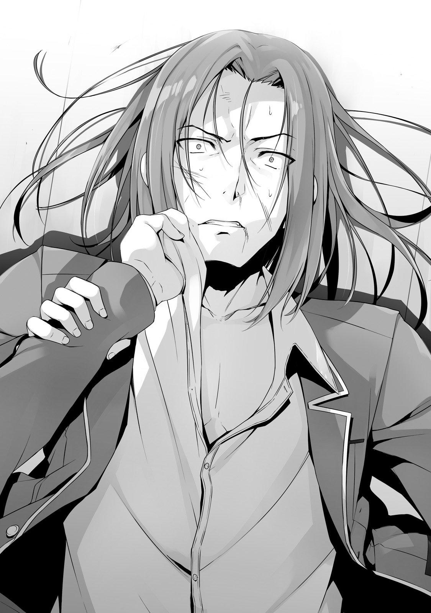
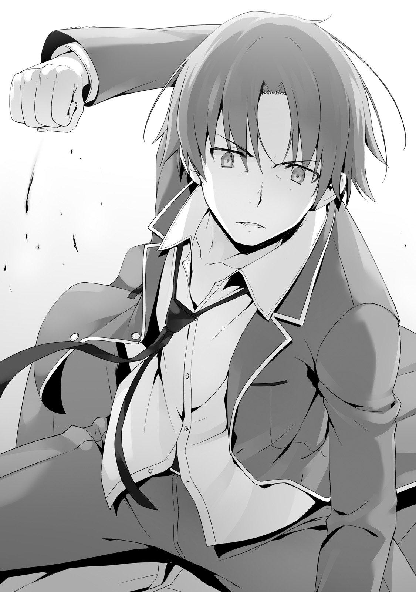
Que el sentimiento conocido como miedo de verdad existe dentro de ti.
Golpeé a Ryuuen con un golpe más poderoso que el anterior.
Y con ese golpe, borré su conciencia.
Puede que hayas planeado manipular mi corazón, pero desafortunadamente para ti, no tengo un corazón que pueda ser manipulado.
Lentamente me levanté por encima de Ryuuen.
No puedo permitir que Karuizawa esté por más tiempo en este clima frío.
— Lo siento, terminé poniéndote en una situación difícil. ¿Estás herida en algún lugar?
— Estoy... bien. Estoy entumida por el frío, aunque...
Extendí mi mano a Karuizawa, quien fue testigo de todo desde donde estaba sentada.
Cuando le toqué la mano, hacía tanto frío que parecía como si se hubiera congelado.
— ¿Desilusionada de mí?
— Obviamente... me traicionaste desde el principio.
— Es verdad. Entonces, ¿por qué no me vendiste a Ryuuen?
— ..... Por mi propio bien. Eso es todo.
Dijo eso antes de desplomarse en mi pecho, temblando.
— Tenía miedo... ¡estaba tan asustada...!
— No hay necesidad de pensar en nada en este momento. Lo que sucedió hoy, lo que ha sucedido hasta ahora. Puedes pensar en ello más tarde. Lo único cierto es que a partir de este momento, has sido liberada de tu maldición. De aquí en adelante, Manabe... no, nadie más podrá desenterrar tu pasado. En cuanto al resto, puedes actuar como siempre lo has hecho.
Ya no posee la fuerza para sostenerse, Karuizawa me confía su cuerpo.
Mirándolo desde la perspectiva de Karuizawa, han sido unos meses calamitosos.
Acoso circunstancial a manos del grupo de Manabe. Luego más intimidación después de darse cuenta de que está siendo un objetivo.
Luego, que Ryuuen saque a relucir su pasado y darse cuenta de todo es por mi culpa.
Debe estar cayéndose a pedazos, su estado emocional es inestable.
— Logró crear el presente superando su pasado. Simplemente retomará lo que dejó a partir de mañana.
Pero si hablamos de Karuizawa Kei, no hay problema.
Lo confirmé cuando volví a encontrarme con ella en la azotea.
— Soy el que te lastimó. No te pediré que me perdones. Pero, por favor, solo recuerda esto. Si algo como lo que sucedió hoy, te pasa de nuevo, definitivamente te salvaré.
— Kiyo… taka......
Aun después de todo por lo que ha pasado, Karuizawa todavía se niega a abandonar el huésped parasitario que soy yo.
Karuizawa llegó al punto en que no podrá continuar en esta escuela sin mi existencia.
Pase lo que pase, su corazón nunca se derrumbará mientras yo esté allí.
Me pregunto cómo hubiera resultado si hubiera intervenido para salvar a Karuizawa en una etapa anterior.
No hay duda de que cumpliendo rápidamente mi promesa, los sentimientos de dependencia se habrían fortalecido en Karuizawa. Pero si fuera puesta nuevamente en una situación similar, solo amplificaría su desesperación.
Pero llevando esto a la última etapa, hizo que tuviera fe en mí hasta el último momento. Al mismo tiempo, también pude comprender que Karuizawa no es alguien que me traicionará fácilmente.
Por supuesto, incluso si ella hubiera escupido mi nombre, eso habría resultado en “culpa” y desde ese momento, no hay duda de que podría usarla a voluntad.
Sería sacrílego soltar un peón como Karuizawa.
Su utilidad es secundaria, no hay nada más importante que tenerla a mano.
— Un poco por debajo de nosotros, el presidente del consejo estudiantil... no, el ex presidente del consejo estudiantil y probablemente Chabashira-sensei también están esperando. Conocen la situación hasta cierto punto y pueden ayudarte a ocuparte de las cosas, incluido este uniforme empapado tuyo.
— Entiendo... ¿qué pasa con Kiyotaka?
— Todavía necesito limpiar esto. Además, sería problemático si nos vieran juntos. Deberías regresar primero.
Le dije mientras le daba un ligero empujón en la espalda y la hacía salir de la azotea.
— Ahora.......
No puedo simplemente abandonar a estos cuatro en la azotea. Aparte de Chabashira-sensei, sería un problema si otro maestro los encuentra.
Comenzando en orden con Ishizaki, golpeé suavemente sus mejillas para despertarlos.
Dejando a Ryuuen para el final.
— ..... kuh.
— Finalmente despiertas, ¿no?
— ¿Crees que... esto arregla las cosas, Ayanokouji?
— Se acabó. No vas a decir que quieres seguir, ¿o sí?
No importa quién lo mire, está claro que esta pelea se ha resuelto.
— Usaré cualquier medio que tenga si es por el bien de la victoria.
Dicho esto, Ryuuen levantó lentamente la parte superior de su cuerpo.
— Si es necesario, incluso la guerra.
— ¿Vas a reportar que te golpeé?
— ..... Kuku. Eso sería patético. Pero, es una opción si es por ganar.
No importa lo patético que lo haga parecer, lo considerará como opción si significa ganar contra mí.
— Mientras estoy en ello, incluso podría hacer que parezca que has puesto una trampa.
— Para que quede constancia, este es solo un consejo, pero no recomendaría hacerlo. Debajo de nosotros, el ex presidente del consejo estudiantil está esperando. Aunque no conoce los detalles, el hecho de que surgió un problema sería inmediato revelado. Y el hecho de que Ryuuen fue quien puso la trampa quedó claro desde el momento en que se destruyó la cámara de vigilancia. Por otra parte, estuve en el centro comercial Keyaki durante ese período. Si es necesario, se me pueden ocurrir muchas coartadas según sea necesario.
El curso de acción natural es tener tantos seguros de tu lado como sea posible.
— ... Aunque tenías a alguien más actuando como testigo desde el principio,
¿no es así?
— Porque no dejarías de atacarme a menos que te golpeara una vez.
— ¿Crees que aceptaré esta derrota?
— Por lo menos, creo que lo harás. Solo hay una razón detrás de tu derrota, Ryuuen. Has arruinado el orden de conquista. Eso es todo. Si te hubieras enfrentado a la clase de Ichinose y luego tuvieras la experiencia de luchar contra Sakayanagi, tal vez podrías haber estado más cerca de mi nivel cuando pelearas contra mí. Te volviste demasiado curioso y te extendiste demasiado.
Rió amargamente cuando escupí esas palabras.
— Estás siendo bastante franco......
— Me gustaría decir que aceptaré una revancha en cualquier momento, pero...... no tengo ninguna intención de destacar a partir de ahora. Si es posible, ve tras otra persona.
Esperaba que palabras al estilo de Ryuuen regresaran volando hacia mí, pero por alguna razón, parece estar pensando en silencio.
— A menos que esté leyendo demasiado sobre el hecho de que hiciste que el testigo mantuviera la distancia, significa que si insisto en perseguirte, nos arrinconarás, incluso si eso significa sacrificar tu identidad y el pasado de Karuizawa. Es lo que significa.
— Me gustaría evitar eso lo mejor que pueda, pero sí, no tendría más remedio que hacer eso.
— Y no solo a mí, sino que también arrastrarás a los demás, Ishizaki, Ibuki y Albert.
No sé cómo serán tratados, pero seguramente no podrán evitar un severo castigo.
— Sin embargo, otra de tus fallas fue asumir que mi identidad y el pasado de Karuizawa serían absolutos. Si querías suprimirme, deberías haberlo hecho a una escala mayor o haber reclutado más perros guardianes.
Siempre hay un límite estricto en lo que puedes permitirte hacer en esta área llamada escuela.
— En otras palabras, mientras continúe existiendo, la Clase C estará en desventaja.
— En realidad no. Mientras no hagas ninguna acción imprudente contra nosotros, tampoco tengo intención de usar este asunto como una herramienta.
— No soy tan ingenuo como para creer en una promesa verbal como esa. Si la Clase C alguna vez te arrincona, reportarás el incidente de hoy a la escuela. ¿Me equivoco?
— Quizás.
De verdad no puedo garantizar eso.
¿Puede la Clase C funcionar correctamente cuando se les obliga a mantener la cabeza baja?
— ¿Pero qué vas a hacer? Lo que está hecho, hecho está, Ryuuen.
— Cállate. Ya terminé de luchar contra ti. Y mi batalla también ha terminado.
Ryuuen miró a Ibuki y a los otros dos antes de sacar su teléfono y escribir algo en él.
Y luego deslizó el teléfono por el suelo de la azotea, se detuvo cerca de los pies de Ibuki.
— Qué......
Ibuki, que había estado escuchando en silencio nuestra conversación, lo miró furioso. Y a mí también.
— Asumo la responsabilidad de todo. Antes de eso, te transfiero todos mis puntos.
— ¿Eh...? Ryuuen, tú, ¿qué estás diciendo...? ¿Eres estúpido?
— E-Es cierto, ¡Ryuuen-san! No es como si alguien fuera a hablar sobre lo que sucedió aquí, ¡así que no hay necesidad de que asumas la responsabilidad!
Ninguno de nosotros puede darse el lujo de hablar sobre este incidente.
En la superficie, estamos atrapados en un punto muerto.
Pero la verdad es que la Clase D está en una posición abrumadoramente ventajosa y Ryuuen se dio cuenta de eso.
Solo hay una forma de contrarrestarlo.
— Ayanokouji, soy el único perpetrador de todo esto. Una expulsión es suficiente, ¿no?
— Estás siendo bastante serio. Asumir la responsabilidad de tus acciones.
Que estúpido. Escupió esas palabras junto con la sangre que se había acumulado dentro de su boca.
— Un tirano solo es tolerado mientras su poder tenga significado. Ahora que perdí tan aplastantemente, nadie me seguirá.
Sus acciones y actitudes dominantes solo eran toleradas porque producían resultados.
Involucrar a las otras clases en su búsqueda de X ha dado lugar a que se formen olas bastante grandes. Hasta ahora ha hecho las cosas a su manera por la fuerza, pero como ha perdido, está decidido a perder el derecho de hacerlo.
Él capta las cosas mucho más rápido de lo que esperaba. Parece que tomé la decisión correcta al preparar un escenario en el que Ryuuen pudiera ir con todo.
— Tienes que estar bromeando. ¿Por qué me lo estás confiando......?
— Porque me odias. Divide los puntos privados restantes entre todos. Una vez que sea expulsado, Katsuragi y Sakayanagi declararán nulo el contrato, pero no hay nada que se pueda hacer al respecto.
Si el que hizo el contrato abandona la escuela, hay una gran posibilidad de que así sea.
— ¿¡En serio estás diciendo esto, Ryuuen-san!?
Ishizaki también se puso de pie y gritó con voz triste.
— Cállate. Puedo oírte bien sin que grites.
Ryuuen se rió débilmente.
— Manejen el resto ustedes mismos.
Parece que va en serio acerca de abandonar la escuela. Se levantó sin siquiera mirar su teléfono.
— Nos vemos.
Dejando atrás esas palabras, trató de salir de la azotea.
Ni las palabras de Ibuki ni las de Ishizaki lo alcanzaron.
— ¿Estás seguro? Sobre abandonar la escuela. Creo que te arrepentirás.
Detuve a Ryuuen.
— ¿Qué te importa?
— Si te vas de aquí sin siquiera saber la razón de tu derrota, tu crecimiento se detendrá.
— ¿Eh?
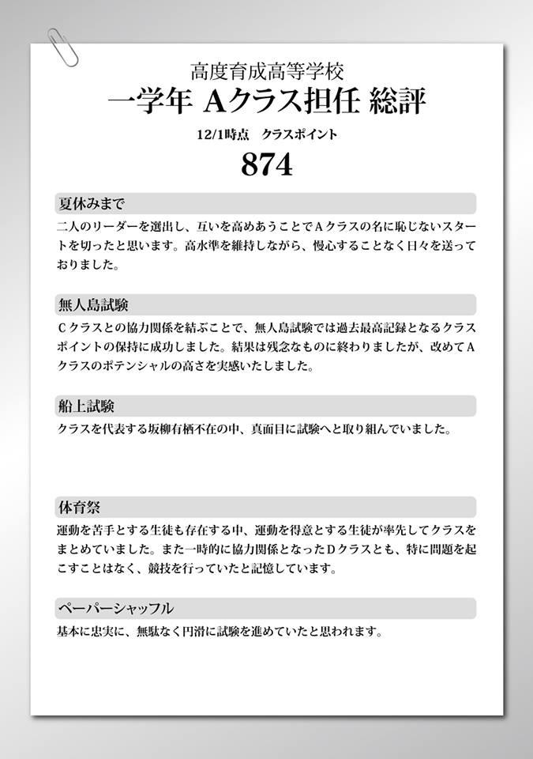
— ¿Estás bien sin saber la razón por la que perdiste contra mí?
— ... Ahórramelo. No hay ninguna razón para que me salves. En primer lugar, no puedes ganar nada, no después de saber sobre ti y Karuizawa. No se sabe cuándo los delataré.
— Es cierto... si tengo que decir una razón, entonces las cosas se pondrán más fáciles para la Clase D incluso sin mí si sacas del camino a Sakayanagi e Ichinose en mi nombre. Además, si tu contrato con Katsuragi permanece intacto, la Clase A acumulará daño lentamente. Y lo más importante, si de repente te vas, Sakayanagi e Ichinose terminarán pensando que Ryuuen fue vencido por X. Sería problemático si eso sucediera.
En otras palabras, es dar y recibir. Lo agregué después.
— Incluso si las noticias se extienden, afortunadamente no sufrí lesiones visibles. No importa quién lo mire, solo parecerá que ustedes tuvieron una pelea, ¿no?
— ..... Entonces este sería el escenario. Traté de castigarlos por no haber trabajado lo suficiente pero se cansaron de eso y tomaron represalias y como resultado, fui derrocado. Dejémoslo así.
De esa manera, tampoco me incomodará, ¿verdad?
— Tú... ¿estás realmente bien con eso?
— Todos aquí fueron demolidos solo por Ayanokouji. Al diablo con todo en este momento. Además, desaparecer minimiza el daño causado.
— Solo permíteme agregar esto. Eres libre de dejar la escuela y de dudar de mí también. Pero no tengo ninguna intención de contarle a nadie lo que sucedió aquí. También me aseguraré de que el ex presidente del consejo estudiantil, que está esperando abajo, guarde silencio sobre este asunto.
En otras palabras, aquí no sucedió nada que requiera expulsión. Si aún deseas irte, entonces no te detendré......
— Entonces no me detengas. No confío fácilmente.
Dejando esas palabras atrás, Ryuuen dejó la azotea.
Ishizaki e incluso Ibuki parecían insatisfechos con las acciones de Ryuuen.
LO QUE RYUUEN GANA Y PIERDE
Esa noche soñé con mi pasado.
Sobre esa serpiente que maté.
Tal vez si me hubiera mordido y enseñado el miedo, ¿habría tomado la misma decisión?
— ... Esto es estúpido.
Esos pensamientos no tienen sentido ahora.
Los seres humanos viven la vida que se les ha dado, incapaces de volver a hacerlo.
Y cada día, la victoria y la derrota se determinan. Habrá días en los que ganes, así como hay días en los que pierdas.
Simplemente pasó eso último ayer.
El número de veces que he perdido debe estar en los tres dígitos ahora. Incluso si solo hablamos de Ayanokouji, ayer no es mi primera derrota.
Pero, ¿qué hace que esto sea tan diferente?
Temprano en la mañana a las 8, salí con la intención de ir a la escuela.
A pesar de que hoy es el primer día de nuestras vacaciones de invierno, la escuela está abierta para las actividades de los clubs.
Normalmente, las reglas indican que es obligatorio usar uniforme al ingresar al edificio de la escuela, pero ya no es necesario que lo respete.
La práctica matutina para los clubs comenzará alrededor de las 9. Y debido a que el Centro Comercial Keyaki abre hasta las 10, debo ser el único estudiante que se dirige a la escuela.
— ... Achuu.
En medio del camino que conduce a la escuela, una estudiante solitaria estaba parada temblando de frío.
La ignoré y seguí adelante, pero cuando pasé junto a ella, me habló.
— Por fin has venido.
La escuché y seguí caminando.
— Oye, detente ahí.
Corrió hacia mí y me agarró por el hombro.
— ¿Eh? ¿Qué demonios estás haciendo? No me toques tan casualmente.
— Yo tampoco quiero tocarte. Me diste tu teléfono, ¿no? Sólo vine aquí para devolverlo.
Dicho esto, Ibuki, con la nariz roja, acercó el teléfono hacia mí.
— Podrías haberlo hecho en otro momento. ¿Cuánto tiempo has estado esperando?
— No lo sé......
Fingir no saber significa que debe haber estado esperando por algún tiempo.
¿Por qué es tan quisquillosa cuando se trata de cosas inútiles como esta?
No lo tomé. Intenté escapar de Ibuki, pero esta vez me agarró del brazo.
— ¿Realmente vas a abandonar la escuela?
— ¿No ibas solo a devolverme mi teléfono?
Ibuki me miró furiosa cuando di esa respuesta.
— ¿Recuerdas cómo peleaste con Ishizaki, Albert y los demás después de inscribirnos? Dijiste que el más fuerte es determinado por quién gana al final, sin importar cuántas veces hayan perdido antes. Y así fue contra Albert y los demás.
— ¿Y qué?
— ¿De verdad vas a ponerle fin a esto después de perder una vez con Ayanokouji?
— Lo interpreté mal y terminé sellando mi destino. Además, ahora no podría importarme menos.
— ¿Qué? Eso es realmente patético.
Ya no importa
Pensar que me haría sentir así. Qué chico.
— Tal vez.
Por eso respondí con indiferencia a la pregunta de Ibuki.
— No me digas “tal vez”.
Ibuki se negó a soltar mi brazo.
— Querías que me fuera, ¿no? Si es así, ¿no es esto perfecto?
— Te ayudé porque dijiste que nos llevarías a la Clase A. ¿Y sin embargo, así es como terminará?
Tenía la intención de tomarme mi tiempo, pero Ibuki realmente estaba esperándome.
Parece que todavía no ha dicho todo porque sigue y sigue.
— Hasta ahora toleré tu actitud y comportamiento dominantes porque creía que compartíamos el mismo objetivo. El otro día, cuando no nos diste una explicación sobre la sanción de la Clase C, nadie se quejó. Porque todos creían eso. Al final, llegaríamos a la Clase A. ¿Pero simplemente te vas a ir? Eso es demasiado patético.
Se detuvo a respirar, y luego añadió.
— ¿Hay algo más patético que esto?
— ¿Cuánto tiempo intentas seguir interpretando esto a tu favor, Ibuki?
Dejé de caminar
Prefiero no hacer nada innecesario porque me duele todo el cuerpo.
— Te dije eso, niña insignificante, que si me seguías te llevaría a la Clase A.
Pero eso solo fui yo ofreciéndote una zanahoria amarrada a una vara.
Sabes de mi contrato con la Clase A, ¿verdad? No tenía intención de compartirlo con ustedes.
— ¿Entonces estás diciendo que el plan era ir solo a la Clase A?
— Esa era la idea, sí. No hay manera de que me haga cargo de verdad de mis compañeros, ¿no?
Seguramente incluso Ibuki estará convencida si digo eso.
— Es suficiente, ¿no? Nos vemos.
— 800 millones de puntos.
— ..... ¿Eh?
— Después de que me entregaste tu teléfono ayer, estuve pensando seriamente si debía o no echar un vistazo a tus puntos. Pensé que no importaría, así que eché un vistazo.
Encendió mi teléfono y me dirigió la pantalla.
Es la gráfica de los puntos privados a lo largo de tres años que había preparado.
— Si solo fuera para una sola persona, 20 millones de puntos son suficientes.
Pero, ¿qué pasa con esta estrategia? 800 millones es la cantidad de puntos necesarios para que toda la Clase C llegue a la Clase A, ¿no es así?
Aunque no creo que sea posible ahorrar tanto.
— Deja de soñar. Estaba jugando con eso.
Le quité a la fuerza mi teléfono a Ibuki.
— Hiyori y Kaneda tomarán la iniciativa a partir de ahora. Todavía es posible mientras Ayanokouji no haga un movimiento.
— Eso no es lo que quiero decir.
Esta maldita Ibuki. No se ha transferido ni un solo punto privado. Todo está completamente intacto.
Qué problemático.
— ¿Qué quieres que te diga?
— Si vas a abandonar la escuela, entonces pelea conmigo.
Una vez más, qué propuesta tan loca es la que está haciendo.
Los idiotas son fáciles de usar pero se salen de control de vez en cuando.
— No hay forma de que puedas mover tu cuerpo adecuadamente, no con las lesiones de ayer y el frío de hoy.
Noté que no ejercía mucha fuerza con el brazo que estaba usando para agarrarme de la manga.
Me quité el brazo que sujetaba mi manga a la fuerza y comencé a caminar. Pero al momento siguiente, fui golpeado.
Caí sobre el pavimento de piedra.
— ... Duele. Ni siquiera puedo caer sin lastimarme.
Ese bastardo de Ayanokouji. Ha destruido completamente mi cuerpo.
— Ahh, esto es refrescante. Si vas a renunciar, entonces vete ya.
Ibuki caminó de regreso al dormitorio.
¿Cuánto tiempo ha estado esperando aquí?
PARTE 1
— Sakagami, tengo algo que decir. Te lo dije ayer.
Después de venir solo a la escuela, fui con mi maestro. Había hecho una cita con antelación desde el teléfono fijo del dormitorio.
La razón por la que esperé un día es porque sería demasiado problemático abandonar la escuela justo después de ese incidente.
Es más que probable que se convierta en un problema considerando lo que le hice a la cámara de vigilancia.
Más aún si el ex presidente del consejo estudiantil sabe de ello. Planeo liberarme.
— Entiendo. Prefiero no hablar parado a aquí. Acompáñeme a la sala de orientación.
— Por supuesto.
— Pero antes de hacer eso, hay un problema.
— ¿Problema?
— Por favor, salgan.
Sakagami habló hacia la sala de profesores y llamó a unos estudiantes.
No mucho después, los dos se presentaron.
— Ryuuen-san.....
— ¿Eh?
Son Ishizaki y Albert.
¿Por qué están los dos aquí después de esa idiota de Ibuki?
— Estuvieron esperando aquí desde la madrugada después de preguntar si habías venido o no. No me escucharon ni siquiera cuando les dije que te llamaran, así que estoy un poco atascado aquí. Primero, haz algo con respecto a estos dos.
— ¿Qué demonios están haciendo? Piérdanse o los mato.
— Nosotros---
Miré a Ishizaki que estaba a punto de decir cosas innecesarias y me distancié.
— Uuuu......
Sakagami tocó sus gafas mientras me veía intimidarlos.
— ¿La cámara de vigilancia fue destruida ayer? ¿Tienen algo que ver con eso?
— Yo hice eso solo. Vámonos ya.
Una descuidada interacción aquí solo hará que estos chicos se metan en problemas.
Los pasé por alto, ignoré a Sakagami y comencé a caminar hacia la sala de orientación. A pesar de sospechar de Ishizaki y Albert, Sakagami los instó a regresar mientras me seguían.
— Lo entiendo más o menos por tu llamada, pero vamos a ir paso a paso, Ryuuen. En primer lugar, ¿admites haber estropeado la cámara de vigilancia con un spray?
— Sí. Lo hice por mi cuenta.
— Y una cosa más. ¿Admites una pelea entre tú, Ishizaki, Albert e Ibuki?
— Lo admito. Asumo toda la responsabilidad. Lancé el primer golpe. Como resultado, terminaron contraatacando.
No hay necesidad de involucrarlos en esta derrota.
— Si entiendes eso, esto hace las cosas más fáciles.
— ¡Por favor, espera, Ryuuen-san! Nosotros también esta---
Lancé una patada hacia Ishizaki, quien me siguió en lugar de regresar. Un acto de violencia o dos en este punto no importan para alguien que va a abandonar la escuela.
— ¿Qué estás haciendo, Ryuuen?
— ¿Cuántas veces vas a hacer que lo diga? ¿La paliza que te di ayer no te satisface?
Quité mis ojos de Ishizaki, quien se agachó de dolor.
— Puedes agregar eso ahora mismo a mi penalización.
— ... Independientemente de las circunstancias, no serás el único en problemas si esa situación vuelve a ocurrir.
— Cállate. De todos modos este es el final.
Después de dirigirme a la sala de orientación, me puse a trabajar de inmediato.
— Apúrate, Sakagami. Por favor, sigue adelante con el proceso de abandono.
— Parece que hay un malentendido, así que permíteme corregirte.
Sakagami habló lentamente.
— Hay contradicciones en de tus declaraciones.
— ¿Eh? Espera un minuto. ¿Contradicciones?
— Por lo que entiendo, ¿sucedió algún tipo de problema entre tú y la Clase D?
¿Podría ser que, en el último minuto, Ayanokouji lo hizo?
Si ignora mi propuesta e informa lo que le pasó a Karuizawa a la escuela, entonces no solo seré yo, sino que también Ibuki e Ishizaki recibirán el castigo.
No terminará solo con la pérdida de nuestros puntos privados.
— ¿Presentaron una queja contra nosotros o algo así?
— ¿Queja? Por lo que yo entiendo, un estudiante de la Clase D también participó en la destrucción de la cámara de vigilancia.
— ¿Qué......?
Por un momento, no pude entender lo que estaba diciendo y me sentí confundido.
— La clase D ya pagó los puntos privados que cubren el costo de las reparaciones. Lo que quería confirmar es si estás de acuerdo o no con repartir la culpa de manera equitativa.
— Me está jodiendo......
Si crees que esto me impedirá abandonar la escuela, entonces estás cometiendo un gran error, Ayanokouji.
— Voy a dejar la escuela.
— ... ¿Aunque no haya problema?
Sakagami no es tonto.
Ya ha adivinado de esta situación que algún tipo de problema ocurrió ayer en la azotea.
— Correcto. Ya no tiene sentido quedarse en esta escuela.
Él tiene que respetar la decisión del estudiante.
— Ya veo. Si ya lo has decidido, entonces no puedo detenerte.
Sakagami dijo eso y sacó un papel del cajón.
— Por favor escribe tu nombre, número de identificación de estudiante y la razón del retiro aquí.
— Dame un minuto.
Cogí el bolígrafo pero Sakagami sacó dos papeles más.
— Una vez que hayamos terminado contigo, entreguémosles también a Ishizaki y Yamada uno de estos.
— ... ¿Qué? No tienen nada que ver con esto.
— Sí, en verdad no tienen nada que ver con esto. Pero es su deseo. Si eliges irte, ellos harán lo mismo y yo no puedo disuadirlos.
Ese bastardo de Ayanokouji... ¿les sugirió algo innecesario a estos idiotas?
Mantener a Ishizaki y Albert como rehenes para evitar que me vaya.
Si elijo irme, caerán conmigo y mi retiro carecería de sentido. Sería lo mismo que voltear mis prioridades.
— Mierda.....
— Personalmente, preferiría que alguien de mi clase tampoco se retire. Así es como me siento.
Sakagami miró el papel que tenía en la mano.
— En este punto, todavía puedes resolverlo como nada más que daño a la propiedad. Esta es tu única oportunidad.
— Me pregunto exactamente qué ventaja hay en que me quede aquí.
Él debe saber que, al menos, ya no tengo ninguna intención de causar problemas a Sakayanagi y los demás.
— No me voy a ir.
Le devolví el papel y me puse de pie.
PARTE 2
En muy poco tiempo empezaron a circular extraños rumores entre los de primer año.
Que Ryuuen Kakeru ha renunciado como líder de la Clase C.
Que ha dejado de juntarse con Ishizaki y los demás. Que ya no le habla a nadie.
Es casi como si me estuviera mirando justo después de la inscripción.
Ryuuen, ahora pasa su tiempo solo.
Me pregunto si en el futuro llegará un día en que encuentre algo. No lo puedo decir. Pero puedo decir esto...
Él y yo somos similares. Y puede que todavía valga la pena usarlo.
PALABRAS DEL AUTOR
Han pasado cinco meses. Soy Kinugasa Shougo.
El anime se emitió este verano. Me pregunto si todos lo disfrutaron.
Como espectador, me impresionó el mundo de “Youzitsu” que solo podía ser transmitido por el anime.
Hay algo muy emotivo en ver cómo la historia que escribiste cobra vida en la pantalla.
Por cierto, recientemente me extirparon quirúrgicamente un “ateroma” que estuvo en mi espalda durante unos 10 años (aproximadamente 7 centímetros de diámetro).
Esa sensación de haberlo sacado de tu espalda...
Como resultado, no pude usar el respaldo durante aproximadamente una semana y eso fue difícil. Pero mi espalda ahora está bien otra vez.
Con respecto a las circunstancias detrás de la demora en el lanzamiento del volumen 7, después de tener en cuenta el anime emitiéndose más su contenido y el hecho de que se mostraría la confrontación directa con la Clase C de Ryuuen, pensé que sería mejor liberarlo después de que todo hubiera terminado.
Fue lanzado este mes después de un juicio como ese.
En los últimos meses, más y más personas se han dado cuenta de “Youkoso Jitsuryoku Shijou Shugi no Kyoshitsu e” y estoy muy agradecido por ello.
Por supuesto, estoy aún más agradecido con aquellos de ustedes que han sido mis lectores desde antes del anime.
Y con todos apoyándome, continuaré publicando en el futuro también.
Muchas gracias.
Aquí, en el volumen 7, primero que todo, la lucha con Ryuuen se ha resuelto, pero eso no significa que el papel de la Clase C haya terminado.
Una nueva y creciente presencia y las acciones de Ryuuen que ahora se ha hecho a un lado, etc.
Y como el tercer trimestre representará una nueva etapa, tal vez no sea solo el consejo estudiantil, sino también el segundo año y el tercer año participen y las batallas contra la Clase A y la Clase B también comiencen.
No podré mostrarles todo de inmediato, pero en un futuro próximo, se puede esperar que los roles de Ichinose y Sakayanagi, así como los roles de Hirata y Katsuragi (hay muchas personas para enumerarlos aquí) aumenten.
¿Acabarán siendo enemigos o aliados? Por favor, presten atención a esa parte.
Ahora, para recuperar el tiempo perdido, estoy progresando constantemente con el siguiente volumen. Y con eso, el próximo volumen 7.5 será una colección de historias cortas que representan las vacaciones de invierno.
Una historia centrada en los eventos de Navidad.
La historia principal de las vacaciones de invierno girará en torno a la chica que se muestra en la siguiente portada y las circunstancias románticas que ocurren a su alrededor.
Por cierto, la expresión “una colección historias cortas” no es un error, sino que los volúmenes 4.5 y 7.5, y todos los volúmenes futuros como estos representarán básicamente las largas vacaciones.
Vacaciones de primavera. Vacaciones de verano. Vacaciones de invierno.
Historias sobre ellas. Como tal, todos se conectarán a la historia principal.
Por favor sean conscientes de ese hecho.
Y una vez más, gracias por su continuo apoyo.
HISTORIAS CORTAS
IBUKI HISTORIA CORTA
EL DÍA DE IBUKI, ISHIZAKI, ALBERT Y SHIINA
Esto sucedió después de que terminó el segundo trimestre, en el primer día de vacaciones de invierno. A su vez, fue dos días después de que ocurrió el
"Incidente".
Ese día para Ibuki Mio era sumamente aburrido.
Bajo el frío aire, miré mis puños enrojecidos mientras suspiraba.
—¿Qué estoy haciendo...?
El aliento que exhalé se disipó lentamente frente a mis ojos.
Durante el primer día de las vacaciones de invierno, no sabía lo que estaba pensando, me dirigía directamente al bulevar que llevaba a la escuela después de despertarme.
Después de eso golpeé a Ryuuen y después de eso, debería haber ido a los dormitorios para calentarme.
Pensé que esto era suficiente para satisfacerme.
Sin embargo, no sabía por qué, pero seguía en el bulevar.
—Aaah. Hace mucho frío.
Al estar sola, empecé a reflexionar.
Sobre lo que pasó ayer.
El incidente de ese momento.
Todos estos disturbios sucedieron con rapidez, sólo podía creer que estábamos poseídos por algo.
Todas las cosas que pasaron hasta ahora, ese evento.
No me digas que yo—
No, incluyendo a Ryuuen, todo lo que pasó estaba en las expectativas de ese hombre.
En retrospectiva, desde que entré a esta escuela, no hubo un día tranquilo y se produjeron muchas conmociones.
Inmediatamente después de ser asignado a la Clase C, Ryuuen Kakeru comenzó a controlar la clase.
Por supuesto, la gente de la clase no lo reconoció al principio, y lo desafió.
Ishizaki y Komiya no necesitan ser mencionados, ni siquiera Kaneda reconoció la actitud de Ryuuen de usar el poder para controlar.
Ryuuen, con ese tipo de actitud, naturalmente sería marginado y suprimido por la clase C.
Incluso le transmitió a la gente la sensación de que los abusos aparecerían dentro de la clase.
Sin embargo, ese tipo se resistió de frente. Ni siquiera le importó la existencia de las cámaras de vigilancia y las reglas de la escuela y mandó a Ishizaki y a los demás a volar... Sinceramente, me sorprendió en ese momento.
Pero Ryuuen lo había entendido desde el principio. Los conflictos dentro de la clase no podían ser reportados a la escuela. Porque eso sería lo mismo que dispararse uno mismo en el pie.
Ryuuen repitió esas cosas indiscriminadas varias veces y al mismo tiempo entendió el punto más cercano a los límites de las reglas.
De hecho, hasta ayer, Ryuuen había usado muchos métodos para dirigir a la clase C.
Esos pensamientos y complots suyos le proporcionaron "orgullo".
En sus ilusiones, creía que nunca perdería si había violaciones de las reglas.
Ese incidente era inevitable, por eso sucedió.
Esa derrota tuvo su origen en que la clase C no pudo detener al estudiante Ryuuen Kakeru.
Aunque todo esto que le pasó al horrible Ryuuen no tenía nada que ver conmigo, no sabía por qué sentía ira.
No sabía la razón por la que sentía ira.
Aunque no pensara en nada, no podría eliminar esta ira de mí.
¿Qué es lo que me hace sentir irritada?
—¡Ah, en verdad! No pienses en ello.
¿Por qué tengo que perder el tiempo de las vacaciones de invierno en reflexionar sobre esas cosas?
Antes de que me diera cuenta, el bulevar que conducía al edificio de la escuela y que acogía a las vacaciones de invierno estaba repleto de estudiantes que llevaban ropa informal.
Seguramente se preparan para ir al centro comercial Keyaki para disfrutar de las vacaciones de invierno.
Pase lo que pase, eso no tiene nada que ver conmigo. No existe nadie que pueda ser considerado mi amigo.
—Demasiado lento...
Ya había estado esperando durante 30 minutos. Mi paciencia ya estaba en su límite, así que saqué mi teléfono para tratar de exhortar a la otra persona.
—Oye, Ibuki. Te he hecho esperar.
Antes de llamarlo, el objetivo se me acercó.
Ishizaki dijo eso e inició una conversación conmigo. A su lado estaba Albert.
—¿Cuánto tiempo querías que esperara?
—Lo siento. También estábamos batallando un poco.
—... ¿En serio?
—De todos modos, podría considerarse un éxito. Pero Ryuuen-san está muy enfadado.
—Supongo que sí. Tus heridas también han aumentado.
Ishizaki debió ser fuertemente golpeado en la cara por él, parecía muy doloroso y acariciaba su cara enrojecida.
Sin embargo, su cara no mostraba ira o arrepentimiento, se veía muy alegre.
—Te han dado una paliza y aun así pareces tan contento, ¿eres masoquista?
—No bromees. Estoy muy feliz, eso es todo.
Eh... ¿no es eso ser simplemente un masoquista?
Aunque me pareció que Ishizaki tenía los ojos parpadeando y parecía muy satisfecho.
—Hasta ahora has sido reprimido por Ryuuen, ¿no deberías mostrarte resentido con él?
Le pregunté la duda que sentía con otro significado.
A Ishizaki se le había culpado regularmente de su incompetencia bajo la dictadura de Ryuuen.
Añadiendo un castigo a eso, la persona a la que más golpearon fue Ishizaki.
—A decir verdad, con respecto a eso, sin duda me siento insatisfecho....
pero...
—¿Qué?
—Nada. Ahora lo reconozco, o quizás debería decir que lo respeto.
¿Fue porque a este tipo lo golpearon tantas veces que su cerebro se volvió extraño? ¿Ir tan lejos como para reconocer esa clase de persona?
¿Y respetarlo?
—A mis ojos es sólo un perdedor que se dejó llevar demasiado.
—No digas esas cosas sobre Ryuuen-san.
Uwa, qué asco. Probablemente fue golpeado demasiadas veces y su cerebro se volvió raro.
Pero de Albert, que estaba parado detrás de Ishizaki, también pude sentir una atmósfera similar a la de Ishizaki viniendo a través de sus gafas oscuras.
—...No me digas, ¿tú también piensas de la misma manera?
Me enfrenté a Albert para preguntarle y asintió ligeramente con la cabeza sin decir nada.
—Aaah. No puedo entenderlo. ¿Qué hay de bueno en ese tipo?
Aunque le preguntara esto, Albert no me contestaría.
—Si te lo tomas en serio, aunque el adversario fuera Ryuuen, también podrías ganar.
Si fuera una pelea normal, Albert tendría una ventaja abrumadora.
En realidad, Albert obtuvo la victoria en tres de los tres enfrentamientos directos del pasado.
Sólo que mientras yo no me daba cuenta, esos dos estuvieron repitiendo constantemente la pelea, y al final, Albert se convirtió en uno de los generales de Ryuuen. Comprendí la situación hasta cierto punto, pero seguía siendo realmente inconcebible.
Sin embargo, Ishizaki parecía entender a Albert.
—Albert odia las peleas.
Esto debe ser algo que los hombres entienden entre ellos, Ishizaki se rió mientras golpeaba el costado de Albert.
—¿Tienes ese cuerpo y aun así odias las peleas?
—Aparte de cuando Ryuuen-san le ordenaba golpear, ¿has visto alguna vez a Albert golpear a alguien?
—... Probablemente no. No, pero, con más razón entonces.
Mientras no siguiera a Ryuuen, no necesitaría golpear a nadie.
—Ryuuen-san le permitió experimentar lo que es la hombría.
Sin saber por qué, Ishizaki dijo esas palabras que no entendí y le dio una palmada en la espalda a Albert.
—Ya veo, olvídalo. No debí esperar una razón seria.
En resumen, había entendido la situación a partir de las palabras de Ishizaki, así que era hora de volver.
Hoy he estado de pie afuera por muchas horas, estoy casi muerta de frío.
—Voy a volver.
Dije esto, pero no sabía por qué, Ishizaki me miraba con una cara seria.
No pude evitar querer golpearlo, pero me las arreglé para contenerme.
—Ibuki, si no te importa, ¿quieres venir con nosotros a tomar un té?
—...¿Qué?
¿Qué acaba de decir esta persona?
No logré entender sus palabras, así que me mantuve firme. Ishizaki preguntó de nuevo.
—Vamos a tomar un té.
No me digas que este tipo me está invitando.
¿El idiota de Ishizaki me está invitando?
En el momento en que reflexioné sobre esto, Ishizaki lo negó nerviosamente.
—No, lo diré por adelantado, no tengo pensamientos raros. Soy muy normal, ¿me preocupa más Ryuuen-san? Ah, sí lo digo así, se vuelve más raro. En resumen, no es así. Y Albert viene con nosotros.
¿Qué clase de explicación fue esa?
Pero sus palabras no parecían mentiras.
Aunque Ishizaki sea grosero y violento (aunque no tengo derecho a decir eso de los demás), su personalidad es muy honesta.
Comprendí que Albert también quería tomar té conmigo, aunque no sabía por qué querían hacerlo.
Este tipo de cosas nunca habían sucedido hasta ahora, ¿de dónde vino este impulso repentino?
¿O es porque los acontecimientos de ayer les dejaron una profunda impresión?
—Si algo pasa, también te noquearé, no hay problema en eso.
—Te digo que no tengo esa clase de intención. Definitivamente no tendré ese tipo de pensamientos hacia ti. Definitivamente no.
Al ser rechazada de esta manera tan directa, ¿por qué me hizo sentir malhumorada?
—En resumen, nos acompañarías un rato. Después de todo, no tienes nada planeado para las vacaciones de invierno, ¿verdad?
—...Lo comprendo.
Aunque no estaba dispuesta, mi agenda para las vacaciones de invierno estaba completamente en blanco.
Además, como había estado de pie afuera durante tanto tiempo, mis manos estaban casi congeladas.
—Si quieres ir, entonces date prisa.
—Albert, ¿tú también quieres venir?
Frente a Ishizaki, que le preguntaba, Albert asintió con calma.
PARTE 1
Durante el primer día de las vacaciones de invierno, había estudiantes por todas partes en el Centro Comercial Keyaki.
Hasta el punto de que no pude evitar lamentar haberme precipitado al venir aquí.
—Volviendo al tema principal, no esperaba que te quedaras de nuestro lado.
—¿Qué estás diciendo?
—Estoy hablando del problema de Ryuuen-san. Pensé que lo odiabas.
—¿Ja? Está claro que lo odio.
¿Qué tipo de malentendido le condujo a esa conclusión?
—Entonces, ¿por qué contactaste con nosotros hoy?
—Eso es...
Fue sólo que me puso de mal humor que ese tipo huyera sin permiso.
Pero Ishizaki y los demás no serían capaces de entender mis sentimientos.
Desde que entré en esta escuela hasta ahora, nunca me ha simpatizado Ryuuen.
Fue sólo que reconocí sus habilidades en cierta medida.
Por eso me sentía irritada por las cosas que pasaron en estos dos días.
—De todos modos, no tiene nada que ver contigo.
—Bueno, eso es verdad.
Me pareció que la persona que preguntó no tenía intención de indagar más.
Ishizaki masticó los cubos de hielo mientras bebía café helado con un montón de jarabe gomoso dentro.
—¿Por qué tomas café helado durante esta temporada?
—No hay nada malo en eso. Es porque hace mucho frío, por eso beber bebidas frías es más delicioso.
Por supuesto, Albert y yo pedimos bebidas calientes.
—De todos modos, ¿qué va a pasar cuando empiece el tercer trimestre?
Ishizaki tomó la iniciativa, y después de terminar su bebida su cuerpo temblaba.
Parecía que los cubitos de hielo estaban muy fríos. Es un estúpido.
—Cómo sabría ese tipo de cosas.
—Pero.... tenemos que pensar en eso, ¿no?
¿Exactamente qué quería Ishizaki que dijera?
Aunque no lo pensáramos, estaba muy claro.
—Aunque lo piense, la decisión de Ryuuen no cambiará. Eres libre de preocuparte libremente, pero seguramente estés perdiendo el tiempo.
—Uh....
Usé un tono intenso para decir palabras severas.
Yo lo sabía. Él quiere que lo ayude, pero fue una pérdida de tiempo.
Aunque creí que pensaban en cosas indecentes, al final era esto.
—Pero.
—Sin peros.
—La cosa con Ryuuen-san es así, la Clase D...
—Detente.
Usé el tono más directo que había usado hoy para detener a Ishizaki y lo miré con ira.
—Escucha atentamente. Prohíbo cualquier tema relacionado con "ellos". Si no puedes respetar eso, me iré.
Ya que le dije eso, Ishizaki no tuvo más remedio que admitir la derrota.
—Entiendo. De verdad lo entiendo.
Ishizaki, aterrado, intentó mitigar mi estado de ánimo.
Después de todo, no sabía por qué tenía que discutir estas cosas con estos dos.
—Me iré cuando termine esta bebida.
Todavía quedaba la mitad de la bebida. Debería beberlo un poco más rápido.
—No voy a hablar de eso, ¿de verdad odias ese tema?
—Odio eso. Y después de ayer, el número de personas que odio ha aumentado a 2.
Eso es todo.
—Buenos días, Ibuki-san.
Cuando teníamos esta fiesta de té sin hablar demasiado, Shiina vino a nosotros.
Tenía su mochila y una bebida en sus manos.
—¿Qué?
Cuando le contesté indistintamente, Shiina sonrió y dijo.
—Empecé una conversación contigo por accidente ya que estaba pensando que esta combinación es una vista poco común. ¿No es así?
—¿Lo es? Frecuentemente estamos juntos.
—No es verdad.
Odiaba que los demás me consideraran que "siempre estaba junto a Ishizaki", así que le contesté inmediatamente.
—¿Puedo acompañarlos?
En los exámenes que necesitaba usarse el cerebro, ella podía ser considerada el tesoro de la clase C. Junto con Kaneda, Ryuuen les había pedido ayuda varias veces. Pero al mismo tiempo, normalmente no tenía ningún contacto con nosotros.
—No hay problema con que se una, ¿verdad?
Debido a que era una estudiante reconocida por Ryuuen, Ishizaki y Albert la aceptaron fácilmente.
—Entonces, disculpen las molestias.
—¿Adónde fuiste con el uniforme de la escuela?
—Soy del Club de la Ceremonia del Té. Durante las vacaciones de invierno también tenemos que continuar con las actividades del club.
—Club de ceremonia de té.... ¿qué haces ahí?
—Hacemos muchas cosas. Aprender la etiqueta, cómo manejar las herramientas o recibir orientación.
—Ja, así que todavía hay gente que quiere hacer ese tipo de cosas.
Ishizaki interrumpió su conversación con Shiina, y dijo que eso mientras se aburría.
Aunque yo no lo sabía por completo, por Shiina me enteré de que había muy pocos miembros en el club de la ceremonia del té.
—Si no te importa, ¿quieres probar a unirte al club?
—No me voy a unir. Odio las actividades de club.
Ishizaki empezó a masticar la mitad restante de los cubitos de hielo en la taza.
—Voy a cambiar un poco el tema.... en realidad, vi Ryuuen-kun esta mañana.
Shiina también mencionó a Ryuuen.
—Como llevaba el uniforme de la escuela, estaba un poco preocupada.
—No te preocupes, no pasa nada.
—¿De veras? Me siento tranquila después de escuchar tus palabras.
Con estos miembros, si ese tipo no está presente, naturalmente lo mencionarían.
Planeaba irme en silencio, pero Albert me agarró del hombro.
—¿Qué estás haciendo? No importa si me voy. Tampoco hay nada que decir.
Frente a mí, que decía estas palabras, Albert señaló en silencio las bebidas.
—..¿Quieres que no me vaya hasta que termine la bebida?
Parece que como dije que me iría cuando terminara la bebida, no tenía más remedio que hacerlo.
Ahora mismo estaba de mal humor, así que planeaba terminarla.
—Muy caliente.
—Vaya, vaya, no te fuerces. Recuerdo que Ibuki-san no puede manejar la comida caliente, ¿verdad?
—Tan ruidosa. Que yo pueda manejar o no la comida caliente no tiene nada que ver contigo.
—Pero somos compañeras de clase.
Aunque seamos compañeras de clase, ¿qué hay con eso?
Ahora mismo, pedir ese tipo de cosas en la clase C es cruel.
—Comenzando el tercer trimestre bajaremos a la clase D. La batalla ya ha terminado.
—No necesariamente, nosotros, la clase C, volveremos a subir.
Shiina dijo con una cara seria aquellas palabras que hacían que la gente se sintiera incómoda.
—¿Qué es eso? ¿Tienes algún fundamento? o ¿quieres liderar la clase?
—Por supuesto que ayudaré a la clase. Después de eso, reuniremos las fuerzas de todos.
Aunque había pensado que esta niña siempre decía cosas como si le faltara algo, nunca esperé que fuera así.
Lo que más le falta a la Clase C es unión, es decir, ayudarse mutuamente.
Eso era algo que no existía en una Clase C que dirigía Ryuuen en solitario.
Hasta Shiina debería entender esas cosas.
—Puede que estemos muy atrasados en comparación con otros. Pero por esa razón, de ahora en adelante necesitamos ayudarnos para ser promovidos a las clases más altas, ¿no estás de acuerdo?
—Ya veo. Entonces hazlo lo mejor que puedas. No voy a participar.
Realmente quería irme pronto, pero aún no he terminado la bebida.
Si lo hubiera sabido, no habría pedido una bebida caliente y hubiera preferido una fría.
—¿Por qué estás tan irritada? Aunque seas así normalmente...
—Tú también, ¿planeas pelear conmigo?
—No planeo hacer eso. Por cierto Iwasaki-kun, parece que has sufrido muchas heridas.
—Así que sólo te has dado cuenta ahora. Y no me llamo Iwasaki, sino Ishizaki.
—Jaja, sólo estoy bromeando. Recuerdo perfectamente los nombres de todos mis compañeros.
Parece que la razón por la que Shiina no se acercó, quien normalmente no se relaciona con nosotros, no es porque Ryouen no está aquí.
Es porque vio las lesiones de Ishizaki y Albert y se preocupó por los detalles específicos.
—¿Cómo te hiciste esas heridas?
—Bueno, pasaron algunas cosas.
—¿Algunas cosas?
—En realidad, ayer--
Creí que Ishizaki diría cosas innecesarias, así que me uní a la conversación sin querer.
—Porque tuvo diferencias con Ryuuen sobre las políticas y discutieron.
Después de eso, le dieron una paliza.
Es así, ¿verdad? - Miré así a Ishizaki y asintió con la cabeza.
—Diferencia en las políticas.... es algo raro de ver.
Como Ishizaki solía estar pegado a Ryuuen, era difícil imaginar que esas cosas ocurrieran.
—¿No me digas que tuviste una pelea con Ryuuen-kun?
Eso es ridiculizar a Ryuuen mientras no está aquí.
Albert se dio cuenta de lo que quería decir, miró a Shiina y asintió.
—Creo que a veces pelear es bueno, pero por favor, hagan las paces lo antes posible. Si lo necesitas, yo también puedo ayudarte.
—¿Qué puedes hacer?
—Le diré a Ryuuen-kun: "Por favor, deja de pelear".
Al parecer, no tenía intención de hacer nada especial y se lo transmitiría directamente a Ryuuen.
Siendo ella así, es realmente afortunada de no haber sido golpeada por Ryuuen hasta ahora.
Sin embargo, Shiina no es buena en los deportes y no le gustan las conductas violentas, así que Ryuuen no se lo tomaría en serio.
Después de todo, nunca ha hecho nada que fuese en contra de las políticas de Ryuuen, como debería ser.
—Fu, he terminado mi bebida. Adiós.
—¿Vas a irte ahora?
—Les he hecho compañía hasta este punto, ya debería ser suficiente.
—Ah, por cierto, Ibuki-san. He escuchado que pronto se estrenarán películas interesantes. Si no te importa, ¿quieres que las veamos juntas?
—No iré.
Si quisiera ir, iría sola.
—Ya veo.... es una pena.
Levanté la taza vacía y dejé mi asiento.
Si seguía jugueteando con estos tipos, temía que me saliera urticaria.
Además--
Ahora mismo, nunca había estado tan enfadada conmigo misma.
Es cierto.
Finalmente me había dado cuenta de por qué estaba tan irritada en estos dos últimos días.
No fue culpa de Ryuuen, ni de Ishizaki ni de Albert. Y por supuesto, no estaba relacionado con Shiina que apareció por casualidad.
No podía perdonarme a mí misma.
Esa era la razón de mi irritación.
Si fuera un poco más confiable, las cosas no se habrían desarrollado de una manera que hizo que la Clase C estuviera en una situación tan desesperada.
Ryuuen Kakeru no habría cometido un error como líder.
Es porque llegué a esta conclusión.
Si me quedaba en este lugar, seguiría perdiendo los estribos.
Por eso quería darme prisa y estar sola.
—Hey, Ibuki.
Ishizaki me llamó, a mí, que quería escapar.
—¿Qué más quieres?
—No cargues con todo tú sola, también puedes consultarnos.
—¿Ja...?
Sin querer hice un sonido seco.
—Estás bromeando. ¿Quién te buscaría para discutir las cosas? Y no hay nada de qué hablar.
Un grupo de personas que normalmente son muy estúpidas, pero ¿por qué eran tan agudas sólo en momentos como éste?
—Ibuki-san, hablemos juntas de nuevo la próxima vez.
Shiina también dijo eso, y el silencioso Albert me miraba fijamente.
Parecía como si estas tres personas me hubieran invitado para animarme.
En retrospectiva, no importa si fue Ishizaki o Albert quien me invitó a tomar el té, o Shiina después de ver el grupo, el primer miembro con el que hablaron siempre fui yo.
Qué es esto.
Nunca había esperado este tipo de cosas.
Al no ser capaz de soportar esta situación, empecé a caminar.
No esperaba ese tipo de ambiente cálido.
Pensé que hoy era un día extremadamente aburrido y al mismo tiempo era un día sin escapatoria.
Pero, en realidad, el "verdadero día sin escapatoria" llegaría un poco más tarde.
CHABASHIRA HISTORIA CORTA
OSCURIDAD INVISIBLE
Ayanokouji se puso en contacto con su padre.
Caminaba por el pasillo mientras mi corazón trataba de soportarlo con cautela.
—...¿Qué quieres decir con que te has dado cuenta de todo?
Aunque no tenía clara la situación, mostré una apariencia tranquila de profesora.
—Chabashira-sensei. Digo que todo lo que me ha dicho es básicamente mentira.
—¿De qué estás hablando?
No es bueno. No puedo tratar al chico delante de mis ojos como un estudiante normal de preparatoria.
—Ese hombre nunca se ha puesto en contacto con usted, Chabashira-sensei. Por supuesto, tampoco tenía usted que obligarme a dejar la escuela.
—No, tu padre me pidió ayuda. De hecho, al igual que te lo dije, constantemente he tratado de que te expulsen.
La impaciencia apareció en mi corazón y Ayanokouji se dio cuenta.
—Deje de intentar engañarnos a los dos. El presidente Sakayanagi me lo contó todo, le contó a usted mi situación en el momento en que se decidió mi inscripción.
Quería ocultar esa verdad, pero Ayanokouji la ha señalado.
En ese instante, me relajé.
—¿...El presidente te lo contó todo?
Le pregunté descuidadamente lo que tenía en mente.
Aunque sabía que el Director General nunca actuaría precipitadamente, cometí un error.
Sentí que Ayanokouji sonrió un poco al instante.
—Ayanokouji, ¿me estabas probando?
—Sí. El presidente nunca me dijo nada sobre Chabashira-sensei. Pero estaba seguro de que estaba relacionado con usted, esto ha quedado muy claro.
Sabía que poco a poco me iba a someter. A pesar de que sólo me enteré que creció en un ambiente especial, pero ¿qué hicieron para educar a un niño tan extraño?
Había visto a muchos estudiantes excelentes durante mi carrera. Pero Ayanokouji era diferente a ellos, era desconocido para mí.
Ayanokouji reveló sus especulaciones, como si quisiera desenmascarar todas las mentiras que le había dicho hasta ahora.
¿Qué debo hacer? ¿Qué debo hacer para utilizar a este niño?
Si tan sólo pudiera pasar por este obstáculo, seguramente me ascenderían a la clase A.
Y después de eso, finalmente podría cubrir mi pasado.
Por eso, no importa qué métodos tenga que usar, debo usar Ayanokouji.
Mientras consiga algo decisivo, puedo hacer que Ayanokouji no pueda negarse.
He luchado contra la oscuridad en mi corazón todos los días.
SAKURA HISTORIA CORTA
YO, SAKURA AIRI, HE SIDO SACUDIDA DE UN LADO A OTRO
—Ya veo. Así que no tuviste una cita.
¡Ja, ja, ja, ja, ja, ja, ja!
Mi corazón se sintió relajado, exhalé con alivio.
—Pero no tuve esa impresión, y no importa cuántas veces me lo pregunte, no podía responder. Honestamente, es realmente insoportable.
Desde que vi a Kiyotaka-kun y Shiina-san almorzando juntos, mi corazón ha estado latiendo muy rápido.
Si fuera la novia de Kiyotaka-kun, mi corazón dejaría de latir.
—Eres muy ingenua, Airi. Tienes que confirmarlo cuidadosamente, ¿sabes?
Haruka-chan me susurró al oído en voz baja.
—Es cierto, decir que Shiina era la novia de Kiyopon es ir demasiado lejos, pero las probabilidades de que ambos se gusten o de que Kiyopon albergue sentimientos hacia ella existen.
—¿Eeeeeeeeh!?
Pero, si ese fuera el caso, tal vez podría ser...
—¿Verdad? Es por eso que necesitas investigar a fondo antes.
Diciendo esto, Haruka-chan empezó a hablar con Kiyotaka-kun.
—Pero siento que parecías bastante feliz en ese entonces, ¿no?
Así de fácil. En mi lugar, Haruka-chan hizo las preguntas que yo quería hacer.
—Tampoco podía mostrar una cara de desagrado. Después de todo, ella también es de primer año como yo.
Sí, sí, sí. Fue sólo eso, ¿verdad? Porque Kiyotaka-kun es muy bondadoso, por eso no puede ignorar a nadie si hablan con él.
—Dejando de lado el amor que dijo Haruka, estoy un poco preocupado por la persona que la Clase C está buscando. Ella se disculpó por escucharme, pero Sudo también habló con Horikita de que lo molestan constantemente.
Al darme cuenta de que el tema había pasado del amor a un tema más serio, me sentí aliviada.
—Sí. Pero debería ser verdad a medias.
—Incluso si Kiyopon dijo que no podía mostrar una expresión disgustada, el hecho es que almorzó con una chica, ¿sabes? De hecho, creo que es mejor tener sospechas.
—Uuuuh. ¿Así que es así después de todo...?
—Ah, ¿no estás pensando demasiado? Tal vez Kiyopon trata a todo el mundo así.
—Sí, sí. Debe ser eso.
—Pero, ¿no son todos los chicos así?
¿¡E-e-en serioooooo!?
Yo, Sakura Airi, siempre he sido sacudida de un lado a otro por mi propio corazón.
HASABE HISTORIA CORTA
YO, HASEBE HARUKA, NO PLANEO CAMBIAR
Después de la escuela, la temperatura disminuyó paulatinamente. El grupo Ayanokouji se reunió como de costumbre en la entrada del centro comercial Keyaki.
Apresuradamente dejé de lado mi conversación con Miyacchi y me acerqué a Kiyopon.
—Ah, hablando de la clase C... Lo vi... Presidente... haces que la gente te odie.
Luego usé mi codo para tocar su costado.
—¿Qué viste?
¿Fue porque no se dio cuenta o porque intentaba ocultarlo? La expresión de Kiyopon no cambió y era como siempre.
—Y me preguntas qué he visto.... fue la escena de Kiyopon almorzando con Shiina-san de la clase C.
No me gusta andar con rodeos, así que lancé un ataque frontal.
Si era culpable, mostraría un rastro de vacilación en sus ojos, pero a pesar de mencionar el nombre de Shiina-san, la actitud de Kiyopon seguía siendo la misma de siempre.
—Airi ha estado preocupada por eso todo el tiempo, se le cayó arroz varias veces mientras comía.
—Waah, ¡Haruka-chan! ¡Acordamos no decir eso!
Airi se enfadó y su cara se sonrojó.
Esta reacción franca fue muy linda, no pude evitar burlarme un poco de ella.
—¿De veras? Entonces lo que dije antes no cuenta.
En la actualidad, una niña que pueda mostrar honestamente su reacción amorosa era muy rara. Realmente la admiro.
Aunque a veces también hay chicas que muestran una reacción amorosa calculada, pero no me agradan.
—No me digas que planeas empezar una relación romántica antes de Navidad.
En este mismo momento, por el bien de Airi, tengo que interrogarlo más a fondo.
—Kiyotaka, ¿es eso cierto? Tenía la impresión de que no harías esas cosas vulgares mundanas...
—Demasiado ingenuo, Yukimu, eres demasiado ingenuo. Entre un hombre y una mujer, siempre termina en una emoción romántica. Por cierto, el término vulgar mundano es demasiado anticuado. Los jóvenes de hoy en día son aún más precoces de lo que imaginas.
—Qué precoces ni que nada.... somos estudiantes de primer año de preparatoria.
—Sabes, las estudiantes de primer año de preparatoria que tengan su primer amor a estas alturas ya se consideran tardías. Cuando estaba en la primaria, algunas compañeras ya tenían una relación con estudiantes de secundaria o preparatoria.
—Nunca he oído hablar de eso.
—Eso es sólo porque Yukimu, no prestaste atención a lo que te rodeaba.
Hay muchas chicas a las que no les interesan los compañeros de clase infantiles.
Así que, chicos, tienen demasiadas fantasías sobre las chicas. Si quieren tener una novia pura y linda, deben prestar atención a las chicas de su alrededor como Airi.
—Lo siento, Haruka-chan. Eso...
Airi me susurró en voz baja. Parece que finalmente se dio cuenta de que la estaba ayudando.
—No te preocupes, no te preocupes. Tienes que confirmar en todo momento si Kiyopon está soltero. Pero Airi, tú también tienes que dar lo mejor de ti. Si tuviera novia, no podríamos ser tan directos, ¿verdad?
Escudriñando la información de otras personas, sin importar si estaba pensando o haciéndolo, Airi nunca lo haría.
—Ok.
Airi asintió con determinación, su cara roja. Airi que es tan linda, si fuera un chico normal, supongo que habría caído inmediatamente en manos del enemigo.
Normalmente suelen tener la idea de "primero salgamos a ver si funciona".
Miyachhi y Yukimu habían entendido más o menos la situación, pero Kiyopon aún no se había dado cuenta.
Realmente no sé en qué está pensando.
Olvídalo, vamos a sondearlo un poco, con un poco de fuego de ayuda.
—...Pero...
Hasta ahora, nunca he tenido una relación con nadie.
Pero mentiría si dijera que nunca tuve a alguien que me gustara.
Cuando estaba en la primaria había uno, en la secundaria también hubo uno.
Ambos eran senpai 2 años mayores. Desafortunadamente, nunca hablé con ninguno de ellos. Eran inteligentes, guapos, buenos en deportes, esos tipos de senpai todoterreno.
Más que gustar, sería más apropiado usar la palabra anhelo para expresar mis sentimientos.
Intenté iniciar una conversación innumerables veces, pero nunca reuní suficiente valor.
Me arrepentí dos veces.
Ese es un pasado en el que ni siquiera pude confirmar si eso era amor o no.
La próxima vez que tenga este tipo de sentimientos, no quiero volver a arrepentirme. Había estado pensando así hasta ahora.
... En resumen, el umbral para enamorarme era un poco más alto, o tal vez no estaba interesada en los chicos comunes. Como criatura viviente, esto debería ser muy normal. En resumen, mis estándares ideales eran extremadamente altos.
Dentro de nuestra clase, Hirata es la persona más cercana a mi ideal. Sin embargo, estoy persiguiendo un estándar ideal aún más alto.
Recientemente, de forma inesperada, comencé a pensar que las calificaciones de Kiyopon eran muy buenas.
Aunque no era tan bueno como Yukimu en los estudios, también se veía como si no fuese tan fuerte como Miyacchi en las peleas.
Pero -Seguía sintiendo que era insondable.
Posiblemente Yukimu y Miyacchi también empezaron a percibir eso poco a poco.
Recordé mi asombro durante el festival deportivo. La carrera de relevos entre Kiyopon y el Presidente del Consejo Estudiantil.
Hasta ahora, nadie sabía que Kiyopon podía correr tan rápido, porque tenía un precedente terrible.
Si Kiyopon fuera mi hombre ideal.
En ese momento, ¿sería capaz de reprimir mis sentimientos?
Eché a andar la mala premonición que flotaba en mi corazón.
Era difícil de conseguir formando un grupo tan íntimo.
La sensación de querer apoyar a Airi, que era tan linda como un animal pequeño, también era muy fuerte.
Y no importa cómo, debo estar pensando demasiado.
Es porque Kiyopon está lleno de misterios.
Apuesto a que si estuviera en contacto con él un poco más, llegaría definitivamente a la conclusión de que "ah, Kiyopon es también un chico ordinario".
—¿Qué pasa, Haruka-chan?
—Oh, no es nada.
No planeo cambiar.
Definitivamente no cambiaré.
Ya sea por el lugar en el que estoy ahora mismo o por este sentimiento. No puedo introducir nada innecesario que rompa el equilibrio de este pequeño grupo.
—Lo siento, los he molestado a todos por mi gran interés, pero-
—Siento molestarte mientras te emocionabas por tu cuenta, pero no hay nada frívolo.
Después de escuchar mi conversación con Yukimu, Kiyopon nos ridiculizó sin preocuparse.
—¿De verdad? ¿No estarás tratando de ocultar un gran escándalo?
—¿Ves? ¡Aunque se lo dije a Haruka-chan, ella no me creyó!
Ok. La situación actual es buena.
Se lo dije a mi corazón otra vez.
Yo, Hasebe Haruka, no pienso cambiar.
HIYORI HISTORIA CORTA
ESPERO QUE PODAMOS SER AMIGOS.
Ese día, me dirigí a la biblioteca cuando comenzó el descanso para comer.
Había ido varios días seguidos a la biblioteca para buscar la obra de Raymond Chandler " Adiós, muñeca". Recientemente, debido a su popularidad, había sido difícil tomar prestado ese libro.
No tenía a nadie que pudiera considerar como amigo y siempre estaba sola.
Por supuesto, no es que no quisiera hacer amigos, pero nunca he sido buena tratando con la gente.
—...No está aquí.
Tan pronto como llegué a la sección de novelas de misterio, inmediatamente me sentí decepcionada.
Volveré cuando terminen las clases para comprobarlo, tengo que venir aquí antes de ir al club de la ceremonia del té.
Aunque era bastante feliz estando sola, también sentía soledad de vez en cuando.
Ryuuen-kun no soportaba verme así, así que me habló, pero como siempre había mucha gente a su alrededor, eso me hizo sentir muy nerviosa y no pude estar con él.
—¿Eh?
Había un libro colocado en un lugar alto.
De repente, me di cuenta de que el libro no coincidía con la clasificación de la sección.
¿El miembro del personal cometió un error?
—Eh...
Extendí la mano para bajarlo, pero no pude alcanzarlo.
Increíblemente, aunque sabía que no podía alcanzarlo, aun así intenté hacerlo varias veces.
—Todavía no puedo alcanzarlo.
Entonces, cuando estaba a punto de llegar a la conclusión de que no podía alcanzarlo.
—Podría estar haciendo cosas innecesarias...
Un chico me dijo eso y me ayudó a sacar el libro que estaba mal clasificado.
—Recuerdo que eres de la clase C...
Me dijo eso y después también me acordé de él.
—Lo recuerdo.... eres Ayanokouji-kun, ¿verdad?
Pensando en el pasado, lo vi anteriormente durante la presentación de Ryuuen-kun.
Recuerdo que en ese momento estaban buscando a la persona que derrotó a Ryuuen-kun... ese tipo de cosas.
Aunque, como resultado, realizaron una investigación exhaustiva de la clase D, pero eso no tiene nada que ver con la situación actual.
Nunca me han interesado esas cosas.
—Sí. Por ahora, te daré esto.
—Gracias.
Tomé el libro y por si acaso confirmo la tarjeta de la biblioteca.
Como era de esperar, este libro debe colocarse en otra sección.
—¿Te gustan los libros de Bronte?
Abrí el libro y lo volví a cerrar. Me miró como si fuera extraño.
Parece que me malinterpretó y pensó que me gustaban los libros de Bronte.
—Personalmente, no me gusta ni me disgusta nada. Pero el libro estaba en la sección equivocada, así que sólo quería devolverlo al lugar correcto.
—Así que era eso...
En ese momento, noté algo.
Ese era el libro que Ayanokouji-kun tenía en la mano.
—Por cierto, el libro que tienes en tus manos es.... "Adiós, Muñeca",
¿verdad? Es una obra maestra.
No sabía por qué, pero pensé que había encontrado a un camarada, así que no pude evitar preguntarle.
—Hoy me lo prestó una amiga.
—Eres muy afortunado entonces, por alguna razón desconocida, Raymond Chandler es muy popular entre los estudiantes de segundo año y la batalla por este libro ha continuado por un tiempo. También he querido leerlo desde hace tiempo, pero hoy tampoco he podido encontrarlo.
—Lo siento, parece que he hecho algo malo. Al monopolizarlo.
—No importa. He leído este libro antes. Y además, mientras buscaba ese libro, tuve la suerte de encontrarme con otros libros. Parece que la biblioteca de esta escuela tiene una gran colección. Si me sumergiera en la lectura, podría haberme graduado antes de darme cuenta.
—...Ya veo, puede que sea así.
Después de eso, inconscientemente hablé apasionadamente sobre libros con Ayanokouji-kun.
Aunque también me di cuenta a mitad de la charla que él se quedó callado, pero eso era porque estaba muy feliz y lo hice involuntariamente.
El tiempo pasó en un abrir y cerrar de ojos.
Me sentí sola porque la charla estaba terminando y sin saberlo dije palabras que no coincidían con mi ser habitual.
—Seguramente aún no has almorzado, ¿verdad? Si está bien, ¿te gustaría almorzar conmigo?
—¿.......Eh?
Es normal estar confundido.
Al fin y al cabo, ni siquiera yo esperaba decir ese tipo de palabras de forma activa.
Además, había una gran disputa entre las clases C y D.
Hasta yo creía que sería rechazada, pero seguí hablando.
—No hay nadie en la clase C a quien le guste leer novelas, así que no tengo a nadie con quien hablar.
Por lo tanto, francamente le dije lo que sentía.
—¿No causará esto muchos problemas? Ahora mismo la clase C está alborotada buscando seriamente a alguien de la clase D, ¿verdad? Creo que me están contando como uno de los muchos sospechosos.
—Por favor, no te preocupes. La última vez, sólo estaba ayudando a Ryuuen-kun como una formalidad. Desde el principio, nunca me han interesado cosas como los conflictos. ¿O es un problema para ti hablar conmigo?
—No. Si no hay ningún problema por tu parte, tampoco tengo nada que decir.
—Eso es un alivio. Porque crear fisuras entre clases por cosas tan triviales me hace infeliz. Después de todo, lo mejor es que todos vivan en armonía.
Ayanokouji-kun no reveló una expresión de asco, así que eso me hizo sentir muy feliz.
—¿Nos vamos entonces? El tiempo vuela.
Tal vez pueda hacer un amigo con intereses similares.
Una parte de mí pensó que estas acciones no eran propias de mí, mientras que la otra parte estaba muy entusiasmada con este desarrollo.
Esperaba que, en el futuro, la disputa entre clases no creara una grieta entre nosotros.
Lo pensé en lo profundo de mi corazón.


VISÍTANOS EN NUESTROS
DIFERENTES SITIOS
http://gladheimtranslations.blogspot.mx/
https://twitter.com/GladheimT
https://mastodon.social/@GladheimT
Si alguien desea hacer una donación
https://ko-fi.com/gladheimtranslation
https://www.buymeacoffee.com/gladheimtls
https://patreon.com/GladheimT